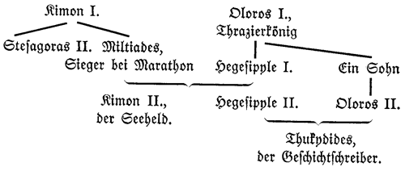
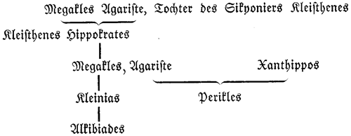
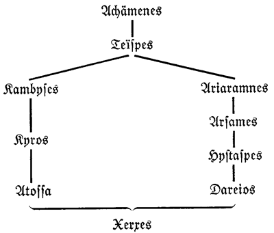

F. W. Hendel Verlag
Naunhof und Leipzig
1. So endigte Aristagoras, der Aufwiegler von Ionien. Histiaios aber, der Machthaber von Milet, kam, von Dareios entlassen, nach Sardes. Als er aus Susa dorthin kam, fragte ihn Artaphernes, der Statthalter von Sardes, wie es nach seiner Meinung zum Abfall der Ionier gekommen sei. Darauf versicherte er, er wisse es nicht und wundere sich über das Ereignis, und tat so, als sei er ganz unbekannt mit allen diesen Vorfällen. Artaphernes aber, der seine Verstellungskünste durchschaute und genau über die Aufwieglung unterrichtet war, sagte: »Hiermit, Histiaios, verhält sich's nun so: du hast den Schuh gemacht, und Aristagoras hat ihn angezogen.«
2. So sprach Artaphernes über die Aufwieglung. Da kam Histiaios in Furcht vor Artaphernes, daß er alles wisse, und entwich in der nächsten Nacht an die Küste. Er betrog also den König Dareios, indem er nun, statt Sardo, die größte Insel, versprochenermaßen zu unterwerfen, die Anführung der Ionier im Kriege gegen Dareios übernahm. Er setzte nach Chios über, ward aber von den Chiern in Fesseln gelegt, die ihn bezichtigten, er wolle etwas gegen sie für Dareios anzetteln. Als aber die Chier von der ganzen Sache unterrichtet wurden, wie er mit dem König verfeindet sei, ließen sie ihn frei.
3. Histiaios wurde von den Ioniern gefragt, was ihn so getrieben habe, den Aristagoras zum Abfall vom Könige anzuhalten, wodurch er die Ionier in so großes Unglück gestürzt habe. Er entdeckte ihnen die wirkliche Ursache keineswegs, sondern sagte, König Dareios habe den Plan gefaßt, die Phönizier aus ihrem Lande nach Ionien zu verpflanzen und die Ionier nach Phönizien, und deswegen habe er ihn dazu angehalten. Der König hatte gar keinen solchen Gedanken, aber er setzte die Ionier damit in Angst.
4. Dann sandte Histiaios durch Hermippos, einen Mann von Atarne, dessen er sich als Boten bediente, Briefe an solche in Sardes befindliche Perser, mit denen er sich schon früher über Aufruhr verständigt hatte. Hermippos aber gab die Briefe nicht bei denen ab, an die er gesandt war, sondern lieferte sie in die Hände des Artaphernes. So bekam dieser Kenntnis von der ganzen Sache und hieß nun den Hermippos die Zuschriften von Histiaios denen geben, denen er sie zu bringen hatte, die Antworten aber, welche die Perser an Histiaios richteten, ihm selbst geben. Da nun dieses entdeckt worden war, richtete Artaphernes sofort viele Perser hin. In Sardes herrschte darüber große Unruhe.
5. Als sich Histiaios in dieser Hoffnung getäuscht sah, führten ihn die Chier, die er darum ersuchte, nach Milet zurück. Aber die Milesier waren froh, daß sie den Aristagoras loswaren, und hatten keineswegs Lust, einen andern Machthaber in ihr Land aufzunehmen, da sie nun die Freiheit gekostet hatten. Also ward Histiaios, da er bei Nacht mit Gewalt wieder in Milet einzudringen suchte, von einem Milesier in der Hüfte verwundet. Von seiner Stadt verstoßen, kam er nach Chios zurück und setzte von dort, da er die Chier nicht dazu brachte, ihm Schiffe zu geben, nach Mytilene über und überredete die Lesbier, ihm Schiffe zu geben. Diese bemannten acht Dreiruderer und fuhren mit Histiaios nach Byzanz. Hier setzten sie sich fest und nahmen die Schiffe weg, die aus dem Pontos fuhren, außer denen, die sich bereit erklärten, dem Histiaios zu folgen.
6. Dies taten Histiaios und die Mytilenaier. Gegen Milet selbst war aber ein großes Land- und Seeheer im Anzug; denn die Feldherrn der Perser hatten sich vereinigt und rückten nun mit ihrer gesamten Macht auf Milet los, indem sie die andern kleinen Städte minder beachteten. Beim Schiffsheer waren die Phönizier am eifrigsten: es zogen aber auch Zyprier, die eben erst wieder unterworfen waren, und Zilizier und Ägypter mit.
7. Diese zogen also gegen Milet und das übrige Ionien in den Krieg. Auf die Nachricht hiervon sandten die Ionier ihre Abgeordneten zum Rat nach dem Panionion. Als diese zusammenkamen an diesem Ort und Rat hielten, beschlossen sie, zu Lande kein Heer gegen die Perser zusammenzuziehen, sondern die Milesier sich selbst in ihren Mauern verteidigen zu lassen, die Schiffe aber zu bemannen, daß auch nicht ein einziges zu Hause bleibe, und sie dann aufs schleunigste bei Lade zu sammeln, um Milet zur See zu decken. Lade ist eine kleine Insel bei der Stadt der Milesier.
7. Lade ist heute keine Insel mehr, sondern durch die Anschwemmungen des Mäanders zu einem Teile des Festlandes geworden.
8. Nun fanden sich die Ionier mit den bemannten Schiffen ein und mit ihnen auch die Äolier, die Lesbos innehaben, und stellten sich auf, wie folgt. Den Flügel gegen Morgen bildeten die Milesier selbst, die achtzig Schiffe stellten. An diese stießen die Priener mit zwölf Schiffen, und die Myusier mit drei Schiffen; auf die Myusier folgten die Teier mit siebzehn Schiffen, auf die Teier die Chier mit hundert Schiffen; neben diesen standen die Erythraier und Phokaier, und zwar die Erythraier mit acht, die Phokaier mit drei Schiffen; an die Phokaier stießen die Lesbier mit siebzig Schiffen, und zuäußerst standen, auf dem Flügel gegen Abend, die Samier mit sechzig Schiffen. Von diesen allen war die Gesamtzahl dreihundertdreiundfünfzig Dreiruderer. Soviel Schiffe hatten die Ionier.
9. Bei den Barbaren aber betrug die Menge der Schiffe sechshundert. Als nun auch diese vor dem milesischen Lande ankamen und das gesamte Landheer auch da war, gerieten die Feldherren der Perser, da sie die Menge der ionischen Schiffe erfuhren, in Furcht, sie möchten nicht mit ihnen fertig werden können und nicht imstande sein, Milet zu erobern, weil sie ja nicht Herren der See wären. Dann aber hatten sie von Dareios nichts Gutes zu erwarten. In dieser Erwägung versammelten sie die Machthaber der Ionier, die nach der Auflösung ihrer Herrschaft durch Aristagoras von Milet zu den Medern geflohen und jetzt mit im Heere gegen Milet waren – sie beriefen also von diesen Männern die, welche da waren, und sagten ihnen folgendes: »Jetzt, ihr Männer von Ionien, kann sich jeder von euch um das Haus des Königs verdient machen, indem er versucht, die Bürger seiner Stadt vom übrigen Bundesheer loszutrennen. Haltet ihnen dazu folgendes Versprechen vor: ›Wegen des Abfalles soll ihnen kein Leid geschehen; es sollen weder ihre Heiligtümer noch ihre Häuser verbrannt werden, und sie sollen auch nicht mehr zu tragen haben als vordem.‹ Wenn sie das aber nicht tun, sondern es durchaus auf eine Schlacht ankommen lassen wollen, so sagt ihnen das zur Drohung, wie sie's auch wirklich treffen wird: ›Sie sollen, wenn sie in der Schlacht überwunden sind, verknechtet werden, und ihre Söhne werden wir zu Verschnittenen machen, ihre Jungfrauen nach Baktra schleppen und ihr Land Fremden übergeben.‹«
10. Das sagten diese, und die Machthaber der Ionier sandten bei Nacht, jeder an seine Landsleute, diese Botschaft. Die Ionier aber, denen die Botschaften wirklich zukamen, blieben hartnäckig und wollten von dem Verrat nichts wissen; auch meinte jede Bürgerschaft, die Perser entböten das ihr allein. Das geschah gleich nach der Ankunft der Perser bei Milet.
11. Dann berieten die Ionier, die bei Lade versammelt waren, wobei denn mancher andere redete, namentlich aber der phokaiische Feldherr Dionysios, der sagte: »Unser Schicksal, ihr Ionier, schwebt nun doch auf der Schärfe des Schermessers, ob wir frei sein sollen oder Sklaven, und zwar davongelaufene Sklaven; wollt ihr also jetzt Mühsale auf euch nehmen, so werdet ihr für den Augenblick beschwerliche Arbeit haben, aber imstande sein, die Feinde zu überwinden und frei zu sein; werdet ihr hingegen der Schlaffheit und Unordnung euch hingeben, so hab' ich für euch keine Hoffnung, daß ihr nicht dem Könige für den Abfall büßen müßt. Darum folgt mir und vertraut euch mir an, und ich verspreche euch: wenn uns die Götter nicht verlassen, werden die Feinde sich entweder nicht mit uns schlagen oder, wenn sie sich schlagen, bei weitem unterliegen.«
12. Als das die Ionier hörten, vertrauten sie sich dem Dionysios an. Er führte nun täglich die Schiffe erst in langer Reihe hintereinander heraus und ließ dann die Ruderer die Durchfahrt zwischen nebeneinander fahrenden Schiffen üben, stellte die Seesoldaten in voller Bewaffnung auf und hielt den Rest des Tages die Schiffe vor Anker, so daß er die Ionier den ganzen Tag abmühte. Sieben Tage nun folgten sie und taten, was er befahl; am achten aber sagten die Ionier, die an solche Mühen nicht gewöhnt und von Beschwerlichkeiten und Sonnenhitze ganz erschöpft waren, zueinander folgendes: »An welcher Gottheit haben wir uns vergangen, daß es uns also ergeht, da wir in rechter Narrheit und Geistesabwesenheit einem phokaiischen Prahler, der nur drei Schiffe stellt, uns selbst anvertraut und untergeordnet haben? Seit er uns in seinen Händen hat, richtet er uns unheilbar zugrunde, wie denn viele von uns in Krankheit gefallen sind und viele ein Gleiches zu erwarten haben. Statt dieser Übel ist es ja besser, wir lassen uns alles mögliche gefallen und warten lieber ab, wie die drohende Knechtschaft ausfällt, als daß wir die gegenwärtige auf uns liegen lassen. Ja, wir wollen ihm fortan nicht folgen!« Das sagten sie, und darauf wollte gleich keiner mehr gehorchen, sondern sie schlugen wie ein Lagervolk Zelte auf der Insel auf, blieben im Schatten liegen und wollten weder auf die Schiffe steigen noch üben.
12. Die Durchfahrt zwischen nebeneinander fahrenden Schiffen: Das Hauptmanöver der antiken Seeschlacht. Die großen Ruderschiffe, deren Ruder rechts und links herausstarrten, wurden erst unbeweglich gemacht, dann geentert. Man ruderte in raschestem Tempo auf die feindliche Schlachtlinie los, zog im letzten Augenblick die eigenen Ruder ein und streifte beim Hindurchfahren durch zwei feindliche Schiffe deren Ruder ab, die gegenüber dem schweren Schiffskörper verletzlich waren wie Insektenbeine. Wenn die Ruder eines Schiffes gebrochen sind, fährt man zum zweitenmal auf dasselbe los und entert. Das ganze Verfahren konnte nur glücken, wenn es unzähligemal eingeübt worden war, so daß jedes Kommando blitzschnell befolgt wurde. Die anstrengenden Übungsstunden behagten den ionischen Seeleuten nicht, die mit ihren auf der Handelsflotte erworbenen Fertigkeiten auskommen zu können glaubten. Die Überlegenheit der athenischen Kriegsflotte beruhte zu einem großen Teile auf der Ausbildung ihrer Mannschaft im Manöver der Durchfahrt. Im bloßen Schiffsbau hätte das reiche Persien jeden andern Staat schlagen können.
13. Als die Feldherrn der Samier dieses Betragen der Ionier bemerkten, nahmen sie nun erst den Vorschlag, den Aiakes, der Sohn des Syloson, auf der Perser Geheiß an sie gesandt hatte, indem er sie bat, das Bundesheer der Ionier zu verlassen – diesen Vorschlag nahmen die Samier an, einmal weil sie die große Unordnung bei den Ioniern sahen, sodann auch, weil es ihnen einleuchtete, daß es unmöglich sei, die Macht des Königs zu überwinden, da sie wohl wußten, wenn sie auch diese Flotte des Dareios überwänden, so werde bald eine andere da sein, fünfmal so groß. Sie hatten also einen Vorwand und sahen nicht so bald die Unwilligkeit der Ionier zu gutem Dienst, als sie's auch nicht für Raub achteten, sich ihre Heiligtümer und ihr Eigentum zu erhalten. Aiakes aber, dessen Vorschlag die Samier annahmen, war ein Sohn Sylosons, des Sohnes des Aiakes, und war als Machthaber von Samos durch Aristagoras von Milet seiner Herrschaft entsetzt worden wie die andern Machthaber von Ionien.
14. Wie also jetzt die Phönizier heranfuhren, führten auch die Ionier ihre Schiffe in langem Zuge hintereinander ihnen entgegen. Als sie aber aufeinander stießen und sich miteinander schlugen, da kann ich nicht mit Bestimmtheit schreiben, welche von den Ioniern in dieser Seeschlacht sich schlecht oder gut hielten; denn sie beschuldigen sich gegenseitig. Die Samier aber sind, sagt man, ihrer Verabredung mit Aiakes gemäß, mit ausgespannten Segeln aus der Schlachtordnung davongefahren nach Samos, elf Schiffe ausgenommen, deren Hauptleute aushielten und die Seeschlacht gegen den Befehl ihrer Feldherrn mitmachten. Diesen widmete die Volksgemeinde der Samier für diese Tat eine Denksäule mit ihren Namen und den Namen ihrer Väter als Männern, die sich gut gehalten hatten, und diese Säule steht auf dem Markte. Als aber die Lesbier ihre Nebenmänner fliehen sahen, machten sie's ebenso wie die Samier, und diesem Beispiel folgten die meisten Ionier.
14. Mit ihren Namen und den Namen ihrer Väter: Es galt als eine Auszeichnung, wenn der Name des Vaters hinzugefügt wurde. In der »Ilias« fordert Agamemnon (X, 67-69) seinen Bruder Menelaos auf:
Ruf auch, wohin du kommst, und ermuntere rings, zu wachen,
Jeglichen Mann nach Geschlecht mit Vaternamen benennend,
Jeglichem Ehr' erweisend, und nicht erhebe dich vornehm!
Herodot gibt bei sehr berühmten Personen nicht nur die Väter, sondern auch noch deren Väter und Großväter an. Diese Ehrung der Väter ist ein Charakterzug heroischer Zeitalter. Auch im »Hildebrandslied« fragt Hildebrand den ihm begegnenden Hadubrand sofort nach seinem Vater und seinen Ahnen.
15. Von denen, die in der Seeschlacht aushielten, wurden die Chier am schlimmsten zugerichtet, führten aber auch herrliche Taten aus, statt schändlich zu weichen. Sie hatten nämlich, wie schon oben bemerkt wurde, hundert Schiffe gestellt, und auf jedem standen vierzig auserlesene Krieger von ihren Bürgern. Angesichts der Flucht vieler treuloser Bundesgenossen wollten sie sich doch nicht gleich diesen Feigen betragen, sondern machten mit den wenigen Bundesgenossen, von denen sie nicht verlassen worden waren, die Durchfahrt durch die feindliche Linie und kämpften, bis sie viele feindliche Schiffe genommen und von den ihrigen die meisten verloren hatten. Mit ihren noch übrigen Schiffen flohen die Chier nach Hause.
16. Aber die von den Chiern, deren Schiffe leck waren, und die nun verfolgt wurden, flüchteten sich nach Mykale. Daselbst ließen sie ihre Schiffe auf den Strand laufen und zogen zu Fuß durch das feste Land weiter. Als nun auf ihrem Zuge die Chier ins Ephesische einrückten und nachts ankamen, während gerade die Weiber dort die Thesmophorien feierten, und die Epheser, ohne noch gehört zu haben, wie es um die Chier stand, ein Heer in ihr Gebiet einrücken sahen, hielten diese sie für nichts anderes als Räuber, die es auf die Weiber abgesehen hätten. Sie schlugen Lärm, führten alles Volk gegen die Chier und töteten sie. In solches Unglück stürzten diese.
16. Über die Thesmophorien s. Anm. zu Buch II, Kapitel 171.
17. Dionysios aber, der Phokaier, fuhr, sobald er sah, die Sache der Ionier sei verloren, nachdem er drei feindliche Schiffe genommen hatte, davon, aber nicht mehr nach Phokaia. Da er wohl wußte, daß es, wie ganz Ionien, in Knechtschaft kommen werde, fuhr er vielmehr stracks nach Phönizien. Hier bohrte er Kauffahrer in den Grund, erbeutete viele Schätze und fuhr nach Sizilien. Dort lebte er als Seeräuber, vergriff sich aber niemals an einem Hellenen, sondern nur an Karthagern und Tyrrhenern.
18. Die Perser aber belagerten nach ihrem Seesiege über die Ionier Milet zu Lande und zu Wasser, untergruben die Mauern und eroberten es mit Anwendung aller möglichen Belagerungswerke im sechsten Jahr nach dem Abfalle des Aristagoras und verknechteten die Stadt, so daß ihr Schicksal den an Milet ergangenen Götterspruch erfüllte.
19. Die Argiver hatten nämlich in Delphi einen Spruch eingeholt, wie sie ihre Stadt retten könnten, und der Gott gab ihnen einen gemeinsamen Spruch, dessen einer Teil die Argiver selbst betraf, während der Zusatz sich auf die Milesier bezog. Nun werde ich das, was auf die Argiver ging, besprechen, wenn ich in meiner Geschichte darauf komme; was er aber den Milesiern, ohne daß sie anwesend waren, verkündete, lautet so:
Und dann wirst auch du, Miletos, du Stifter von Unheil,
Vielen ein Gastmahl werden und Schatz willkommener Gaben.
Deine Gattinnen waschen den Fuß dann vielen Gelockten;
Unseres Tempels werden in Didymoi andere walten.
Damals also traf dieses die Milesier; denn die Männer wurden größtenteils von den Persern, die wirklich lange Haare tragen, erschlagen, während ihre Weiber und Kinder zu Sklaven gemacht wurden und das Heiligtum in Didymoi, Tempel und Orakelstätte, geplündert und verbrannt ward. Der in diesem Heiligtum befindlichen Schätze habe ich aber schon oft in meiner Geschichte gedacht.
20. Sofort wurden die gefangenen Milesier nach Susa abgeführt. König Dareios verpflanzte sie, ohne ihnen weiter etwas zuleide zu tun, an das sogenannte Rote Meer in die Stadt Ampe, an der vorbei der Fluß Tigris sich ins Meer ergießt. Vom milesischen Lande aber behielten die Perser die Stadt samt ihrem ganzen Feldgebiet; den Bergstrich aber gaben sie Karern von Pedasa zum Besitz.
21. Als dieses den Milesiern von den Persern geschah, vergalten ihnen die Sybariten, die Laos und Skidros nach dem Verlust ihrer Stadt bewohnten, nicht Gleiches mit Gleichem. Bei der Eroberung von Sybaris durch die Krotoniaten hatte nämlich die ganze milesische Jugend ihr Haupt geschoren und große Trauer getragen; denn diese Städte hatten vor allen, von denen wir wissen, in enger Gastfreundschaft gestanden. Ganz anders aber die Athener! Die Athener nämlich gaben überhaupt ihren tiefen Kummer über die Eroberung von Milet vielfach zu erkennen, und als Phrynichos ein Trauerspiel, »Die Eroberung von Milet«, dichtete und zur Aufführung brachte, vergossen alle Zuschauer Tränen, und sie straften ihn, weil er ihnen der Ihrigen Unglück vorgestellt hatte, um tausend Drachmen; auch verboten sie, daß jemals einer dies Trauerspiel wieder aufführe.
21. Laos und Skidros sind Städte in Lukanien. – Phrynichos ist ein Vorgänger des Aischylos. Seine »Eroberung von Milet« war noch nicht das, was wir ein Drama nennen, sondern bestand fast nur aus Chören, d. h. aus Klagegesängen, so daß es kein Wunder war, daß die Zuschauer, denen der Fall Milets naheging, sehr bald in sie einstimmten.
22. Milet also ward leer von Milesiern. Von den Samiern aber waren die Begüterten mit dem Verhalten ihrer Feldherrn gegen die Meder gar nicht zufrieden. Sie berieten gleich nach der Seeschlacht und beschlossen, ehe noch ihr Machthaber Aiakes in ihr Land komme, auszufahren und sich anderswo anzusiedeln, statt zu bleiben und der Meder und des Aiakes Knechte zu sein. Die Zanklaier schickten nämlich aus Sizilien um dieselbe Zeit Boten nach Ionien und riefen die Ionier nach Kale Akte, wo sie eine Stadt der Ionier gründen wollten. Dieses Kale Akte ist aber sizilisch, und zwar liegt es an der Seite Siziliens, die Tyrrhenien zugewandt ist. Auf deren Einladung also zogen von allen Ioniern bloß die Samier aus und mit ihnen die Milesier, die davongekommen waren.
22. Kale Akte heißt »schönes Vorgebirge«. Der Name änderte sich dann in Kalakte.
23. Unterdessen traf es sich, daß folgendes geschah. Die Samier waren auf ihrem Wege nach Sizilien bis Lokroi Epizephyrioi gekommen, und die Zanklaier samt ihrem König, mit Namen Skythes, belagerten eine sizilische Stadt, um sie einzunehmen. Das erfuhr Anaxilaos, der Machthaber von Rhegion, der damals mit den Zanklaiern in Zwietracht war, ließ sich mit den Samiern ein und überredete sie, es sei das gegebene, Kale Akte, wohin ihr Zug ging, fahren zu lassen und Zankle, das leer von Männern sei, zu besetzen. Da nun die Samier seinem Rate folgten und Zankle in Besitz nahmen, eilten die Zanklaier, auf die Nachricht, ihre Stadt sei genommen, ihr zu Hilfe und riefen auch Hippokrates, den Machthaber von Gela, herbei; denn dieser war ihr Bundesgenosse. Wie nun Hippokrates mit seinem Heere ihnen zu Hilfe kam, legte er den Skythes, den Beherrscher der Zanklaier, unter dem Vorwande, daß er den Verlust der Stadt herbeigeführt habe, samt seinem Bruder Pythogenes in Ketten und schickte sie nach der Stadt Inykos ab; die übrigen Zanklaier aber gab er nach einer Übereinkunft mit den Samiern und gegenseitigem Treuschwure preis. Dafür war ihm zum Lohn von den Samiern zugesagt, daß er von allen Geräten und Sklaven in der Stadt die Hälfte, die draußen auf dem Lande aber samt und sonders bekommen sollte. Die meisten Zanklaier hielt nun Hippokrates selbst als Sklaven in Banden, ihre Vornehmsten aber, dreihundert an der Zahl, gab er den Samiern, um sie hinzurichten, was jedoch die Samier nicht taten.
23. Lokroi Epizephyrioi war von ozolischen Lokrern nahe beim Vorgebirge Zephyrion (das vom Westwind Umwehte) an der östlichen Küste der Südwestspitze Italiens begründet worden.
24. Skythes aber, der Fürst der Zanklaier, entrann aus Inykos nach Himera, begab sich von dort nach Asien und ging zum König Dareios hinauf. Dareios hielt ihn für den rechtschaffensten Mann von allen, die aus Hellas zu ihm hinaufgekommen waren. Er ging nämlich mit Bewilligung des Königs nach Sizilien und kam aus Sizilien wieder zum König zurück, so daß er in Persien in hohem Alter und größtem Wohlstande starb. – Die Samier waren also der Mederherrschaft entgangen und waren ohne Schweiß in den Besitz der herrlichen Stadt Zankle gekommen.
25. Nach jenem Seekampfe um Milet aber führten die Phönizier Aiakes, den Sohn Sylosons, auf der Perser Geheiß nach Samos zurück, weil er sich um diese sehr verdient gemacht und Großes geleistet hatte. Auch wurden von allen Empörern gegen Dareios den Samiern allein, als Belohnung für das Entweichen ihrer Schiffe aus dem Seekampf, weder die Stadt noch die Heiligtümer verbrannt. Nach Milets Eroberung besetzten aber die Perser sogleich Karien, indem die Städte sich zum Teil freiwillig ins Joch beugten, zum Teil mit Gewalt dahin gebracht wurden. So geschah dieses.
26. Dem Histiaios von Milet aber, der sich bei Byzanz aufhielt und die ionischen Frachtschiffe, die aus dem Pontos zurückfuhren, aufgriff, ward hinterbracht, wie es mit Milet ergangen war. Da übertrug er seine Angelegenheiten im Hellespont dem Bisaltes, einem Sohn des Apollophanes, aus Abydos; er selbst aber fuhr mit seinen Lesbiern nach Chios. Hier schlug er sich mit der Besatzung der Chier, die ihn nicht eindringen lassen wollte, in den sogenannten Koilen aus dem Chiergebiet. Von diesen erschlug er eine Menge; auch der übrigen Chier, die in der Seeschlacht schwer gelitten hatten, wurde Histiaios mit seinen Lesbiern von der chiischen Stadt Polichna aus Herr.
26. Koilen heißt Schluchten.
27. Es zeigt sich aber gern durch Vorzeichen an, wenn großes Unheil über eine Stadt oder ein Volk kommen soll, und so geschahen auch den Chiern vorher große Zeichen. Als sie nach Delphi einen Chor von hundert Jünglingen sandten, kamen nur zwei wieder nach Haus, und die achtundneunzig andern raffte eine Seuche dahin; sodann fiel in ihrer Stadt um dieselbe Zeit, kurz vor der Seeschlacht, über den Knaben in der Leseschule die Decke ein, so daß von hundertundzwanzig Knaben nur ein einziger davonkam. Das waren die Vorzeichen, die ihnen der Gott gab, und dann kam die Seeschlacht, die der Stadt den Stoß gab, und nach der Seeschlacht kam noch Histiaios mit den Lesbiern, der die Chier in ihrem elenden Zustande leicht unterwarf.
28. Von da zog Histiaios nach Thasos mit einer starken Zahl von Ioniern und Äoliern. Da er aber Thasos belagerte, kam ihm Botschaft zu, daß die Phönizier von Milet aus gegen das übrige Ionien heranführen. Auf diese Nachricht verließ er Thasos, ohne es zu zerstören, und eilte mit dem ganzen Heere nach Lesbos. Von Lesbos ging er aber, da sein Heer Hunger litt, aufs Festland hinüber, um in Atarneus Frucht zu schneiden, die dortige sowohl als die am Flusse Kaïkos im Mysischen. In diesen Gegenden war gerade der persische Feldherr Harpagos mit einem ziemlich großen Heere. Der stieß mit ihm, als er gelandet war, zusammen und nahm den Histiaios selbst lebendig gefangen und machte den größten Teil seines Heeres nieder.
29. Gefangen wurde aber Histiaios, wie folgt. Als sich die Hellenen mit den Persern bei Malene in der Landschaft Atarneus schlugen, hielten sie lange stand, aber dann brach die Reiterei los und warf sich auf die Hellenen. Die Reiterei entschied die Schlacht, und die Hellenen flohen. Histiaios aber hatte in der Hoffnung, der König werde ihn für sein Vergehen nicht hinrichten lassen, sein Leben so lieb, daß er sich einem Perser, der ihn auf der Flucht einholte, ergriff und eben niederstechen wollte, durch einen Ausruf in persischer Sprache zu erkennen gab, er sei Histiaios, der Milesier.
30. Wäre er nun gleich, wie er gefangen war, zum König Dareios abgeführt worden, so wäre ihm, denk' ich, kein Leid geschehen, sondern dieser hätte ihm seine Schuld erlassen. Ebendeswegen aber, und damit er nicht, wenn er durchkomme, wieder beim König groß werde, nahmen ihn Artaphernes, der Statthalter von Sardes, und Harpagos, der ihn gefangengenommen hatte, sobald sie ihn in Sardes hatten, und spießten seinen Leib auf den Pfahl; seinen Kopf aber salzten sie ein und brachten ihn so zum König Dareios nach Susa. Als das vor Dareios kam, schalt er die, die solches getan hatten, weil sie ihn nicht lebendig vor sein Angesicht gebracht hatten, und befahl ihnen, sie sollten den Kopf des Histiaios waschen und schmücken und bestatten, da er ein Mann sei, der sich großes Verdienst um ihn und die Perser erworben habe. So ging es mit Histiaios.
31. Das Schiffsheer der Perser, das in Milet überwintert hatte, fuhr im zweiten Jahre aus und nahm mit leichter Mühe die Inseln, die am Festlande liegen, Chios, Lesbos und Tenedos. Auf jeder Insel nun, die es nahm, machten die Barbaren immer eine große Fangjagd auf die Menschen. Ihre Fangjagd ist aber von dieser Art: ein Mann hat den anderen bei der Hand in einer Reihe von der Nordküste bis zur Südküste, und so durchziehen sie die ganze Insel und jagen die Menschen auf. Sie nahmen aber auch die ionischen Städte auf demselben Zug; nur machten sie dort keine Fangjagd auf die Menschen, weil es nicht tunlich war.
32. Da straften die Perserfeldherrn die Drohungen nicht Lügen, die sie den Ioniern angedroht hatten, als sie ihnen gegenüberlagen. Denn als sie die Städte in ihrer Gewalt hatten, lasen sie die wohlgebildetsten Knaben aus, verschnitten sie und machten sie aus Mannhaftigen zu Eunuchen, und die Schönsten der Jungfrauen schleppten sie zum König fort; wie sie dies taten, so brannten sie auch ihre Städte samt den Heiligtümern ab. So wurden zum drittenmal die Ionier verknechtet, zuerst von den Lydern und dann zweimal hintereinander von den Persern.
33. Von Ionien weitergehend nahm das Schiffsheer alles, was links von der Einfahrt in den Hellespont liegt; denn was rechts davon liegt, hatten die Perser bereits zu Lande in ihre Gewalt gebracht. Es liegen aber auf der europäischen Seite des Hellesponts der Chersones, auf dem viele Städte liegen, Perinthos, die thrazischen Festen, Selymbria und Byzanz. Die Byzantiner nun und die gegenüberliegenden Chalkedonier warteten nicht, bis die Phönizier heranfuhren, sondern entwichen aus ihrem Lande ins Innere des Pontos Euxeinos und legten daselbst die Stadt Mesambria an. Die Phönizier aber brannten die genannten Orte nieder und wandten sich gegen Prokonnesos und Artake, die sie gleichfalls dem Feuer übergaben. Dann fuhren sie wieder nach dem Chersones, um noch die übrigen Städte zu verheeren, die sie bei der ersten Landung nicht verwüstet hatten. Gegen Kyzikos unternahmen sie überhaupt nichts, weil sich die Kyzikener von selbst noch vor dem Einlaufen der Phönizier dem König ergeben hatten, durch Übereinkunft mit Oibares, dem Sohne des Megabazos, dem Statthalter zu Daskyleion. Auf dem Chersones aber unterwarfen die Phönizier außer der Stadt Kardia alle andern.
34. Über dieselben war bis dahin Machthaber gewesen Miltiades, der Sohn Kimons, des Sohnes des Stesagoras, nachdem diese Herrschaft zuerst Miltiades, der Sohn des Kypselos, auf folgende Art erworben hatte. Es saßen auf dieser Halbinsel Dolonker thrazischen Stammes. Diese Dolonker sandten, als sie im Kriege von den Absinthiern bedrängt wurden, ihre Könige nach Delphi um einen Spruch über den Krieg. Da sagte ihnen die Pythia, sie sollten den als Ansiedler in ihr Land holen, der sie auf dem Rückwege vom Heiligtum zuerst gastlich einlade. Die Dolonker zogen nun auf der heiligen Straße durch das Land der Phoker und der Böotier und wandten sich, da sie niemand einlud, nach Athen.
34. Die heilige Straße ging von Athen über Eleusis, das Kithärongebirge, Platää, Theben, Haliartos, Chaironeia, Daulis nach Delphi.
35. In Athen hatte damals Peisistratos die ganze Macht in Händen, doch war auch Miltiades, der Sohn des Kypselos, ein Großer, aus einem Hause, das ein Viergespann hielt, ursprünglich von Aiakos und der Aigina stammend, nach seinen jüngern Ahnen aber ein Athener, da Philaios, der Sohn des Aias, aus diesem Hause zuerst Athener geworden war. Dieser Miltiades saß in seiner Vorhalle, sah die Dolonker vorübergehen, in ihrer ausländischen Tracht und mit ihren Lanzen, und rief sie an. Sie traten herzu, und da bot er ihnen Herberge und gastlichen Empfang an. Das nahmen sie an und eröffneten ihm nach der gastlichen Bewirtung die ganze Weissagung. Sie baten bei dieser Eröffnung, er möge dem Wunsche des Gottes folgen. Dazu war Miltiades, wie er es hörte, gleich bereit, da ihm die Herrschaft des Peisistratos zur Last war und er sich von ihr zu lösen wünschte. Sogleich reiste er nach Delphi, um das Orakel zu befragen, ob er tun dürfe, was die Dolonker von ihm begehrten.
35. Es hielt ein Viergespann, um sich an den Wettfahrten in Olympia zu beteiligen. Dieser kostspielige Sport war das Kennzeichen der großen Häuser. – Philaios sollte den Athenern die Insel Salamis abgetreten haben und dafür athenischer Bürger geworden sein.
36. Da nun auch die Pythia es ihn tun hieß, nahm jetzt dieser Miltiades, der Sohn des Kypselos, der vordem zu Olympia einen Sieg mit dem Viergespann gewonnen hatte, jeden von den Athenern mit, der an dem Zuge teilnehmen wollte, und fuhr mit den Dolonkern hin und besetzte das Land. Darauf setzten die, von denen er geholt war, ihn als Machthaber ein. Nun schnitt er zuerst die Landenge des Chersones durch eine Mauer von der Stadt Kardia bis Paktye ab, damit die Absinthier nicht in das Land eindringen und ihnen Schaden tun könnten. Diese Landenge ist aber sechsunddreißig Stadien breit, und von dieser Landenge ab erstreckt sich der ganze Chersones in einer Länge von vierhundertundzwanzig Stadien.
37. Nachdem also Miltiades den Hals des Chersones vermauert hatte und auf diese Weise die Absinthier abhielt, führte er von den übrigen zuerst mit den Lampsakenern Krieg, wobei ihn die Lampsakener durch einen Hinterhalt gefangennahmen. Miltiades war aber ein guter Freund des Kroisos, des Lyders. Als daher Kroisos dies erfuhr, ließ er den Lampsakenern entbieten, sie sollten den Miltiades loslassen; widrigenfalls er sie wie eine Fichte auszurotten drohte. Da besprachen sich die Lampsakener hin und her, was das Wort sagen wolle, das Kroisos ihnen angedroht habe: sie wie eine Fichte auszurotten. Endlich verstand es einer von den Älteren und erklärte, wie das auch der Fall ist, daß die Fichte allein unter allen Bäumen, wenn man sie abhaut, keinen Schößling mehr treibt, sondern ganz und gar abstirbt. Aus Furcht vor Kroisos gaben die Lampsakener den Miltiades los und frei.
37. Es ist ein Irrtum, daß die abgehauene Fichte keine Schößlinge mehr treibt. Also ist die Deutung, die der greise Lampsakener gibt, falsch. Der alte Name von Lampsakos war aber Fichtenstadt (Pityoessa), und Kroisos hat den Bewohnern von »Fichtenstadt« einfach sagen lassen: »Ich werde die Fichte ausrotten!«
38. Dieser kam also durch die Hilfe des Kroisos davon. Er starb kinderlos, nachdem er Herrschaft und Vermögen dem Stesagoras übergeben hatte, einem Sohne Kimons, seines Bruders mütterlicherseits. Ihm opfern noch die Chersonesiten, wie es Brauch ist bei dem Begründer einer Kolonie, und stellen dabei Spiele mit Wettkämpfen und Wettrennen an, bei denen kein Lampsakener mitkämpfen darf. Während eines Krieges gegen die Lampsakener fand aber auch Stesagoras, der gleichfalls kinderlos war, seinen Tod in dem Rathause durch einen Beilhieb auf den Kopf, von einem Manne, der den Überläufer spielte, in Wahrheit aber ein erbitterter Feind war.
38. Die Mutter des Miltiades, der die Herrschaft auf dem Chersones begründet hatte, heiratete nach dem Tode des Kypselos den Stesagoras und gebar ihm den Kimon. Von da ab ist der Stammbaum folgender:

Oloros II. war Bürger in Athen geworden. Blutmäßig ist Kimon ein halber Thrazier, und Thukydides ist mehr Thrazier als Athener, obwohl er der Enkel des Marathonsiegers ist. Da Thukydides im Gegensatze zu dem anmutigen Erzähler Herodot vor allem Wissenschaftler sein will, ist diese Blutmischung nicht ohne Bedeutung. Die Thrazier gehören wie die Griechen zum indogermanischen Sprachstamm und erinnern in ihren Sitten vielfach an die Germanen. Man kann also ruhig sagen, daß Thukydides einen nordischen Einschlag hat. Es ist kein Zufall, daß Leopold von Ranke sich ihm verwandt fühlte. Eine ähnliche Blutmischung scheint auch bei Aristoteles aus dem mazedonischen Stageira vorgelegen zu haben: »Ich glaube auch«, sagt Wilamowitz (Aristoteles und Athen, I, S. 117), »daß etwas Rassenverwandtschaft zwischen dem Gutsherrn von Skaptehyle und dem Stagiriten ist. Zu dem Mythischen verhalten sie sich ganz gleich, vollkommen indifferent, und sie sehen beide in der Weltgeschichte zwar kein Spiel des Zufalls, aber auch keine Tragödie, von Gott gedichtet, vielmehr das Kämpfen menschlicher Leidenschaft und menschlicher Einsicht, in dem der an Einsicht und Willenskraft Stärkere den Sieg behält, nicht die bessere Sache.« – Als eine Tragödie sah Herodot die Geschichte an.
39. Da auf diese Art auch Stesagoras umgekommen war, so ward jetzt Miltiades, der Sohn Kimons, der Bruder des verstorbenen Stesagoras, zur Besitznahme der Herrschaft auf dem Chersones mit einem Dreiruderer von den Peisistratiden ausgerüstet. Sie hatten ihm auch in Athen Gutes erwiesen, als wären sie sich keiner Schuld bewußt am Tode seines Vaters Kimon. Wie es dabei zugegangen war, will ich an anderer Stelle erzählen. Miltiades kam nach dem Chersones und blieb immer in seinem Hause, als wolle er damit seinen verstorbenen Bruder Stesagoras ehren. Da dies die Chersonesiten hörten, versammelten sich von allen Seiten die Großen aus allen ihren Städten, und wie sie nun zur Beileidsbezeugung allesamt zu ihm kamen, legte er sie in Bande. So war Miltiades Herr vom Chersones, hielt sich auch fünfhundert Söldner und heiratete eine Tochter des Oloros, des Thrazierkönigs, Hegesipyle.
39. Die »andere Stelle«, an der Herodot die Ermordung Kimons (I.) berichtet, ist Kapitel 103.
40. Dieser Miltiades, der Sohn Kimons, war noch nicht lange auf dem Chersones, als er in Umstände kam, die härter waren als die, von denen ich zunächst zu berichten habe. Schon drei Jahre vor diesen mußte er nämlich vor den Szythen fliehen, indem die Weideszythen, vom König Dareios gereizt, sich vereinigt und einen Zug bis nach diesem Chersones gemacht hatten. Damals flüchtete Miltiades, ohne ihre Ankunft abzuwarten, aus dem Chersones, bis die Szythen abgezogen waren und die Dolonker ihn wieder zurückholten. Dies geschah drei Jahre vor dem, was ihn jetzt traf.
41. Jetzt hatte er, als er erfuhr, daß die Phönizier in Tenedos seien, fünf Dreiruderer beladen mit allen Schätzen, die ihm zur Hand waren, und fuhr nach Athen. Wie er nun von der Stadt Kardia aus durch den Melasbusen gefahren war und gerade um den Chersones herumbog, geriet er mit seinen Schiffen unter die Phönizier. Miltiades selbst mit vier von seinen Schiffen entkam nach Imbros; aber das fünfte Schiff holten die Phönizier ein und nahmen es. Der Hauptmann dieses Schiffes war aber Metiochos, der älteste von den Söhnen des Miltiades, den er nicht von der Tochter des Thraziers Oloros, sondern von einer andern hatte; den nahmen die Phönizier samt dem Schiffe gefangen. Wie sie nun erfuhren, daß er ein Sohn des Miltiades sei, führten sie ihn hinauf zum König, in der Hoffnung, großen Dank davon zu haben, weil ja Miltiades unter den Ioniern die Meinung vertreten hatte, man solle den Szythen folgen, als diese begehrten, sie möchten die Brücke abbrechen und nach Hause fahren. Dareios aber tat dem Metiochos, dem Sohne des Miltiades, wie ihn die Phönizier zu ihm hinaufführten, nichts Böses, sondern vieles Gute; denn er gab ihm Haus und Gut und auch ein persisches Weib, von der er Kinder bekam, die unter die Perser aufgenommen wurden. Miltiades aber kam von Imbros nach Athen.
42. In diesem Jahre geschah auch keine weitere Feindseligkeit von den Persern gegen die Ionier, aber etwas, was den Ioniern sehr nützlich war, geschah in diesem Jahre. Artaphernes, der Statthalter von Sardes, ließ Gesandte aus den Städten kommen und zwang die Ionier zu Verträgen unter sich, daß sie einander rechtspflichtig sein und nicht in Fehde und Raub miteinander leben wollten. Das zwang er sie zu tun, und ihre Lande vermaß er nach Parasangen, wie der persische Name für dreißig Stadien lautet, und setzte auf Grund dieser Vermessung die Abgaben für die einzelnen an. Sie sind seitdem unverändert geblieben, bis auf meine Zeit, wie sie von Artaphernes angesetzt wurden, und sie wurden von ihm ungefähr ebenso angesetzt, wie sie schon vorher waren. Das geschah im Frieden.
43. Mit Frühlingsanbruch aber kam, nach Verabschiedung der übrigen Feldherrn durch den König, Mardonios, der Sohn des Gobryas, an die Küste herunter mit einem sehr großen Landheer und großen Schiffsheer, ein junger Mann, der erst jüngst des Königs Dareios Tochter Artazostra geheiratet hatte. Dieses Heer führte Mardonios bis nach Zilizien, bestieg dann ein Schiff und fuhr zur See weiter mit den übrigen Schiffen; das Landheer führten andere Anführer nach dem Hellespont. Als Mardonios um Asien herum in Ionien ankam, da geschah etwas, das, wenn ich es berichte, in großes Erstaunen die Hellenen versetzen wird, die nicht glauben wollen, daß unter den sieben Persern Otanes den Vorschlag gemacht habe, die Perser sollten eine freie Volksregierung haben. Mardonios setzte nämlich alle Machthaber in Ionien ab und richtete Volksregierungen in den Städten ein. Dann eilte er nach dem Hellespont. Als hier eine große Menge von Schiffen und auch ein großes Landheer beisammen waren, setzten sie auf den Schiffen über den Hellespont und zogen durch Europa, und zwar gegen Eretria und Athen.
44. Diese Städte gaben den Vorwand für ihren Zug her; ihre Absicht war aber, soviel hellenische Städte wie möglich zu unterwerfen; daher unterwarfen sie mit der Seemacht die Thasier, die keine Hand gegen sie erhoben hatten, und machten dann mit der Landmacht auch die Mazedonier zu ihren Knechten. Die andern waren es schon, da alle Völker, die diesseits von Mazedonien liegen, bereits unter ihrem Joche waren. Von Thasos fuhren sie nach dem gegenüberliegenden Festland, dann an der Küste entlang bis Akanthos, und von Akanthos fuhren sie um den Athos. Während der Umschiffung überfiel sie aber ein furchtbar starker Nordwind, der eine Menge Schiffe arg zurichtete, indem er sie gegen den Athos warf: man sagt, es seien von den Schiffen an dreihundert dort zugrunde gegangen, und von den Menschen über zwanzigtausend. Da nämlich das Meer gerade dort am Athos voll Raubfische ist, so kamen die einen durch die Fische um, die sie verschlangen, während die andern an den Klippen zerschmettert wurden; andere ertranken, weil sie nicht schwimmen konnten, und andere kamen durch Frost um. So ging es also dem Schiffsheer.
45. Das Landheer aber, mit dem Mardonios in Mazedonien lagerte, überfielen des Nachts thrazische Bryger, und diese Bryger erschlugen eine Menge von ihnen und verwundeten den Mardonios selbst. Dennoch entgingen auch sie dem Joche der Perser nicht. Denn Mardonios brach nicht eher aus dieser Gegend auf, als bis er sie unterworfen hatte. Nach ihrer Unterjochung aber kehrte Mardonios mit seinem Heere um, weil er schwere Verluste zu Lande durch die Bryger und zur See am Athos erlitten hatte. Dieses Heer kam also nach unrühmlichem Kampfe wieder nach Asien zurück.
46. Im zweiten Jahre schickte Dareios an die Thasier, die von ihren Nachbarn verleumdet waren, daß sie Anstalten zum Abfall träfen, einen Gesandten mit dem Befehl, ihre Mauern niederzureißen und ihre Schiffe nach Abdera zu liefern. Die Thasier hatten nämlich, weil sie Histiaios von Milet belagert hatte, die großen Einkünfte, die sie hatten, dazu verwandt, lange Schiffe zu bauen und ihre Stadt durch eine Ringmauer zu befestigen. Ihre Einkünfte kamen aber vom Festland und von den Bergwerken; denn aus dem Goldbergwerk in Skapte Hyle gingen im Durchschnitt achtzig Talente ein, und aus dem in Thasos selbst zwar weniger, aber doch so viel, daß den Thasiern, die für ihre Felder keine Steuern zu zahlen hatten, im Durchschnitt vom Festland und den Bergwerken jährlich zweihundert, im besten Fall aber auch dreihundert Talente eingingen.
46. Im zweiten Jahre: Nach dem Zuge des Mardonios.
Zeittafel:
500-479. Perserkriege.
500-494. Ionischer Aufstand.
495. Sieg der Perser bei Lade.
492. Zug des Mardonios.
490. Schlacht bei Marathon.
480. Leonidas fällt bei den Thermopylen. Themistokles siegt bei Salamis.
479. Pausanias siegt bei Platää. Leotychidas siegt beim Vorgebirge Mykale.
Skapte Hyle heißt Grubenwald. – Die Thasier hatten für ihre Felder keine Steuern zu zahlen, weil sie fast gar kein Getreide bauten. Sie kauften ihre Lebensmittel.
47. Diese Bergwerke sah auch ich und wurde am meisten durch das Bergwerk in Staunen versetzt, das die Phönizier entdeckt haben, als sie unter Führung des Thasos diese Insel besiedelten, die auch von diesem Phönizier Thasos ihren Namen hat. Dieses phönizische Bergwerk der Thasier liegt zwischen dem Ort, der Ainyra heißt, und Koinyra, gegenüber von Samothrake, ein großer Berg, vom Nachgraben ganz umgewühlt. So verhält sich das. Die Thasier aber rissen auf Befehl des Königs ihre Mauer nieder und lieferten ihre sämtlichen Schiffe nach Abdera.
48. Darauf versuchte Dareios die Hellenen, was sie im Sinn hätten, ob Krieg gegen ihn zu führen oder sich ihm zu ergeben. Er sandte also Herolde, einen dahin, den andern dorthin, durch ganz Hellas mit dem Auftrag, Erde und Wasser für den König zu fordern. Diese schickte er also nach Hellas; andere Herolde aber sandte er in die ihm zinspflichtigen Seestädte mit dem Befehl, lange Schiffe und Fahrzeuge für die Reiterei zu bauen.
49. Diese bauten die Schiffe, und den Herolden, die nach Hellas kamen, gaben viele von den Festlandsbewohnern, was ihnen der Perser abfordern ließ, die Inselbewohner aber alle, sobald sie mit der Forderung kamen. Wie die andern Inselbewohner gaben nun auch die Ägineten dem Dareios Erde und Wasser. Das taten sie aber nicht so bald, als ihnen die Athener auf den Hals kamen, die glaubten, die Ägineten hätten sie dabei im Auge gehabt, um mit dem Perser gegen sie in den Krieg zu ziehen. Diesen Vorwand ergriffen sie mit Freude, gingen nach Sparta und verklagten die Ägineten, wie sie als Verräter an Hellas sich betragen hätten.
50. Auf diese Klage ging Kleomenes, der Sohn des Anaxandridas, der König von Sparta, nach Ägina hinüber, um die Schuldigsten der Ägineten zu ergreifen. Als er sie aber festzunehmen versuchte, stellten sich ihm mehrere Ägineten, darunter auch Krios, der Sohn des Polykritos, entgegen. Der erklärte, es werde ihm nicht wohl bekommen, führe er auch nur einen Ägineten weg; denn er tue das nicht im Namen der spartanischen Volksgemeinde, sondern sei von den Athenern bestochen; sonst würde er den andern König dazu mitgebracht haben. Das sagte er auf Anweisung des Demaratos. Kleomenes fragte nun, indem er von Ägina abzog, den Krios, wie sein Name sei, und dieser gab ihm denselben richtig an. Da sprach Kleomenes zu ihm: »Nun denn, Widder, stähle deine Hörner für ein hartes Übel, auf das du stoßen sollst!«
50. Krios heißt Widder.
51. In Sparta aber verleumdete unterdessen den Kleomenes Demaratos, der Sohn Aristons, der zurückgeblieben war. Er war gleichfalls König der Spartiaten, aber vom geringeren Hause, das insofern um nichts geringer ist, als sie einen Stammvater haben: nur daß des Eurysthenes Haus wegen der Erstgeburt in größeren Ehren steht.
52. Die Lazedämonier sagen nämlich, womit kein Dichter übereinstimmt, Aristodemos, der Sohn des Aristomachos, des Sohnes des Kleodaios, des Sohnes des Hyllos, habe sie, als ihr König, in das Land geführt, das sie nun besitzen, und nicht erst die Söhne des Aristodemos. Und nicht lange Zeit darauf sei die Frau des Aristodemos, mit Namen Argeia, niedergekommen; sie sei eine Tochter des Antesion, des Sohnes des Tisamenos, des Sohnes des Thersandros, des Sohnes des Polyneikes. Diese sei mit Zwillingen niedergekommen, die Aristodemos noch sah, dann aber an einer Krankheit starb. Nun hätten die damaligen Lazedämonier beschlossen, nach ihrem Brauch den ältesten Sohn zum König zu machen. Allein sie hätten nicht gewußt, welchen sie wählen sollten; so völlig glichen sie einander. Nach vergeblicher Untersuchung, vielleicht auch schon vorher, hätten sie die Mutter befragt. Diese habe jedoch erklärt, sie selbst könne sie nicht unterscheiden; sie habe das, obwohl sie's recht gut wußte, in der Absicht gesagt, daß beide Könige werden möchten. Die Lazedämonier hätten keinen Rat mehr gewußt und in ihrer Ratlosigkeit nach Delphi gesandt, um zu fragen, was in der Sache zu tun sei. Darauf habe ihnen die Pythia befohlen, beide Knaben für Könige zu halten, aber den älteren mehr zu ehren. Diesen Ausspruch habe die Pythia getan, den Lazedämoniern aber, da sie um nichts besser Rat wußten, wie sie den ältesten herausfinden sollten, habe ein Messenier Anleitung gegeben, mit Namen Panites. Dieser Panites habe den Lazedämoniern die Anleitung gegeben, sie sollten die Mutter beobachten, welchen Knaben sie zuerst wasche und nähre. Zeige sich, daß sie es immer gleich mache, so hätten sie alles, was sie suchten und gern herausbrächten; schwanke sie aber selbst und mache es bald so, bald so, dann hätten sie den Beweis, daß jene auch nicht mehr wisse, und müßten einen andern Weg einschlagen. Da hätten denn die Spartiaten, als sie nach Anleitung des Messeniers die Mutter dieser Kinder des Aristodemos beobachteten, gefunden, daß sie immer dem Erstgebornen im Speisen und Waschen den Vorrang gab, ohne zu wissen, weshalb sie beobachtet wurde. Dieses Kind, von dem sie fanden, daß es bei der Mutter als das Erstgeborne den Vorrang hatte, hätten sie nun öffentlich erzogen und ihm den Namen Eurysthenes gegeben, dem jüngern aber den Namen Prokles. Als Männer sollen dann eben diese Brüder ihre ganze Lebenszeit miteinander im Streit gewesen sein, und so soll es auch bei ihren Nachkommen immerfort gehen.
52. Kein Dichter übereinstimmt: Die Dichtungen mit der abweichenden Darstellung sind nicht erhalten. – Hyllos ist der Sohn des Herakles.
53. Das sagen also die Lazedämonier allein unter den Hellenen. Folgendes aber schreibe ich, wie es übereinstimmend die Hellenen sagen, daß nämlich diese Könige der Dorier bis auf Perseus, den Sohn der Danaë (des Gottes zu geschweigen), von den Hellenen richtig abgeleitet und als Hellenen bezeichnet werden, da sie damals bereits zu den Hellenen gezählt wurden. Ich sage aber »bis auf Perseus« und gehe nicht weiter hinauf, aus dem Grunde, weil kein sterblicher Vater des Perseus dem Namen nach vorkommt, wie Amphitryon als der des Herakles. Also ist es ein triftiger Grund, aus dem ich mit Recht bemerkte: »Bis auf Perseus.« Leitet man aber rückwärts von Danaë, der Tochter des Akrisios, das Geschlecht ihrer Väter her, so wird sich ergeben, daß die Fürsten der Dorier ihrer eigentlichen Abstammung nach Ägypter sind. Das wäre also die Herkunft nach dem, was die Hellenen sagen.
53. Perseus ist der Sohn der Danaë und des Zeus, der als Gott keinem Stamme zugerechnet werden kann. Bei Herakles ist ein Mann der Mutter, Amphitryon, vorhanden, der zwar den Sohn nicht erzeugt hat, aber als sein sogenannter Vater doch die Aufstellung eines Stammbaumes ermöglicht. Bei Perseus gibt es nur einen Stammbaum der Mutter. Ihr Vater Akrisios aber ist der Urenkel des Danaos, des Königs von Ägypten, der als Flüchtling nach Argos gekommen sein soll.
54. Wie aber die Sage der Perser lautet, so wäre Perseus ein Assyrier gewesen und selbst Hellene geworden, aber nicht schon die Vorfahren des Perseus; jedoch die Väter des Akrisios, die freilich den Perseus gar nichts angingen, seien wirklich, wie es die Hellenen sagen, Ägypter. So viel sei denn hierüber gesagt!
54. Eher als die Perser selbst werden in Persien wohnende Griechen aus Perseus erst einen Perser, dann einen Angehörigen des Volkes, das vor den Persern Asien beherrscht hatte, also einen Assyrier, gemacht haben.
55. Wie sie aber, obwohl sie Ägypter waren, und durch welche Taten sie die Königswürden der Dorier erhalten haben, darüber haben andere gesprochen; wir lassen es also. Was aber andere noch nicht vorweggenommen haben, dessen will ich gedenken.
56. Folgende Ehrenrechte haben die Spartiaten ihren Königen gegeben: zwei Priesterschaften, die des lazedämonischen Zeus und die des himmlischen Zeus; freie Hand, gegen welches Land sie Krieg führen wollen, worin ihnen kein Spartiat hinderlich sein darf, widrigenfalls er der Acht verfällt; dann, daß beim Aufbruch ins Feld die Könige die Ersten sind und bei der Rückkehr die Letzten; daß beim Kriegsheer hundert Auserlesene ihre Wache bilden; daß sie bei den Auszügen so viele Schafe, wie sie wollen, nehmen können, und daß von allem Geopferten Haut und Rücken ihnen zufällt. Das sind im Krieg ihre Ehren.
56. Neben dem Kultus des himmlischen Zeus, des Göttervaters, stand der des lazedämonischen Zeus, d. h. eines Stammesheros, den man mit dem Zeus verschmolzen hatte.
57. Ferner haben sie im Frieden folgende: daß bei einem öffentlichen Opfer die Könige sich zuerst zum Mahle setzen und zuerst bedient werden mit einem doppelten Anteil von allem, was die übrigen Gäste bekommen; auch daß sie die ersten Spenden haben und von geschlachteten Opfertieren die Haut. Dann, daß an jedem Neumond und an jedem siebenten Tage des Monats vom Staate jedem von ihnen ein ausgewachsenes Opfertier ins Apolloheiligtum geliefert wird, samt einem Scheffel Gerstenmehl und einem lakonischen Viertel Wein. Dann bei allen Kampfspielen, daß sie ihren besondern Ehrensitz haben. Ferner daß es ihnen zusteht, zu Staatsgastfreunden zu ernennen, welche Bürger sie wollen: wie auch, daß jeder sich zwei Pythier erwählt. Die Pythier aber sind die Gesandten an den Gott in Delphi und nehmen mit den Königen an der Speisung auf Staatskosten teil. Dann, wenn die Könige nicht zum Mahle kommen, daß jedem in sein Haus zwei Choinix Gerstenmehl und ein Becher Wein geschickt werden, wenn sie aber kommen, ihnen von allem das Doppelte gereicht wird. Und daß sie denselben Vorzug haben, wenn sie von einem Bürger zum Mahl geladen werden. Ferner, daß sie die eingelaufenen Weissagungen verwahren, unter Mitwissen der Pythier. Dann, daß die Könige alleinige Richter sind nur in folgenden Sachen: über eine Erbtochter, wen sie bekommen soll, falls sie nicht schon der Vater verlobt hat; auch über die öffentlichen Straßen; auch darin, daß, wer einen an Sohnes Statt annehmen will, es vor den Königen tun muß. Endlich, daß sie im Rate der Alten, deren achtundzwanzig sind, mitsitzen und, falls sie nicht kommen, ihre nächsten Anverwandten unter den Alten in dies Ehrenrecht der Könige eintreten, indem sie dann zwei Stimmen abgeben und drittens ihre eigene.
57. An jedem siebenten Tage: Die übrigen Griechen brachten die Monatsopfer am Ersten dar. Die Spartaner opferten auch am siebenten Tage des Monats, weil dieser Tag als Geburtstag Apollos, ihrer Hauptgottheit, besonders gefeiert wurde. – Die Staatsgastfreunde der andern griechischen Staaten waren Konsuln im Ausland; die der Spartaner waren Spartiaten, blieben in Sparta, empfingen dort die Gesandten fremder Staaten und übermittelten ihre Wünsche den beschließenden Versammlungen. Sie waren also gewissermaßen Beamte für den Verkehr mit dem Ausland. – Die Pythier wurden vor allen wichtigen Entscheidungen von Sparta nach Delphi geschickt, um Orakelsprüche einzuholen.
58. Das sind die Ehren, welche die Könige vom Volk der Spartiaten bei Lebzeiten erhalten; nach dem Tod aber folgende: Reiter verkündigen das Geschehene in ganz Lakonien, in der Stadt aber Weiber, die herumgehen und an einen Kessel schlagen. Wenn nun dieses geschieht, so müssen sich aus jedem Hause zwei Freigeborne in tiefe Trauer werfen, ein Mann und eine Frau; wenn sie das nicht tun, stehen schwere Strafen darauf. Auch haben die Lazedämonier denselben Brauch beim Tod ihrer Könige wie die Barbaren in Asien. Nämlich bei den meisten Barbaren herrscht derselbe Brauch beim Tod ihrer Könige. Wenn nämlich ein König der Lazedämonier stirbt, so muß noch, außer den Spartiaten, von den Untertanen aus ganz Lazedämonien eine bestimmte Zahl pflichtlich zur Bestattung kommen. Da versammeln sich denn diese und die Heloten und die Spartiaten selbst zu vielen Tausenden, Männer und Weiber durcheinander, und dann schlagen sie sich eifrig vor die Stirn und erheben ein unermeßliches Wehklagen: sagen auch immer, der letztverstorbene König, das sei der beste gewesen. Wenn aber ein König im Krieg umkommt, machen sie ein Bildnis von ihm und tragen es herum auf einem schönen Ruhebett. Nach der Bestattung halten sie zehn Tage lang keine Versammlung auf dem Markt und keine Sitzung zur Beamtenwahl, sondern trauern in diesen Tagen.
58. Die Untertanen (Periöken) sind Halbfreie, die Heloten Staatssklaven.
59. Im folgenden stimmen sie mit den Persern überein. Sooft nach dem Tod eines Königs ein anderer König die Regierung antritt, spricht er bei der Übernahme der Regierung alle Spartiaten, die dem König oder dem Staate etwas schuldig sind, frei. So erläßt auch bei den Persern der König bei der Thronbesteigung allen Städten die rückständigen Abgaben.
60. Im folgenden aber stimmen die Lazedämonier auch mit den Ägyptern überein. Ihre Herolde, Flötenspieler und Köche ererben das Gewerbe vom Vater, und des Flötenspielers Sohn wird Flötenspieler, der des Koches Koch und der des Heroldes Herold, was ihnen die stärkere Stimme anderer nicht etwa streitig machen kann, sondern sie üben den Beruf in der von den Vätern überkommenen Weise aus. So verhält sich dieses.
61. Als aber damals Kleomenes in Ägina war und für das allgemeine Wohl von Hellas wirkte, verleumdete ihn Demaratos weniger den Ägineten zuliebe, als aus Neid und Eifersucht. Kleomenes aber machte nach seiner Rückkehr von Ägina den Anschlag, den Demaratos des Königtums zu entsetzen, indem er auf folgenden Umstand seinen Angriff gegen ihn gründete. Ariston, ein König von Sparta, hatte zwei Frauen genommen und bekam keine Kinder. Da er nun die Schuld davon nicht sich selbst beimessen mochte, nahm er eine dritte Frau, und zwar folgendermaßen. Ariston hatte einen Spartiaten zum Freund, mit dem er unter allen Bürgern am meisten umging. Ebendieser Mann hatte nun bei weitem das schönste Weib in Sparta zur Frau. Sie war die häßlichste gewesen, aber die schönste geworden. Da sie nämlich garstig aussah, so bedachte ihre Wärterin, wie sie als reicher Leute Tochter doch so mißgestaltet sei, sah auch die Betrübnis der Eltern über ihre Bildung und fand in Erwägung alles dessen folgenden Rat. Sie trug das Kind alle Tage in das Heiligtum der Helena; dieses aber ist in dem sogenannten Therapne oberhalb von dem Heiligtume des Phoibos. Da trug sie es allemal hinein, stellte es zum Bilde der Göttin und betete, sie möchte das Kind von seiner Häßlichkeit erlösen. Und nun, sagt man, erschien der Wärterin, wie sie einmal aus dem Heiligtume ging, eine Frau und fragte sie, was sie auf dem Arme trage, worauf sie ihr sagte, daß es ein Kind sei. Da habe sie verlangt, daß sie ihr es zeige, was sie aber verweigert habe; denn die Eltern hätten's ihr untersagt, das Kind jemand zu zeigen. Die Frau habe aber durchaus verlangt, sie müsse ihr's herzeigen. Da nun die Wärterin sah, daß ihr so viel daran liege, das Kind zu sehen, habe sie's ihr endlich gezeigt, und die Frau habe dem Kinde den Kopf gestreichelt und gesagt, das werde unter allen Frauen in Sparta die schönste werden. Und von diesem Tage habe sich seine Gestalt verändert. Als das Mädchen zur Reife gekommen war, heiratete es Agetos, der Sohn des Alkeides, ebenjener Freund des Ariston.
61. Das gemeinsame Grab der Helena und ihres Gatten Menelaos lag in der alten Achäerstadt Therapne auf einer Hochebene am Eurotas. Die göttliche Verehrung Helenas mutet uns sonderbar an, aber die Griechen scheinen bei einer Schönheitsgöttin am Ehebruche keinen Anstoß genommen zu haben.
62. Den Ariston plagte die Liebe zu dieser Frau, und so stellte er folgendes an. Er versprach seinem Freunde, dem Manne dieser Frau, ein Geschenk zu geben, das er sich selbst aus allen seinen Besitztümern auswählen könne, und verlangte dafür, daß ihm der Freund das gleiche gewähre. Dieser war ohne Besorgnis für seine Frau, da er sah, daß Ariston selbst eine Frau hatte, bewilligte es, und sie schwuren's einander zu. Alsdann gab ihm Ariston das Geschenk – was es nun gerade war – das sich Agetos aus Aristons Gütern gewählt hatte. Dann aber kam er, um ein Gleiches vom Freunde einzufordern, und nahm sofort dessen Frau, um sie mit sich wegzuführen. Da erklärte der Freund, alles andere, nur nicht dieses, habe er bewilligt; indessen durch den Schwur gebunden und gefangen durch die List, ließ er ihn sie wegführen.
63. So führte denn Ariston die dritte Frau heim und schickte die zweite fort. Vor der Zeit, noch ehe sie volle zehn Monate seine Frau war, gebar ihm dieselbe ebenjenen Demaratos. Er hielt aber gerade eine Sitzung mit den Ephoren, als ihm ein Diener die Nachricht brachte, es sei ihm ein Sohn geboren. Da er nun die Zeit, in der er die Frau genommen hatte, gut im Kopf hatte und die Monate an den Fingern abzählte, sagte er mit einem Schwur dazu: »Der kann nicht von mir sein!« Das hörten die Ephoren; indessen für den Augenblick legten sie kein Gewicht darauf. Der Knabe aber wuchs heran, und jetzt reute den Ariston jene Rede; denn er hielt den Demaratos nunmehr durchaus für seinen Sohn. Den Namen Demaratos gab er ihm aber aus folgendem Grunde. Vor diesen Geschehnissen hatte das ganze Volk der Spartiaten dem Ariston, als einem Manne, der beliebter war als irgendein anderer König von Sparta, hoch und teuer gewünscht, daß er einen Sohn bekäme. Deshalb erhielt er also den Namen Demaratos.
63. Demaratos heißt Volkswunsch.
64. Die Zeit verging, Ariston starb, und Demaratos ward König. Es sollte aber nun einmal, wie es scheint, jener Umstand bekannt werden und den Demaratos um das Königtum bringen; daher mußte sich auch Demaratos schon früher den Kleomenes so sehr zum Feinde machen, als er das Heer von Eleusis zurückführte, besonders aber jetzt, da Kleomenes nach Ägina hinüberging, um die zu bestrafen, die es dort mit dem Meder hielten.
65. Kleomenes sann also auf Rache und machte einen Vertrag mit Leotychidas, dem Sohn des Menares, des Sohnes des Agis, der aus einem Haus mit Demaratos war, daß derselbe, wenn er ihn an Demaratos' Statt zum König mache, mit ihm gegen Ägina ziehen wolle. Leotychidas war aber aus folgendem Anlaß der ärgste Feind des Demaratos geworden. Leotychidas hatte sich schon Perkalos, die Tochter Chilons, des Sohnes des Demarmenos, anverlobt, als ihn Demaratos mit List um die Hochzeit brachte, indem er die Perkalos vorweg raubte und selbst zur Frau nahm. Daher rührte die Feindschaft des Leotychidas gegen Demaratos, und jetzt legte Leotychidas auf Kleomenes' Betrieb einen Eid wider Demaratos ab, daß es diesem nicht zukomme, König der Spartiaten zu sein, da er nicht Aristons Sohn sei. Nach diesem Eide führte er die Klage, indem er jenes Wort in Erinnerung brachte, das Ariston damals gesprochen hatte, als ihm der Diener die Geburt eines Sohnes meldete, er aber nach Abzählung der Monate einen Schwur tat, das sei nicht sein Kind. Auf diesen Ausspruch fußte also Leotychidas, um zu beweisen, daß Demaratos nicht von Ariston gezeugt sei, und es ihm nicht zukomme, König von Sparta zu sein, wofür er die Ephoren zu Zeugen aufrief, die damals mit in der Sitzung gewesen waren und es den Ariston hatten sagen hören.
65. Die uralte Sitte des Frauenraubes hatte sich in Sparta in der Form gehalten, daß der Bräutigam mit Zustimmung der Eltern die Geliebte raubte. Es war eigentlich nur eine etwas stürmische Art der Einholung, aber sie eignete sich dazu, einem andern, mit dem bereits Verabredungen getroffen waren, zuvorzukommen.
66. Um dem Streit über die Sache ein Ende zu machen, entschlossen sich die Spartiaten, das Orakel in Delphi zu befragen, ob Demaratos Aristons Sohn sei. Da nun auf Kleomenes' Veranstaltung die Sache an die Pythia ging, so gewann Kleomenes den Kobon, den Sohn des Aristophantos, einen Mann von größter Macht in Delphi. Dieser Kobon brachte die Weissagepriesterin Perialla dazu, daß sie sagte, was Kleomenes wollte. So gab die Pythia, als die Abgesandten zum Gotte kamen und fragten, das Urteil, Demaratos sei nicht Aristons Sohn. Nachderhand indessen kam dies heraus, und Kobon mußte aus Delphi fliehen, und Perialla, die Weissagepriesterin, wurde ihres Amtes entsetzt.
67. So ging es mit Demaratos' Entsetzung vom Königtum. Zu den Medern aber floh Demaratos aus Sparta wegen folgenden Schimpfes. Nachdem er die Königswürde verloren hatte, war Demaratos zu einem Amte gewählt worden. Nun waren die Gymnopaidien, und als dabei Demaratos zusah, schickte Leotychidas, der bereits an seiner Statt König war, seinen Diener zur Neckerei mit der Spottfrage an Demaratos, wie es schmecke, Beamter zu sein, wenn man König gewesen sei. Darauf gab er, durch die Frage beleidigt, zur Antwort, er habe schon beides gekostet, Leotychidas aber nicht. Diese Frage aber werde für Lazedämon der Anfang sein entweder von tausenderlei Unglück oder von tausenderlei Glück. So sprach er, verhüllte sich und ging vom Schauplatz nach Haus, wo er sogleich Anstalten traf und dem Zeus einen Stier opferte, nach dem Opfer aber seine Mutter rufen ließ.
67. Die Gymnopaidien waren ein Turnfest zu Ehren des Apollo und der Artemis. Es wurde in den ersten Tagen des Juli gefeiert. Der Schauplatz, den Demaratos verläßt, ist nicht ein Theater, sondern, wie Jakob Burckhardt anmerkt, einfach die Agora: »In altertümlichen kleinen Städten war dieselbe eins und alles; an ihr waren Prytaneion (Rathaus), Bouleuterion (Versammlungshaus), Gerichtslokal, einer oder mehrere Tempel gelegen; dabei diente sie noch für Volksversammlungen und Spiele. Aber auch, wenn für die einzelnen Bestimmungen anderswo und reichlich gesorgt worden war, blieb die Agora das eigentliche Lebensorgan der Stadt. ›Marktplatz‹ ist eine sehr ungenügende Übersetzung.«
68. Als die Mutter kam, gab er ihr etwas von den Eingeweiden in die Hände und flehte zu ihr, indem er sprach: »Mutter, ich flehe dich an bei den andern Göttern und hier bei Zeus, dem Schirmherrn des Hauses, daß du mir die Wahrheit sagst, wer mein wirklicher Vater ist. Denn Leotychidas behauptete bei unserem Streithandel, du seiest schon vom ersten Mann schwanger gewesen, als du zu Ariston kamst; die es aber noch alberner machen, behaupten, du seiest zu einem unserer Knechte, zum Eselhüter, gegangen, und ich sei dessen Sohn. Nun gehe ich dich im Namen der Götter um die Wahrheit an; denn auch wenn du wirklich etwas von dem, was man sagt, getan hast, bist du nicht die einzige, sondern viele haben das gleiche getan, und man sagt ja auch allgemein in Sparta, daß Ariston keine Zeugungskraft gehabt habe, da sonst auch seine früheren Frauen Kinder bekommen hätten.« Solches sprach er.
68. Bei feierlichen Eiden nahm man die Eingeweide eines Opfertieres in die Hand.
69. Darauf antwortete sie: »Sohn, da du mich flehentlich um die Wahrheit angehst, sollst du die volle Wahrheit vernehmen. Als Ariston mich heimgeführt hatte, kam in der dritten Nacht, die ich im Hause war, eine Erscheinung, die dem Ariston glich, zu mir, schlief bei mir und setzte mir dann die Kränze, die sie hatte, auf. Sie ging aber, und dann kam Ariston. Und wie er die Kränze an mir sah, fragte er, wer sie mir gegeben habe, worauf ich ihm sagte: er selbst. Das ließ er nicht gelten; da beschwor ich's und sagte, das sei nicht fein von ihm, es zu leugnen, da er doch erst kürzlich gekommen sei und bei mir geschlafen und mir die Kränze gegeben habe. Als Ariston mich's beschwören sah, da merkte er, die Sache sei göttlicher Art. Und erstlich zeigte sich, daß die Kränze aus dem Herosheiligtum an den Türen der Hofhalle waren (welches das des Astrabakos genannt wird), und dann ging auch die Erklärung der Wahrsager auf ebendiesen Heros. Da hast du nun, mein Sohn, alles, was du wissen willst. Denn entweder stammst du von diesem Heros, und dann ist der Heros Astrabakos dein Vater, oder es ist Ariston; denn ich habe dich in jener Nacht empfangen. Womit dir aber deine Feinde am meisten zusetzen, wenn sie sagen, Ariston selbst habe, als ihm deine Geburt gemeldet ward, vor vieler Ohren behauptet, du seiest nicht von ihm, da die Zeit, die zehn Monate, noch nicht verflossen seien: so hat er dies Wort aus Unwissenheit in Dingen der Art ausgestoßen. Denn es haben die Weiber auch Neunmonats- und Siebenmonatskinder, und es kommt nicht bei allen bis zum zehnten Monat; ich aber habe dich, mein Sohn, im siebenten geboren. Auch hat Ariston nach kurzer Zeit erkannt, daß ihm jenes Wort aus Unverstand entfallen sei. Auf andere Sagen aber über deine Abkunft gib du nichts; denn du hast jetzt die ganze Wahrheit vernommen. Von Eselsknechten aber mögen das Weib des Leotychidas selbst und die Weiber derer, die das sagen, Kinder bekommen!« Das sprach sie.
69. Der Landesheros Astrabakos hatte neben der Tür des Königshauses ein Heiligtum. – Achtmonatskinder werden nicht erwähnt, weil nach der Meinung der antiken Ärzte, auch des Hippokrates, nach dem achten Monat nur tote Kinder geboren wurden. Aristoteles bekämpft diesen sonderbaren Glauben.
70. Nachdem Demaratos erfahren hatte, was er wissen wollte, machte er sich reisefertig und ging nach Elis ab, um angeblich nach Delphi zur Befragung des Orakels zu reisen. Aber die Lazedämonier, die schon argwöhnten, er lege es auf Entweichung aus dem Lande an, setzten ihm nach. Nun war Demaratos gerade noch vor den Lazedämoniern von Elis nach Zakynthos übergesetzt, aber sie gingen auch hinüber, legten Hand an ihn selbst und nahmen ihm seine Diener weg. Da die Zakynthier ihn jedoch nicht herausgaben, ging er von dort aus nach Asien hinüber zum König Dareios. Der empfing ihn aufs ehrenvollste und gab ihm Land und Städte. So kam denn durch solchen Gang seines Schicksals Demaratos nach Asien, der sich unter den Lazedämoniern vielfach mit Worten und Taten herrlich erwiesen hatte, namentlich aber durch einen Olympiasieg mit dem Viergespann, den er zu ihrer Ehre erworben hat, und zwar ist er der einzige König von Sparta, der das getan hat.
70. Die Auswanderung war in Sparta verboten.
71. Leotychidas aber, der Sohn des Menares, folgte dem Demaratos nach seiner Absetzung vom Königtum und hatte einen Sohn Zeuxidamos, den einige Spartiaten auch Kyniskos nannten. Dieser Zeuxidamos ward nicht König von Sparta, sondern starb noch vor Leotychidas, mit Hinterlassung eines Sohnes, des Archidamos. Nach dem Verlust des Zeuxidamos nahm Leotychidas eine zweite Frau, Eurydame, eine Schwester des Menios und Tochter des Diaktorides, von der er zwar keinen männlichen Erben bekam, aber eine Tochter, Lampito, die Archidamos, der Sohn des Zeuxidamos, heiratete, da sie Leotychidas ihm gab.
71. Kyniskos heißt Hündchen.
72. Aber Leotychidas selbst wurde auch nicht in Sparta alt, sondern büßte, was er an Demaratos verschuldet hatte, auf folgende Art. Er war Feldherr der Lazedämonier gegen die Thessalier und ließ sich, als er es schon in der Hand hatte, alles zu unterwerfen, durch schweres Geld bestechen. Aber auf frischer Tat ertappt, wie er im Lager selbst mit einem Ärmel voll Geld saß, ward er aus Sparta, wo man ihn vor Gericht gestellt hatte, flüchtig, und sein Haus wurde niedergerissen. Er flüchtete aber nach Tegea, und hier starb er auch. Dies geschah jedoch erst später.
73. Damals aber zog Kleomenes, als er mit seinem Handel gegen Demaratos nach Wunsch zum Ziele gekommen war, sogleich in Begleitung des Leotychidas wider die Ägineten, gegen die er um jener schmählichen Abfertigung willen einen argen Ingrimm hegte. Als nunmehr beide Könige wider sie anrückten, befanden es auch die Ägineten nicht mehr für gut, sich zu widersetzen. Darauf wählten jene aus den Ägineten zehn Männer, die durch Reichtum und Geschlecht am meisten hervorragten, aus, um sie fortzuführen, darunter namentlich den Krios, den Sohn des Polykritos, und den Kasambos, den Sohn des Aristokrates, die am meisten Macht hatten. Diese führten sie ins attische Land und gaben sie den Hauptfeinden der Ägineten, den Athenern, als Unterpfand in Verwahrung.
74. Dann aber geriet Kleomenes, dem man hinter die Schliche kam, deren er sich gegen Demaratos bedient hatte, in Furcht vor den Spartiaten und entwich nach Thessalien. Von dort kam er wieder nach Arkadien, wo er eine Empörung anzettelte, indem er die Arkadier gegen Sparta aufwiegelte und sie viele Eide schwören ließ, daß sie mit ihm gehen wollten, wohin er sie führe. So wollte er namentlich auch bei der Stadt Nonakris die Häupter von Arkadien versammeln, um sie beim Wasser des Styx schwören zu lassen. Es sagen aber die Arkadier, es sei das Wasser des Styx in dieser Stadt, und daselbst ist wirklich folgendes. Ein spärlich quellendes Wasser träufelt aus einem Fels in eine Höhlung, und rings um die Höhlung läuft eine Einfassung. Das Nonakris, in dem sich diese Quelle findet, ist eine Stadt in Arkadien bei Pheneos.
74. Beim Styx, dem Flusse der Unterwelt, schwuren die Götter. In Homers »Odyssee« (V, 184-186) sagt die Nymphe Kalypso zu Odysseus:
Nun, mir zeuge die Erde, der weite Himmel dort oben
Und die stygischen Wasser der Tiefe, welches der größte
Furchtbarste Eidschwur ist für alle unsterblichen Götter!
75. Da nun die Lazedämonier vernahmen, daß Kleomenes mit solchen Dingen umging, führten sie ihn aus Furcht wieder heim nach Sparta, unter denselben Bedingungen, unter denen er vorher geherrscht hatte. Sowie er aber zurückkam, fiel er in Wahnsinn, da er schon vorher halbtoll war. Sooft er nämlich einem Spartiaten begegnete, schlug er ihn mit seinem Stabe vor den Kopf. Da er das tat und von Sinnen war, legten ihn seine Angehörigen in den Stock. Als der Angeschlossene eines Tages merkte, daß niemand anders als sein Wächter da war, forderte er ein Messer, und wie ihm das der Wächter nicht geben wollte, bedrohte er ihn mit seiner Rache nach der Befreiung, bis der Wächter, bange gemacht durch die Drohungen (denn es war ein Helot), ihm endlich ein Messer gab. Wie aber Kleomenes das Eisen in die Hand bekam, fing er an, sich von den Unterschenkeln an zu zerfetzen, und indem er sich das Fleisch der Länge nach aufschnitt, fuhr er von den Schienbeinen herauf in die Schenkel, und von den Schenkeln in die Hüften und Weichen hinein, bis er endlich an den Bauch kam. Da er auch diesen zerschlitzte, starb er auf solche Art: wie die meisten Hellenen sagen, weil er die Pythia gewonnen hatte, jene Aussage über Demaratos zu tun; wie die Athener allein sagen, weil er bei seinem Einfall in Eleusis den Bezirk der Göttinnen verheert hatte; endlich nach der Meinung der Argiver, weil er aus ihrem Heiligtum des Argos die Argiver, die aus der Schlacht in dasselbe geflohen waren, herausgelockt und niedergehauen und nicht einmal die Heiligkeit des Haines geachtet, sondern ihn angesteckt hatte.
76. Dem Kleomenes war nämlich, als er sich in Delphi eine Weissagung holte, der Spruch zuteil geworden, er werde Argos einnehmen. Wie er nun mit seinen Spartiaten an den Fluß Erasinos kam, von dem es heißt, er fließe aus dem stymphalischen See, indem nämlich dieser See in eine verborgene Schlucht abfließe und erst in Argos wieder zum Vorschein komme, wo dieses Wasser alsdann von den Argivern Erasinos genannt werde – wie also Kleomenes an den Fluß kam, schlachtete er Opfer für diesen, die aber durchaus keine guten Zeichen für den Übergang gaben. Daher sagte er, er achte zwar den Erasinos hoch, weil er sein Volk nicht preisgeben wolle; indessen sollten die Argiver auch so nicht gut wegkommen. Darauf kehrte er um und führte sein Heer wieder nach Thyrea hinab, wo er dem Meer einen Stier schlachtete und seine Leute auf Fahrzeugen in die Landschaft von Tiryns und nach Nauplia hinüberführte.
76. Der stymphalische See liegt im nordöstlichen Arkadien. Als unterirdischer Abfluß dieses Sees sollte der Erasinos bei Oinon in Argos in einer Entfernung von sechsunddreißig Kilometern wieder zum Vorschein kommen.
77. Die Argiver rückten auf die Nachricht hiervon zur Hilfe an die See herab. Wie sie nahe an Tiryns waren, in der Gegend Sepeia mit Namen, lagerten sie sich in geringem Abstande den Lazedämoniern gegenüber. Da fürchteten die Argiver eine offene Schlacht nicht, sondern nur, daß sie mit List überwunden würden. Denn darauf ging das Orakel, das ihnen die Pythia in einem gemeinschaftlichen Spruch mit den Milesiern gab, und das so lautete:
Aber zur Zeit, wenn über den Mann die Weibliche siegend
Ihn vertreibt und mit Ruhm sich bedeckt im Volke von Argos,
Werden sich viele der Frauen von Argos die Wangen zerfleischen.
Mancher noch spricht fürwahr der künftig lebenden Menschen:
Speeren erlag ein grimmer, ein dreifach gewundener Drache.
Da dies alles zusammentraf, setzte es die Argiver in Furcht. Daher beschlossen sie, sich nach dem Herold der Feinde zu richten, und machten es beschloßnermaßen so: wenn der spartanische Herold den Lazedämoniern ein Zeichen zu etwas gab, taten das immer auch die Argiver.
77. Der Mann ist Argos, die Weibliche ist Sparta. Der Drache ist das Feldzeichen der Argiver. Die Speerträger sind die Lazedämonier.
78. Wie aber Kleomenes merkte, daß die Argiver immer das, wozu sein Herold das Zeichen gebe, auch täten, erteilte er den Befehl, wenn der Herold das Zeichen zum Frühmahl gebe, die Waffen zu ergreifen und auf die Argiver loszugehen. So vollzogen es auch die Lazedämonier. Während also die Argiver dem Heroldsruf zufolge am Frühmahl waren, überfielen sie dieselben und erschlugen da ihrer viele; noch viel mehr aber, die sich in den Hain des Argos flüchteten, hielten sie darin eingeschlossen.
79. Nunmehr stellte Kleomenes folgendes an. Von Überläufern, die er bei sich hatte, ließ er sich Auskunft geben und rief dann durch einen Herold die im Heiligtum eingeschlossenen Argiver einzeln bei Namen heraus, und zwar mit der Versicherung, daß er schon Lösegeld für sie habe. Als Lösegeld sind aber bei den Peloponnesiern zwei Minen festgesetzt, die für einen Kriegsgefangenen zu zahlen sind. So rief denn Kleomenes etwa fünfzig Argiver Mann für Mann heraus und tötete jeden auf der Stelle. Das geschah, ohne daß die übrigen in dem heiligen Bezirk es merkten, da bei der Dichtigkeit des Haines die drinnen nicht sahen, was mit denen draußen vorging, bis endlich einer auf einen Baum stieg und den Vorgang gewahr wurde. Nun kam also keiner mehr auf den Ruf heraus.
80. Da befahl Kleomenes, was von Heloten da sei, die sollten Holz um den Hain her aufschichten, und als sie dem Folge geleistet hatten, steckte er den Hain in Brand. Erst als dieser schon brannte, fragte er einen von den Überläufern, welchem Gotte der Hain geheiligt sei. Dieser antwortete: »Dem Argos.« Da er das hörte, seufzte er schwer auf und sprach: »Weissagender Apollo, du hast mich fein betrogen, als du sagtest, ich werde Argos einnehmen. Nun merke ich, daß mir die Weissagung schon in Erfüllung gegangen ist.«
80. Die Heloten wurden von den Spartiaten als Burschen mit ins Feld genommen.
81. Darauf ließ Kleomenes den größern Teil des Heeres nach Sparta heimkehren; er selbst aber ging mit den tausend Besten ins Heraheiligtum, um zu opfern. Wie er aber auf dem Altar opfern wollte, untersagte ihm's der Priester, weil es keinem Fremdling erlaubt sei, hier zu opfern. Darauf hieß Kleomenes die Heloten den Priester vom Altar wegführen und geißeln; dann opferte er selbst, und als er das getan hatte, zog er ab nach Sparta.
82. Nach seiner Rückkehr klagten ihn seine Feinde bei den Ephoren an, daß er bestochen worden sei und deshalb Argos nicht eingenommen hätte, obwohl er es leicht hätte einnehmen können. Er aber antwortete ihnen – ob mit Lügen oder mit der Wahrheit, vermag ich nicht sicher anzugeben; jedenfalls antwortete er mit der Erklärung, wie er das Heiligtum des Argos eingenommen habe, hätte er den Spruch des Gottes schon für erfüllt gehalten und es nicht für recht befunden, die Stadt anzugreifen, bevor er das Opfer befragt und erfahren hätte, ob die Gottheit ihn die Stadt nehmen lasse oder ihm entgegen sei. Als er im Heratempel ein Opfer darbrachte, habe ihm aus der Brust des Bildes eine Flamme entgegengestrahlt, wodurch er denn mit Bestimmtheit erfahren habe, daß er Argos nicht einnehmen werde. Denn hätte es aus dem Haupte des Bildes gestrahlt, so würde er die Stadt völlig erobert haben; da es aber aus der Brust strahlte, so habe er alles getan gehabt, was die Gottheit geschehen lassen wollte. Diese Antwort erachteten die Spartiaten für glaubhaft und annehmbar, und er siegte bei weitem über die Ankläger.
82. In der Geschichte des Kleomenes tritt deutlich hervor, daß die Ephoren als Ausschuß des herrschenden Adels Sparta regierten. Die sogenannten Könige waren nur ausführende Beamte. – Die Deutung des Wunderzeichens ist so zu verstehen, daß die Schutzgöttin der Stadt dieselbe symbolisch darstellt. Ihr Haupt bedeutet die Burg. Brach die Flamme aus dem Haupte hervor, dann war es vom Schicksal bestimmt, daß Kleomenes Feuer in die Burg werfen sollte.
83. Argos aber war so verwaist an Männern geworden, daß ihre Knechte alle Gewalt in ihre Hände bekamen, regierten und verwalteten, bis endlich die Söhne der Gefallenen heranwuchsen, die nun Argos wieder für sich erkämpften und die Knechte verjagten. So wurden die Knechte vertrieben, nahmen aber Tiryns mit bewaffneter Hand. Eine Weile hielten sie dann Frieden miteinander; darnach kam aber zu den Knechten ein Seher, namens Kleandros, von Geburt ein Phigalier aus Arkadien; der überredete die Knechte, daß sie ihre Herren angriffen. Seitdem führten sie einen langwierigen Krieg, bis die Argiver mit Not die Oberhand gewannen.
84. Deswegen also, behaupten die Argiver, sei Kleomenes wahnsinnig geworden und schmählich gestorben. Die Spartiaten selbst aber behaupten, der Wahnsinn des Kleomenes sei von keiner Gottheit gekommen; sondern durch Umgang mit Szythen wäre er ein Trinker ungemischten Weines geworden, und daher sei sein Wahnsinn gekommen. Als nämlich Dareios ins Land der Weideszythen eingefallen war, hätten diese Verlangen nach Rache getragen und nach Sparta gesandt, um einen Waffenbund zu schließen und auszumachen, daß die Szythen selbst am Phasisfluß ins Medische eindringen müßten, während die Spartiaten von Ephesos aus ins Land hinaufgehen sollten, um an einem Orte mit ihnen zusammenzutreffen. Nun sei Kleomenes, sagen sie, mit den Szythen, die in dieser Absicht gekommen waren, zuviel umgegangen. Während er vertraulicher mit ihnen umging, als seiner Würde entsprach, habe er von ihnen gelernt, ungemischten Wein zu trinken, und daher sei sein Wahnsinn gekommen, meinen die Spartiaten, und seitdem (wie sie selbst sagen) rufen sie, wenn sie stärker trinken wollen: »Einen Szythenschluck!« So erzählen die Spartiaten von Kleomenes. Ich aber halte dafür, daß dieses die Buße war, die Kleomenes an Demaratos verschuldet hatte.
84. Ungemischter Wein wird im Altertum etwa so angesehen wie bei uns der Schnaps. Man mischte zwei Teile Wasser mit einem Teile Wein, stellte also eine sehr leichte Bowle her. Nahm man ebensoviel Wein wie Wasser, so hielt man das für ein starkes Getränk. Zu berücksichtigen ist dabei, daß die griechischen Weine meist sehr süß sind, so daß es schwer ist, größere Portionen ungemischt zu vertilgen. Den Gegensatz zwischen den nördlichen und den südlichen Trinksitten brachte Voltaire auf die Formel, die Neigung der Völker zu den alkoholischen Getränken sei um so größer, je weniger ihr Land solche hervorbringe.
85. Auf die Nachricht vom Ende des Kleomenes schickten die Ägineten Boten nach Sparta, um gegen Leotychidas zu klagen, wegen der in Athen gefangengehaltenen Geiseln. Die Lazedämonier hielten Gericht und erkannten, die Ägineten seien von Leotychidas freventlich beleidigt worden, und verurteilten ihn, nach Ägina ausgeliefert zu werden für die in Athen gefangenen Männer. Schon wollten die Ägineten den Leotychidas abführen, als Theasides, der Sohn des Leoprepes, ein angesehener Mann in Sparta, zu ihnen sprach: »Was wollt ihr tun, ihr Ägineten? Den König der Spartiaten, da seine Bürger ihn ausgeliefert haben, abführen? Wenn auch jetzt die Spartiaten in der Leidenschaft so erkannt haben, so seht doch zu, daß sie nicht in der Folge, wenn ihr nun solches tut, Tod und Verderben über euer Land bringen.« Auf das hin enthielten sich die Ägineten, ihn abzuführen, trafen aber die Übereinkunft, daß Leotychidas mit nach Athen gehen und den Ägineten ihre Leute wieder ausliefern solle.
86. Als aber Leotychidas nach Athen kam und das Unterpfand heimforderte, machten die Athener Ausflüchte, um sie nicht herauszugeben, und erklärten, ihre beiden Könige hätten sie ihnen in Verwahrung gegeben, und daher hielten sie es nicht für richtig, sie einem ohne den andern herauszugeben. Wie also die Athener ihre Herausgabe verweigerten, sagte Leotychidas folgendes zu ihnen: »Ihr Athener, tut, was ihr wollt; freilich, wenn ihr sie herausgebt, tut ihr recht, und wenn ihr sie nicht herausgebt, das Gegenteil. Was sich indessen in Sparta mit einem Unterpfand begeben hat, will ich euch sagen. Wir Spartiaten erzählen, es habe in Lazedämon, im dritten Geschlechte vor mir, ein Glaukos, der Sohn des Epikydes, gelebt. Von diesem Manne rühmt man bei uns, daß er überhaupt in allem zu den Ersten gehörte, namentlich aber den Ruf der größten Gerechtigkeit vor allen genoß, die zu der Zeit in Lazedämon lebten. Diesem ist, laut unserer Sage, seinerzeit folgendes begegnet. Ein milesischer Mann kam nach Sparta, um mit ihm zu sprechen, und trug ihm folgendes vor: ›Ich bin ein Milesier und komme, um deine Gerechtigkeit, Glaukos, für mich in Anspruch zu nehmen. Da überhaupt in ganz Hellas, so auch in Ionien, des Rühmens von deiner Gerechtigkeit gar viel war, so erwog ich bei mir, wie Ionien immer bedenklich steht, der Peloponnes aber ruhig und sicher ist, und wie man sehen muß, daß Geld und Gut niemals bei denselben Herren bleiben. Indem ich also dies überlegte und auf Rat sann, dünkte es mir gut, die Hälfte meiner ganzen Habe zu Gelde zu machen und in deine Hand niederzulegen, da ich wohl weiß, daß es bei dir wohlverwahrt bleiben wird. So nimm denn mein Geld und hebe dir zugleich diese Wahrzeichen hier auf; kommt einer mit denselben, um zu fordern, so gib es ihm zurück!‹ Dies sagte also der Fremde, der von Milet kam, und Glaukos nahm das Unterpfand mit der genannten Verabredung an. Lange Zeit darauf kamen die Söhne dessen, der das Geld hinterlegt hatte, nach Sparta, gingen zu Glaukos, um mit ihm zu sprechen, und forderten unter Vorzeigung der Wahrzeichen ihr Geld. Er aber wies sie ab mit der falschen Antwort: ›Ich erinnere mich der Sache gar nicht und kann auf nichts von dem allem kommen, was ihr da sagt. Gewiß will ich, wenn ich mich erinnere, alles, was recht ist, tun und es euch, wenn ich's nämlich empfangen habe, richtig zurückgeben; allein wenn ich's nun gar nicht empfangen habe, werd' ich nach den hellenischen Gesetzen mit euch verfahren. Es nun zu beweisen, gebe ich euch eine Frist von jetzt bis zum vierten Monat.‹ Darauf zogen die Milesier im Jammer um ihr verlorenes Geld ab. Glaukos aber reiste nach Delphi, um das Orakel anzugehen. Als er das Orakel befragte, ob er durch einen Eid das Geld erbeuten könne, fuhr ihn die Pythia mit folgenden Worten an:
Glaukos, den Epikydes gezeugt, für den Augenblick lohnt sich's,
Recht zu gewinnen mit Hilfe des Eids und Geld zu erbeuten.
Schwöre denn, weil ja der Tod auch der redlich Schwörenden wartet.
Aber ein Sohn ist des Eides, ein namenloser: er hat nicht
Hand noch Füße, verfolgt aber schnell, bis daß er das ganze
Haus und das ganze Geschlecht hinuntergerafft und vertilgt hat.
Aber wer redlich schwört, dessen Haus wird fürder gedeihen.
Als Glaukos das hörte, bat er, daß ihm der Gott verzeihe, was er geredet habe. Darauf sprach die Pythia, der Versuch an dem Gotte gelte gleich viel wie die Tat. Da ließ also Glaukos jene Fremden von Milet kommen und gab ihnen das Geld zurück. In welcher Absicht ich aber die ganze Geschichte vor euch, ihr Athener, erzählt habe, das kommt jetzt. Von dem Stamme des Glaukos ist kein Sproß mehr übrig, und kein Haus heißt nach Glaukos: er ist mit der Wurzel ausgerottet aus Sparta. So rätlich ist's, an nichts anderes zu denken bei einem Unterpfand als an die Rückgabe, sobald es gefordert wird.« Nach solcher Rede zog Leotychidas, als die Athener auch so nicht auf ihn hörten, von dannen.
87. Die Ägineten aber, die noch keine Buße gegeben hatten für die frühern Beleidigungen, die sie sich den Thebanern zu Gefallen gegen die Athener herausgenommen hatten, taten folgendes. Unter Vorwürfen gegen die Athener und in der Meinung, daß ihnen Unrecht geschehe, rüsteten sie sich zur Rache an den Athenern. Da nun die Athener gerade ein Fünfjahrfest auf Sunion feierten, legten sie sich in einen Hinterhalt und nahmen das heilige Schiff weg, das mit den ersten Männern Athens besetzt war, und legten die gefangenen Männer in Bande.
88. Wie den Athenern das von den Ägineten widerfuhr, verschoben sie's nicht länger, alles wider die Ägineten zu versuchen. Nun war in Ägina ein angesehener Mann, Nikodromos, der Sohn des Knoithos, der aus Groll gegen die Ägineten wegen seiner einstmaligen Verweisung aus der Insel jetzt, als er erfuhr, daß die Athener Böses wider sie im Schilde führten, den Verrat von Ägina mit den Athenern verabredete und ihnen den Tag bestimmte, an dem er den Angriff machen werde und sie ihm zu Hilfe kommen müßten. Sodann bemächtigte sich Nikodromos, gemäß seiner Verabredung mit den Athenern, der sogenannten Altstadt.
89. Aber die Athener trafen nicht rechtzeitig ein; denn sie hatten gerade keine Schiffe, die den äginetischen im Kampfe gewachsen waren, und während sie die Korinther baten, ihnen Schiffe zu leihen, ward unterdessen die Sache verdorben. Die Korinther – denn sie waren zu der Zeit die besten Freunde der Athener – gaben ihnen allerdings auf ihre Bitte zwanzig Schiffe, und zwar zu fünf Drachmen Miete, da es umsonst zu tun, ihnen ihr Gesetz nicht verstattete. Diese nahmen die Athener, samt ihren eigenen, bemannten sie, zusammen siebzig Schiffe, und segelten so gegen Ägina, kamen jedoch um einen Tag zu spät.
90. Als die Athener nicht zur festgesetzten Zeit eintrafen, bestieg Nikodromos ein Fahrzeug und entwich aus Ägina; auch gingen noch andere Ägineten mit ihm, denen die Athener Sunion zur Ansiedlung gaben. Von dort gingen diese immer auf Räuberei aus gegen die Ägineten auf der Insel. Das geschah indessen erst nachmals.
91. Die Vornehmen der Ägineten gewannen aber über das Volk, das sich mit Nikodromos gegen sie empört hatte, die Oberhand und führten die Empörer sofort, wie sie bezwungen waren, hinaus zum Tode. Bei dieser Gelegenheit luden sie auch eine Blutschuld auf sich, die sie nicht wegzusühnen vermochten trotz aller Mühe, die sie sich gaben, sondern sie wurden aus ihrer Insel vertrieben, noch ehe die Göttin ihnen wieder gnädig ward. Sie hatten nämlich siebenhundert Mann aus dem Volke gefangengenommen und führten sie hinaus zum Tode. Einer davon aber entfloh aus den Banden, flüchtete in die Vorhalle der Demeter Thesmophoros und hielt sich da an den Türgriffen fest. Da sie ihn von hier mit Ziehen und Reißen nicht losbrachten, hieben sie ihm die Hände ab und führten ihn so hinaus; seine Hände aber blieben fest in den Griffen hängen.
91. Herodot erwähnt hier beiläufig, daß die Athener zu Beginn des Peloponnesischen Krieges im Jahre 431 v. Chr. die Ägineten zwangen, ihre Insel zu verlassen. Sie wurden von den Spartanern in Thyrea angesiedelt. Im Jahre 424 nahmen die Athener Thyrea, schleppten die Ägineten nach Athen und töteten sie. Da es Herodot darauf ankommt, die Rache der Götter wegen der Blutschuld darzustellen, hätte er sicher nicht die Vertreibung der Ägineten im Jahre 431, sondern ihre Ausrottung im Jahre 424 erwähnt, wenn er diese noch erlebt hätte. Er muß also zwischen 431 und 424 gestorben sein. – Demeter Thesmophoros: Anm. zu Buch II, Kapitel 171.
92. Das taten also die Ägineten ihren eigenen Volksgenossen an. Als aber die Athener mit siebzig Schiffen kamen, lieferten sie ihnen eine Seeschlacht, unterlagen und riefen wieder, wie auch früher, die Argiver zu Hilfe. Allein diese halfen ihnen nicht mehr, aus Groll darüber, daß äginetische Schiffe, gezwungen von Kleomenes, nach Argolis gefahren und mit den Lazedämoniern ans Land gegangen waren. Bei demselben Einfall waren aber auch Männer von sikyonischen Schiffen mit ans Land gezogen, und dafür hatten ihnen die Argiver zur Strafe eine Buße von tausend Talenten auferlegt, jedem Teil fünfhundert. Die Sikyonier nun hatten ihr Unrecht zugestanden und einen Vergleich geschlossen, nach dem sie mit einer Buße von hundert Talenten davonkommen sollten; die Ägineten aber gestanden ihre Schuld nicht zu und waren ganz trotzig. Deshalb kam ihnen auf ihre jetzige Bitte kein Mann im Namen des Volkes von Argos zu Hilfe, aber etwa tausend Freiwillige kamen. Diese hatten zum Anführer einen Mann, namens Eurybates, der ein Meister im Fünfkampf war. Von diesen kamen die meisten nicht wieder heim, sondern fielen durch die Athener auf Ägina, und ihr Anführer Eurybates selbst, der nur im Zweikampf focht, tötete zwar drei Männer auf diese Art, kam aber durch den vierten, Sophanes aus Dekeleia, um.
92. Fünfkampf: Wettlauf, Springen, Ringen, Diskus- und Speerwerfen.
93. Die Ägineten aber griffen die Athener, während diese ungeordnet waren, mit ihren Schiffen an, siegten und nahmen ihnen vier Schiffe samt der Mannschaft.
94. Zwischen den Athern und den Ägineten hatte sich also ein Krieg entsponnen. Der Perser aber tat indes das Seinige, wie denn sein Diener ihn immer erinnerte, der Athener zu gedenken, auch die Peisistratiden ihm immer anlagen und die Athener anschwärzten, während Dareios selbst unter diesem Vorwande willens war, die von den Hellenen zu unterjochen, die ihm nicht Erde und Wasser gegeben hatten. So entsetzte er den Mardonios, der bei seinem Zug übel gefahren war, seiner Feldherrnstelle, ernannte andere Feldherrn und schickte sie aus gegen Eretria und Athen: nämlich den Datis, einen Meder von Geburt, und den Artaphernes, den Sohn des Artaphernes, seinen Neffen, und trug ihnen auf, Athen und Eretria zu verknechten und die Verknechteten vor sein Angesicht zu führen.
95. Diese neuen Feldherrn wurden vom König abgefertigt und zogen mit ihrem großen wohlgerüsteten Landheere nach Zilizien auf das aleische Feld. Als sie dort lagerten, stieß die sämtliche aufgebotene Schiffsmacht zu ihnen; auch trafen die Fahrzeuge für die Reiterei ein, die Dareios im vorigen Jahre seinen Zinspflichtigen auszurüsten anbefohlen hatte. Auf diese brachten sie die Pferde, gingen mit dem Fußvolk an Bord der Schiffe und fuhren so mit sechshundert Dreiruderern nach Ionien. Von da ab hielten sie sich aber nicht an der Küste in gerader Richtung auf den Hellespont und Thrazien zu, sondern von Samos aus nahmen sie ihren Lauf längs der Insel Ikaros und fuhren dann zwischen den Inseln durch; wie ich glaube, vornehmlich aus Furcht vor der Fahrt um den Athos, weil sie auf diesem Weg im vorigen Jahre einen harten Stoß erlitten hatten; zudem nötigte sie auch Naxos dazu, das noch nicht erobert war.
96. Da sie nun von der Seite des Ikarischen Meeres her in Naxos einliefen (denn diese Insel hatten die Perser bei ihrem Zug zunächst im Auge), erinnerten sich die Naxier der früheren Vorfälle und flohen davon in die Berge, ohne standzuhalten. Die Perser verknechteten nun alle, deren sie habhaft wurden, und verbrannten die ganze Stadt samt den Heiligtümern. Als sie das getan hatten, liefen sie gegen die anderen Inseln aus.
97. Während sie das taten, verließen auch die Delier Delos und flohen davon nach Tenos. Als die Flotte jedoch herankam, ließ Datis, der vorausfuhr, die Schiffe nicht an dieser Insel vor Anker gehen, sondern drüben bei Rheneia. Er erfuhr, wo die Delier waren, sandte einen Herold an sie und ließ ihnen verkünden: »Heilige Männer, warum flieht ihr davon und denkt nicht recht von mir? Denn ich selbst bin auch so gesinnt, habe aber auch vom König den Befehl, das Land, in dem die zwei Götter geboren sind, in keiner Weise zu schädigen, weder es selbst, noch seine Bewohner. So geht denn auch ihr wieder nach Hause und behaltet eure Insel!« Das entbot er durch einen Herold den Deliern, häufte dreihundert Talente Weihrauch auf einmal auf den Altar und verbrannte sie.
97. Delos, die Geburtsstätte des Lichtgottes Apollo und der Artemis, wurde von den Persern geschont, weil sie selbst den Lichtgott Ahura Masda verehrten. Diesem brachte Datis das große Rauchopfer auf dem Altar Apollos dar.
98. Das getan, fuhr Datis zuerst gegen Eretria mit seinem Heere, in dem auch Ionier und Äolier waren. Nach seiner Abfahrt von Delos ward die Insel erschüttert durch einen Erdstoß, nach Aussage der Delier zum erstenmal und zum letztenmal bis auf meine Zeit. Das war wohl ein Zeichen, durch das der Gott den Menschen das Unheil anzeigte, das da kommen sollte. Denn unter Dareios, dem Sohne des Hystaspes, und Xerxes, dem Sohne des Dareios, und Artaxerxes, dem Sohne des Xerxes, in diesen drei Menschenaltern nacheinander kam über Hellas mehr Unheil als in zwanzig andern Menschenaltern vor Dareios, teils durch die Perser, teils durch seine eigenen Hauptmächte, die um die Herrschaft kämpften. So war es nicht unnatürlich, daß Delos erschüttert wurde, so unerschüttert es zuvor war. Auch stand davon in einem Spruche geschrieben, wie folgt:
Delos auch will ich erschüttern, das unerschütterte Eiland.
Es bedeuten aber jene Namen in unserer Sprache, Dareios: Halter; Xerxes: Krieger; Artaxerxes: gewaltiger Krieger. So würden die Hellenen diese Könige richtig in ihrer Sprache nennen.
98. Artaxerxes regierte von 464 bis 424 v. Chr. Die Stelle beweist nicht, daß Herodot den Abschluß seiner Regierung erlebt hat. Mit dem Kriege der griechischen Hauptmächte ist der Peloponnesische Krieg (431-404) gemeint. – Dareios bedeutet allerdings »Erhalter der Ordnung«, Xerxes aber »königlicher Herrscher« und Artaxerxes »ehrenvoller Herrscher«. Herodots Kenntnis des Persischen war unvollkommen (s. Anm. zu Buch I, Kapitel 139).
99. Als die Barbaren von Delos ausgelaufen waren, hielten sie bei den Inseln an, nahmen da für den Krieg Leute mit und nahmen die Kinder der Inselbewohner zu Geiseln. Wie sie bei den Inseln herumgefahren waren und bei Karystos hielten, wo ihnen aber die Karystier keine Geiseln geben wollten und sich weigerten, in den Krieg zu ziehen gegen ihre Nachbarstädte, nämlich Eretria und Athen, – so belagerten sie dieselben und verheerten ihr Land, bis auch die Karystier auf die Seite der Perser übergingen.
99. Karystos lag an der Südküste der Insel Euböa.
100. Die Eretrier aber baten, als sie erfuhren, daß die persische Flotte gegen sie heranrücke, die Athener um Hilfe. Und die Athener versagten ihnen die Waffenhilfe nicht, sondern gaben ihnen die viertausend Kleruchen vom Lande der chalkidischen Ritter zum Beistand. Allein die Eretrier hatten keinen gesunden Gedanken, riefen zwar die Athener herbei, waren aber geteilten Sinnes. Denn ein Teil gedachte, aus der Stadt zu entweichen auf die Höhen von Euböa, und andere, die für sich allein einen guten Lohn bei den Persern zu gewinnen hofften, gingen auf Verrat aus. Dieses alles wußte Aischines, der Sohn Nothons, einer der Ersten in Eretria, und gab den von feiten der Athener Kommenden über ihre ganze gegenwärtige Lage Auskunft und bat sie, wieder nach Hause zu gehen, damit sie nicht mitumkämen. Die Athener folgten diesem Rate des Aischines, setzten nach Oropos über und retteten sich also.
101. Die Perser aber legten sich mit ihren Schiffen im eretrischen Gebiet vor Tamynai, Choireai und Aigilia. Sobald sie bei diesen Orten angelegt hatten, setzten sie sogleich die Pferde ans Land und rüsteten sich zum Angriff gegen die Feinde. Die Eretrier aber gedachten nicht herauszurücken und sich zu schlagen, sondern trugen nur Sorge, die Mauern zu verteidigen, da die Meinung überwog, nicht aus der Stadt zu weichen. Bei der heftigen Berennung der Mauern fielen nun an sechs Tagen von beiden Seiten viele; am siebenten aber verrieten Euphorbos, der Sohn des Alkimachos, und Philagros, der Sohn des Kyneos, zwei von den angesehenen Bürgern, die Stadt an die Perser. Diese drangen in die Stadt, plünderten die Heiligtümer und steckten sie in Brand, zur Vergeltung für die in Sardes verbrannten Heiligtümer, dann machten sie die Menschen zu Knechten, nach dem Befehl des Dareios.
102. Nach der Überwältigung von Eretria lagen sie wenige Tage still; dann fuhren sie nach Attika, drangen gewaltig heran und meinten, die Athener würden es ebenso machen, wie die Eretrier es gemacht hatten, und weil Marathon der beste Platz von Attika für die Reiterei war und am nächsten bei Eretria, so führte Hippias, der Sohn des Peisistratos, sie dahin.
103. Die Athener aber rückten auf die Kunde davon nun auch nach Marathon aus zum Kampfe. Es führten sie zehn Feldherren, von denen der zehnte Miltiades war, dessen Vater Kimon, der Sohn des Stesagoras, das Schicksal gehabt hatte, aus Athen verbannt zu werden durch Peisistratos, den Sohn des Hippokrates. Während dieser Verbannung geschah's, daß er einen Olympiasieg mit dem Viergespann davontrug, also den gleichen Preis erwarb wie Miltiades, sein Bruder mütterlicherseits. Da er nun auch in der folgenden Olympiade mit denselben Rossen siegte, ließ er den Peisistratos als Sieger ausrufen, und für die Abtretung des Sieges durfte er, kraft Vertrags, nach Haus zurückkehren. Als er aber mit denselben Rossen noch einen Olympiasieg davontrug, kam er durch die Söhne des Peisistratos um (da Peisistratos selbst nicht mehr lebte), die ihn beim Rathause des Nachts durch Meuchelmörder töten ließen. Das Grab dieses Kimon liegt vor der Stadt über der sogenannten Koilestraße, und ihm gegenüber ist das Grab der Rosse, die drei Olpmpiasiege davongetragen haben. Andere Rosse, die dasselbe getan haben, sind die des Lazedämoniers Euagoras, sonst aber keine. Der älteste Sohn des Kimon, Stesagoras, war nun zu jener Zeit im Hause seines Oheims Miltiades auf dem Chersones, der jüngere aber bei Kimon selbst in Athen, mit Namen Miltiades, nach Miltiades, dem Begründer der Ansiedlung auf dem Chersones.
103. Koile heißt Hohlweg.
104. Dieser Miltiades also war jetzt Feldherr der Athener, nachdem er aus dem Chersones gekommen und zweimal dem Tode entgangen war. Denn nicht nur wollten die Phönizier, die ihm bis Imbros nachsetzten, ihn um alles gern fangen und zum König hinaufführen, sondern auch, als er ihnen entronnen und nach Hause gekommen war, wo er sich nun in Sicherheit glaubte, nahmen ihn gleich seine Feinde, führten ihn vor Gericht und verklagten ihn wegen der Machthaberschaft auf dem Chersones. Er kam aber auch hier los und ward dann zum Feldherrn der Athener ernannt, nach der Wahl des Volkes.
105. Als die Feldherren noch in der Stadt waren, schickten sie zunächst nach Sparta einen Herold, Pheidippides, der ein Athener war, und zwar seinem Gewerbe nach ein Eilbote. Wie dieser Pheidippides selbst sagte und den Athenern berichtete, stieß auf ihn am Berge Parthenion oberhalb von Tegea der Gott Pan. Und Pan habe den Pheidippides beim Namen gerufen und ihm befohlen, bei den Athenern anzufragen, warum sie denn gar nicht an ihn dächten, da er doch den Athenern wohlgesinnt sei, ihnen auch schon oftmals Gutes getan habe und noch künftig tun werde. Das nahmen die Athener, als es ihnen gut ging, als Wahrheit an und stifteten dem Pan unterhalb der Akropolis ein Heiligtum, und seit dieser Botschaft ehren sie ihn mit jährlichem Opfer und Fackellauf.
105. Der Berg Parthenion lag auf der Grenze zwischen Argolis und Arkadien. Der Hirtengott Pan wurde vornehmlich von den arkadischen Schäfern verehrt.
106. Dieser Pheidippides, den die Feldherrn abgeschickt hatten, und dem, wie er behauptete, auf dem Wege Pan erschien, kam von der Stadt Athen am zweiten Tage nach Sparta, trat vor die Obrigkeit und sprach: »Ihr Lazedämonier, die Athener bitten euch, ihnen beizuspringen und nicht zuzugeben, daß die älteste Stadt von Hellas in die Knechtschaft von Barbaren falle. Denn schon ist Eretria verknechtet und Hellas um eine namhafte Stadt ärmer.« Das meldete er ihnen befohlenermaßen, und sie entschlossen sich auch, den Athenern beizuspringen; es war ihnen aber nicht möglich, dies sogleich zu tun, da sie ihre Satzung nicht brechen wollten. Es war nämlich der neunte Tag im neuen Mond, und am neunten zögen sie nicht aus, sagten sie, da die Scheibe nicht voll wäre. Diese warteten also den Vollmond ab.
106. Es handelte sich um den spartanischen Monat Karneios, in dem vom 7. bis zum 15. Tage das Fest der Karneien zu Ehren Apollos gefeiert wurde. Sie endeten mit dem Vollmond. Wenn die Spartaner in jedem Monat erst nach dem Vollmond hätten ausrücken dürfen, wie Herodot zu glauben scheint, würde ihre Kriegführung ein sonderbares Aussehen bekommen haben. Seine Angabe, daß die Spartaner drei Tage nach dem Vollmond ankamen, gibt aber die Möglichkeit, das Datum der Schlacht zu bestimmen, nämlich den 11. oder 12. September.
107. Die Barbaren aber führte Hippias, der Sohn des Peisistratos, nach Marathon, nachdem er die Nacht vorher folgendes Traumgesicht gehabt hatte. Es kam dem Hippias vor, er schlafe bei seiner Mutter, und aus diesem Traume schloß er, er werde wieder nach Athen und zu seiner alten Herrschaft kommen und in der Heimat alt werden und sterben. Dies schloß er aus dem Traum. Als er nun den Zug führte, schaffte er zuerst die Gefangenen aus Eretria auf die Insel der Styreer, namens Aigileia; dann ließ er die Schiffe bei Marathon einlaufen und Anker werfen, die Barbaren aber aussteigen, und stellte sie auf. Wie er also hiermit beschäftigt war, kam ihn ein Niesen und Husten an, heftiger als gewöhnlich. Alt, wie er auch schon war, wackelten ihm die meisten Zähne; daher verlor er einen von diesen Zähnen durch das gewaltige Husten. Da dieser in den Sand fiel, gab er sich große Mühe, ihn zu finden; als aber der Zahn nicht wieder zum Vorschein kam, seufzte er und sagte zu den Umstehenden: »Dieses Land hier ist nicht unser, und wir können es nicht in unsere Gewalt bekommen; was ich noch teil daran hatte, das hat nun der Zahn!« Damit also, schloß Hippias, sei ihm sein Traum in Erfüllung gegangen.
108. Zu den Athenern aber stießen, wie sie im heiligen Bezirk des Herakles standen, noch die Platäer mit ihrem gesamten Heerbann. Denn die Platäer hatten sich den Athenern angeschlossen, und die Athener hatten für sie schon viele Mühe auf sich genommen. Mit dem Anschluß ging's aber so. Von den Thebanern bedrängt, ergaben sich die Platäer zuerst an Kleomenes, den Sohn des Anaxandridas, und die Lazedämonier, die gerade in der Nähe waren. Die nahmen's aber nicht an, indem sie sagten: »Wir wohnen zu entfernt, und da wäre euch das ein kalter Beistand; denn ihr könntet oft verknechtet sein, eh' es einer von uns gehört hätte. Wir raten euch, daß ihr euch an die Athener anschließt, an eure Nachbarsleute, die auch zur Hilfeleistung wacker genug sind.« Das rieten die Lazedämonier nicht so sehr aus Wohlwollen für die Platäer als vielmehr, damit die Athener etwas auszustehen hätten im Kampfe mit den Böotiern. Die Lazedämonier rieten ihnen also dieses, und die Platäer verwarfen es nicht; sondern setzten sich, als die Athener den zwölf Göttern Opfer brachten, als Schutzflehende an den Altar und ergaben sich ihnen. Als die Thebaner das erfuhren, unternahmen sie einen Zug gegen die Platäer, und die Athener kamen diesen zu Hilfe. Wie aber die Schlacht schon losbrechen sollte, ließen's die Korinther nicht zu, die dazukamen und als Schiedsrichter nach beiderseitiger Bewilligung das Land mit der Bestimmung abgrenzten, die Thebaner sollten die von den Böotiern, die zum böotischen Kreis nicht gehören wollten, gehen lassen. Nach diesem Schiedsspruch zogen die Korinther ab. Auf die abmarschierenden Athener machten die Böotier einen Überfall, aber der Angriff wurde abgeschlagen. Nun überschritten die Athener die von den Korinthern den Platäern gesteckten Grenzen und machten jenseits derselben den Asopos und Hysiai zur Grenze der Platäer gegen die Thebaner. – Angeschlossen also hatten sich die Platäer an die Athener auf die besagte Art, und jetzt kamen sie nach Marathon, um ihnen beizustehen.
108. Der Altar der zwölf Götter stand mitten auf dem athenischen Markt (s. Anm. zu II, 7).
109. Die Feldherren der Athener aber waren geteilter Meinung, da die einen keine Schlacht wollten, weil sie zu wenige seien, um sich mit dem Mederheer zu schlagen, die andern aber, namentlich Miltiades, dafür waren. Als die Meinungen so geteilt waren und die schlechtere zu überwiegen drohte, so war da noch als elfter Stimmträger der durchs Bohnenlos erwählte Polemarch; denn vor alters hatte der Polemarch bei den Athenern das Stimmrecht mit den Feldherren, und dazumal war Polemarch Kallimachos, vom Gau Aphidnai; zu diesem also ging Miltiades und sagte folgendes: »Bei dir, Kallimachos, steht es jetzt, Athen in Knechtschaft zu stürzen oder es zu befreien und dir ein Gedächtnis zu stiften auf ewige Zeiten, wie es sich Harmodios und Aristogeiton selbst nicht gestiftet haben. Denn seit es Athener gibt, haben sie niemals in so großer Gefahr geschwebt wie jetzt. Wenn sie unter die Meder sich beugen, so steht es schon fest, welches Schicksal sie, dem Hippias überantwortet, erfahren müssen; wenn aber diese Stadt sich hält, so mag sie wohl die erste der hellenischen Städte werden. Und wie solches geschehen mag, und wie es gerade auf dich ankommt, die Sache zu entscheiden, will ich jetzt erklären. Wir zehn Feldherren sind geteilter Meinung, da die einen für eine Schlacht sind, die andern dagegen. Wenn wir uns nicht schlagen, seh' ich einen gewaltigen Parteizwist voraus, der den Sinn der Athener dahinreißt, daß sie medisch werden; wenn wir uns aber schlagen, ehe es noch bei einzelnen Athenern faul wird, so sind wir, wenn uns die Götter nicht verlassen, imstande, den Sieg zu gewinnen in der Schlacht. Alles dies beruht nun auf dir und hängt von dir ab. Denn wenn du meiner Meinung beitrittst, so ist dein Vaterland frei und die erste Stadt in Hellas; trittst du aber zu denen, welche die Schlacht hintertreiben, so wird dir von all dem Guten, das ich erwähnte, gerade das Gegenteil beschert werden.«
109. Als die Athener die königlichen Rechte unter die neun Archonten verteilten, bekam der Polemarch das Recht der Heeresführung. Diese ging dann an die zehn Feldherrn über, von denen nach der Staatsreform des Kleisthenes jede Phyle einen stellte, und der Polemarch behielt nur Ehrenrechte, zu denen der Sitz im Kriegsrate der Feldherrn gehörte. Durchs Bohnenlos wurde er aus einer Kandidatenliste, die aus Wahlen der Gemeinden hervorging, bestimmt. Vor Kleisthenes waren die Beamten durch Handaufheben gewählt worden. Seit Kleisthenes aber legte man in die eine von zwei Urnen Täfelchen mit den Namen der Kandidaten, in die andere Bohnen von verschiedener Farbe. Der Name, der mit einer Bohne von bestimmter Farbe zugleich gezogen wurde, siegte. Auf diese unsinnige Übertreibung der demokratischen Gleichberechtigung bis zur politischen Lotterie waren die Athener stolz.
110. Durch diese Rede gewann Miltiades den Kallimachos für sich. Durch diese hinzugekommene Stimme des Polemarchen fiel die Entscheidung für die Schlacht. Darauf traten die Feldherren, deren Meinung für die Schlacht gewesen war, den Oberbefehl, der nach der Reihe an sie kam, jeder an seinem Tage dem Miltiades ab, der das zwar annahm, aber die Schlacht erst lieferte, als der Tag seines Oberbefehls da war.
111. Wie aber die Reihe an ihm war, da stellten sich die Athener folgendermaßen in Schlachtordnung. Oben am rechten Flügel stand der Polemarch Kallimachos; denn es war dazumal Brauch bei den Athenern, daß der Polemarch den rechten Flügel habe. Von ihm herab schlossen sich die Stämme, ihrer Reihenfolge nach, aneinander an. Zuletzt aber waren, als linker Flügel, die Platäer aufgestellt; wie denn auch von dieser Schlacht her bei dem Opfer- und Volksfest, das die Athener in jedem fünften Jahre feiern, der athenische Herold in seinem Gebet um Segen, wie für die Athener, so für die Platäer fleht. Bei der damaligen Schlachtordnung der Athener auf Marathon wurde aber folgendes vorgenommen. Die Schlachtreihe wurde gleichweit ausgedehnt wie die medische Schlachtreihe, war in der Mitte jedoch nur wenige Glieder tief und war hier am schwächsten, aber die beiden Flügel waren desto stärker besetzt.
112. Als nun die Schlachtordnung stand und das Opfer günstig ausfiel, da rannten die Athener aufs erste Zeichen im Sturmlauf gegen die Barbaren. Es waren aber der Stadien nicht weniger als acht zwischen beiden Heeren. Die Perser sahen die Athener im Sturmlauf kommen, machten sich fertig, sie zu empfangen, und dachten, sie seien von einem Wahnsinn ergriffen, der ihr Verderben sein müsse, da sie trotz ihrer schwachen Anzahl im Sturmlauf heranschössen, ohne Reiterei und Schützen zu haben. So vermeinten die Barbaren. Die Athener aber fochten wacker, als sie mit den Barbaren ins Handgemenge kamen. Waren sie doch die ersten unter den Hellenen, soviel wir wissen, die einen Sturmlauf gegen die Feinde machten, und die ersten, die den Anblick der medischen Tracht und der Männer in dieser Tracht aushielten, während bis dahin der bloße Name der Meder den Hellenen ein Schrecken war.
113. Die Schlacht bei Marathon dauerte lange. Im Mitteltreffen siegten die Barbaren, da dort die Perser selbst und die Saker standen. Hier siegten also die Barbaren, brachen durch und drangen nach, ins Land hinein; aber auf beiden Flügeln siegten die Athener und Platäer, und wie sie siegten, ließen sie die geschlagenen Barbaren fliehen; gegen die aber, die das Zentrum durchbrochen hatten, gingen beide Flügel vereinigt ins Gefecht, und die Athener siegten. Nun jagten und schlugen sie die fliehenden Perser, bis daß sie ans Meer kamen, wo sie Feuer forderten und Hand an die Schiffe legten.
113. Die Saker bewohnten die Kirgisensteppe und waren besonders als Reiter und Bogenschützen berühmt.
114. In dieser Hitze des Kampfes wurde der Polemarch Kallimachos erschlagen, der sich als wackrer Krieger zeigte; auch fiel von den Feldherrn Stesilaos, der Sohn des Thrasylaos, und dann war's hier, daß Kynegeiros, der Sohn Euphorions, als er ein Schiff bei der Hinterdeckzierde faßte, von einem Beile fiel, das ihm den Arm abhieb, und außerdem fielen noch viele namhafte Athener.
114. Kynegeiros ist der Bruder des Tragikers Aischylos, der ebenfalls bei Marathon mitkämpfte.
115. Sieben von den Schiffen gewannen die Athener auf diese Art; mit den übrigen aber stießen die Barbaren ab, nahmen dann auch von der Insel die dort zurückgelassenen eretrischen Gefangenen wieder an Bord, umschifften Sunion und wollten noch vor den Athenern in die Stadt kommen. Man trug sich aber in Athen mit der Beschuldigung, hinter diesem Anschlag der Perser hätten die Alkmaioniden gesteckt. Sie hätten nämlich verabredetermaßen den Persern einen Schild gezeigt, wie diese schon zu Schiff gewesen seien.
116. Diese umfuhren das Vorgebirge Sunion; die Athener aber liefen, so schnell sie die Füße tragen wollten, nach der Stadt, um sie zu schützen. Wirklich kamen sie auch noch vor den Barbaren an, und wie sie herkamen aus dem Heraklesheiligtum in Marathon, so legten sie sich wieder in ein Heraklesheiligtum im Kynosarges. Die Barbaren aber kamen mit ihren Schiffen auf die Höhe von Phaleron; denn das war dazumal der Schiffshafen von Athen, ankerten dort eine Zeitlang auf hoher See und fuhren dann wieder ab nach Asien.
116. Kynosarges, Anm. zu Buch V, Kapitel 63. – Der Phaleron war der Hafen Athens, bis Themistokles den Peiraieus ausbaute.
117. In dieser Schlacht bei Marathon fielen von den Barbaren etwa sechstausendundvierhundert Mann, von den Athenern aber hundertundzweiundneunzig. So viel also blieben auf beiden Seiten. Daselbst begab sich aber auch das Wunder, daß ein Athener, Epizelos, der Sohn des Kuphagoras, wie er im Handgemenge mitfocht und sich als ein wackrer Krieger hervortat, sein Gesicht verlor, ohne daß ein Schlag oder Wurf seinen Leib getroffen hätte, und von der Zeit an sein ganzes Leben hindurch blind blieb. Ich hörte aber, daß er über seinen Unfall folgendes erzählte: Es sei ihm vorgekommen, ein großer gewappneter Mann trete ihm entgegen, dessen Bart den ganzen Schild beschattete; diese Erscheinung sei aber an ihm vorbeigegangen und habe seinen Nebenmann erschlagen. Das war, wie ich erfuhr, die Erzählung des Epizelos.
117. Rankes vorsichtiges Urteil (Weltgeschichte, Erster Band, Kapitel 6) über den Sieg bei Marathon lautet: »Es ist ein Handstreich, den die Perser mit überlegenen Kräften zu Land und zur See versuchten, den aber die Athener mit gelenker Tapferkeit und unter glücklicher Führung zurückwiesen, ein Ereignis von nicht großer militärischer Dimension, aber voll von Zukunft, gleichsam ein ernstes Wort des Schicksals.«
118. Datis aber sah, wie er auf seinem Heimzug mit dem Heer nach Asien bei der Insel Mykonos war, im Schlaf ein Traumgesicht. Was nun das für ein Gesicht war, hört man nicht; indessen stellte er, sobald der Tag anbrach, eine Untersuchung der Schiffe an. Als er dabei auf einem phönizischen Schiff ein vergoldetes Bild des Apollo fand, erkundete er, woher es geraubt sei, und nach Erkundung des Heiligtums, aus dem es war, fuhr er auf seinem Schiff nach Delos. Hier legte er (denn die Delier waren zur Zeit schon wieder daheim auf ihrer Insel) im Heiligtume das Bild nieder und trug den Deliern auf, dasselbe zurückzuliefern nach Delion im Thebanerlande, das am Meere liegt, gegenüber von Chalkis. Nach diesem Auftrag also fuhr Datis ab. Diese Bildsäule aber lieferten die Delier nicht zurück, sondern nach Verlauf von zwanzig Jahren holten sie die Thebaner selbst auf einen Götterspruch nach Delion ab.
119. Die verknechteten Eretrier aber führten Datis und Artaphernes, als sie in Asien ans Land stießen, nach Susa hinauf. König Dareios hatte auf die Eretrier, ehe sie gefangen wurden, einen argen Groll, weil sie zuerst mit den Beleidigungen angefangen hatten. Als er sie aber vor sich und in seiner Gewalt sah, tat er ihnen weiter nichts zuleide, als daß er sie ins kissische Land in einen seiner Rastorte verpflanzte, mit Namen Arderikka, der von Susa zweihundertundzehn Stadien entfernt ist und vierzig von dem Brunnen, der ein dreifaches Wesen hat. Denn man schöpft aus ihm Erdharz, Salz und Öl auf folgende Art. Man pumpt mit einem Brunnenschwengel, statt des Eimers aber ist ein halber Schlauch darangebunden; den läßt man hinein, pumpt und gießt es dann aus in einen Behälter; daraus kommt es wieder in einen andern, in dem es sich verwandelt in dreierlei. Das Erdharz nämlich und das Salz gerinnen gleich; das Öl aber sammelt man in Eimern, und das nennen die Perser Radinake; es ist aber schwarz und von schwerem Geruch. Dorthin verpflanzte der König Dareios die Eretrier, die denn auch noch zu meiner Zeit diese Gegend innehatten und ihre angestammte Sprache bewahrten. Mit den Eretriern also ging es so.
119. Bis Arderikka war Herodot selbst auf seiner Reise in den Osten gekommen. Daher erscheint hier wieder das für alle diese Stellen charakteristische »noch zu meiner Zeit.«
120. Von den Lazedämoniern aber kamen nach dem Vollmonde zweitausend Mann nach Athen, die sich so beeilten, zur rechten Zeit zu kommen, daß sie am dritten Tage von Sparta in Attika anlangten. Da sie aber erst nach der Schlacht ankamen, verlangte sie's doch, die Meder zu sehen. Sie gingen denn nach Marathon und sahen sie; nach Belobung der Athener und ihrer Taten zogen sie wieder heim.
121. Wunder nimmt mich's aber und will mir nicht eingehen, was man da sagt, daß die Alkmaioniden den Persern auf Verabredung einen Schild gezeigt und beabsichtigt hätten, daß die Athener unter die Herrschaft der Barbaren und des Hippias kommen möchten; da dieselben doch mehr oder ebensosehr wie Kallias, der Sohn des Phainippos und Vater des Hipponikos, offenbare Feinde der Machthaberei sind. Kallias war nämlich der einzige Athener, der es wagte, als Peisistratos aus Athen vertrieben worden war, seine Güter, die öffentlich ausgeboten wurden, zu kaufen, und zeigte sich ihm überhaupt immer am feindlichsten.
121. Über die mysteriöse Geschichte vom erhobenen Schilde macht sich Ulrich von Wilamowitz-Moellendorff (Aristoteles und Athen. Band II. Berlin 1893. S. 85) lustig: »Welche Verabredung sollte denn vorhergegangen sein, welche Voraussetzungen gemacht, daß die Schilderhebung den Persern verständlich geworden wäre? Und wohin ist der Verräter geklettert? Etwa auf den Brilettos?« Wilamowitz meint, daß diese Geschichte erzählt worden sei, als die Athener durch den Gewaltmarsch nach der Schlacht übermüdet und gereizt waren: »Eine sehr verkehrte Kritik, aber ganz in seinem Sinne, ist die des Herodotos, der das Faktum zugibt und die Alkmaioniden von der Schande reinwäscht, lediglich auf die Probabilität hin, daß die Befreier unmöglich mit den Tyrannen konspirieren konnten.«
122. Dieser Kallias verdient gar wohl, daß man sein Andenken bewahrt, schon weil er, wie erzählt, tatkräftig für die Befreiung des Vaterlandes wirkte, dann nach seiner Auszeichnung in Olympia, wie er da, als Sieger mit dem Roß und als der Zweite mit dem Viergespann, nachdem er vorher schon bei den Pythischen Spielen gesiegt hatte, bei allen Hellenen sich durch den größten Aufwand ausgezeichnet hat, und endlich wegen der Art, wie er sich gegen seine drei Töchter benahm. Denn als sie mannbar waren, gab er ihnen die prächtigste Mitgift und war ihrem Herzen gefällig. Er gab nämlich jede dem Manne, den sie sich aus allen Athenern gern erwählen wollte.
122. Man nahm bei der Verheiratung der Töchter so wenig Rücksicht auf ihre eigenen Wünsche, daß Herodot es für wichtig hält zu berichten, daß ein Vater anders verfuhr.
123. Die Alkmaioniden waren nun aber ebenso wie dieser oder um nichts weniger Feinde der Machthaber. Also nimmt mich's wunder, und ich nehme die Verleumdung gar nicht an, daß gerade sie einen Schild gezeigt haben sollen, die vertrieben waren, solange die Machthaber herrschten. Gerade durch ihre Anschläge kamen doch die Peisistratiden um die Machthaberschaft. So waren sie viel mehr die Befreier Athens als Harmodios und Aristogeiton, nach meinem Urteil. Denn diese brachten durch die Ermordung des Hipparchos die übrigen Peisistratiden erst recht in Wut, ohne sie vom Throne zu stoßen, die Alkmaioniden aber sind die offenbaren Befreier, wenn anders sie in Wahrheit es waren, welche die Pythia dahin brachten, den Lazedämoniern zu entbieten, sie sollten Athen befreien, wie oben von mir gemeldet ward.
124. Allein vielleicht haben sie aus irgendeinem Groll gegen das Volk der Athener ihr Vaterland verraten? Nun waren aber gar keine anderen Männer bei den Athenern angesehener als sie, und keine wurden höher geschätzt. So läßt es sich schon gar nicht denken, daß gerade von diesen der Schild in dieser Absicht gezeigt worden sei. Denn gezeigt wurde ein Schild: und das kann man nichts anders sagen (denn geschehen ist's); wer's jedoch war, der ihn gezeigt hat, darüber vermag ich nichts weiter zu sagen.
125. Die Alkmaioniden aber waren schon von den Urahnen her ein vornehmes Haus in Athen; seit Alkmaion aber und weiterhin seit Megakles stieg ihr Ansehen noch mehr. Alkmaion, der Sohn des Megakles, leistete nämlich den Lydern, die aus Sardes von Kroisos an das Orakel in Delphi abgeschickt waren, bei diesem Geschäft freundliche Hilfe. Als Kroisos von den Lydern, die nach dem Orakel ausgegangen waren, erfuhr, wie sehr er sich um ihn verdient gemacht habe, ließ er ihn nach Sardes kommen. Er kam, und Kroisos versprach ihm soviel Gold zum Geschenke, wie er an seinem eigenen Leibe auf einmal heraustragen könne. Dieses Geschenk nun, das schon an sich groß war, vermehrte Alkmaion noch durch folgenden Kunstgriff. Angetan mit einem großen Kleide, aus dem er noch einen breiten Busen herauszog, und mit den allerweitesten Jagdstiefeln, die er finden konnte, ließ er sich zur Schatzkammer führen und ging hinein. Da stürzte er sich gleich auf einen Haufen Goldsand, stopfte sich zuerst soviel Gold um die Waden, wie seine Stiefeln faßten, füllte den ganzen Busen mit Gold, streute sich die Haupthaare voller Goldsand, steckte auch noch eine Portion in den Mund und ging so aus der Schatzkammer heraus, fast nicht imstande, seine Stiefeln zu schleppen, und eher allem andern als einem Menschen ähnlich, mit aufgeblasenem Munde und an allen Seiten ausgebauscht. Bei diesem Anblick kam den Kroisos das Lachen an, und er ließ ihm alles dies und schenkte ihm obendrein nicht weniger, als dies war. So ward denn dieses Haus gewaltig reich, und so hielt nun auch dieser Alkmaion ein Viergespann, mit dem er einen Olympiasieg erwarb.
125. Schon von den Urahnen her: Anm. zu Buch V, Kap. 65. – Alkmaion lebte um 590, sein Sohn Megakles heiratete die Tochter des Kleisthenes, der von 596 bis 565 Sikyon beherrschte, Kroisos aber kam erst 563 zur Regierung. Die Geschichte wurde wahrscheinlich zunächst von Alyattes, dem Vater des Kroisos, erzählt und dann auf diesen übertragen, weil die Sage alles auf die berühmten Persönlichkeiten zu häufen pflegt.
126. Im nächsten Geschlecht erhob das Haus Kleisthenes, der Machthaber von Sikyon, so daß es noch viel berühmter ward in Hellas, als es zuvor schon war. Kleisthenes nämlich, der Sohn des Aristonymos, des Sohnes des Myron, des Sohnes des Andreas, hatte eine Tochter, mit Namen Agariste. Für diese wollte er den Würdigsten unter allen Hellenen herausfinden und sie dem zur Frau geben. An den Olympien also, da gerade Kleisthenes mit dem Viergespann siegte, ließ er ausrufen: Wer von den Hellenen sich für wert halte, des Kleisthenes Eidam zu werden, der solle auf den sechzigsten Tag oder auch früher nach Sikyon kommen, weil Kleisthenes die Hochzeit vollziehen werde in einem Jahre, vom sechzigsten Tage an gerechnet. Da zogen alle Hellenen, die von sich und ihrem Stamme groß dachten, als Freier hin, und für sie hatte Kleisthenes ein Lauf- und Ringspiel eingerichtet.
127. Von Italien kamen Smindyrides, der Sohn des Hippokrates, ein Sybarit, der üppigste Mann, den es je gegeben hat (Sybaris aber blühte zu der Zeit am meisten), und aus Siris Damasos, der Sohn des Amyris, des sogenannten Weisen. Die kamen von Italien. Aus dem ionischen Busen aber Amphimnestos, der Sohn des Epistrophos, ein Epidamnier; der kam aus dem ionischen Busen. Auch ein Ätolier kam und war von Titormos, der alle Hellenen überragte an Leibesstärke und vor den Menschen floh in die äußersten Winkel des ätolischen Landes – von diesem Titormos ein Bruder, Males. Aus dem Peloponnes aber Pheidons, des Machthabers der Argiver, Sohn Leokedes – Pheidon hat den Peloponnesiern Maß und Gewicht geordnet und war am hochfahrendsten unter allen Hellenen, so daß er auch die eleischen Kampfrichter verjagt und selbst das olympische Kampfspiel eingerichtet hat – dessen Sohn also; dann Amiantos, der Sohn des Lykurgos, ein Arkadier aus Trapezus; dann ein Azane aus Pagupolis, Laphanes, der Sohn Euphorions, der einmal, wie die Sage in Arkadien geht, die Dioskuren in seinem Haus beherbergte und von da an alle Menschen gastlich aufnahm, und ein Eleer, Onomastos, der Sohn des Agaios. Diese kamen also aus dem Peloponnes. Aus Athen aber kamen Megakles, Alkmaions Sohn, des Alkmaion, der bei Kroisos gewesen war, und dann Hippokleides, der Sohn des Tisandros, der durch Reichtum und Schönheit unter den Athenern hervorragte. Von Eretria aber, das zu der Zeit blühte, Lysanias, der einzige, der aus Euböa kam. Aus Thessalien kam ein Skopade, Diaktorides, ein Krannonier, von den Molossern aber Alkon.
127. Die Azanen bewohnten siebzehn Ortschaften im nordwestlichen Arkadien. Die Skopaden herrschten in Krannon in Thessalien; die Molosser saßen in Epirus, wurden als halbe Barbaren betrachtet und waren vornehmlich durch ihre Doggenzucht berühmt.
128. So viele Freier waren da. Als sie am bestimmten Tage ankamen, erkundigte sich Kleisthenes zunächst nach dem Stamm und der Familie eines jeden. Dann behielt er sie ein Jahr bei sich und erprobte ihre Mannhaftigkeit, ihre Gemütsart, ihre Bildung und Sitte, indem er mit jedem einzeln umging und mit allen zusammen, sie auch auf die Turnplätze hinausführte, nämlich die Jüngeren unter ihnen, und – was die Hauptsache ist – sie beim Mahle erprobte. So tat er die ganze Zeit, die er sie bei sich behielt, und bewirtete sie dabei herrlich. Nun gefielen ihm von den Freiern am besten die athenischen, und von diesen beiden bevorzugte er wieder den Hippokleides, den Sohn des Tisandros, sowohl wegen seiner Mannhaftigkeit als auch, weil er von den Ahnen her den korinthischen Kypseliden verwandt war.
129. Als aber der entscheidende Tag des hochzeitlichen Festmahls und der Erklärung aus Kleisthenes' Mund, welchen von allen er wähle, gekommen war, opferte Kleisthenes hundert Rinder und gab den Freiern, wie auch allen Sikyoniern, einen festlichen Schmaus. Wie das Mahl aus war, wetteiferten die Freier in der Musik und im Redekampf. Als man so fortzechte, befahl Hippokleides, der alle fesselte, der Flötenspieler solle ihm eine Tanzweise spielen. Das tat der Flötenspieler, und er tanzte. Wirklich tanzte er auch recht zu seinem eigenen Wohlgefallen; Kleisthenes aber hatte seine Bedenken bei solchem Treiben. Darauf hörte Hippokleides eine Weile auf, befahl aber dann, daß man einen Tisch hereinbringe. Der Tisch kam herein, und nun tanzte er zuerst lakonische Weisen darauf, dann auch attische, und schließlich stellte er sich mit dem Kopf auf den Tisch und hantierte mit den Beinen. Kleisthenes nun, der schon beim ersten und zweiten Tanz einen Abscheu davor bekam, daß Hippokleides, der so schamlos tanzte, sein Schwiegersohn werden sollte, hielt sich noch, um nicht gegen ihn herauszufahren; wie er ihn aber mit den Beinen hantieren sah, konnte er sich nicht mehr halten und sprach: »Sohn des Tisandros, du hast dir richtig die Hochzeit vertanzt!« Hippokleides fiel gleich ein und sprach: »Gleichgültig für Hippokleides!« Daher kommt dieses Sprichwort.
129. Jakob Burckhardt kommt in seiner »Griechischen Kulturgeschichte« wiederholt auf diese »allerliebste Geschichte« zu sprechen. Zum Tanz auf dem Tische bemerkt er: »Hieraus ersehen wir, daß der athenische Eupatride die Schranken der sonstigen griechischen Adelsgravität (welche sich gymnastisch und musisch nur in strengen Formen produzieren mochte), selbstverständlich durchbrochen hat. In Athen will man vor allem sich und andere unterhalten und sich mit gar allem produzieren, wenn man nur etwas vorstellt und die Leute amüsiert. Ferner kündet sich in dem Athener, der lakonisch und attisch tanzen und am Ende auch Seiltänzerkünste leisten kann, während anderswo die Leute wohl nur die lokalen Tänze konnten, bereits die spätere Vielseitigkeit Athens an. Und wenn ihm darob eine reiche Werbung zunichte wird, so kann sich's der Athener aus dem Sinne schlagen, nicht bloß wegen leichten Blutes, sondern weil er in seinem reichern Leben sich getrost auf noch viele andere Sachen und Interessen verläßt.«
130. Kleisthenes aber heischte eine Stille und sagte allen insgemein: »Ihr Männer, meiner Tochter Freier, ihr alle gefallt mir, und euch allen möcht' ich gern, wenn's möglich wäre, den Gefallen tun, nicht einen von euch ausschließlich zu wählen und die übrigen abzuweisen. Nun ist es aber nicht möglich, wenn nur über eine Jungfrau zu beschließen ist, allen nach ihrem Sinne zu tun. Daher mache ich denen von euch, denen diese Heirat versagt wird, jeglichem ein Silbertalent zum Geschenk für die gute Meinung, in mein Geschlecht zu heiraten, und für die Abwesenheit vom Hause; dem Sohne Alkmaions aber, dem Megakles, verlobe ich hiermit meine Tochter Agariste nach dem Brauch der Athener.« Da nun Megakles erklärte, sie sei seine Verlobte, so hatte Kleisthenes die Ehe abgeschlossen.
131. Das war der Hergang bei der Freierwahl, und so verbreitete sich der Ruhm der Alkmaioniden durch ganz Hellas. Aus dieser Ehe aber stammt Kleisthenes, der die Stämme und die Volksherrschaft in Athen angeordnet hat. Er hatte den Namen von seinem mütterlichen Großvater, dem Sikyonier. Dieser ward also dem Megakles geboren und außer ihm noch Hippokrates. Des Hippokrates Kinder aber waren wieder ein Megakles und wieder eine Agariste, die den Namen hatte von des Kleisthenes Tochter Agariste, und diese sah, als sie mit Xanthippos, dem Sohne Ariphrons, vermählt und schwanger war, ein Gesicht im Traum: es deuchte ihr, sie gebäre einen Löwen, und nach wenigen Tagen gebar sie dem Xanthippos den Perikles.
131. Stammtafel der Akmaioniden

132. Nach dem großen Schlag bei Marathon aber stieg das Ansehen des Miltiades, der zuvor von den Athenern geehrt wurde, noch höher. Nun begehrte er siebzig Schiffe und Kriegsvolk und Mittel von den Athenern, ohne Angabe des Landes, das er bekriegen wolle, nur mit dem Versprechen, sie reich zu machen, wenn sie ihm folgten, da er sie in ein Land führen werde, aus dem sie leicht Gold in Fülle nach Haus bringen könnten. Dies also sagte er, als er die Schiffe begehrte, und die Athener ließen sich blenden und bewilligten es.
133. Nach Übernahme dieser Kriegsmacht fuhr Miltiades gegen Paros, unter dem Vorwande, daß die Parier den Krieg angefangen hätten, da sie auf einem Dreiruderer nach Marathon gezogen seien mit dem Perser. Das war sein angeblicher Grund; allein er hegte auch einen Ingrimm gegen die Parier, wegen Lysagoras, dem Sohne des Tisias, einem eingebornen Parier, der ihn bei Hydarnes, dem Perser, angeschwärzt hatte. Als nun Miltiades am Ziel seines Zuges angekommen war, belagerte er die Parier, hielt sie in ihrer Stadt eingeschlossen, schickte einen Herold hinein und forderte hundert Talente, mit der Drohung, wenn er sie nicht erhalte, werde er nicht abziehen, bis er sie erobert habe. Die Parier aber dachten gar nicht daran, dem Miltiades Geld zu geben, sondern überlegten die Möglichkeiten, wie sie die Stadt halten könnten, und nahmen darauf allen Bedacht; besonders aber wurde die Mauer an jeder Stelle, wo sie am ehesten angreifbar war, über Nacht noch einmal so hoch aufgeführt, wie sie vorher war.
134. So lautet bis hierher die Geschichte bei allen Hellenen. Von da an aber sagen die Parier selbst folgendes: Mit Miltiades sei, als er keinen Rat wußte, ein gefangenes Weib ins Gespräch gekommen, eine Parierin, namens Timo, eine Unterpriesterin der unterirdischen Gottheiten. Sie sei vor Miltiades getreten mit dem Rate, wenn er Paros um alles gern einnehmen möchte, solle er tun, was sie ihm angebe. Darauf habe sie's ihm angegeben, und er sei nach dem Hügel gegangen, der vor der Stadt liegt, sei da über das Gehege der Demeter Thesmophoros gesprungen, weil er die Tür nicht öffnen konnte, und sofort nach dem innern Heiligtum gegangen, um drinnen, ich weiß nicht, was, zu tun, entweder etwas anzutasten von dem Unantastbaren oder sonst irgend etwas anzurichten. Er sei auch in die Tür getreten, aber da habe ihn plötzlich ein Schauder überfallen, daß er des alten Wegs umkehrte. Wie er nun vom Wall herabsprang, habe er sich den Schenkel verrenkt, andere aber sagen, das Knie aufgeschlagen.
134. Der unterirdischen Gottheiten, Demeter und Persephone. – Friedrich Nietzsche sieht in dem Aufsatze »Homers Wettkampf« (1872) im parischen Abenteuer des Miltiades den Beweis, daß der Grieche den Ruhm ohne weiteren Wettkampf nicht zu tragen vermochte: »Nach der Schlacht bei Marathon hat ihn der Neid der Himmlischen ergriffen. Und dieser göttliche Neid entzündet sich, wenn er den Menschen ohne jeden Wettkämpfer gegnerlos auf einsamer Ruhmeshöhe erblickt. Nur die Götter hat er jetzt neben sich – und deshalb hat er sie gegen sich. Diese aber verleiten ihn zu einer Tat der Hybris, und unter ihr bricht er zusammen.« – Damit gibt Nietzsche die Auffassung Herodots genau wieder, auch mit der Annahme, daß es die Götter selbst sind, die den Menschen zur Hybris (Vermessenheit) verleiten. Nicht erst diese, sondern schon die überragende Größe fordert die Götter heraus.
135. Miltiades fuhr als ein kranker Mann wieder heim, ohne den Athenern Schätze mitzubringen und ohne Paros erobert zu haben; nur daß er es sechsundzwanzig Tage belagert und die Insel verwüstet hatte. Die Parier aber erfuhren, daß die Unterpriesterin der Göttinnen, Timo, dem Miltiades den Weg gezeigt hatte, wollten sie dafür büßen lassen und sandten heilige Botschafter nach Delphi, sobald sie von der Belagerung zur Ruhe kamen. Sie sandten aber dahin, um zu fragen, ob sie die Unterpriesterin der Göttinnen hinrichten sollten, weil sie den Feinden den Weg zur Eroberung des Vaterlandes angegeben und die dem männlichen Geschlecht geheimzuhaltenden Heiligtümer dem Miltiades enthüllt habe. Die Pythia verbot es aber mit dem Ausspruch, nicht Timo sei daran schuld; sondern sie sei dem Miltiades, weil es mit ihm kein gutes Ende nehmen sollte, Untersweiserin zum Unheil geworden. Das verkündete die Pythia den Pariern.
136. Die Athener aber hatten den Namen des Miltiades, als er aus Paros zurückgekehrt war, alle auf der Zunge, sonderlich aber Xanthippos, der Sohn Ariphrons. Er klagte den Miltiades wegen Betrugs an den Athenern vor dem Volk auf den Tod an. Miltiades war zwar anwesend, verteidigte sich aber nicht selbst, aus Unvermögen, weil sein Schenkel in Fäulnis übergegangen war. Aber während er im Tragbrett da lag, führten seine Freunde die Verteidigung für ihn, wobei sie der Schlacht bei Marathon viel gedachten und auch der Einnahme von Lemnos, wie er durch die Eroberung von Lemnos an den Pelasgern Rache geübt und es den Athenern übergeben habe. Das Volk entschied zwar so weit für ihn, daß es ihn nicht zum Tode verurteilte, fand ihn aber doch schuldig, eine Geldstrafe von fünfzig Talenten zu bezahlen. Dann starb Miltiades an Brand und Fäulnis im Schenkel; die fünfzig Talente aber bezahlte sein Sohn Kimon.
137. Lemnos aber hatte Miltiades, der Sohn Kimons, genommen, wie folgt. Nachdem die Pelasger aus Attika von den Athenern vertrieben worden waren, sei's nun mit Recht, sei's mit Unrecht – denn das vermag ich nicht anzugeben, außer nach den Berichten anderer, wie der Behauptung des Hekataios, des Sohnes des Hegesandros, der in seinen Geschichten sagt »mit Unrecht«. Die Athener sahen nämlich, wie der Strich am Hymettos, den sie ihnen zum Wohnsitz zugeteilt hatten als Lohn für die Mauer, die sie einst an der Burg aufgeführt hatten, also die Athener sahen, daß dieses Land wohlbestellt war, das zuvor schlecht und nichts wert gewesen war. Da ergriff sie Neid und Verlangen nach dem Lande. So hätten die Athener sie vertrieben, ohne einen sonstigen Grund anzugeben. Wie aber die Athener selbst sagen, hätten sie mit Recht sie vertrieben. Denn als die Pelasger ihren Sitz am Hymettos gehabt, hätten sie von da aus ihnen folgenden Frevel angetan: Ihre Söhne und Töchter wären immer um Wasser gegangen nach der Enneakrunos; denn zu der Zeit hätten sie und die Hellenen überhaupt noch keine Sklaven gehabt. Wenn diese nun hingekommen wären, hätten die Pelasger aus eitel Übermut und Frechheit ihnen Gewalt angetan. Allein auch dieser Unfug sei ihnen nicht genug gewesen, sondern zuletzt wären sie noch über dem Anschlag zu einem Überfall auf der Tat ertappt worden. Sie aber hätten sich so sehr als bessere Männer denn jene gezeigt, daß sie, während es bei ihnen stand, die Pelasger zu töten, da sie über dem Anschlag ergriffen waren, dies nicht gewollt, sondern ihnen nur geboten hätten, aus dem Lande zu gehen. So hätten es diese verlassen und andere Gegenden eingenommen, namentlich Lemnos. Jenes hat also Hekataios gesagt, und dieses sagen die Athener.
137. Hekataios: Anm. zu Buch II, Kapitel 143. – Die Enneakrunos (Neunröhrenbrunnen) lag im Südosten Athens am Ilissos. Die Peisistratiden hatten die Quelle in Marmor gefaßt.
138. Diese Pelasger aber, die damals Lemnos innehatten und nun an den Athenern sich rächen wollten, auch die athenischen Feste wohl kannten, legten sich mit Fünfzigruderern gegen die Weiber von Athen in den Hinterhalt, als diese der Artemis in Brauron das Fest feierten. Da raubten sie ihrer viele weg, fuhren eilig von dannen und nahmen sie mit nach Lemnos, als Kebsweiber. Wie aber diese Weiber Kinder im Überfluß bekamen, lehrten sie ihre Knaben die attische Sprache und die Sitten der Athener. Diese wollten nun gar nichts gemein haben mit den Söhnen der pelasgischen Weiber, und wenn einer von ihnen geschlagen ward von einem der andern, liefen sie alle zur Hilfe und wehrten sich füreinander; ja diese Knaben vermaßen sich, die Obern unter den Knaben zu sein, und wurden ihrer bei weitem Meister. Das nahmen die Pelasger wahr und zogen's in Überlegung. Da beschlich sie bei ihrer Beratung die Furcht, wenn schon jetzt die Knaben so entschieden seien, sich miteinander zu wehren gegen die Knaben von den ehelichen Hausfrauen, und gleich die Obern von diesen spielten, was sie dann erst, wenn sie Männer geworden seien, tun würden. Sofort beschlossen sie, die Knaben von den attischen Weibern zu töten, taten es auch und brachten mit ihnen die Mütter um. Von dieser Tat her und von der, die vor diesem die Weiber verübt, die da ihre Männer in Thoas' Zeit umgebracht haben, ist es gebräuchlich in Hellas, alle greulichen Taten lemnische zu nennen.
138. Thoas ist nicht der Szythe, der in Goethes »Iphigenie« auftritt, sondern der Vater der Hypsipyle, die ihn rettete, als die Weiber auf Lemnos alle Männer umbrachten. Das neue Männergeschlecht auf Lemnos wurde von den Argonauten erzeugt, die sich einige Zeit auf der Insel aufhielten. Apollonios Rhodios berichtet in der »Argonautenfahrt« (I, 607-621):
Drauf, als der Wind nachließ mit dem Erstlingsstrahle der Sonne,
Kamen sie rudernd zum felsigen Lande der Sintier, Lemnos.
Dort war sämtliches Männergeschlecht durch weiblichen Frevel
Unbarmherzig vertilgt im jüngst entschwundenen Jahre;
Denn da hatten verschmähet die Gatten der Jugend Gespiele,
Ihre Gemahle, gehässigen Sinns, und hegten zu Mägden
Wildes Gelüste, die selbst sie von jenseits hatten erbeutet,
Als sie das thrazische Land durchplünderten: Kypris verfolgte
Jene mit furchtbarer Rache, da lang sie ihr Opfer verweigert.
Ach die Unsel'gen, im eifernden Haß, unbändig, o Greuel!
Denn sie erschlugen im Bett mit den Mägden die eigenen Gatten.
Doch nicht war es genug: was Männliches lebte, gesamt auch
Töteten sie, für den gräßlichen Mord nicht später zu büßen.
Hypsipeleia allein von allen verschonte den Thoas,
Ihren bejahrten Erzeuger, der herrscht' als König im Volke:
Über das Meer ließ treiben sie ihn in geräumiger Kiste.
Nachdem also die Lemnierinnen vor der Ankunft der Argonauten ihre Männer umgebracht hatten, setzten sich auf der Insel die Pelasger fest, die ihre Frauen umbrachten. Die Eheverhältnisse auf Lemnos waren wenig harmonisch. Die beiden Sagen entstanden, weil die lemnischen Seeräuber so gefürchtet waren, daß man alles Verderbliche einfach »lemnisch« nannte. Als der Seeraub aufhörte, bedurfte das unverständlich gewordene Beiwort einer neuen Erklärung, und da entstanden in dem erzählerfreudigen Volke gleich zwei Sagen, während eine genügt hätte.
139. Als aber die Pelasger ihre Weiber und Kinder getötet hatten, trug ihnen die Erde nichts mehr, und ihre Weiber und Herden waren nicht mehr fruchtbar wie vordem. Bedrängt von Hungersnot und Kinderlosigkeit, sandten sie denn nach Delphi um eine Erlösung von diesem ihrem Unheil. Die Pythia aber hieß sie den Athenern die Buße geben, welche die Athener selbst ansetzen würden. So kamen die Pelasger nach Athen und erklärten sich willig, Buße zu geben für all ihren Frevel. Da breiteten die Athener im Rathaus ein Polsterlager hin, so schön sie's nur hatten, und stellten einen Tisch davor, mit allem, was köstlich ist, besetzt; dann hießen sie die Pelasger ihnen ihr Land in solchem Zustande übergeben. Da erwiderten die Pelasger: »Wenn einmal bei Nordwind ein Schiff an einem Tage aus eurem Lande bis in das unsere kommt, dann werden wir's übergeben.« So sprachen sie, überzeugt, daß das unmöglich geschehen könne; denn Attika liegt gegen den Süd in weiter Entfernung von Lemnos.
140. Dabei blieb's denn damals; aber gar viele Jahre später, als der hellespontische Chersones unter die Herrschaft der Athener gekommen war, kam Miltiades, der Sohn Kimons, zur Zeit der Etesienwinde zu Schiff aus dem chersonesischen Elaius bis nach Lemnos und gebot den Pelasgern, die Insel zu räumen, indem er sie an die Weissagung erinnerte, deren Erfüllung die Pelasger nie für möglich gehalten hatten. Die Hephaistier leisteten Folge; die Myrinaier aber, die nicht einräumten, daß der Chersones attisch sei, wurden belagert, bis endlich auch sie sich ergaben. So ward also Lemnos genommen von den Athenern, nämlich von Miltiades.
140. Hephaistia und Myrina waren die beiden Städte, die auf Lemnos lagen.
1. Als die Botschaft von der Schlacht bei Marathon vor den König Dareios, den Sohn des Hystaspes, kam, der schon wegen des Angriffs auf Sardes gewaltig im Harnisch gegen die Athener war, geriet er noch viel ärger in Grimm und betrieb um so hitziger den Krieg gegen Hellas. Alsbald gab er Befehl durch Boten an alle Städte, ein Heer zu rüsten, wozu er männiglich noch viel mehr zu stellen aufgab als zuvor, an Schiffen, Pferden und Vorrat. Da dieser Befehl umlief, dröhnte Asien drei Jahre lang von Aufbietung der Besten zum Feldzug gegen Hellas und von Kriegsrüstung. Im vierten Jahr aber fielen die Ägypter, die Kambyses verknechtet hatte, von den Persern ab. Nun betrieb er noch hitziger den Krieg gegen beide.
2. Während sich aber Dareios gegen Ägypten und Athen rüstete, erhob sich ein großer Streit unter seinen Söhnen über den Vorrang, da er nach dem Brauch der Perser einen König ernennen mußte, bevor er in den Krieg zog. Dareios hatte nämlich, schon eh' er König war, drei Söhne von seiner ersten Frau, einer Tochter des Gobryas, und als er König war, von Atossa, der Tochter des Kyros, wiederum vier bekommen. Von den ersten war der älteste Artabazanes, von den später geborenen Xerxes. Da sie also nicht von einer Mutter waren, stritten sie widereinander; Artabazanes machte geltend, er sei der Älteste von der ganzen Nachkommenschaft, und das gelte in der ganzen Welt, daß der Älteste der Herr sei; Xerxes aber: er sei der Sohn der Atossa, der Tochter des Kyros, und Kyros sei's, der den Persern die Freiheit erworben habe.
3. Dareios hatte seine Meinung noch nicht kundgegeben, als gerade zu derselben Zeit Demaratos, der Sohn Aristons, nach Susa hinaufkam, der sein Königtum in Sparta verloren und sich selbst aus Lazedämon verbannt hatte. Dieser Mann erfuhr den Zwist der Söhne des Dareios und ging hin, wie man von ihm erzählt, und riet dem Xerxes, zu dem, was er sagte, noch das zu sagen, daß er dem Dareios geboren worden sei, als dieser schon König war und Herr in Persien; Artabazanes aber, als Dareios noch zu den Untertanen gehörte. Daher sei es nicht billig noch recht, daß ein anderer die Würde vor ihm haben solle. Auch in Sparta – so gab ihm Demaratos an – gelte der Brauch, wenn Söhne geboren worden seien, ehe der Vater König war, dann aber ein anderer ihm geboren werde, während er bereits König sei, daß dann der nachgeborne das Königtum erbe. Als Xerxes sich dieser Anweisung des Demaratos bediente, erkannte Dareios für recht, was er sagte, und ernannte ihn zum König. Ich halte dafür, Xerxes wäre auch ohne diese Anweisung König geworden; denn Atossa galt alles.
4. Da nun Dareios in Xerxes einen König für die Perser ernannt hatte, wollte er in den Krieg ziehen. Allein im nächsten Jahre nach dieser Begebenheit und dem Abfalle der Ägypter geschah es, daß Dareios unter seinen Zurüstungen starb, nachdem er im ganzen sechsunddreißig Jahre König gewesen war, und so ist er nicht dazu gekommen, sich an den abtrünnigen Ägyptern, noch auch an den Athenern zu rächen. Nach dem Tode des Dareios kam das Königtum an seinen Sohn Xerxes.
5. Xerxes war anfangs nicht entschlossen, gegen Hellas zu ziehen, sondern bot sein Heer gegen Ägypten auf. Da war aber Mardonios, der Sohn des Gobryas, der am meisten bei ihm vermochte unter allen Persern, ein Vetter des Xerxes und Schwestersohn des Dareios; der lag ihm an mit solchen Reden: »Herr, es ist doch nicht recht, daß den Athenern das viele Unheil, das sie den Persern angetan haben, straflos hingehen solle. Daher magst du ausführen, was du unter den Händen hast; wenn du aber das aufrührerische Ägypten gebändigt hast, mach einen Feldzug gegen Athen, auf daß du einen guten Ruhm habest in der Welt und hernachmals sich einer hüte, gegen dein Land zu ziehen.« Das war seine Rede für die Rache; dazu fügte er aber noch den Hinweis, Europa, ein so herrliches Land, reich an allerlei Fruchtbäumen und von hoher Trefflichkeit, sei des Königs allein unter den Sterblichen würdig.
6. Solches sagte er, weil er unternehmungslustig war und selbst gern Statthalter von Hellas werden wollte. Endlich hatte er Xerxes genügend bearbeitet und überredete ihn, das zu tun; denn es halfen ihm noch andere Umstände, Xerxes dahin zu bringen. Es kamen nämlich aus Thessalien Gesandte von den Aleuaden, die den König mit allem Eifer nach Hellas riefen: diese Aleuaden waren aber Könige von Thessalien; sodann lagen ihm die von den Peisistratiden, die nach Susa hinaufgegangen waren, nicht nur mit denselben Reden an wie die Aleuaden, sondern bearbeiteten ihn noch überdies durch den Athener Onomakritos, einen Weissager und Ordner der Weissagungen des Musaios, den sie bei sich hatten. Denn ehe sie hinaufgingen, hatten sie sich ausgesöhnt. Onomakritos war nämlich von Hipparchos, dem Sohne des Peisistratos, aus Athen verbannt worden, da ihn Lasos von Hermione auf frischer Tat ertappt hatte, wie er dem Musaios einen Spruch unterschob, daß die Inseln bei Lemnos ins Meer versinken würden. Deshalb hatte Hipparchos ihn verbannt, obwohl er seine Dienste früher gern in Anspruch genommen hatte. Jetzt aber war er mit hinaufgegangen, kam oft vor des Königs Angesicht, da die Peisistratiden mit hohen Worten von ihm sprachen, und sagte etwas von seinen Sprüchen her. Kam nun eine Schlappe für den Barbaren darin vor, dann sagte er kein Wort davon, sondern wählte nur das Glücklichste aus, wie es verhängt sei, daß ein Perser den Hellespont überbrücke, und welchen Gang sein Zug nehmen werde. Dieser betrieb's also mit Weissagungen, und die Peisistratiden und Aleuaden mit Ratschlägen.
6. Das Herrschergeschlecht der Aleuaden saß in Larisa und strebte nach der Herrschaft über ganz Thessalien. Um sie zu erlangen, verband es sich mit den Persern. – Onomakritos hatte für die Peisistratiden in Athen die Gedichte Homers geordnet, ebenso die Orakelsprüche des Musaios, die angeblich uralt waren, in Wahrheit aber damals erst entstanden und zum Teil von Onomakritos selbst herrührten (s. Anm. zu Buch V, Kapitel 90). – Lasos von Hermione dichtete Dithyramben und war der Lehrer Pindars. – Lemnos hatte damals noch tätige Vulkane.
7. Als nun Xerxes zum Entschluß gebracht war, gegen Hellas zu ziehen, da machte er, im zweiten Jahre nach dem Tode des Dareios, zuerst einen Feldzug gegen die Abtrünnigen. Sobald er sie unterworfen und ganz Ägypten noch viel tiefer in Knechtschaft gebeugt hatte, als es unter Dareios war, übertrug er die Verwaltung dem Achämenes, seinem Bruder, einem Sohne des Dareios. Diesen Achämenes, der Ägypten verwaltete, hat in der Folgezeit der Libyer Inaros, der Sohn des Psammetichos, erschlagen.
8. Xerxes wollte nun nach der Eroberung Ägyptens den Kriegszug gegen Athen vornehmen und rief einen besonderen Rat der Fürsten der Perser zusammen, damit er ihre Meinung erfahre und selbst vor allen seinen Willen ausspreche. Als sie versammelt waren, sprach Xerxes, wie folgt: »Ihr Perser, es handelt sich nicht um einen neuen Brauch, den ich erst bei euch einführen will, sondern ich will ihn nur, wie er auf mich kam, befolgen. Wir haben uns nämlich, wie ich von Älteren höre, nie der Ruhe hingegeben, seit wir von den Medern die Oberherrschaft überkommen haben, als Kyros den Astyages stürzte; sondern es ist so Gottes Führung und gereicht uns selbst zum Frommen, daß wir viel erstreben. Was nun Kyros und Kambyses und mein Vater Dareios für Völker unterworfen und zum Reiche gebracht haben, braucht euch niemand mehr zu sagen. Ich aber nahm, seit ich den Thron ererbt habe, darauf Bedacht, nicht hinter denen zurückzubleiben, die vor mir diese Würde innehatten, sondern in gleichem Maße wie sie die Macht der Perser zu mehren. In dieser Erwägung finde ich, daß uns nicht nur neuer Ruhm und ein Land, das nicht kleiner, noch schlechter, aber fruchtreicher als unser jetziges ist, sondern auch Rache und Vergeltung zuteil werden können. Deshalb habe ich euch nun zusammenberufen, um euch vorzulegen, was ich zu unternehmen gedenke. Ich will jetzt den Hellespont überbrücken und durch Europa ein Heer gegen Hellas führen, auf daß ich an den Athenern Rache nehme für alles, was sie den Persern und meinem Vater angetan haben. Ihr saht ja auch schon Dareios zum Kriege wider dies Volk sich einrichten: allein er ist gestorben und nicht dahingekommen, sich zu rächen; aber ich will für ihn und die andern Perser nicht eher ruhen, als bis daß ich dieses Athen erobere und anzünde, das gegen mich und meinen Vater mit Beleidigungen angefangen hat. Erst sind sie nach Sardes gegangen mit Aristagoras von Milet, unserem Knecht, und haben die Haine und Heiligtümer in Brand gesteckt; was sie uns ferner antaten, da wir in ihr Land hinüberkamen, als Datis und Artaphernes das Heer führten, das wißt ihr wohl alle. Deshalb also schicke ich mich an, wider sie in den Streit zu ziehen. Dabei find' ich aber in meinen Gedanken folgende Vorteile, wenn wir diese unterwerfen und ihre Nachbarn, die das Land des Phrygiers Pelops innehaben. Wir werden das Perserland mit dem Himmel des Zeus begrenzen: denn dann sieht die Sonne kein Land mehr an das unsere grenzen, sondern alle werd' ich mit euch zu einem Lande machen durch ganz Europa hin bis ans Ende. Höre ich doch, daß dann keine Stadt und kein Volk mehr in der Welt ist, die imstande seien, uns zu widerstehen, wenn die, von denen ich sprach, aus dem Wege geräumt sind. So werden uns denn die einen das Joch der Knechtschaft schuldig tragen, die andern unschuldig. Ihr aber werdet mir angenehm sein, wenn ihr also tut: sobald ich euch die Zeit ankünden werde, zu der ihr kommen müßt, soll ein jeder von euch mit gutem Eifer sich einstellen; wer sein Kriegsvolk am schönsten gerüstet bringt, dem werde ich die Geschenke geben, die bei uns für die köstlichsten gelten. Dies habt ihr also zu tun. Damit ich euch aber nicht ein Eigenrätler dünke, lege ich hier die Sache vor, und jeder von euch, der will, mag seine Meinung darüber vortragen.« Mit diesen Worten schloß er.
9. Nach ihm sprach Mardonios: »Herr, du bist nicht nur der herrlichste von allen Persern, die leben, sondern auch von den künftigen; wie du denn in allem übrigen aufs trefflichste und wahrste geredet hast, besonders aber nicht zugeben willst, daß uns die Ionier, die in Europa wohnen, verlachen, nichtswürdig, wie sie sind. Ja, es wäre arg, wenn wir die Saker und Inder und Äthiopier und Assyrier und so viele andere große Völker, ohne daß sie uns Perser beleidigt hatten, nur um unsere Macht zu vermehren, unterworfen und zu Knechten gemacht hätten; die Hellenen aber, die mit Beleidigungen angefangen haben, nicht züchtigen sollten. Aus Furcht vor was? Vor welchem Heere, das sie sammeln könnten? Vor welcher Masse von Schätzen? Kennen wir doch ihre Kampfweise, wissen, wie schwach ihre Macht ist, und haben auch ihre Söhne unter unserem Joch, die wohnhaft sind in unserem Reiche, Ionier, Äolier und Dorier, wie sie heißen. Ich selbst habe schon einmal einen Feldzug gegen diese Leute versucht, auf Befehl deines Vaters. Da zog ich bis Mazedonien und war nicht mehr weit von Athen, ohne daß mir einer zum Kampf entgegentrat. Dabei pflegen die Hellenen, wie ich höre, auf die unüberlegteste Art ihre Kriege zu führen, aus eitel Torheit und Ungeschick. Haben sie nämlich einander Krieg angesagt, so steigen sie gerade auf das schönste und ebenste Feld, das sie finden können, zum Kampfe hinab, so daß auch die Sieger mit großem Schaden abziehen. Von den Überwundenen aber sag' ich schon gar nichts; denn mit denen ist's ganz aus. Vielmehr sollten sie ja, als Volk von gleicher Sprache, durch Herolde und Gesandte ihre Streitigkeiten abtun und durch alles eher als durch Schlachten; wenn sie aber durchaus Krieg miteinander führen müßten, sollten sie die sicherste Stellung nehmen, die jeder Teil finden könnte, und dann ihre Kräfte messen. Bei diesem Grade von Unfähigkeit sind die Hellenen, als ich bis Mazedonien zog, nicht einmal auf den Gedanken gekommen zu kämpfen. Dir aber, König, sollte sich einer zum Krieg entgegenstellen, der du mit Asiens Volksmenge und allen den Schiffen kommst? Meines Dafürhaltens ist solche Kühnheit bei den Hellenen gar nicht zu finden. Wenn ich aber irriger Meinung bin und jene aus blinder Überhebung mit uns in den Kampf gehen, so mögen sie erfahren, daß wir die ersten Krieger in der Welt sind. Man lasse also nichts unerprobt: denn von selbst geht nichts, sondern in den menschlichen Angelegenheiten kommt alles auf die Probe an.« Hier schloß Mardonios, nachdem er so des Xerxes Meinung herausgestrichen hatte.
10. Während nun die andern Perser schwiegen und nicht wagten, eine der vorliegenden entgegenstehende Meinung zu äußern, sprach Artabanos, der Sohn des Hystaspes, der ein Oheim des Xerxes war, worauf er sich auch jetzt verließ, folgendermaßen: »Mein König, wenn nicht entgegengesetzte Meinungen zur Sprache kommen, kann man nicht die bessere erwählen, sondern muß die gegebene befolgen; wenn sie aber vorgebracht werden, kann man's, wie wir das lautere Gold an sich selbst nicht erkennen, wenn wir's aber an anderem Gold reiben, das bessere erkennen. Ich habe schon deinem Vater, meinem Bruder Dareios, geraten, nicht gegen die Szythen zu ziehen, da dieses Volk keine Stadt in seinem ganzen Lande hat; er aber hoffte, die Wanderszythen zu unterwerfen, folgte mir nicht, unternahm den Zug und kam mit großem Verlust an den Besten des Heeres zurück. Nun willst du, mein König, gegen ein Volk ziehen, das viel besser ist als die Szythen, da es zu Wasser und zu Lande das tapferste sein soll. Was aber dabei gefährlich ist, kommt mir zu, dir anzuzeigen. Du willst den Hellespont überbrücken, sagst du, und durch Europa das Heer nach Hellas führen. Nun kann es geschehen, daß du auf dem Lande oder auf dem Wasser geschlagen wirst, oder auch auf beiden; denn das Volk soll streitbar sein, wie sich auch daraus schließen läßt, daß so ein großes Heer wie das des Datis und Artaphernes, als es ins attische Land rückte, von den Athenern allein erschlagen worden ist. Indessen mag's ihnen auch nicht in beidem gelingen, und mögen sie nur mit den Schiffen angreifen und eine Seeschlacht gewinnen und nach dem Hellespont fahren und sofort die Brücken abbrechen, so ist das schon gefährlich, mein König. Ich schließe das aber nicht nur so aus meinem Verstande, sondern daraus, daß uns schon einmal beinahe solch ein Unglück betroffen hätte, als dein Vater eine Brücke schlug über den thrazischen Bosporos und eine über den Istrosstrom, da er gegen die Szythen hinüberging. Damals richteten die Szythen alle möglichen Bitten an die Ionier, denen die Bewachung der Istrosbrücke anvertraut war, um sie zu bewegen, die Brücke abzubrechen. Wenn damals Histiaios, der Machthaber von Milet, der Meinung der andern Machthaber zugefallen wäre, statt ihr entgegenzutreten, so war es um die Perser getan. Es ist überhaupt schon empörend, wenn man hört, daß in der Hand eines einzigen Mannes das ganze Schicksal des Königs lag. So wolle du nun nicht in solche Gefahr dich einlassen, wozu keine Not drängt, sondern folge meinem Rate! Entlasse jetzt diese Versammlung, und dann, wenn es dir gut dünkt, sag uns, nachdem du's erst für dich überlegt hast, wiederum an, was dir das beste zu sein scheint. Denn sich wohl beraten, find' ich, ist der größte Gewinn. Denn wenn auch etwas darwider fahren mag, war der Ratschluß nichtsdestoweniger gut; nur dem Glück ist der Ratschluß unterlegen. Wer sich aber schlecht berät, hat, wenn ihm auch das Glück zufällt, bloß einen Fund getan; sein Ratschluß war nichtsdestoweniger schlecht. Siehst du, wie die hervorragenden Geschöpfe der Gott mit dem Strahl schlägt und nicht prangen läßt, während ihn die kleinen nicht reizen? Siehst du, wie er immer in die größten Gebäude und höchsten Bäume seine Geschosse schleudert? Denn überall pflegt die Gottheit zu verstümmeln, was hervorragt. So wird denn auch ein großes Heer von einem kleinen erschlagen, indem nämlich die Gottheit aus Neid einen Schrecken hineinsendet oder einen Donner, so daß sie schmählich umkommen. Denn der Gott läßt keinen andern hochfahrend sein als sich selbst. Auch Eiligkeit gebiert in allen Dingen Fehler, aus denen gern große Bußen erwachsen; aber in der Zurückhaltung liegen Vorteile, wenn auch nicht für den ersten Anschein, aber man findet sie doch mit der Zeit. Dir, mein König, rat' ich also dieses; du aber, Sohn des Gobryas, Mardonios, laß ab von deinem eiteln Reden über die Hellenen, die nicht verdienen, in schlechtem Rufe zu stehen; denn mit Verleumdung der Hellenen reizt du uns den König zum Krieg auf, und ebendarum, glaub' ich, wendest du allen Eifer an. So soll es aber nicht sein. Denn die Verleumdung ist eine arge Sache, weil dabei zwei sind, die Unrecht tun, und einer, der Unrecht leidet. Der Verleumder tut Unrecht, indem er einen Abwesenden beschuldigt, und der andere tut Unrecht, indem er glaubt, ehe er genau nachgeforscht hat. Jener aber, der abwesend ist, leidet dabei das Unrecht, daß er von dem einen verleumdet und von dem andern für schlecht gehalten wird. – Aber wenn denn durchaus Krieg sein muß gegen dieses Volk, wohlan, so bleibe der König selbst daheim im Perserland; wir beide setzen unsere Kinder zum Pfande, und dann magst du in den Krieg ziehen mit allen Leuten, die du selbst erlesen magst, und mit einem Heere, so groß, wie du willst. Wenn dann die Sache für den König so abläuft, wie du sagst, so töte man meine Kinder und mich dazu; wenn aber so, wie ich voraussage, die deinigen und dich mit ihnen, falls du zurückkommst. Willst du aber darauf nicht eingehen, sondern durchaus ein Heer gegen Hellas führen, dann, sag' ich, wird, wer hier zurückgeblieben ist, noch hören, daß Mardonios, nachdem er ein großes Unheil für die Perser angerichtet hat, von Hunden und Vögeln zerrissen worden ist entweder in der Athener oder aber in der Lazedämonier Land, wenn nicht gar schon unterwegs. Dann wirst du erfahren haben, gegen was für ein Volk du jetzt den König überredest, in den Krieg zu ziehen.«
10. Nach der Anlage seines Werkes, das den Sturz der Überheblichen und Vermessenen durch den Neid der Götter schildert, braucht Herodot überall einen ernsten Mahner und Warner, dem er seine eigene Meinung in den Mund legt. In den ersten Büchern übernimmt diese Rolle der gestürzte König der Lyder, Kroisos. Mit dem siebenten Buche treten an seine Stelle Artabanos, der greise Oheim des Xerxes, und Demaratos, der gestürzte König von Sparta. Leopold von Ranke hebt in seiner »Weltgeschichte« (Bd. I, Kapitel 6) hervor, daß auf diese Weise in angenehmer Form alles zur Sprache kommt, was sich für und gegen den Zug des Xerxes sagen ließ: »Es bildet den Anfang des historischen Epos, welches Herodot in bewundernswürdiger Ausführung, aber nicht, ohne den Tatsachen ein sagenhaftes Element zuzugesellen, der Nachwelt hinterlassen hat.« Von einem Anfang redet Ranke, weil die drei letzten Bücher ein geschlossenes Ganzes bilden: »Die Komposition ist episodisch bis zum siebenten Buche«, sagt Jakob Burckhardt, »von der Schlacht bei Marathon an oder doch bald hernach folgen die Ereignisse sich ununterbrochen.«
11. Das sagte Artabanos; Xerxes aber, voller Zorn, antwortete darauf: »Artabanos, du bist meines Vaters Bruder; das hilft dir, daß du nicht den verdienten Lohn empfängst für so eitle Sprache! Doch leg' ich die Schande dir auf, da du ein feiger und mutloser Mann bist, daß du nicht mit mir gegen Hellas in den Krieg ziehen darfst, sondern hier bleibst bei den Weibern. Ich werde schon ohne dich alles Besprochene vollführen. Denn ich will nicht der Sohn des Dareios heißen, des Sohnes des Hystaspes, des Sohnes des Arsames, des Sohnes des Ariaramnes, des Sohnes des Teïspes, des Sohnes des Kyros, des Sohnes des Kambyses, des Sohnes des Teïspes, des Sohnes des Achämenes, wenn ich nicht die Athener züchtige! Bin ich doch gewiß, daß, wenn wir auch Ruhe halten möchten, sie es doch nicht tun, sondern sicherlich gegen unser Land ziehen werden. Das kann man aus dem schließen, was bereits von ihnen geschehen ist, da sie Sardes angesteckt und einen Zug nach Asien gemacht haben. Auszuweichen ist also keinem Teil mehr möglich, sondern Tun oder Leiden gilt es. Entweder muß alles, was hier liegt, unter die Herrschaft der Hellenen kommen oder alles, was drüben liegt, unter die der Perser; denn zwischen der Feindschaft gibt es kein Mittelding. Wohl anstehen aber mag's uns noch, wenn wir als die Erstbeleidigten zur Rache schreiten, damit ich doch auch »das Gefährliche« kennenlerne, in das ich geraten soll, wenn ich gegen dieses Volk ziehe, das doch schon der Phrygier Pelops, meiner Väter Knecht, so unterjocht hat, daß noch bis auf diesen Tag die Menschen selbst und ihr Land nach ihrem Unterjocher benannt werden.«
11. In der Ahnenaufzählung des Xerxes haben sich die alten Handschriften selbst nicht zurechtgefunden. Xerxes nennt zuerst die männlichen Vorfahren des Dareios, von Hystaspes bis auf Teïspes. Dann kommen die männlichen Vorfahren der Atossa, der Schwester des Kambyses, an die Reihe: Kyros, Kambyses und wiederum Teïspes. Vor »des Sohnes des Kyros« fehlt also: »Meine Mutter war die Schwester des Kambyses.« Xerxes griff auf Atossa zurück, weil die Verwandtschaft mit dem Gründer des persischen Reiches, mit Kyros, dem Stamm des Dareios immer besonders wichtig war. So steht die Ahnentafel auf der Felseninschrift von Behistun, der Herodot seine Angaben entnimmt. Die Kopisten des griechischen Textes haben daraus die in Griechenland übliche rein männliche Ahnentafel gemacht, die doppelt so lang ist wie die wirkliche.

12. So viel ward damals gesprochen. Dann wurde es Nacht, und da peinigte den Xerxes die Mahnung des Artabanos. Bei nächtlicher Überlegung fand er, daß es allerdings nicht rätlich für ihn sei, gegen Hellas zu ziehen, und als er's wieder anders beschlossen hatte, fiel er in Schlaf. Da sah er aber in der Nacht folgendes Traumgesicht, wie man bei den Persern hört. Es kam dem Xerxes vor, ein großer, wohlgestalteter Mann stehe bei ihm und spreche: »Also andern Sinnes wirst du, o Perser, kein Heer gegen Hellas zu führen, nachdem du den Persern angesagt hast, das Kriegsvolk zu sammeln? Aber du tust nicht wohl daran, dich anders zu besinnen, noch wird's dir der vergeben, der vor dir steht. Nein, wie du am Tage zu tun gesonnen warst, diesen Weg gehe!« So sprach er und flog davon, wie es dem Xerxes vorkam.
13. Als darauf der Tag anbrach, legte er diesem Traumbilde gar kein Gewicht bei, versammelte aber wieder die Perser, die er zuvor einberufen hatte, und sagte ihnen folgendes: »Ihr Perser, vergebt mir, daß ich meinen Entschluß rasch ändere; denn mein Sinn und Verstand sind noch nicht in ihrer ganzen Reife, und die mir raten, jenes zu tun, lassen keinen Augenblick von mir. Nun hat zwar, als ich des Artabanos Meinung hörte, im Augenblick meine Jugend aufgebraust, daß ich härtere Worte gegen den älteren Mann ausstieß als billig; allein jetzt bin ich einverstanden und will seine Meinung befolgen. Da ich also meinen Entschluß dahin geändert habe, nicht gegen Hellas zu ziehen, so bleibt ruhig.« Als die Perser das hörten, waren sie erfreut und warfen sich vor ihm nieder.
14. Da es aber Nacht war, stand im Schlafe wieder dasselbe Traumbild bei Xerxes und sagte: »Sohn des Dareios, du hast wirklich den Feldzug abgesagt unter den Persern, achtest also meine Worte für nichts, als wären es niemands Worte! So merke denn wohl, daß, wenn du nicht alsbald den Feldzug unternimmst, dir folgendes daraus erwachsen wird: so groß und stark du in kurzer Zeit geworden bist, so niedrig wirst du wiederum jählings sein.«
15. Xerxes wurde von diesem Traumgesicht erschreckt, sprang auf von seinem Lager und sandte einen Boten zu Artabanos. Als dieser kam, sprach Xerxes zu ihm: »Artabanos, ich war im ersten Augenblick nicht vernünftig, da ich um deines guten Rates willen eitle Reden gegen dich führte; doch bald darauf ging ich in mich und erkannte, daß ich nach deinem Rate handeln muß. Allein ich bin dazu nicht imstande, obwohl ich es will. Seit ich mich gewandelt und meinen Entschluß geändert habe, erscheint mir immer ein Traumbild, das will's durchaus nicht haben, daß ich dies tue, und ebenjetzt ist es gar mit Drohungen geschieden. Wenn es nun ein Gott ist, der es schickt, und ihm nichts anderes gefällt, als daß der Feldzug gegen Hellas geschehen soll, so wird dieses selbe Traumbild auch auf dich herabschweben mit dem gleichen Befehle wie auf mich. Das möchte aber – find' ich – auf die Art gehen: wenn du erst meinen ganzen Schmuck nähmest und in demselben dich auf meinen Thron setztest und alsdann auf meinem Lager schliefest.«
16. Das sagte ihm Xerxes. Artabanos aber, der bei der ersten Aufforderung nicht folgen wollte, indem er es für vermessen hielt, sich auf den königlichen Thron zu setzen, tat ihm am Ende gezwungen seinen Willen, nachdem er also gesprochen hatte: »Es gilt mir für gleichgut, mein König, weise sein oder gutem Rate gern folgen. Und dies findet sich auch beides bei dir; nur daß dich schlechte Genossen irreführen, gleichwie man sagt, das den Menschen überaus nützliche Meer fielen Windstöße an und ließen es nicht in seiner Natur bleiben. Auch tat mir, als ich von dir gescholten ward, die Kränkung nicht so weh, als daß unter zwei den Persern vorliegenden Meinungen, von denen die eine den Übermut nährt, und die andere ihn stillt und sagt, es sei böse, das Herz zu lehren, immer noch mehr zu verlangen, als es hat – daß unter solchen zwei vorliegenden Meinungen du die gefährlichere für dich und die Perser wähltest. Jetzt aber, da du zur besseren umgekehrt bist, kommt also, nachdem du den Zug gegen Hellas aufgegeben hast, ein Traumbild, sagst du, nach eines Gottes Schickung, immer zu dir und hindert dich, den Zug einzustellen. Aber dieses, mein Sohn, ist nichts Göttliches. Die Träume, die den Menschen vorschweben, sind so beschaffen, wie ich dich es lehren will, der ich so viele Jahre älter bin als du. Gewöhnlich schweben einem im Schlafe Bilder von dem vor, was man am Tage im Sinne trägt, und wir haben in den vorigen Tagen diesen Feldzug gerade am meisten vorgehabt. Wenn dies aber doch nicht so ist, wie ich es erkläre, sondern ein Gott mit im Spiele ist, so hast du kurz und gut das Ganze gesagt; denn es soll nämlich auch mir erscheinen mit der gleichen Aufforderung wie dir. Aber es muß mir um nichts mehr erscheinen, wenn ich dein Kleid, als wenn ich das meine anhabe, und um nichts mehr, wenn ich auf deinem Lager, als wenn ich auf dem meinigen ruhe, falls es überhaupt erscheinen will. Denn so einfältig kann doch dieses Wesen nicht sein, was es auch immer ist, das dir im Schlafe erscheint, daß es mich für dich ansehen wird, weil es nach deinem Kleide schlösse. Ob es aber mich gar nicht beachten, noch auch einer Erscheinung würdigen wird, weder wenn ich mein Kleid, noch wenn ich das deinige anhabe, sondern nur zu dir kommen: das ist das, was wir jetzt erforschen müssen; denn wenn es wirklich unausgesetzt käme, dann müßt' ich selbst sagen, es sei göttlich. Nun du's aber auf diese Art beschlossen hast und es sich nicht abwenden läßt, sondern sein muß, daß ich auf deinem Lager schlafe, wohlan, so will ich das befolgen, und dann erscheine es auch mir. Bis dahin aber bleib' ich bei meiner Meinung.«
17. Das sprach Artabanos und erfüllte in der Hoffnung, den Xerxes zu widerlegen, dessen Willen. Als er nun des Xerxes Kleid angezogen und sich auf den königlichen Thron gesetzt hatte, darauf zu Bette gegangen und eingeschlafen war, kam dasselbe Traumbild zu ihm, das dem Xerxes erschienen war. Das stand über dem Artabanos und sprach, wie folgt: »Du bist also der, welcher den Xerxes vom Zuge wider Hellas abbringen will; versteht sich, aus Besorgnis für ihn? Aber weder in Zukunft noch für den gegenwärtigen Augenblick wird es dir hingehen, daß du abwendest, was verhängt ist. Was aber Xerxes, wenn er nicht gehorchen will, zu erwarten hat, ist ihm selbst schon offenbart.«
18. Das also, kam dem Artabanos vor, drohe ihm das Traumbild an und wolle ihm mit glühenden Eisen die Augen ausbrennen. Da sprang er mit einem lauten Schrei empor, setzte sich dann bei Xerxes nieder, erzählte ihm erst dieses Traumgesicht ausführlich und sagte dann: »Mein König, da ich in meinem Leben schon viel Großes durch Kleines habe fallen sehen, war es nicht mein Wunsch, daß du in allem deiner Jugend folgest. Überzeugt, es sei böse, viel zu begehren, in Erinnerung an den Zug des Kyros gegen die Massageten, wie er ausfiel, so auch an den des Kambyses gegen die Äthiopier, und als ein Teilnehmer am Kriege des Dareios gegen die Szythen – solchergestalt überzeugt, war ich der Meinung, wenn du ruhig bleibest, werdest du in aller Welt der Glückseligste heißen. Da nun aber eine übermenschliche Macht den Anstoß gibt und über die Hellenen, wie man denken muß, ein gottverhängtes Verderben hereinbricht, werde auch ich bekehrt und ändere meine Meinung. Zeige denn du den Persern an, was dir der Gott gebietet, und heiße sie bleiben bei deinen ersten Befehlen zur Kriegsrüstung und mach es also, daß von deiner Seite nichts ermangle, da der Gott es gewährt.« Nach diesen Reden waren sie nunmehr ermutigt durch das Traumgesicht, und sobald es Tag ward, legte Xerxes solches den Persern vor, und Artabanos, der zuvor allein offen dagegen sprach, sprach jetzt öffentlich dafür.
19. Als Xerxes sich nun erhob zum Feldzug, erschien ihm noch ein drittes Traumgesicht, von dem die Magier, wie sie's hörten, urteilten, es gehe auf die ganze Erde, und alle Welt werde ihm untertan sein. Das Gesicht war aber folgendes: Dem Xerxes kam es vor, als sei er mit einem Ölschößling bekränzt, und die Zweige von diesem Ölbaum bedeckten die ganze Erde, dann aber verschwinde der Kranz, der auf seinem Haupte war. Nach solchem Urteil der Magier gingen sofort die versammelten Perser, ein jeder in seine Herrschaft, ab und machten sich mit großem Eifer an die Ausführung dessen, was ihnen geboten war, da ein jeglicher die verheißenen Geschenke erlangen wollte, und Xerxes bot so das Heervolk auf und durchforschte jeden Fleck des Festlandes.
20. Von Ägyptens Eroberung an schaffte er nämlich durch vier volle Jahre das Heer und den Heeresbedarf herbei, und im Laufe des fünften Jahres zog er ins Feld mit einem gewaltigen Kriegshaufen. Unter den Heerzügen, von denen wir wissen, war dies bei weitem der größte, so daß der des Dareios gegen die Szythen im Vergleich mit diesem nichts ist, und der szythische nichts, als die Szythen in Verfolgung der Kimmerier eindrangen ins medische Land und fast ganz Oberasien unterwarfen und beherrschten, wofür nachmals Dareios Rache nehmen wollte; so auch nichts der Atriden Heerzug gegen Ilion, wie ihn die Sage erzählt, und der von den Teukrern und Mysern nichts, der vor die troischen Zeiten fällt, da sie über den Bosporos nach Europa hinübergingen und die Thrazier allesamt unterwarfen und bis ans Ionische Meer hinabgingen und bis zum Peneiosstrom gegen Mittag drangen.
21. Alle diese Kriegszüge, und was immer für welche es sonst noch gibt, sind mit dem einen nicht vergleichbar. Denn wo war ein Volk in Asien, das Xerxes nicht gegen Hellas führte? Wo ging seinem Heere nicht das Wasser unterm Trinken aus, die großen Flüsse ausgenommen? Denn da stellten die einen Schiffe, die andern waren zum Fußvolk geordnet, den andern war Reiterei auferlegt, wieder andere stellten Pferdefahrzeuge, mit denen sie ins Feld ziehen mußten, wieder andere lange Schiffe für die Brücken, noch andere Schiffe mit Vorrat.
22. Zunächst wurde, weil die Früheren bei der Umschiffung des Athos solch einen harten Stoß erlitten hatten, seit ungefähr drei Jahren schon am Athos vorgearbeitet. Nämlich beim chersonesischen Elaius lagen Schiffe und brachten immer allerlei Heervolk heran; die mußten unter Geißelhieben graben, bis sie abgelöst wurden. Auch gruben die Anwohner des Athos mit. Die Perser Bubares, der Sohn des Megabazos, und Artachaies, der Sohn des Artaios, beaufsichtigten die Arbeit. Der Athos ist nämlich ein großer und berühmter Berg, ins Meer laufend und von Menschen bewohnt. Der Berg ist an der Stelle, an der er ins Festland ausgeht, halbinselförmig und bildet eine Landenge von zwölf Stadien, eine Ebene mit geringen Hügeln, vom Meer der Akanthier bis zum Meere gegenüber von Torone. Auf dieser Landenge, in die der Athos ausgeht, ist die hellenische Stadt Sane gelegen. Die aber vor Sane und innerhalb des Athos gelegen sind, die, welche damals der Perser aus Festlandstädten in Inselstädte umzuwandeln unternahm, sind folgende: Dion, Olophyxos, Akrothoon, Thyssos und Kleonai. Das sind also die Städte, die den Athos einnehmen.
23. Sie gruben aber in folgender Weise: Erst teilten die Barbaren den Platz für jegliches Volk ein und steckten ihn an der Stadt Sane schnurgerade ab; wie alsdann der Graben in die Tiefe eingelassen war, stand ein Teil zuunterst und grub; wieder einer reichte immer den ausgegrabenen Schutt andern hinauf, die auf Leitern standen, und diese wieder andern der Reihe nach, bis sie zu den Obersten gelangten, die ihn wegtrugen und ausschütteten. Allen andern nun außer den Phöniziern machten die Wände des Grabens, die immer wieder einfielen, doppelte Arbeit. Weil sie nämlich den Einstich oben und unten gleichweit anlegten, mußte das natürlich so gehen. Die Phönizier aber zeigen in allen Arbeiten Verstand und Geschick, so besonders hier. Als sie nämlich das Stück, das an sie kam, zugeteilt erhielten, gruben sie den obern Einstich des Grabens doppelt so breit, wie der Graben selbst werden sollte, und ließen ihn mit dem Fortschritt der Arbeit immer enger werden. Wie es nun zur Grabensohle kam, stand auch ihre Arbeit den übrigen gleich. Es ist auch eine Wiese dort, auf der sie ihren Markt und Kaufplatz hatten, und gemahlenes Korn wurde ihnen in Menge aus Asien zugeführt.
24. Wie nun ich in meiner Erwägung finde, hat Xerxes den Graben aus Stolz machen lassen, um seine Macht darzutun und sich ein Denkmal zu hinterlassen. Denn während nichts hinderte, ohne viel Mühe die Schiffe über die Landenge zu ziehen, ließ er für das Meer einen Durchstich graben von einer Breite, daß zwei Dreiruderer nebeneinander fahren können. Denselben Leuten aber, denen hier die Grabenarbeit oblag, war auch, eine Brücke über den Strymon zu schlagen, auferlegt.
25. So machte er dieses. Er schaffte aber auch für die Brücken Taue aus Byblos und Weißflachs an, die von den Phöniziern und Ägyptern geliefert werden mußten, und ließ Vorrat für das Heer aufspeichern, damit das Heer nicht Hunger litte, noch das Lastvieh, das mit gegen Hellas geführt wurde, und zwar hieß er sie denselben, nach Erkundung der passendsten Orte, niederlegen und hierhin und dorthin auf Lastschiffen und Kauffahrern aus allen Gegenden Asiens heranführen. Am meisten führten sie nach dem Leuke Akte genannten Platze in Thrazien; es waren aber auch manche nach Tyrodiza im Perinthischen, andere nach Doriskos, andere nach Eïon am Strymon, andere nach Mazedonien befehligt.
26. Während nun diese die ihnen auferlegte Arbeit ausführten, zog die gesamte Landmacht mit Xerxes nach Sardes, von Kritalla in Kappadozien aus; denn das war zum Sammelpunkt für das ganze Heer bestimmt, das mit Xerxes zu Lande ziehen sollte. Wer nun von den Statthaltern das bestgerüstete Heer mitgebracht und also die verheißenen Geschenke vom König bekommen hat, vermag ich nicht anzugeben und weiß nicht einmal, ob sie überhaupt zu einer Preisschau gekommen sind. Wie sie dann über den Halysfluß nach Phrygien hineingekommen waren, gelangten sie auf ihrem Zuge durch dies Land nach Kelainai, wo die Quellen des Mäanderflusses herauskommen und eines andern, der nicht kleiner ist als der Mäander, mit Namen Kataraktes, der, am Markte von Kelainai selbst entspringend, in den Mäander sich ergießt. Dort ist auch der Schlauch aus der Haut des Silens Marsyas in der Stadt aufgehängt, von dem die Sage der Phrygier behauptet, er sei von Apollo geschunden und hier aufgehängt worden.
26. Marsyas war nach der Sage der Erfinder der rauschenden Flötenmusik, Apollo der Gott des beruhigenden Saitenspiels. Marsyas ließ sich mit Apollo in einen musikalischen Wettkampf ein, wurde überwunden und von dem siegreichen Gotte geschunden. Seine in der Höhle bei Kelainai aufgehängte Haut sollte sich noch immer freudig bewegen, sobald sie Flötenmusik hörte.
27. In dieser Stadt war Pythios, der Sohn des Atys, ansässig, ein Lyder; der bewirtete das ganze Heer des Königs samt Xerxes selbst in herrlicher Weise und bot ihm Geld an, das er für den Krieg beisteuern wollte. Bei diesem Geldangebot des Pythios fragte nun Xerxes die anwesenden Perser, wer der Pythios sei, und wieviel Geld er habe, der solches anbiete. Darauf sagten sie: »König, das ist der, welcher deinen Vater Dareios beschenkt hat mit dem goldenen Platanosbaum und dem Weinstock, und der noch jetzt der reichste Mann auf der Welt ist, soviel wir wissen, nach dir.«
27. Da Kroisos einen Sohn Atys hatte, der auf der Jagd umkam (Buch I, Kapitel 34 bis 44), und Pythios der Sohn des Atys heißt, scheint es sich hier um den Enkel des Kroisos zu handeln. Den Namen hat er dann von dem pythischen Orakel, das sein Großvater verehrte. Der Platanosbaum aus Gold war von der Sage stark vergrößert worden. Ein Arkadier, der als Gesandter zum Großkönig Artaxerxes II. Mnemon (404-358) kam, sah das Wunderwerk und behauptete, die Platane sei nicht so groß, daß sie einer Zikade Schatten gewähren könne.
28. Verwundert über die letzten Worte, fragte Xerxes den Pythios, wieviel Geld er habe. Darauf sagte er: »König, ich will dir's nicht verhehlen, noch vorschützen, ich wisse mein Vermögen nicht; sondern ich weiß es: und so will ich dir's auch genau angeben. Denn sobald ich erfuhr, daß du ans hellenische Meer herabkommest, war ich willens, dir Geld zum Kriege zu geben, untersuchte es also und fand bei meiner Rechnung, daß ich an Silber zweitausend Talente habe, und an Gold vierhundertmal zehntausend Dareios-Stateren, weniger siebentausend. Und das mach' ich dir zum Geschenk; ich selbst kann von meinen Sklaven und Grundgütern hinlänglich leben.«
28. Das Gesamtvermögen des Pythios betrug demnach etwa hundert Millionen Mark, also mehr als das gesamte Steueraufkommen des Perserreiches (s. Anm. zu Buch III, Kapitel 95). Gegenüber den Kosten eines Krieges erscheint die Summe dennoch als geringfügig.
29. Das sagte er. Xerxes aber freute sich über diese Worte und sprach: »Mein lydischer Gastfreund, seit ich vom persischen Land auszog, bin ich bis heute mit keinem Menschen zusammengekommen, der freiwillig meinem Heere Bewirtung reichte, noch kam einer selbst vor mich, um mir aus freiem Erbieten Geld für den Krieg beizusteuern, außer dir. Du aber hast mein Heer herrlich bewirtet und bietest noch Geld in Menge an. Dafür gebe ich dir nun folgenden Ehrenlohn: ich mache dich zu meinem Gastfreunde und deine vierhundertmal zehntausend Stateren will ich dir durch die siebentausend, die ich aus meinem Schatz dazugeben werde, vollmachen, auf daß an deinen vierhundertmal zehntausend nicht mehr siebentausend fehlen, sondern deine Rechnung rein aufgehe, vollzählig gemacht von mir. Behalte denn selbst, was du selbst erworben hast, und bleibe dabei, immerdar so zu sein; denn wenn du solches tust, wird es dich weder jetzt noch in Zukunft gereuen.«
30. Das sagte er und erfüllte es auch, und dann zog er immer vorwärts. Er kam vorüber an einer phrygischen Stadt, namens Anaua, und einem See, aus dem man Salz gewinnt, nach Kolossai, einer großen Stadt in Phrygien, wo der Lykosfluß in einen Erdschlund hinab verschwindet. Ungefähr fünf Stadien davon kommt er wieder hervor und ergießt sich gleichfalls in den Mäander. Von Kolossai brach das Heer nach den Grenzen von Phrygien und Lydien auf, und da kam es zur Stadt Kydrara, wo eine feststehende Säule, die von Kroisos errichtet wurde, mit einer Inschrift die Grenzen anzeigt.
30. Der Name der Stadt Kolossai lebt durch den Brief des Apostels Paulus an die Kolosser fort.
31. Wie er nun aus Phrygien nach Lydien hinüberrückte, wo der Weg sich teilt, und einer links nach Karien, der andere rechts nach Sardes führt, auf dem man hernach unvermeidlich über den Mäanderfluß gehen und bei der Stadt Kallatebos vorbeikommen muß, in der eigene Handwerker aus Tamariskensaft und Weizen Honig machen: auf diesem Wege fand Xerxes einen Platanenbaum, den er seiner Schönheit wegen mit einem goldenen Schmuck beschenkte und einem unsterblichen Wärter zur Hut übergab, worauf er am andern Tag in der Hauptstadt der Lyder ankam.
31. Unsterblich war der Wächter, weil immer der Nachfolger bereits bestimmt war, der den Dienst sofort anzutreten hatte, wenn der Wächter starb.
32. In Sardes angekommen, sandte er zunächst Herolde nach Hellas, die Erde und Wasser fordern und ansagen sollten, daß man dem Könige das Mahl bereite. Nur nach Athen und Lazedämon sandte er nicht um Erde, sonst überallhin. Er sandte aber zum zweiten Male nach Erde und Wasser, weil er glaubte, daß alle, die es früher nicht gaben, als Dareios drum sandte, es jetzt sicher aus Furcht geben würden, und eben, um sich darüber Gewißheit zu verschaffen, sandte er hin. Dann aber rüstete er sich zum Zug nach Abydos.
33. Unterdessen überbrückten die andern den Hellespont von Asien nach Europa hinüber. Dort läuft von dem hellespontischen Chersones, zwischen der Stadt Sestos und Madytos, ein rauhes Vorland ins Meer, Abydos gegenüber; daselbst wurde später, nicht lange Zeit nach diesem, unter Xanthippos, dem Sohne Ariphrons, dem Feldherrn der Athener, Artayktes, ein Perser und Statthalter von Sestos, den sie gefangengenommen hatten, lebendig an ein Brett genagelt. Er hatte nämlich im Heiligtum des Protesilaos zu Elaius mit Weibern, die er hineinnahm, Frevel getrieben.
33. In Elaius wurde der Heros Protesilaos verehrt, der im Trojanischen Kriege als erster landete und sogleich getötet wurde.
34. Zu diesem Vorlande hin also legten die damit Beauftragten von Abydos aus Brücken: die Phönizier die eine aus Weißflachs, die Ägypter die andere aus Byblos. Es sind aber sieben Stadien von Abydos bis zur gegenüberliegenden Küste, und schon war die Brücke fertig, als ein großer Sturm einfiel: der schlug alles zusammen und riß es auseinander.
35. Wie es nun Xerxes erfuhr, wurde er zornig und befahl, der Hellespont solle dreihundert Geißelhiebe bekommen, und man solle in die See ein Paar Fußfesseln hinabsenken. Ich habe sogar gehört, daß er dazu noch Brandmarker abschickte, um den Hellespont zu brandmarken. Unterm Geißeln aber gab er ihnen auf, die barbarische Lästerung zu sprechen: »Du bittres Wasser, dir legt der Gebieter diese Strafe auf, weil du ihn beleidigt hast, ohne daß er dir ein Leid angetan hat. König Xerxes wird über dich gehen, wenn du willst, und wenn du nicht willst. Mit Recht aber opfert dir kein Mensch; denn du bist ein schmutziger und salziger Strom.« Damit also ließ er das Meer bestrafen und den Werkvorstehern der Hellespontbrücke die Köpfe abhauen.
36. Das taten die, welche dieses mißliebige Ehrenamt hatten; die Brücken aber schlugen nun andere Baumeister, und zwar folgendermaßen. Sie stellten Fünfzigruderer und Dreiruderer zusammen, als Grundlage für die eine – nach dem Pontos Euxeinos – dreihundertundsechzig, für die andere dreihundertundvierzehn, jene in schräger Richtung zum Pontos, diese der Strömung des Hellesponts ausgesetzt, damit sie die Taue fest in der Spannung hielte. Nach der Aufstellung warfen sie nun mächtige Anker aus, an der einen Brücke gegen den Pontos hin, wegen der Winde, die von innen herauswehen, an der andern gegen Abend und das Ägäische Meer, wegen des Südost- und Südwindes. Zur Durchfahrt aber ließen sie eine Lücke zwischen den Fünfzigruderern und den Dreiruderern an drei Stellen, damit, wer da wollte, in den Pontos fahren konnte mit leichten Fahrzeugen und aus dem Pontos heraus. Als sie so weit fertig waren, spannten sie die Taue vom Land aus mittelst hölzerner Drehesel an, nahmen aber nicht mehr beiderlei Arten besonders, sondern zwei von Weißflachs auf jede Brücke und vier von Byblos. An Dicke und Stattlichkeit waren sie zwar gleich, aber die flächsernen waren verhältnismäßig schwerer, eine Elle davon wog ein Pfund. Nachdem so die Meeresstraße überbrückt war, sägten sie Holzblöcke zurecht, so daß ihre Länge der Breite des Brückenbodens entsprach, und legten sie in guter Ordnung auf die ausgespannten Taue. Sobald sie der Reihe nach lagen, banden sie das Ganze wiederum fest zusammen. Als das geschehen war, trugen sie Strauchwerk darauf, und wie auch das Strauchwerk in guter Ordnung lag, trugen sie Erde drauf, und wie auch die Erde festgestampft war, zogen sie zu beiden Seiten der Brücke ein Geländer, damit das Lastvieh und die Pferde nicht scheu würden beim offenen Anblick des Meeres.
37. Wie aber die Arbeit an den Brücken fertig war und auch vom Athos gemeldet wurde, daß alles fertig sei, nämlich sowohl die Dämme, die dort an der Mündung des Kanals wegen der Brandung gemacht wurden, damit die Mündungen des Kanals nicht überflutet würden, als auch der Kanal selbst: da hatte das Heer überwintert, stand mit Frühlingsanfang in voller Rüstung und brach von Sardes auf zum Zuge nach Abydos. Bei seinem Aufbruch aber verlor sich die Sonne von ihrem Platz am Himmel und ward unsichtbar, da doch keine Bewölkung, sondern ganz heiteres Wetter war, und wurde der Tag zur Nacht. Da das Xerxes sah und inneward, machte es ihn bedenklich, und er befragte die Magier, was die Erscheinung bedeuten wolle. Da erklärten sie, der Gott zeige den Hellenen den Verlust ihrer Städte an, mit der Behauptung, die Sonne sei der Zukunftweiser für die Hellenen, der Mond für sie. Da Xerxes das hörte, machte er voller Freude seinen Zug.
37. Eine Sonnenfinsternis ist im Frühjahr 480 nicht eingetreten. Offenbar handelt es sich um eine andere Wettererscheinung, die in den Berichten abergläubisch übertrieben worden ist. Die Deutung der Magier ist äußerst künstlich, da die Perser Sonnenanbeter waren. Eine Verfinsterung ihrer Schutzgottheit mußte eher Unheil für sie bedeuten als für ihre Gegner. Herodot brauchte einen Übergang zur Angst des Pythios und ließ sich deshalb auf diese unklare Tradition ein.
38. Wie er aber mit seinem Heere auszog, kam der Lyder Pythios, beängstigt durch die Erscheinung am Himmel und ermutigt durch die Geschenke, zu Xerxes und sagte, wie folgt: »Gebieter, möchtest du mir einen Wunsch gewähren, dessen Erfüllung dir leicht fällt, für mich aber ungeheuer viel bedeutet?« Xerxes, der sich eher jedes andern Wunsches von ihm versah als dessen, auf den sein Sinn stand, erklärte, er wolle ihm's erfüllen, und hieß ihn aussprechen, was er begehre. Daraufhin sagte er getrosten Mutes folgendes: »Gebieter, ich habe fünf Söhne, und die trifft es nun alle, daß sie mit dir gegen Hellas ziehen müssen. Habe denn, o König, Mitleid mit meinem Alter und sprich mir einen meiner Söhne vom Kriegsdienst frei, den ältesten, damit er für mich und mein Vermögen sorge. Die vier anderen aber sollen mit dir gehen, und mögest du von allem, was du vorhast, glücklich heimkehren!«
39. Darüber ward Xerxes sehr aufgebracht und antwortete: »Du schlechter Mensch, du unterstehst dich, da ich selbst gegen Hellas ziehe, und mit mir meine Söhne und Brüder und Verwandten und Freunde, deines Sohnes zu gedenken? Du, mein Knecht, der eigentlich mit dem ganzen Haus, samt seinem Weibe, mitgehen sollte? So sollst du jetzt auch merken, daß in den Ohren der Menschen der Geist wohnt, der, wenn er Gutes hört, den Leib mit Vergnügen erfüllt, wenn er aber das Gegenteil hört, aufbraust. Da du nun Gutes tatest und ebensolches auch anbotest, magst du dich nicht rühmen, an Wohltaten den König übertroffen zu haben; nun du aber in Unverschämtheit umschlägst, sollst du doch nicht den verdienten Lohn, sondern weniger als den verdienten empfangen. Dich nämlich und deine vier andern Söhne errettet deine Gastfreundschaft: der eine aber, an dem du so hängst, mit dessen Leben mußt du büßen!« Nach dieser Erwiderung befahl er gleich denen, die dieses Amt hatten, unter den Söhnen des Pythios den ältesten aufzugreifen und in zwei Stücke zu hauen, die zwei Hälften des Leichnams aber einander gegenüber zu legen, rechts und links am Wege, damit das Heer zwischen ihnen hindurchziehen sollte.
39. Die Gesuche um Befreiung vom Kriegsdienst wurden von den Persern als Hochverrat angesehen und bestraft. Dareios verfuhr gegenüber derselben Bitte eines Vaters viel härter als Xerxes (Buch IV, Kapitel 84). Nietzsche bespricht diese Herodotstelle in »Menschliches, Allzumenschliches« (Erster Teil. Aphorismus 81): »Wir alle empfinden, wenn der Unterschied zwischen uns und einem andern Wesen sehr groß ist, gar nichts mehr von Unrecht und töten eine Mücke zum Beispiel ohne jeden Gewissensbiß. So ist es kein Zeichen von Schlechtigkeit bei Xerxes (den selbst alle Griechen als hervorragend edel schildern), wenn er dem Vater seinen Sohn nimmt und ihn zerstückeln läßt, weil dieser ein ängstliches, ominöses Mißtrauen gegen den ganzen Heerzug geäußert hatte: der einzelne wird in diesem Falle wie ein unangenehmes Insekt beseitigt: er steht zu niedrig, um länger quälende Empfindungen bei einem Weltherrscher erregen zu dürfen.«
40. Das taten sie, und dann ging das Heer zwischen ihnen hindurch. Voran gingen erstlich die Packknechte und das Lastvieh, nach diesem ein Heerhaufe von allerlei Völkern untereinander, ohne Sonderung. Nachdem so über die Hälfte voraus war, blieb ein Zwischenraum, so daß diese nicht mit dem König in eine Reihe kamen. Jetzt ging erst ein Zug von tausend Reitern voran, auserlesen aus allen Persern, hernach tausend Lanzenträger, gleichfalls aus allen auserlesen, mit zur Erde gesenkten Lanzen; dann die sogenannten heiligen nisaiischen Pferde, zehn an der Zahl, aufs schönste geschmückt. Nisaiische werden diese Pferde genannt, weil im Medischen eine große Ebene, mit Namen Nisaion, liegt: diese Ebene liefert die großen Pferde. Hinter diesen zehn Pferden folgte, der Ordnung nach, der heilige Wagen des Zeus, gezogen von acht weißen Pferden, und hinter den Pferden ging der Wagenlenker zu Fuß, die Zügel in der Hand, weil kein Mensch diesen Sitz besteigt. Dahinter nun Xerxes selbst auf einem Wagen mit nisaiischen Pferden, neben dem der Wagenlenker ging, mit Namen Patiramphes, der Sohn des Otanes, eines Persers.
40. Das Nisaiische Feld lag im südwestlichen Medien. Mit Zeus ist der persische Lichtgott Ahura Masda gemeint.
41. So zog Xerxes aus Sardes, doch stieg er, sooft ihm's gut dünkte, aus diesem Wagen hinüber in einen Reisewagen. Hinter ihm kamen Lanzenträger, die besten und edelsten Perser, tausend Mann, die ihre Lanzen nach gewöhnlichem Brauch trugen. Hernach Reiterei, wieder tausend Mann, aus den Persern auserlesen. Nach der Reiterei zehntausend Mann, aus den übrigen Persern erlesen. Das war Fußvolk, und tausend davon hatten an ihren Lanzen statt des Schaftendes goldene Granatäpfel und schlossen die andern von allen Seiten ein; die neuntausend aber, die in ihrer Mitte gingen, hatten silberne Granatäpfel. Goldene Granatäpfel aber hatten auch die, welche die Lanzen zur Erde gesenkt hielten, und Äpfel die, welche nächst Xerxes gingen. Diesen zehntausend Mann folgten der Ordnung nach zehntausend persische Reiter. Nach diesen Reitern blieb ein Zwischenraum von zwei Stadien; alsdann kam der übrige Haufe, buntgemischt.
42. Der Weg des Heeres ging aus Lydien an den Fluß Kaïkos nach Mysien, und vom Kaïkos aus, wo es dann den Berg Kane zur Linken hatte, durch Atarneus nach der Stadt Karine. Von da zog es durch die Ebene von Thebe, an der Stadt Adramytteion und dem pelasgischen Antandros vorbei. Dann bekam es den Ida zu seiner linken Hand und rückte in die ilische Landschaft. Als es am Fuß des Ida übernachtete, fielen Donnerschläge und Blitze und erschlugen dort einen ganzen Haufen von ihnen.
43. Wie nun das Heer an den Skamandros kam, den ersten Fluß, seit sie von Sardes den Weg angetreten hatten, dessen Wasser ausging und dem Heervolk und Vieh zum Trinken nicht zureichte, – wie also Xerxes an diesen Fluß kam, ging er nach Pergamon, der Burg des Priamos, hinauf, da ihn danach verlangte, sie zu beschauen. Als er sie beschaut und sich alles davon hatte erzählen lassen, opferte er der Athene von Ilion tausend Rinder, und die Magier gaben den Heroen Totenspenden. Nachdem sie dies getan hatten, fiel des Nachts ein Schrecken auf das Heer. Mit Tagesanbruch aber zog er von da weiter, indem er links die Stadt Rhoiteion liegen ließ und Ophryneion und Dardanon, das an Abydos grenzt, rechts aber die Teukrer von Gergis.
43. Gergis war angeblich von Trojanern, die nach der Zerstörung der Stadt übriggeblieben waren, besiedelt worden.
44. Wie sie aber in Abydos selbst waren, wollte Xerxes sein ganzes Heer sehen. Es war auch schon auf einem Hügel dort eigens für ihn ein Altan von weißem Stein errichtet. Es machten ihn aber die Abydener auf den ihnen erteilten Befehl des Xerxes. Als er nun dasaß und über das Gestade hinsah, schaute er beides, das Landheer und die Schiffe, und unter dem Schauen bekam er Lust, einen Wettstreit der Schiffe aufführen zu sehen. Er wurde veranstaltet, die Phönizier aus Sidon siegten, und er hatte seine Freude an dem Wettstreit und der Heeresmacht.
45. Wie er nun den ganzen Hellespont von den Schiffen bedeckt sah und den ganzen Strand und die Felder von Abydos voll Menschen, da pries sich Xerxes selig, und dann weinte er.
46. Das bemerkte Artabanos, sein Oheim, der zuerst seine Meinung ausgesprochen und dem Xerxes geraten hatte, nicht gegen Hellas zu ziehen. Dieser Mann beachtete es, wie Xerxes weinte, und fragte: »König, wie tust du doch, was so weit voneinander verschieden ist, gleich nacheinander? Eben priesest du dich selig, und jetzt weinst du!« Darauf sprach er: »Ja, es kam mich unter der Betrachtung ein Jammer an, wie das ganze Menschenleben so kurz ist, da ja von allen diesen, soviel ihrer sind, nach hundert Jahren keiner mehr da sein wird.« Und jener antwortete: »Außerdem ist aber während des Lebens unser Schicksal noch bejammernswerter. Denn in diesem so kurzen Leben ist kein Mensch, weder unter diesen hier noch unter den andern, so glücklich, daß er nicht oft und mehr als einmal in den Fall käme, lieber tot sein zu wollen als zu leben. Denn da brechen Unglücksfälle herein und wüten Krankheiten und machen, daß uns das Leben lange dünkt, so kurz es ist. So ist denn der Tod bei diesem mühseligen Leben noch die beste Zuflucht für den Menschen; die Gottheit aber gibt uns erst den süßen Lebenstag zu kosten und erweist sich dann als neidisch.«
46. Artabanos äußert denselben Pessimismus, dem im »Ödipus auf Kolonos« Sophokles, der mit Herodot befreundet war, in dem Chorliede (Vers 1216 bis 1229) Ausdruck gibt. Die Verse lauten in Heinrich Viehoffs Übersetzung:
Nie zu schauen des Lebens Licht,
Ist der erste, der höchste Wunsch,
Und der nächste, sobald man lebt,
Eilig zu wandern, woher man gekommen.
Denn selbst, während die Jugend blüht,
Die leichtsinniger Torheit pflegt,
Wen umstürmet die Trübsal nicht?
Wem bleibt Not und Beschwerde fern?
Aufruhr, Hader und Mord und Kampf,
Haß und Neid – und zuletzt dann schleicht
Öd' und kraftlos, ohne Freuden,
Vielgeschmäht, heran das Alter,
Dem sich ein jeglich Weh gesellt hat!
Jakob Burckhardt macht darauf aufmerksam, daß in den nicht erhaltenen »Threnoi« (Totenklagen) dieser Gedanke von den griechischen Dichtern sicher oft behandelt worden ist. Herodot hat den Artabanos also angesichts der glänzenden Flottenparade in wirkungsvoller Gegenüberstellung einen Threnos anstimmen lassen, wie das seiner Mahnerrolle (s. Anm. zu Kapitel 10) entspricht. Nietzsche leitet in der »Geburt der Tragödie« (Kapitel 3) die Lichtgestalten der griechischen Götterwelt gerade aus dem Pessimismus ab: »Wie anders hätte jenes so reizbar empfindende, so ungestüm begehrende, zum
Leiden so einzig befähigte Volk das Dasein ertragen können, wenn ihm nicht dasselbe, von einer höheren Glorie umflossen, in seinen Göttern gezeigt worden wäre?« – Dieselben Götter aber gönnen, wie Herodot den Artabanos am Schlusse seiner Rede hervorheben läßt, den Menschen nicht das Glück, das sie selbst genießen.
47. Darauf antwortete Xerxes: »Über das Menschenleben, Artabanos, das so ist, wie du es erkennst, laß uns nun nicht weiter reden, noch böser Dinge gedenken, da wir eine gute Sache unter den Händen haben. Aber das eröffne mir: wenn dir das Traumgesicht nicht so leibhaftig erschienen wäre, würdest du dann noch der alten Meinung sein, ich solle den Zug gegen Hellas unterlassen, oder hättest du dich bekehrt? Sprich denn und sage mir das bestimmt!« Darauf antwortete er: »König, das Gesicht, das uns im Traum erschien, möge so, wie wir beide wünschen, ausgehen! Aber ich bin immer noch voll Furcht und nicht ruhig in mir, vor lauter Bedenken, und namentlich weil ich sehe, daß zwei Dinge, und zwar die größten, dir am meisten feind sind.«
48. Darauf erwiderte Xerxes, wie folgt: »Du wunderlicher Mann, was meinst du da für zwei Dinge, die mir am meisten feind seien? Bist du etwa mit der Menge des Landheeres nicht zufrieden und siehst voraus, daß das hellenische Heer viel größer als das unsere sein wird? Oder daß unsere Schiffsmacht der ihrigen nachstehen wird? Oder auch beides? Denn wenn du noch solch einen Mangel in unserer Sache siehst, so müßte man auf der Stelle ein neues Heer aufbieten.«
49. Darauf antwortete er: »König, weder mit diesem Heere kann, wer nur irgend Verstand hat, unzufrieden sein, noch mit der Menge der Schiffe. Aber wenn du noch mehr zusammenbrächtest, so würden dir gerade die zwei Dinge, die ich meine, noch weit mehr feind sein. Diese zwei sind aber: Land und Meer. Denn erstens ist im Meer nirgendswo, nach meinem Erachten, so ein großer Hafen, daß er bei einem Sturm deine Seemacht fassen und dir die Erhaltung der Schiffe sichern könnte. Und doch bedarfst du nicht nur an einem Ort solch eines Hafens, sondern überall längs der Küste, an der dein Weg hingeht. Da sich also keine genügenden Häfen für dich finden, so vergiß nicht, daß die Zufälle über die Menschen herrschen, und nicht die Menschen über die Zufälle. Nun komme ich aber, da wir erst von dem einen der zwei Dinge geredet haben, auch noch auf das andere zu sprechen. Das Land nämlich ist dir auf folgende Art feind: Falls du keinen Widerstand findest, so wird es dir um so mehr feind, je weiter du vorwärts gehst und unvermerkt immer weiter kommst, wie denn im Glück die Menschen nimmer genug bekommen. Nun meine ich eben, wenn sich dir niemand entgegenstellt, wird das Land, je länger, je mehr werden und dir endlich Hungersnot erzeugen. Das ist aber wohl die beste Tugend des Mannes, wenn er in der Beratung ängstlich ist, in Erwägung des Ärgsten, was geschehen kann, bei der Tat aber mutig.«
50. Darauf antwortete Xerxes: »Artabanos, wohl erkennst du hierin jegliches richtig; allein fürchte nicht alles und erwäge nicht alles gleichsehr. Denn wenn du immer wieder an jeder Sache alles gleichsehr erwägen willst, so wirst du niemals irgend etwas tun. Es ist aber besser, daß man, immer mutig zu allem, die Hälfte des möglichen Unheils durchmacht, als daß man, immer alles vorher befürchtend, niemals etwas durchmacht. Und wenn du gegen alles, was man aufstellt, streitest, ohne selbst das Unfehlbare darzutun, so bist du darin ebensosehr dem Irrtum preisgegeben wie derjenige, der das Entgegengesetzte aufstellt. Das hält sich also die Waage. Daß aber ein Mensch jemals, wie es sein müßte, das Unfehlbare wisse, glaub' ich überhaupt nicht. Allein denen, die zum Handeln entschlossen sind, fällt doch meistens der Vorteil zu und nicht denen, die alles erwägen und sich immer bedenken. Du siehst, zu welcher Macht das Perserreich sich erhoben hat. Allein wenn alle die Könige vor mir gleicher Meinung gewesen wären wie du oder auch, ohne solcher Meinung zu sein, nur solche Ratgeber gehabt hätten, so würdest du es nicht dahin gediehen sehen. Nun wagten sie's aber auf alle Gefahren, und so haben sie's dahin gebracht. Denn Großes will durch große Gefahren gewonnen sein. Wir nun halten uns gleich ihnen, unternehmen unsern Zug in der schönsten Jahreszeit und werden nach Unterwerfung von ganz Europa zurückkommen, ohne irgendwo in Hungersnot zu geraten, noch sonst ein Leid zu erfahren. Denn erstens führen wir selbst viel Lebensmittel bei uns; sodann wird überall, wenn wir in ein Land und Volk eindringen, seine Nahrung unser sein. Sind es doch Feldbauer und keine Weidevölker, gegen die wir ausziehen.«
51. Nach diesem sagte Artabanos: »König, da du einmal keine Besorgnis gestattest, so nimm wenigstens meinen Rat an, wie es denn notwendig ist, über weitschichtige Angelegenheiten des weiteren zu sprechen. Kyros, der Sohn des Kambyses, hat ganz Ionien, die Athener ausgenommen, den Persern unterworfen und zinspflichtig gemacht. Dies Volk nun rat' ich dir um alles nicht gegen seine Väter zu führen: da wir ja ohne sie stark genug sind, die Oberhand über den Feind zu gewinnen. Denn gehen sie mit, so müssen sie entweder ganz schlechte Männer sein, die ihre Mutterstadt verknechten, oder ganz wackere Männer, die sie mitbefreien. Sind sie nun ganz schlechte, so haben wir an ihnen keinen großen Gewinn; sind sie aber wackre Männer, so sind sie imstande, deinem Heere großen Schaden zu tun. Nun nimm auch das alte Wort zu Gemüt, wie man mit Recht sagt: Nicht gleich zu Anfang zeigt sich das Ganze.«
52. Hierauf antwortete Xerxes: »Artabanos, unter allen Meinungen, die du dargelegt hast, irrst du gerade in dieser am meisten, wenn du von den Ioniern einen Abfall befürchtest. Von ihnen haben wir die Hauptprobe, die sowohl du ihnen bezeugen mußt als alle, die mit Dareios gegen die Szythen zogen: daß nämlich das ganze Perserheer in ihrer Hand war, ob sie's verderben oder erhalten wollten, und sie haben Ehrlichkeit und Treue bewiesen und nichts Böses getan. Überdies haben sie Weiber und Kinder und Habe in unserem Reiche zurückgelassen und können gar nicht daran denken, sich zu empören. So fürchte denn auch dieses nicht, sondern hab' überhaupt guten Mut und erhalte mir Haus und Thron; denn dir allein unter allen geb' ich mein Zepter in Verwahrung.«
53. Nachdem er dies gesprochen und den Artabanos nach Susa entsandt hatte, ließ Xerxes zum zweitenmal die angesehensten Perser zu sich kommen. Sobald sie zur Stelle waren, sagte er zu ihnen: »Ihr Perser, mein Begehren, weshalb ich euch versammelt habe, ist, daß ihr euch als wackere Männer halten und nicht die vormaligen Taten der Perser zuschanden machen sollt, die so groß und edel sind. Laßt uns denn männiglich und sämtlich guten Eifer haben; denn das gehört allen, und danach müssen alle streben. Mein Grund aber, aus dem ich euch anbefehle, den Krieg mit aller Macht zu führen, ist der, daß unser Zug, wie ich vernehme, gegen wackere Männer geht, nach deren Überwindung sich uns kein Heer mehr in der Welt entgegenstellen wird. Und nun laßt uns hinübergehen, nach Anrufung der Götter, die das Perserland zum Eigentum haben.«
54. Denselben Tag nun rüsteten sie sich zum Übergang; am folgenden aber erwarteten sie die Sonne, um sie aufgehen zu sehen, und verbrannten indes auf den Brücken allerlei Räucherwerk und bestreuten den Weg mit Myrtenzweigen. Wie aber die Sonne heraufstieg, spendete Xerxes aus einer goldenen Schale ins Meer und betete zum Sonnengott, daß nichts ihm begegnen möge, was ihn hemmen könne in der Unterwerfung Europas, ehe er an seine letzten Grenzen gelangt sei. Nach diesem Gebet warf Xerxes die Schale in den Hellespont, dazu einen goldenen Mischkrug und ein persisches Schwert, das sie Akinakes nennen. Ich kann aber nicht mit Bestimmtheit entscheiden, ob er dies als Weihgeschenk für den Sonnengott ins Meer versenkt, oder ob er seine Geißelung des Hellesponts bereut und zur Sühne dafür das Meer beschenkt hat.
54. Die Perser begannen als Verehrer des Sonnengottes Mithra alle wichtigen Unternehmungen bei Sonnenaufgang.
55. Als er dies getan hatte, gingen sie hinüber, nämlich auf der einen Brücke nach der Seite des Pontos hin das ganze Fußvolk samt der Reiterei, auf der andern nach der Seite des Ägäischen Meers hin das Lastvieh und der Troß. Voran gingen zuerst die zehntausend Perser, sämtlich bekränzt, und nach diesen das gemischte Heer aus allerlei Völkern. Am selben Tag also diese. Am folgenden aber zuerst die Reiter und die mit den gesenkten Lanzen; die waren auch bekränzt. Dann folgten die heiligen Pferde und der heilige Wagen und nach ihnen Xerxes selbst mit den Lanzenträgern und den tausend Reitern, dann das übrige Heer. Zugleich liefen auch die Schiffe nach der gegenüberliegenden Küste aus. Übrigens habe ich auch gehört, der König sei zuallerletzt hinübergegangen.
56. Als Xerxes aber hinüberkam nach Europa, schaute er sein Heer an, wie es unter Geißelhieben herüberzog. Und sein Heer zog herüber in sieben Tagen und in sieben Nächten ununterbrochen nacheinander. Da war es, wie man sagt, daß ein hellespontischer Mann, als Xerxes bereits über den Hellespont gegangen war, ausrief: »O Zeus, warum willst du in der Gestalt eines Persers und unter dem Namen Xerxes anstatt Zeus Hellas ausrotten und führst dazu alle Welt mit dir? Konntest du doch auch ohnedies solches tun!«
57. Wie aber alle drüben waren und sich in Marsch setzten, erschien ihnen ein großes Zeichen, auf das Xerxes gar kein Gewicht legte, obwohl es leicht zu deuten war. Ein Pferd nämlich warf einen Hasen. Leicht war nun daraus die Deutung zu ziehen, daß Xerxes gegen Hellas in Prunk und Pracht zu Felde ziehen sollte, heimwärts aber auf denselben Fleck zurückkommen sollte in Flucht um sein eigenes Leben. Auch noch ein anderes Zeichen ward ihm, da er noch in Sardes war. Ein Maulesel nämlich gebar einen Maulesel mit doppelten Schamteilen, einem männlichen und einem weiblichen, und das männliche war oben.
58. Er fragte nichts nach beiden Vorzeichen und zog vorwärts, mit ihm sein Landheer. Das Schiffsheer aber fuhr aus dem Hellespont längs dem Lande hin, in entgegengesetzter Richtung wie das Landheer. Es schiffte nämlich gen Abend nach der sarpedonischen Landspitze hin, an der es warten sollte; das Landheer aber nahm seinen Weg gen Morgen und Sonnenaufgang, den Chersones hinauf, wo sie zur Rechten das Grabmal der Helle, der Tochter des Athamas, zur Linken die Stadt Kardia hatten. Dann zog es mitten durch die Stadt mit Namen Agora, bog von da um den sogenannten Melasbusen herum und ging über den Melasfluß, dessen Wasser damals für das Heer nicht zureichen konnte, sondern ausging, – es überschritt also diesen Fluß, von dem auch der Busen dort seine Benennung hat, und marschierte gegen Abend an der äolischen Stadt Ainos und dem Stentorsee vorbei, bis es nach Doriskos kam.
58. Das Grabmal der Helle: Der Minyerkönig Athamas zeugt mit der Göttin Nephele (Wolke) zwei Kinder, Phrixos und Helle. Er heiratet Ino, die ihn überredet, den Phrixos am Altare zu opfern. Darauf entführt Nephele ihre Kinder auf einem Widder mit goldenem Vlies durch die Lüfte. Helle stürzt ins Meer und ertrinkt: nach ihr heißt der Hellespont. Phrixos gelangt zum König Aietes in Aia, opfert dort den Widder dem Zeus und hängt das goldene Vlies im Haine des Ares auf. Von dort holt es Jason mit den Argonauten. – Agora heißt Markt, Melas schwarz.
59. Doriskos aber ist in Thrazien eine Flachküste und große Ebene, durch die ein großer Strom, der Hebros, fließt. Dort hatte Dareios, als er gegen die Szythen zog, eine königliche Feste erbaut, die eben Doriskos heißt, und eine persische Besatzung hineingelegt. Diese Ebene dünkte nun dem Xerxes geeignet, sein Heer aufzustellen und zu zählen, und er tat es. Die sämtlichen Schiffe nämlich, die bei Doriskos angelangt waren, brachten die Flottenführer nach Xerxes' Befehl auf den Strand zunächst bei Doriskos, wo die samothrakische Stadt Sale und Zone und am äußersten Rande Serreion, eine namhafte Landspitze, liegen. Dieser Landstrich gehörte vor alters den Kikonen. Auf diesem Strande nun landeten sie und legten da die Schiffe aufs trockene. In Doriskos selbst aber stellte Xerxes zur selben Zeit die Zählung des Heeres an.
60. Wieviel nun im einzelnen jedes Volk ausmachte an der Zahl, davon kann ich nichts Bestimmtes sagen; denn man hört es nirgendswo; aber des gesamten Landheeres Anzahl ergab sich als hundertundsiebzigmal zehntausend. Und das ward auf folgende Art gezählt. Sie brachten zehntausend Mann auf einen Fleck, drängten sie da so viel wie möglich zusammen und zeichneten dann einen Kreis um sie her: alsdann ließen sie die zehntausend heraus und zogen längs diesem Kreis eine Umfriedigung, die so hoch war, daß sie bis zum Nabel eines Mannes reichte, und als diese gemacht war, trieben sie andere in den Umbau hinein, bis sie alle auf diese Art abgezählt hatten. Nach der Zählung ordneten sie Volk für Volk.
61. Es waren aber folgende Kriegsvölker: Die Perser waren so ausgerüstet, daß sie auf dem Kopf sogenannte Tiaren, ungesteifte Hüte, trugen, auf dem Leib bunte Ärmelröcke, anzusehen wie eine Schuppenhaut von Stahl, der Fischhaut ähnlich, an den Beinen Hosen; anstatt der Schilde hatten sie Geflechte, unter denen die Köcher hingen, kurze Spieße, große Bogen und Pfeile von Rohr, dazu Dolche, auf der rechten Hüfte am Gürtel angehängt. Zum Obersten hatten sie den Otanes, den Vater der Amestris, der Frau des Xerxes. Genannt wurden sie vor alters von den Hellenen Kephener, von ihnen selbst aber und ihren Nachbarn Artaier. Da aber Perseus, der Sohn der Danaë und des Zeus, zu Kepheus kam, dem Sohne des Belos, und seine Tochter Andromeda nahm, ward ihm ein Sohn geboren, der bekam den Namen Perses. Diesen ließ er dort zurück, weil Kepheus ohne Nachkommen männlichen Geschlechts war, und von ihm bekamen sie ihren Namen.
61. Aus der persischen Tiara, die auch der Oberpriester des Mitra in Rom trug, ist die päpstliche hervorgegangen. – Anzusehen wie eine Schuppenhaut von Stahl: Kein eiserner Panzer, sondern ein mit grauen Schuppen bemalter Leibrock. – Artaier heißt Geehrte. Das Wort steckt in den Namen Artaphernes und Artaxerxes.
62. Die Meder zogen mit im Heere und waren ebenso angetan; denn diese Rüstung ist eigentlich medisch und nicht persisch. Zum Obersten hatten sie den Tigranes, einen Achämeniden. Genannt wurden sie vor alters von aller Welt Arier. Da aber Medea, die Kolcherin, aus Athen zu diesen Ariern kam, veränderten auch sie ihren Namen. Das sagen die Meder selbst von sich. Die Kissier, die mit im Heere zogen, waren sonst wie die Perser gerüstet, nur daß sie statt der Hüte Kopfbünde trugen. Der Kissier Oberster war Anaphes, der Sohn des Otanes. Die Hyrkanier waren wie die Perser bewaffnet und hatten zum Anführer den Megapanos, den nachmaligen Statthalter von Babylon.
62. Arier heißt Treffliche und bezeichnet ursprünglich das Stammvolk, aus dem die Perser und die Inder hervorgingen. Die Sprach- und Rassenforschung hat dann den Namen auf alle Indogermanen im Gegensatze zu den Semiten ausgedehnt. Daß die Meder nach Medea, die Perser nach Perseus benannt seien, erzählten die in Persien lebenden Griechen, und von ihnen können einzelne Meder und Perser solche Sagen übernommen haben. Eduard Meyer sagt in seinen »Forschungen zur alten Geschichte« (Band II. Halle 1899. S. 240): »Die Mittelsleute, denen Herodot seine Kunde verdankt, sind die Diglossoi (zweier Sprachen Kundigen), die ähnlich den ägyptischen Dolmetschern den Verkehr zwischen Griechen und Asiaten an den Satrapenhöfen und sonst vermittelten.« Diese Leute hatten für Sagen, die beide Völker in Beziehungen zueinander brachten, naturgemäß besonders viel Sinn, und Herodot dachte ebenso wie sie.
63. Die Assyrier, die mit im Heere zogen, hatten auf dem Kopf teils eherne Helme, teils lederne, die auf eine fremdartige Weise, die schwer zu beschreiben ist, geflochten waren; Schilde aber, Spieße und Dolche hatten sie auf die Art wie die Ägypter, dazu noch Keulen von Holz, mit Eisen beschlagen, und linnene Panzer. Diese wurden von den Hellenen Syrier genannt, von den Barbaren aber Assyrier. Unter ihnen waren die Chaldäer. Ihr Oberster war Otaspes, der Sohn des Artachaios.
64. Die Baktrier zogen mit im Heere mit einer Kopfbedeckung fast ganz wie die Meder, mit Bogen von Rohr nach ihrer Landesart und kurzen Spießen. Die Saker, ein Szythenvolk, trugen auf dem Kopfe Bundhüte, oben spitz zulaufend und grade aufgesteift; sie hatten Hosen an und führten Bogen nach ihrer Landesart und Dolche und dazu Doppelbeile, Sagaris genannt. Diese, die vom Stamme der Amyrgierszythen sind, nannten sie Saker; denn die Perser nennen alle Szythen Saker. Der Baktrier und Saker Oberster war Hystaspes, der Sohn des Dareios und der Atossa, der Tochter des Kyros.
65. Die Inder, in Kleidern, die von den Bäumen gemacht sind, führten Bogen von Rohr und Pfeile von Rohr, mit Eisen an der Spitze. So waren denn die Inder gerüstet; zugeordnet im Heereszug aber waren sie dem Pharnazathres, dem Sohne des Artabates.
66. Die Arier waren gerüstet mit medischen Bogen, sonst aber wie die Baktrier. Die Arier führte Sisamnes, der Sohn des Hydarnes. Die Parther, die Chorasmier, die Sogder und Gandarier und Dadiker zogen mit im Heere in derselben Rüstung wie die Baktrier. Ihre Obersten waren folgende: über die Parther und Chorasmier Artabazos, der Sohn des Pharnakes, über die Sogder Azanes, der Sohn des Artaios, über die Gandarer und Dadiker Artyphios, der Sohn des Artabanos.
67. Die Kaspier zogen mit im Heer, waren in Flausröcke gekleidet und führten Bogen von Rohr nach ihrer Landesart und Säbel. So waren also diese gerüstet und hatten zum Anführer den Ariomardos, den Bruder des Artyphios. Die Sarangen zeichneten sich aus in ihren gefärbten Gewändern und trugen Stiefeln, die bis zum Knie hinaufgehen, und Bogen und medische Spieße. Der Sarangen Oberster war Pherendates, der Sohn des Megabazos. Die Paktyer trugen Flausröcke und führten Bogen nach ihrer Landesart und Dolche. Zum Anführer hatten die Paktyer den Artyntes, den Sohn des Ithamitras.
68. Die Utier, die Myker und Parikanier waren gerüstet wie die Paktyer. Ihre Obersten waren folgende: über die Utier und Myker Arsamenes, der Sohn des Dareios, über die Parikanier Siromitras, der Sohn des Oiobazos.
69. Die Araber hatten Überkleider, die heraufgegürtet waren, und führten an der Rechten lange Bogen, die an den Enden gekrümmt waren. Die Äthiopier, in Panther- und Löwenfelle gekleidet, führten mächtige Bogen aus Palmzweigen, von nicht weniger als vier Ellen Länge und dabei kleine Pfeile von Rohr, an denen statt des Eisens ein geschärfter Stein war, mit dem sie auch ihre Siegelringe schneiden. Dazu hatten sie Spieße, an denen ein geschärftes Gazellenhorn war, als Lanzenspitze, und führten auch beschlagene Keulen. Ihren Leib überstrichen sie, wenn sie in die Schlacht gingen, zur Hälfte mit Gips, zur Hälfte mit Mennig. Über die Araber und diese oberhalb von Ägypten wohnenden Äthiopier war Oberster Arsames, der Sohn des Dareios und der Artystone, einer Tochter des Kyros, der Lieblingsfrau des Dareios, der ihr Bild aus getriebenem Golde machen ließ. Über die Äthiopier also, die oberhalb von Ägypten wohnen, und die Araber war Arsames gesetzt.
70. Die Äthiopier von Sonnenaufgang aber (denn es zogen beide Völker mit im Heere) waren den Indern zugeordnet und sind im Äußern von den andern in nichts verschieden als nur in Sprache und Haarwuchs. Die Äthiopier vom Aufgang haben nämlich schlichtes Haar, die aus Libyen aber sind die kraushaarigsten Menschen auf der Welt. Also die Äthiopier aus Asien waren meist wie die Inder gewaffnet; aber auf dem Kopf hatten sie die Stirnhäute von Pferden, die abgezogen waren mitsamt den Ohren und der Mähne; die Mähne diente statt eines Helmbusches, und die Ohren der Pferde hatten sie grade aufgesteift; als Schußwaffe aber führten sie statt des Schildes eine Kranichhaut.
71. Die Libyer gingen daher in lederner Rüstung, mit oben angebrannten Wurfspießen bewehrt. Zum Obersten hatten sie den Massages, den Sohn des Oarizos.
72. Die Paphlagonier zogen mit im Heere und hatten geflochtene Helme auf dem Kopf und kleine Schilde und nicht große Spieße, dazu Wurfspeere und Dolche und an den Füßen Stiefeln, die bis zur Mitte des Schienbeins reichten. Die Ligyer und die Matianer, die Mariandyner und Syrier zogen mit im Heere in derselben Rüstung wie die Paphlagonier. Diese Syrier werden aber von den Persern Kappadozier genannt. Über die Paphlagonier nun und Matianer war Oberster Dotos, der Sohn des Megasidros, über die Mariandyner, Ligyer und Syrier Gobryas, der Sohn des Dareios und der Artystone.
73. Die Phrygier hatten fast ganz die paphlagonische Rüstung mit geringer Abweichung. Die Phrygier wurden, wie die Mazedonier sagen, Briger genannt, solange sie, als europäisches Volk, neben den Mazedoniern wohnten; nach ihrem Übergang nach Asien aber änderten sie mit dem Lande auch ihren Namen in Phrygier. Die Armenier waren wie die Phrygier gewaffnet, da sie Abkömmlinge der Phrygier sind. Dieser beiden Oberster war Artochmes, der eine Tochter des Dareios zur Gattin hatte.
74. Die Lyder hatten fast ganz die hellenische Bewaffnung. Diese Lyder hießen vor alters Maionen und bekamen bei Veränderung dieses Namens ihre Benennung von Lydos, dem Sohne des Atys. Die Myser hatten Helme nach ihrer Landesart auf dem Kopf und kleine Schilde, und ihre Wurfspieße waren oben angebrannt. Sie sind Abkömmlinge der Lyder und heißen vom Olymposberg olympische. Der Lyder und Myser Oberster war Artaphernes, der Sohn des Artaphernes; er war mit Datis in Marathon eingefallen.
74. Olympos: Nicht der griechische, sondern der mysische Olymp, der beim Jagdunglück des Sohnes des Kroisos (Buch I, Kapitel 36 und 43) erwähnt wird.
75. Die Thrazier zogen mit im Heere mit Fuchsbälgen auf dem Kopf, Röcken am Leibe und bunten Überkleidern darüber, mit hirschledernen Stiefeln, die bis zum Schienbein reichten, dazu mit Wurfspießen und Tartschen und kleinen Dolchen. Diese sind nach ihrem Übergang nach Asien Bithynier genannt worden; vorher wurden sie aber, wie sie selbst sagen, Strymonier genannt, da sie am Strymon wohnten; aus diesen Sitzen wurden sie von den Teukrern und Mysern vertrieben. Über diese asiatischen Thrazier war Oberster Bassakes, der Sohn des Artabanos.
76. Die Chalyber führten kleine Schilde von Rindshaut und hatten jeder zwei Jagdspieße von lyzischer Arbeit, auf dem Kopf eherne Helme und an dem Helm eherne Ochsenohren und Hörner, obendrauf auch Büsche; das Schienbein hatten sie mit roten Lappen umwickelt. Bei diesem Volk ist ein Orakel des Ares.
76. Die Chalyber: Der Name fehlt in den Handschriften. Er ist eingesetzt, weil die Chalyber ein Orakel des Ares, wie das in diesem Kapitel erwähnte, hatten.
77. Die Kabalier von maionischem Stamme, die da Lasonier heißen, hatten dieselbe Rüstung wie die Zilizier; ich will sie angeben, wenn ich in meiner Beschreibung an die Stelle der Zilizier komme. Die Milyer hatten kurze Spieße und die Gewänder oben mit Spangen festgesteckt; manche von ihnen hatten auch lyzische Bogen und auf dem Kopf Hauben von Fellen. Über alle diese war Oberster Badres, der Sohn des Hystanes.
78. Die Moscher hatten hölzerne Hauben auf dem Kopf und führten kleine Schilde und Spieße, deren Spitzen aber groß waren. Die Tibarener, die Makronen und die Mosynoiken zogen mit im Heer in der gleichen Rüstung wie die Moscher. Diese waren unter folgende Obersten geordnet: die Moscher und Tibarener unter Ariomardos, den Sohn des Dareios und der Parmys, der Tochter des Smerdis, des Sohnes des Kyros; die Makronen und die Mosynoiken unter Artayktes, den Sohn des Cherasmis; er verwaltete Sestos am Hellespont.
79. Die Maren hatten geflochtene Helme nach ihrer Landesart auf dem Kopf und kleine lederne Schilde und Wurfspieße. Dann die Kolcher hatten hölzerne Helme auf dem Kopfe und kleine Schilde von Rindshaut und kurze Spieße, dazu auch Schwerter. Und der Maren und Kolcher Oberster war Pharandates, der Sohn des Teaspis. Die Alarodier und die Saspeiren zogen in Waffen wie die Kolcher mit im Heere. Ihr Oberster war Masistios, der Sohn des Siromitras.
80. Die Inselvölker, die aus dem Roten Meer mitzogen, von den Inseln, auf die der König die sogenannten Landesverwiesenen versetzt, hatten beinahe ganz medische Kleidung und Waffen. Über dieses Inselvolk war Oberster Mardontes, der Sohn des Bagaios. Er fiel als Feldherr bei Mykale im andern Jahr nach diesen Ereignissen.
80. Die sogenannten Landesverwiesenen: Politische Verbannte. Die Strafe galt als mild; die Betroffenen konnten an den Hof zurückgerufen werden.
81. Das waren die Völker des Landheers, die das Fußvolk ausmachten. Über dieses Heer also waren Oberste die Genannten, von denen auch seine Aufstellung und Zählung geleitet und die Hauptleute über tausend und über zehntausend ernannt wurden, die über hundert und über zehn aber von den Hauptleuten über zehntausend. Es gab aber auch noch Feldherrn der Heeresgruppen und Völkerschaften. Also Oberste waren die Genannten.
82. Feldherrn aber über sie und das gesamte Fußvolk waren Mardonios, der Sohn des Gobryas, und Tritantaichmes, der Sohn des Artabanos, der da abgeraten hatte vom Zuge gegen Hellas, und Smerdomenes, der Sohn des Otanes (beide Brudersöhne des Dareios und Vettern des Xerxes), und Masistes, der Sohn des Dareios und der Atossa, und Gergis, der Sohn des Arizos, und Megabyzos, der Sohn des Zopyros.
83. Das waren die Feldherren über das gesamte Fußvolk, die zehntausend ausgenommen. Über diese zehntausend auserlesenen Perser aber war Feldherr Hydarnes, der Sohn des Hydarnes. Diese Perser wurden aber Unsterbliche genannt aus folgendem Grunde: Wenn einer von ihnen abgängig ward, weil er starb oder krank wurde, so war schon ein anderer erwählt, und so waren ihrer niemals weder mehr noch minder als zehntausend. Die meiste Pracht im ganzen Heere zeigten die Perser, die auch die Tapfersten waren. Ihre Rüstung ist bereits geschildert worden, außerdem aber prangten sie noch in Gold die Hülle und die Fülle. Auch führten sie Reisewagen mit und darin ihre Kebsweiber, samt zahlreicher, schön gekleideter Dienerschaft. Ihnen wurden, abgesondert vom übrigen Kriegsvolk, Lebensmittel durch Kamele und Lastvieh nachgeführt.
84. Auch Reiterei haben diese Völker; nur stellten nicht alle Reiter, sondern bloß folgende: Einmal die Perser in gleicher Rüstung wie ihr Fußvolk; nur hatten auf dem Kopf manche von ihnen getriebenes Erz- und Eisengerät.
84. Eisengerät: Helme statt der Tiaren.
85. Dann gibt es ein Wandervolk, Sagartier genannt, von Stamm persisch und auch der Sprache nach, in ihrer Tracht halb persisch und halb paktyisch; die stellten achttausend Reiter, haben aber keine Waffen von Erz oder Eisen im Brauch außer Dolchen. Aber sie haben Fangstricke, aus Riemen geflochten, und das ist die Waffe, auf die sie sich im Kriege verlassen. Die Kampfesweise dieses Volkes ist folgende: Sobald sie mit den Feinden handgemein werden, werfen sie die Stricke aus, die am oberen Ende eine Schlinge haben. Und was einer erwischt, Pferd oder Mensch, zieht er an sich; da sie denn, in die Schnüre verstrickt, umkommen. Das ist ihre Kampfesweise, und geordnet waren sie zu den Persern.
85. Die Sagartier kämpften also mit dem Lasso, der bei den südamerikanischen Indianern erst durch die Spanier eingeführt wurde.
86. Die Meder ritten in der Rüstung, die sie auch im Fußvolk hatten, und die Kissier ebenso. Die Inder waren mit derselben Rüstung gewaffnet wie im Fußvolk und tummelten Reitpferde und Wagen; an ihre Wagen waren Rosse gespannt und Waldesel. Die Baktrier waren ebenso gerüstet wie im Fußvolk, die Kaspier gleichfalls. Dann die Libyer auch so wie im Fußvolk, und diese tummelten alle auch ihre Streitwagen. Ferner waren die Kaspier und Parikanier ebenso gewaffnet wie im Fußvolk. Auch die Araber hatten die nämliche Rüstung wie im Fußvolk und tummelten alle ihre Kamele, die an Schnelligkeit den Pferden nichts nachgeben.
87. Diese Völker allein bildeten die Reiterei. Die Zahl der Reiter betrug achtmal zehntausend, außer den Kamelen und den Streitwagen. Alle Reiter nun waren nach Heeresgruppen geordnet; die Araber aber kamen ganz zuletzt. Weil die Pferde nämlich die Kamele nicht ausstehen können, bekamen diese ihren Platz hinter ihnen, damit die Rosse nicht scheu würden.
88. Oberbefehlshaber der Reiterei waren Armamithras und Tithaios, die Söhne des Datis. Aber der dritte Oberbefehlshaber der Reiterei, Pharnuches, war krank in Sardes zurückgeblieben. Beim Auszug aus Sardes hatte er nämlich einen leidigen Unfall. Dem Pferde, das er ritt, lief ein Hund unter die Füße, und das Pferd, dem das ganz unvermutet kam, scheute, bäumte sich und warf den Pharnuches ab. Seit dem Sturze spie er Blut, und die Krankheit ging in Schwindsucht über. Dem Pferd aber taten seine Sklaven auf der Stelle, wie er befahl, indem sie's an den Platz führten, auf dem es den Herrn abgeworfen hatte, und ihm die Beine an den Knien abhieben. So schied Pharnuches als Feldherr aus.
89. Die Zahl der Dreiruderer aber betrug eintausendzweihundertundsieben, und es stellten sie folgende: die Phönizier samt den palästinischen Syriern dreihundert. Sie waren ausgerüstet, wie folgt. Auf dem Kopf hatten sie Helme, fast ganz nach hellenischer Art gemacht, waren angetan mit linnenen Panzern und führten Schilde ohne Randleisten und Wurfspieße. Diese Phönizier wohnten vor alters, wie sie selbst sagen, am Roten Meer; von da kamen sie herüber und wohnen nun an der Küste Syriens. Dieser Strich von Syrien, samt dem ganzen Stück bis Ägypten, heißt Palästina. Die Ägypter stellten zweihundert Schiffe. Sie hatten geflochtene Helme auf dem Kopf, hohle Schilde mit großen Randleisten, Lanzen zum Seekampf und große Streitäxte. Die meisten trugen Panzer und führten große Schwerter. Also waren diese bewaffnet.
90. Die Zyprier stellten hundertundfünfzig Schiffe. Sie waren gerüstet, wie folgt. Ihre Könige hatten Bünde um den Kopf geschlungen; sonst trugen alle Leibröcke, das übrige wie die Hellenen. Sie bestehen aus folgenden Stämmen. Die einen sind aus Salamis und Athen, andere aus Arkadien, andere aus Kythnos, andere aus Phönizien, andere aus Äthiopien, wie die Zyprier selbst sagen.
90. Von der zu Athens Gebiet gehörigen Insel Salamis aus sollte Teukros, der Bruder des Aias, nach Zypern gegangen sein und dort die Stadt Salamis gegründet haben. Zypern wurde von Phöniziern besiedelt, die das nach der Insel benannte Kupfer (Cyprium) dorthin gelockt hatte, wie sie das Gold aus Thasos, das Silber aus Spanien und das Zinn von den Inseln westlich der Bretagne holten (Anm. zu Buch III, Kapitel 115).
91. Die Zilizier stellten hundert Schiffe. Sie hatten wiederum Helme nach ihrer Landesart auf dem Kopf, führten an Schildes Statt Tartschen aus Rindshaut und waren angetan mit wollenen Leibröcken; auch hatte jeder zwei Wurfspieße und ein Schwert, fast ganz wie die ägyptischen Schwerter. Diese hießen vor alters Hypachaier, bekamen aber ihre Benennung von Kilix, dem Sohne Agenors, einem Phönizier. Die Pamphylier stellten dreißig Schiffe und waren gerüstet mit hellenischen Waffen. Diese Pamphylier sind Abkommen der von Troja aus mit Amphilochos und Kalchas versprengten Scharen.
92. Die Lyzier stellten fünfzig Schiffe. Sie trugen Panzer und Beinschienen, führten Bogen von Kornelkirschholz und unbefiederte Pfeile von Rohr und Wurfspieße. Ferner hatten sie Ziegenfelle um die Schultern hängen und auf dem Kopf Hüte, die mit Federn umkränzt waren. Auch führten sie Dolche und Sicheln. Die Lyzier hießen aber Termilen, stammten aus Kreta und bekamen ihre Benennung von Lykos, dem Sohne Pandions, einem Athener.
93. Die asiatischen Dorier stellten dreißig Schiffe und führten hellenische Waffen; sie stammen aus dem Peloponnes. Die Karer stellten siebzig Schiffe und waren, abgesehen davon, daß sie auch Sicheln und Dolche hatten, ganz nach hellenischer Art gerüstet. Wie dieselben früherhin hießen, habe ich schon in meinen ersten Geschichten gesagt.
93. In meinen ersten Geschichten: Buch I, Kapitel 171.
94. Die Ionier stellten hundert Schiffe und waren hellenisch gerüstet. Diese Ionier wurden, solange sie im Peloponnes das jetzt sogenannte Achaia bewohnten, und ehe Danaos und Xuthos in den Peloponnes kamen, wie die Hellenen sagen, aigialeïsche Pelasger genannt: dann nach Ion, dem Sohne des Xuthos, Ionier.
95. Das Volk von den Inseln stellte siebzehn Schiffe und war hellenisch bewaffnet. Auch dieses ist pelasgischer Abstammung und ward nachmals ein ionisches Volk genannt, ebenso wie die Ionier der Zwölfstädte, die aus Athen stammen. Die Äolier stellten sechzig Schiffe und waren hellenisch gerüstet, wie sie denn auch vor alters Pelasger hießen, laut Sage der Hellenen. Die Hellespontier – ausgenommen die Abydener; denn die Abydener mußten auf Befehl des Königs zu Hause bleiben und die Brücken hüten – die andern also, die aus dem Pontos mitzogen, stellten hundert Schiffe und waren hellenisch gerüstet. Sie sind Abkömmlinge der Ionier und Dorier.
95. Über die von Athen aus gegründeten Zwölfstädte spricht Herodot im ersten Buche (Kapitel 145 bis 147).
96. Als Seesoldaten waren auf allen Schiffen Perser, Meder und Saker. Die besten Segler unter den Schiffen aber stellten die Phönizier, und unter den Phöniziern die Sidonier. Alle diese Völkerschaften und auch die ins Landheer eingeordneten hatten Anführer aus ihrem Volke. Ich nenne sie aber nicht, da mich der Zusammenhang der Geschichte nicht nötigt, darauf einzugehen. Denn nicht bei jedem Volke waren die Anführer beachtlich, und soviel Städte von jedem Volke vertreten waren, so viele Anführer gab es. Sie zogen aber mit, nicht wie Feldherren, sondern gleichwie die andern Knechte im Heere. Die Oberfeldherren und die Obersten von jeglichem Volke, die Perser waren, hab' ich ja schon genannt.
97. Befehlshaber der Seemacht waren aber folgende: Ariabignes, der Sohn des Dareios, Prexaspes, der Sohn des Aspathines, Megabazos, der Sohn des Megabates, und Achämenes, der Sohn des Dareios. Nämlich über das ionische und karische Kriegsvolk Ariabignes, der Sohn des Dareios und der Tochter des Gobryas; über die Ägypter Achämenes, ein Bruder des Xerxes väterlicher- und mütterlicherseits, und über das übrige Volk die andern beiden. Die Dreißigruderer aber und Fünfzigruderer, die Schaluppen und langen Pferdefahrzeuge zählten zusammen dreitausend.
98. Von der Schiffsmannschaft waren nach den Feldherrn folgende die Angesehensten: Der Sidonier Tetramnestos, der Sohn des Anysos, der Tyrier Mapen, der Sohn des Siromos, der Aradier Merbalos, der Sohn des Agbalos, der Zilizier Syennesis, der Sohn Oromedons, der Lyzier Kyberniskos, der Sohn des Sikas, die Zyprier Gorgos, der Sohn des Chersis, und Timonax, der Sohn des Timagoras; von den Karern Histiaios, der Sohn des Tymnes, und Pigres, der Sohn des Seldomos, und Damasithymos, der Sohn des Kandaules.
98. Siromos ist der aus der Bibel bekannte Tyriername Hiram. – Syennesis ist Herrschertitel, nicht Eigenname (Anm. zu Buch I, Kapitel 74).
99. Die übrigen Anführer nenne ich nicht, da ich's nicht nötig habe, nur die Artemisia, die mir vor allen Bewunderung abzwingt, wie sie, ein Weib, mit gegen Hellas zog. Sie behauptete nach dem Tode ihres Mannes die Machthaberschaft und zog, obwohl sie schon einen Sohn im Jünglingsalter hatte, aus Entschlossenheit und Mannhaftigkeit in den Krieg, ohne irgendwie dazu genötigt zu sein. Ihr Name also war Artemisia, und sie war eine Tochter des Lygdamis und stammte aus Halikarnassos von väterlicher Seite, von mütterlicher aus Kreta. Sie war Anführerin von den Halikarnassiern und Koern, Nisyriern und Kalydniern und stellte fünf Schiffe. Ihre Schiffe waren, nach den sidonischen versteht sich, die herrlichsten im ganzen Heere, und unter allen Bundesgenossen gab sie dem König die besten Ratschläge. In den angeführten Städten aber, deren Schiffe sie befehligte, ist, wie ich erkläre, lauter Volk von dorischem Stamm, die Halikarnassier nämlich aus Troizen und die andern aus Epidauros. So viel also vom Schiffsheer!
99. Auf Artemisia war Herodot als ihr Landsmann stolz. – Die Insel Kalydna lag in der Nähe von Tenedos und war von Kos aus besiedelt worden.
100. Nachdem das Heer gezählt und in Ordnung aufgestellt war, hatte Xerxes Lust, hindurchzufahren und alle anzuschauen. Darauf tat er dies, fuhr auf einem Wagen hindurch von einem Volk zum andern und ließ sich Angaben machen, welche die Schreiber aufzeichneten, bis er denn von einem Ende zum andern kam bei der Reiterei und beim Fußvolk. Als er dies getan hatte, waren auch schon die Schiffe ins Meer gezogen, und nun stieg Xerxes aus dem Wagen hinüber in ein sidonisches Schiff, in dem er sich unter ein goldenes Zelt setzte, und fuhr längs den Schnäbeln der Schiffe hin, fragte alle genau so wie beim Landheer und ließ es aufschreiben. Die Flottenführer ließen aber die Schiffe bis auf vier Plethren vom Ufer weg sich vor Anker legen, sämtlich mit den Schnäbeln gegen das Land in Stirnreihe, und die Mannschaft mußte wie zur Schlacht in Waffen stehen. So beschaute er sie denn, indem er zwischen den Schnäbeln und dem Ufer hinfuhr.
101. Wie er aber auch bei diesen hindurchgefahren war und aus dem Schiffe stieg, ließ er den Demaratos, den Sohn Aristons, holen, der mit ihm gegen Hellas zog. Den berief und fragte er, wie folgt: »Demaratos, es beliebt mir jetzt, dich etwas zu fragen nach meinem Sinne. Du bist ein Hellene, und zwar, wie ich von dir und den Hellenen allen, die zu einer Unterredung mit mir kommen, vernehme, nicht aus der geringsten oder schwächsten Stadt. So sage mir nun an, ob es die Hellenen aushalten können, ihre Hand gegen mich zu erheben. Denn nach meinem Dafürhalten dürften selbst alle Hellenen, mitsamt den übrigen Völkern, die gen Abend wohnen, zusammenkommen: sie sind mir doch nicht gewachsen, so daß sie meinen Angriff aushalten könnten, solange sie ohne einigendes Band sind. Indessen will ich gern auch deine Meinung, wie du über sie denkst, vernehmen.« Das fragte er. Darauf nahm jener das Wort: »König, soll ich dir die Wahrheit sagen oder dir nach dem Munde reden?« Darauf hieß er ihn die Wahrheit sagen und versicherte ihm, er werde ihm darum nicht weniger angenehm sein als zuvor.
101. Ohne einigendes Band: Ohne einen Monarchen und die entsprechende Heeresorganisation.
102. Daraufhin sagte nun Demaratos folgendes: »König, weil du mich in allem die reine Wahrheit reden heißest, und zwar so, daß man nicht hinterher als Lügner vor dir stehen müsse: sieh, Hellas hat von je die Armut als seine Milchschwester bei sich; die Tugend aber hat es sich dazugeholt und erst gewonnen durch Weisheit und strenges Gesetz. An sie hält sich Hellas und wehrt so die Armut von sich ab und die Gewaltherrschaft. Nun lob' ich zwar alle Hellenen, die dort in den dorischen Landschaften wohnen; doch geht das, was ich nunmehr sagen will, nicht auf alle, sondern auf die Lazedämonier allein: nämlich erstens, daß sie auf keinen Fall dir Gehör geben werden in deinen Absichten auf die Unterjochung von Hellas, und zweitens, daß sie dir entgegentreten werden zur Schlacht, wenn auch die andern Hellenen alle sich für dich erklären sollten. Was aber die Zahl anbelangt, so frage nicht, wieviel ihrer sind, daß sie solches zu tun vermögen. Denn seien ihrer tausend hinausgezogen: sie werden sich mit dir schlagen; so auch, seien es weniger oder seien's mehr.«
103. Wie er das hörte, rief Xerxes mit Lachen: »Demaratos, was läßt du da verlauten! Tausend Mann sollten mit einem so großen Heere sich schlagen! Ei, so sag' mir einmal: du selbst nennst dich einen König dieser Männer: willst du nun wohl gleich mit zehn Mann dich schlagen? Und doch, wenn bei euch die ganze Bürgerschaft so ist, wie du erklärst, ziemt es dir, als ihrem König, gegen doppelt so viele zu stehen nach euern Bräuchen. Denn wenn jeder von ihnen zehn Männern aus meinem Heere gewachsen ist, so verlange ich von dir, daß du es mit zwanzig aufnimmst: dann erst erwiese sich deine Rede als wahr. Wenn ihr aber ohne eine andere Beschaffenheit und Größe als die deine und die der andern Hellenen, die bei mir vorsprechen, euch so viel vermeßt: so sieh zu, daß deine Rede nicht eitel Prahlerei sei. Denn laß einmal sehen, nur wie's recht ist. Wie können doch tausend oder auch zehntausend oder auch fünfzigtausend, da sie alle gleichfrei sind und nicht von einem Herrn befehligt, einem so großen Heere widerstehen? Während doch auf jeden einzelnen mehr als tausend kommen, wenn sie fünftausend sind? Ja, wären sie nach unserer Weise von einem Herrn befehligt, so würden sie aus Furcht vor ihm selbst ihrer Natur zum Trotz sich besser halten und gingen, von der Geißel gezwungen, in Minderzahl gegen die Mehrzahl: aber freigegeben tun sie gewiß nichts von dem. Indessen halte ich dafür, auch bei gleicher Menge möchten die Hellenen wohl schwer mit den Persern allein sich schlagen. Vielmehr findet sich das, was du sagst, bei uns, obwohl nicht häufig, sondern selten. Bei den Persern nämlich, bei meinen Lanzenträgern, gibt es solche, die bereit sind, sich mit drei hellenischen Männern auf einmal zu schlagen, und da du die nicht kennst, faselst du drauflos.«
104. Hierauf erwiderte Demaratos: »König, ich war von Anfang an überzeugt, daß meine Rede dir nicht gefallen werde, wenn ich die Wahrheit sagte. Weil du aber durchaus die volle Wahrheit hören wolltest, sagte ich von den Spartiaten, wie es mit ihnen steht. Wie ich ebenjetzt an ihnen hänge, ist dir selbst am besten bekannt, da sie mich meiner angestammten Würde und meiner Ehrenrechte beraubt und mich zum heimatlosen Flüchtling gemacht haben, während dein Vater mich aufgenommen und mir Dach und Fach geschenkt hat. Nun ist doch nicht zu denken, ein vernünftiger Mann werde das Wohlwollen, das er genießt, verachten; er muß vielmehr ganz anhänglich sein. Übrigens vermesse ich mich nicht der Stärke, mit zehn Mann mich zu schlagen, noch auch mit zweien, und schlüge mich aus freien Stücken nicht einmal mit einem. Wenn's aber not wäre oder ein großer Preis darauf stände, möcht' ich am liebsten mit einem jener Männer mich schlagen, von denen jeder drei Hellenen gewachsen sein will. So sind auch die Lazedämonier, wenn sie Mann gegen Mann sich schlagen, nicht schlechter als irgendwelche andern Männer; wenn sie aber zusammenstehen, unter allen Männern die besten. Denn frei sind sie wohl, aber nicht in allen Dingen frei; denn sie haben einen Gebieter über sich, das Gesetz; das fürchten sie noch weit mehr als die deinigen dich. Was also dieses fordert, das tun sie; und es fordert immerdar, daß sie durchaus vor keiner Heeresmenge fliehen sollen aus der Schlacht, sondern ihren Platz behaupten und obsiegen oder sterben. Findest du aber, daß ich in solchen Reden fasle, so will ich fürderhin gern schweigen. Diesmal hab' ich notgedrungen geredet. Es gehe jedoch nach deinem Sinne, König!«
105. Das war seine Antwort; Xerxes aber hob nur ein Gelächter an und erzürnte sich gar nicht, sondern entließ ihn mild. Nach diesen Gesprächen nun, und nachdem er noch dort in Doriskos den Maskames, den Sohn des Megadostes, als Statthalter eingesetzt und den abgesetzt hatte, den Dareios aufgestellt hatte, zog Xerxes aus mit seinem Heere durch Thrazien gegen Hellas.
106. Der Maskames aber, den Xerxes zurückließ, war ein so tüchtiger Mann, daß Xerxes ihm allein Geschenke zuschickte, als dem preiswürdigsten von allen Statthaltern, die er selbst oder Dareios eingesetzt hatte, und zwar schickte er sie ihm alljährlich, wie auch noch Artaxerxes, der Sohn des Xerxes, den Nachkommen des Maskames. Es gab nämlich schon vor diesem Zuge überall in Thrazien und am Hellespont Statthalter. Die wurden nun alle, so in Thrazien wie am Hellespont, ausgenommen der in Doriskos, in der Zeit nach diesem Feldzuge von den Hellenen vertrieben; aber den Maskames in Doriskos konnten sie niemals vertreiben, obwohl es viele versuchten. Deshalb werden ihm die Geschenke zugeschickt von dem jedesmaligen König von Persien.
107. Von denen aber, die von den Hellenen vertrieben wurden, hielt Xerxes keinen für einen wackern Mann als nur den Boges in Eïon allein. Den lobte er unablässig und ehrte seine in Persien hinterbliebenen Söhne hoch. Boges verdiente aber auch großes Lob; denn als er von den Athenern und Kimon, dem Sohne des Miltiades, belagert wurde und es ihm freistand, mit Vertrag abzuziehen und nach Asien heimzukehren, lehnte er das ab, damit der König nicht glaube, er habe durch Feigheit sein Leben erhalten, und hielt vielmehr aus bis aufs äußerste. Wie aber gar keine Nahrung mehr in der Festung war, errichtete er einen großen Scheiterhaufen, schlachtete seine Kinder und sein Weib, seine Kebsweiber und Sklaven und warf sie dann ins Feuer. Dann schleuderte er alles Gold aus der Stadt und alles Silber über die Mauer in den Strymon, und nachdem er das getan hatte, stürzte er sich selbst ins Feuer. So wird denn dieser von den Persern mit Recht bis auf diesen Tag gelobt.
107. Kimon eroberte Eion am Strymon im Jahre 476 v. Chr.
108. Xerxes rückte von Doriskos weiter gegen Hellas und zwang jedes Volk auf seinem Wege, mit in den Krieg zu ziehen. Denn es war, wie ich schon früher berichtet habe, alles Land bis Thessalien verknechtet und dem Könige zinsbar gemacht, da es erst Megabazos unterworfen hatte und dann Mardonios. Auf diesem Zug von Doriskos aus kam er nun zuerst vorbei an den samothrakischen Festungen, von denen die äußerste gen Abend die Stadt mit Namen Mesambria ist. An diese grenzt eine Stadt der Thasier, Stryma, und mitten zwischen ihnen hindurch fließt der Lissos, der damals nicht Wasser genug für das Heer des Xerxes hatte, sondern ausging. Diese Gegend war vor alters Gallaïka genannt, jetzt aber Briantika, doch nach der richtigsten Angabe ist auch sie Kikonenland.
109. Dann ging er über das Bett des Lissos hinüber, das ausgetrocknet war, und kam vorbei an folgenden hellenischen Städten: Maroneia, Dikaia, Abdera. Bei diesen ging er dann vorüber und ebendaselbst bei folgenden ansehnlichen Seen: dem ismarischen zwischen Maroneia und Stryma und dem bistonischen bei Dikaia, in den sich zwei Flüsse ergießen, Trauos und Kompsatos. Bei Abdera kam Xerxes zwar an keinem ansehnlichen See vorbei, aber an einem Strom, dem Nestos, der ins Meer fließt. Von diesen Gegenden ab ging er an den Städten des Binnenlandes vorbei. Bei einer von ihnen befindet sich ein See von ziemlich dreißig Stadien im Umfang, fischreich und ganz salzig. Den soff das Vieh allein trocken. Der Name dieser Stadt aber ist Pistyros. Das waren denn die hellenischen Küstenstädte, die er linker Hand ließ und vorbeizog.
110. Die thrazischen Völkerschaften aber, durch deren Land er seinen Weg nahm, sind folgende: Paiter, Kikonen, Bistonen, Sapaier, Dersaier, Edonen, Satren. Von diesen zogen die, die am Meer wohnten, in den Schiffen mit; die Bewohner des Binnenlandes aber mußten alle, wie ich sie genannt habe, außer den Satren, im Landheere mitziehen.
111. Die Satren aber sind noch niemand untertan gewesen, soviel wir wissen; sondern sie allein unter den Thraziern haben sich bis auf meine Zeit immer noch ihre Freiheit bewahrt; denn sie bewohnen hohe Gebirge, mit allerlei Waldungen und Schnee überdeckt, und sind gewaltig im Kriege. Sie besitzen auch das Orakel des Dionysos. Dieses Orakel liegt auf den höchsten Bergen, und die Besser, ein Stamm der Satren, sind die Propheten des Heiligtums; die Sprüche selbst aber gibt die Weissagepriesterin, so wie in Delphi, und nichts ist künstlicher als dort.
111. Das Orakel des Dionysos: Der Kultus des Dionysos war aus Thrazien in Griechenland eingedrungen (s. Anm. zu Buch IV, Kapitel 79).
112. Als Xerxes die geschilderte Landschaft hinter sich hatte, kam er an den Festungen der Pierier vorbei, unter denen eine Phagres heißt und eine andere Pergamos. Dort nahm er dann seinen Weg grade an diesen Festungen vorüber, da er zu seiner linken Hand das Pangaiosgebirge hatte, das groß und hoch ist. In ihm sind Gold- und Silberbergwerke, welche die Pierier und Odomanter innehaben und vornehmlich die Satren.
113. Alsdann ging er bei den Paionen, die oberhalb des Pangaios gegen den Nordwind wohnen, den Doberern und Paioplen vorbei gegen Abend, bis er an den Fluß Strymon und die Stadt Eïon kam, deren damals noch lebenden Befehlshaber Boges ich soeben erwähnt habe. Dieses Land aber am Pangaiosgebirge heißt Phyllis und reicht gen Abend bis an den Fluß Angites, der in den Strymon mündet, gegen Mittag aber an den Strymon selbst, in den die Magier zum Opfer um günstige Zeichen weiße Pferde schlachteten.
114. Nach dieser Beschwörung des Flusses nebst vielen andern Verrichtungen dabei zogen sie bei dem edonischen Enneahodoi über die Brücken, da sie den Strymon überbrückt fanden. Wie sie aber vernahmen, daß dieser Ort »Neunwegen« heiße, begruben sie daselbst ebenso viele Knaben und Jungfrauen der Eingeborenen lebendig. Solches Lebendigbegraben ist persische Sitte; wie denn auch Amestris, hör' ich, die Frau des Xerxes, in ihrem Alter zweimal sieben Perserknaben, angesehener Männer Söhne, für sich zum Dankopfer dem Gott, der unter der Erde wohnen soll, begraben ließ.
114. Enneahodoi: Neunwegen. Die Athener legten dort später die wichtige Festung Amphipolis an. – Das Menschenopfer wurde dem Ahra-mainyu (Ahriman), dem Gott der Vernichtung, dargebracht, dem persischen Satan, der dem Lichtgott Ahura Masda gegenübersteht. An die neun Wege knüpfte sich offenbar ein ähnlicher Glaube wie im Mittelalter an die Kreuzwege. Auch Faust beschwört an einem Kreuzwege den Teufel.
115. Auf dem Wege, den das Heer vom Strymon weiter zog, ist gen Sonnenuntergang eine Flachküste; darauf liegt Argilos, eine hellenische Stadt, an der sie vorbeigingen. Diese Gegend aber und die darüber liegende heißt Bisaltia. Von da bekam es den Busen am Vorgebirge Posideion zu seiner linken Hand, ging durch die sogenannte Syleus-Ebene und kam an der hellenischen Stadt Stageiros vorbei nach Akanthos, wobei diese Städte alle, wie auch die Anwohner vom Pangaiosgebirge, mitziehen mußten, gleicherweise wie die schon Erwähnten, nämlich die am Meere Wohnenden mit dem Schiffsheer, die oberhalb dem Meere mit dem Landheer. Diesen Weg aber, den König Xerxes mit seinem Heere zog, graben die Thrazier nicht um, noch säen sie darauf, sondern halten ihn hoch in Ehren bis auf meine Zeit.
115. Stadt Stageiros: Der Geburtsort des Aristoteles.
116. Wie der Perser nun in Akanthos ankam, ernannte er die Akanthier zu seinen Gastfreunden und beschenkte sie mit einer medischen Kleidung, belobte sie auch, da er ihren guten Eifer zum Kriege sah und von dem Kanal hörte.
117. Während aber Xerxes zu Akanthos war, starb gerade an einer Krankheit der Aufseher jenes Durchstiches, Artachaies, ein von Xerxes geschätzter Mann und ein Achämenide von Geschlecht, dazu an Leibesmaß der größte unter den Persern, da er fünf königliche Ellen weniger vier Finger maß, dazu die stärkste Stimme unter den Menschen hatte. Das sah Xerxes als ein großes Unglück an und ließ ihn mit dem herrlichsten Leichenbegängnis bestatten, und das ganze Heer mußte den Grabhügel aufwerfen. Diesem Artachaies opfern die Akanthier nach einem Götterspruch als einem Heros, mit Anrufung seines Namens. König Xerxes sah also den Tod des Artachaies als ein Unglück an.
117. Die griechische Elle hatte sechs Handbreiten oder vierundzwanzig Fingerbreiten, die königliche dagegen siebenundzwanzig. Der riesige Perser war also 131 Fingerbreiten oder fast dreiunddreißig Handbreiten hoch. Die Fingerbreite zu 1,85 Zentimeter angenommen, ergibt das zwei Meter und über vierzig Zentimeter. Wahrscheinlich hat der vom Heere aufgeschüttete Grabhügel in ähnlicher Weise wie bei den sogenannten Hünengräbern die Sage von einem darunter begrabenen Riesen entstehen lassen. Die stärkste Stimme von allen Menschen mußte er dann natürlich auch gehabt haben.
118. Die Hellenen aber, die das Heervolk aufnahmen und den Xerxes bewirteten, kamen in die größte Not, so daß sie Haus und Hof verlassen mußten. So hat den Thasiern, da sie für ihre Städte auf dem Festland das Heer des Xerxes aufnahmen und bewirteten, Antipatros, der Sohn des Orges, der dazu erwählt und einer der angesehensten Bürger war, ihren Aufwand für die Bewirtung auf vierhundert Silbertalente berechnet.
119. Ähnlichermaßen stellten auch die Aufseher in den übrigen Städten ihre Rechnung auf. Die Bewirtung geschah nämlich, wie folgt, indem sie schon lange vorher angesagt war und sehr wichtig genommen wurde. Sobald sie von den umherziehenden Herolden die Anzeige erhielten, verteilten die Bürger Korn in den Städten, und jedermann bereitete Weizen- und Gerstenmehl auf viele Monate; sodann mästeten sie Vieh, das kostbarste, das sie auftreiben konnten, und fütterten Land- und Seevögel in Ställen und Teichen für die Bewirtung des Kriegsvolkes; sodann bereiteten sie goldene und silberne Becher und Mischkrüge und überhaupt alles, was man auf den Tisch setzt. Dies nun ward für den König selbst und seine Tischgenossen bereitet, für das übrige Heer war ihnen nur die Speisung auferlegt. Wenn nun das Heer ankam, war allemal schon ein Zelt aufgeschlagen, in dem Xerxes seine Rast hielt; das übrige Heer aber blieb unter freiem Himmel. Kam dann die Essenszeit, da hatten nun die Wirte ihre Mühe; die andern aber brachen, wenn sie sich gesättigt und daselbst übernachtet hatten, allemal am folgenden Tage das Zelt ab, packten auch das Gerät alles zusammen und zogen ab und ließen nichts da, sondern nahmen nur immer.
120. Da hat denn auch Megakreon, ein Abderit, ein wohlgesprochenes Wort gesagt, indem er den Abderiten riet, in Masse mit allen ihren Weibern in ihre Tempel zu gehen und sich vor die Götter als Schutzflehende hinzusetzen und zu bitten, ihnen auch ferner von den künftigen Übeln die Hälfte abzuwehren, für die vergangenen aber ihnen großen Dank abzustatten, daß König Xerxes nicht zweimal am Tage Speise zu nehmen gewohnt gewesen sei. Denn die Abderiten seien in der Lage, daß sie, wenn ihnen angesagt worden wäre, auch noch ein Frühstück, gleichermaßen wie das Mittagsmahl, anzurichten, entweder vor der Ankunft des Xerxes hätten flüchten oder bleiben und fortan am elendesten unter allen Menschen hätten leben müssen. Also diese Leute, hart bedrängt wie sie waren, verrichteten doch, was ihnen auferlegt war.
121. Xerxes aber ließ von Akanthos aus die Schiffe abgehen, nachdem er den Feldherren befohlen hatte, in Therma die Seemacht zu erwarten, in Therma, das am Thermaischen Busen liegt, der eben von ihm seine Benennung hat; denn das, vernahm er, sei der kürzeste Weg. Bis Akanthos nämlich machte das Heer den Weg von Doriskos aus in folgender Ordnung. Von drei Abteilungen, in die Xerxes das ganze Landheer teilte, beschied er die eine, mit dem Schiffsheere zugleich längs dem Meere hin zu gehen; ihre Feldherren waren Mardonios und Masistes. Ein anderes Drittel des Kriegsvolkes marschierte nach seiner Anordnung durchs innere Land. Seine Feldherrn waren Tritantaichmes und Gergis. Die dritte Abteilung aber, mit der Xerxes selbst zog, ging in der Mitte von diesen und hatte zu Feldherren Smerdomenes und Megabyzos.
122. Als das Schiffsheer nun von Xerxes entlassen war und durch den Kanal gefahren war, der am Athos gezogen war und in den Busen mündete, an dem die Städte Assa und Piloros, Singes und Sarte liegen, ging es, nachdem es auch aus diesen Städten Heervolk aufgenommen hatte, unter Segel nach dem Thermaischen Busen. Indem es nämlich um das toronaiische Vorgebirge Ampelos bog, kam es an folgenden hellenischen Städten vorbei, aus denen es Schiffe und Heervolk mitnahm: Torone, Galepsos, Sermyle, Mekyberna und Olynthos. Diese Landschaft heißt Sithonia.
123. Das Schiffsheer des Xerxes aber richtete vom Vorgebirge Ampelos sofort seinen Lauf nach dem Vorgebirge Kanastraion, dem äußersten Vorsprung der gesamten Pallene, nahm ferner Schiffe und Heervolk mit aus Potidaia, Aphytis, Neapolis, Aige, Therambos, Skione, Mende und Sane. Denn das sind die Städte der jetzigen Pallene, die vormals Phlegra hieß. Als es auch an dieser Landschaft vorüber war, fuhr es dem Ort seiner Bestimmung zu, indem es auch aus den Städten Heervolk mitnahm, die sich in der Reihe an Pallene schließen und vom Thermaischen Busen begrenzt sind, mit Namen folgende: Lipaxos, Kombreia, Lisai, Gigonos, Kampsa, Smila und Aineia. Diese Landschaft aber heißt noch jetzt Krossaia. Von Aineia aber, der letzten unter den genannten Städten, von da an lief das Schiffsheer bereits in den Thermaischen Busen selbst hinein nach dem Lande Mygdonia. So kam es denn nach Therma, dem angewiesenen Orte, und nach den Städten Sindos und Chalestra am Axios, der die Grenze bildet zwischen der Landschaft Mygdonia und Bottiaia, von der den schmalen Streif am Meere die Städte Ichnai und Pella innehaben.
123. Phlegra heißt Feuerland. Der Boden ist vulkanisch.
124. Das Schiffsheer also schlug dort beim Fluß Axios und der Stadt Therma und den dazwischen liegenden Städten sein Lager auf und erwartete den König. Xerxes aber und das Landheer zogen von Akanthos durchs Binnenland hinauf, um von da nach Therma zu kommen. Er zog nämlich durchs Paionische und Krestonische an den Fluß Echeidoros, der von den Krestonaiern her durch die Landschaft Mygdonia fließt und neben dem Sumpf am Fluß Axios mündet.
125. Auf diesem Zuge nun fielen ihm Löwen die Vorrat tragenden Kamele an. Die Löwen gingen immer des Nachts aus ihrem Lager aus, taten aber sonst keinem Lasttier und keinem Menschen etwas; nur die Kamele zerrissen sie. Ich wundere mich aber, was es nur für ein Grund war, der die Löwen trieb, mit Enthaltung von allen andern gerade die Kamele anzufallen, ein Tier, das sie zuvor gar nicht gesehen oder angegriffen hatten.
126. In diesen Gegenden gibt es aber viele Löwen und auch wilde Ochsen, deren Hörner ungeheuer groß sind und nach Hellas hineingeschickt werden. Die Grenze für die Löwen bilden der Fluß Nestos, der durch Abdera fließt, und der Acheloos, der durch Akarnanien fließt; denn weder gen Morgen vom Nestos wird einer irgendwo in ganz Vordereuropa einen Löwen sehen, noch gen Abend vom Acheloos in dem übrigen Festland, sondern sie finden sich inmitten dieser Flüsse.
126. Wilde Ochsen: Auerochsen.
127. Wie aber Xerxes in Therma ankam, ließ er daselbst sein Heer lagern. Und sein Heereslager bedeckte das ganze Küstenland von der Stadt Therma und Mygdonien an bis zum Fluß Lydias und zum Haliakmon, die da, wo sie ihr Wasser in einem Bette vereinigen, die Grenze zwischen dem bottiaiischen und dem mazedonischen Lande bilden. In diesen Gegenden also lagerten die Barbaren. Von den genannten Flüssen aber konnte allein der aus Krestonaia fließende Echeidoros dem Heere unterm Trinken nicht zureichen, sondern ging aus.
128. Als Xerxes aber von Therma aus die thessalischen Berge sah, den Olymp und Ossa in ihrer mächtigen Größe, und erfuhr, daß zwischen denselben eine enge Schlucht ist, durch die der Peneios fließt, und hörte, daß da auch ein Weg nach Thessalien geht: so bekam er Lust, hinzufahren und den Ausfluß des Peneios zu schauen, weil sein Zug den obern Weg gehen sollte durch das innere Mazedonierland hinüber zu den Perrhaibern bei der Stadt Gonnos; denn da, erfuhr er, gehe man am sichersten. Wie er denn Lust bekam, so tat er's auch. Er bestieg ein sidonisches Schiff, das er immer zu besteigen pflegte, sooft er so etwas tun wollte, und gab auch den andern das Zeichen, in See zu gehen, während das Landheer an Ort und Stelle blieb. Als nun Xerxes hinkam und den Ausfluß des Peneios sah, da stand er in großer Verwunderung, rief seine Wegweiser und fragte, ob man den Fluß ableiten und an einer andern Stelle ins Meer führen könne.
128. Enge Schlucht: Der Tempepaß.
129. Thessalien war aber, laut der Sage, vor alters ein See, nämlich ganz verschlossen von mächtig großen Bergen ringsumher. Denn die Morgenseite schließen der Pelionberg und der Ossa ab, indem sie mit ihren unteren Teilen zusammenstoßen, die Seite gegen den Nordwind der Olymp, die Abendseite der Pindos, die gegen Mittag und den Südwind der Othrys, und in der Mitte zwischen den genannten Bergen liegt Thessalien, als ein Kessel. Nun fließen in dasselbe überhaupt viele Flüsse hinab, fünf aber, die besonders namhaft sind, als der Peneios, der Epidanos, der Onochonos, der Enipeus und der Pamisos; die kommen also unter diesen Namen aus den Bergen, die Thessalien einschließen, in dieser Ebene zusammen und haben durch eine einzige Schlucht, die noch dazu eng ist, einen Ablauf ins Meer, indem sie zuvor alle ihr Wasser in einem Strom vereinigen. Sobald sie sich vereinigt haben, behauptet auch schon der Peneios seinen Namen über alle und macht die andern namenlos. Vor alters aber, sagt man, waren diese Schlucht und der dortige Ablauf noch nicht da, und jene Flüsse, und außer denselben der Boibeïsche See, hatten nicht ihre Namen wie jetzt, flossen aber nicht schwächer als jetzt und machten durch ihr Einströmen ganz Thessalien zu einem Meere. Nun erklären die Thessalier selbst, Poseidon habe die Schlucht geschaffen, durch die der Peneios fließt, was ganz richtig ist. Wer nämlich glaubt, daß Poseidon die Erde erschüttere, und daß alles, was durch Erderschütterung getrennt ist, dieses Gottes Werk sei, der muß auch jenes, wenn er's sieht, für Poseidons Schöpfung erklären; denn einer Erderschütterung Werk ist, wie ich deutlich sah, die Trennung jener Berge.
130. Als Xerxes die Wegweiser fragte, ob es für den Peneios noch sonst einen Ausweg ins Meer gebe, sprachen sie nach ihrer bestimmten Kenntnis: »König, für diesen Fluß gibt es sonst keinen Ausweg ins Meer hinab als ebendiesen; denn ganz Thessalien ist rings von Bergen umkränzt.« Darauf, sagt man, habe Xerxes gesprochen: »Die Thessalier sind kluge Männer. So haben sie in ihrer Überlegung sich beizeiten in acht genommen, aus andern Gründen und namentlich deshalb, weil sie ein Land haben, das sich leicht einnehmen und schnell erobern läßt. Denn man hätte nichts zu tun, als ihnen den Fluß ins Land zu treiben durch Verschließung der Schlucht mit einem Damm und Rückleitung seines jetzigen Laufes, so wäre ganz Thessalien innerhalb der Berge überschwemmt.« Das sagte er aber in bezug auf die Aleuaden, weil sie, die ja Thessalier waren, sich zuerst unter den Hellenen dem König ergeben hatten; da denn Xerxes glaubte, vom gesamten Volke sei ihm Freundschaft entboten. Als er dies gesprochen und alles beschaut hatte, fuhr er zurück nach Therma.
131. Nun hielt er sich noch viele Tage bei Pierien auf. Denn ein Drittel des Heeres lichtete das mazedonische Gebirge, damit dort das gesamte Heer hinüberginge zu den Perrhaibern. Die Herolde aber, die nach Hellas gesandt waren, um Erde zu fordern, kamen nun an, die einen leer, die andern mit Erde und Wasser.
132. Folgende hatten es gegeben: Thessalier, Doloper, Ainianen, Perrhaiber, Lokrer, Magneten, Malier, die phthiotischen Achäer, die Thebaner und die übrigen Böotier, außer den Thespiern und Platäern. Gegen diese verbanden sich mit einem Eid die Hellenen, die gegen den Barbaren die Waffen ergriffen. Dieser Eid war folgender: »Alle Hellenen, die sich dem Perser ungezwungen bei gutem Stand ihrer Macht ergeben haben, sollen dem Gott in Delphi den Zehnten entrichten.« Das war der Eid der Hellenen.
133. Nach Athen und Sparta aber schickte der Perser keine Herolde um Erde, aus folgendem Grunde. Als früher Dareios hinsandte in gleicher Absicht, warfen jene die Fordernden in das Barathron, diese in einen Brunnen, und hießen sie von da Wasser und Erde holen für den König. Aus diesem Grunde schickte Xerxes dorthin keinen zum Fordern. Was nun die Athener um solche Tat an den Herolden für ein Mißgeschick betroffen hat, weiß ich nicht zu sagen, abgesehen davon, daß ihr Land und ihre Stadt verheert wurden; allein das geschah, wie ich glaube, nicht aus dieser Ursache.
133. Barathron: Eine Schlucht bei Athen, in die zum Tode verurteilte Verbrecher hinabgestürzt wurden.
134. Aber auf die Lazedämonier fiel der Zorn des Talthybios, des Heroldes Agamemnons. Es gibt nämlich ein Heiligtum des Talthybios in Sparta und auch Nachkommen des Talthybios, die sogenannten Talthybiaden, die alle Heroldschaften in Sparta als Ehrenamt innehaben. Seitdem konnten die Spartiaten keine guten Zeichen beim Opfer bekommen, und das hielt lange an. Da nun die Lazedämonier Kummer und Leid trugen und wiederholt in der Volksversammlung einen Heroldsruf des Inhalts ergehen ließen, wer von den Lazedämoniern für Sparta sterben wolle, so verstanden sich Sperthias, der Sohn des Aneristos, und Bulis, der Sohn des Nikalaos, Spartiaten von Geburt, stattliche und wohlbegüterte Männer, freiwillig dazu, dem Xerxes die Schuld für die in Sparta umgebrachten Herolde des Dareios zu büßen. So sandten sie denn die Spartiaten in den Tod zu den Medern.
134. Der Heros Talthybios wurde als Beschützer der Herolde und Gesandten verehrt.
135. Wie der mutige Entschluß dieser Männer bewundernswürdig ist, so sind es auch die Worte, die sie sprachen. Auf ihrer Reise nach Susa kamen sie nämlich zu Hydarnes. Hydarnes aber war ein Perser von Geburt und Feldherr der Küstenvölker in Asien: er bewirtete sie gastlich in seinem Hause. Bei der Bewirtung fragte er sie folgendes: »Ihr Lazedämonier, warum scheut ihr doch des Königs Freundschaft? Ihr seht ja, wie der König wackre Männer zu ehren versteht, an mir und meiner Macht. So würdet aber auch ihr, wenn ihr euch dem König ergäbet – denn ihr geltet bei ihm für wackre Männer – jeglicher ein Herr im Lande Hellas werden durch die Gunst des Königs.« Darauf erwiderten sie folgendes: »Hydarnes, dein Rat für uns ist nicht von beiden Seiten gleich abgewogen; denn das eine, was du uns anrätst, kennst du aus Erfahrung, von dem andern aber hast du keine Erfahrung. Nämlich, was Knecht sein heißt, das kennst du; die Freiheit aber hast du noch nie gekostet, ob sie süß ist oder nicht. Denn hättest du sie kennengelernt, dann würdest du uns raten, nicht nur mit Lanzen für sie zu fechten, sondern auch mit Beilen.«
136. Das antworteten sie also dem Hydarnes. Als sie aber von da nach Susa hinaufkamen und vor das Angesicht des Königs traten, weigerten sie sich zunächst, dem Verlangen der Trabanten, die sie auch mit Gewalt dazu zwingen wollten, zu entsprechen und sich vor dem König zur Huldigung niederzuwerfen. Sie sagten, sie würden dies, wenn man sie auch mit dem Kopfe zur Erde stieße, nimmermehr tun; denn es sei bei ihnen nicht Brauch, sich vor einem Menschen niederzuwerfen, und dazu wären sie nicht gekommen. Als sie sich dessen erwehrt hatten, sagten sie ihnen folgendes, sobald sie zu Worte kamen: »König der Meder, wir sind von den Lazedämoniern abgesandt, um die Schuld für die in Sparta umgebrachten Herolde abzubüßen.« Daraufhin erklärte Xerxes in seinem hohen Sinn, er werde nicht so verfahren wie die Lazedämonier. Sie hätten aller Völker Satzung umgestoßen durch Tötung von Herolden; er wolle aber, was er ihnen zum Vorwurfe mache, nicht selbst tun und die Lazedämonier von ihrer Schuld freimachen, indem er sie töte.
137. So legte sich, weil die Spartiaten dieses getan hatten, der Zorn des Talthybios für den Augenblick, obwohl Sperthias und Bulis nach Sparta heimkehrten. Aber lange Zeit darnach ward er wieder wach in dem Kriege der Peloponnesier und Athener, wie die Lazedämonier sagen. Darin sehe ich vor allem eine göttliche Schickung, daß der Zorn des Talthybios auf Gesandte fiel und sich nicht legte bis zu seiner Erfüllung. Das entsprach der gerechten Ordnung. Daß er aber gerade die Söhne jener Männer traf, die um des Zornes willen zum König hinaufgegangen waren, den Sohn des Bulis, Nikolaos, und den Sohn des Sperthias, Aneristos, der die von Tiryns aus gegründete Stadt Halieis erobert hat, indem er mit einem Kauffahrer voll Mannschaft hinfuhr: daran ist mir offenbar, daß es eine göttliche Schickung war infolge des Zorns. Jene Männer wurden nämlich als Gesandte nach Asien abgeschickt von den Lazedämoniern, aber von Sitalkes, dem Sohne des Teres, dem König von Thrazien, und von Nymphodoros, dem Sohne des Pythes, einem Abderiten, verraten und bei Bisanthe am Hellespont gefangen, sofort nach Attika abgeführt und von den Athenern umgebracht, mit ihnen auch Aristeas, der Sohn des Adeimantos, ein Korinther. Dies geschah viele Jahre nach des Königs Zug.
137. Halieis heißt Fischerstadt. – Nymphodoros war der Schwager des Odrysenkönigs Sitalkes. Die Athener hatten Nymphodoros zu ihrem Staatsgastfreund gemacht, und er hatte ihnen das Bündnis mit seinem Schwager verschafft. Die Festnahme der spartanischen Gesandten erfolgte im zweiten Jahre des Peloponnesischen Krieges (430 v. Chr.) und war einfach eine Kriegshandlung, in der jedoch der fromme Sinn Herodots etwas Übernatürliches entdeckt. Der Korinther Aristeas hatte Thrazien gegen die Athener aufzuwiegeln gesucht. Die ganze Stelle ist biographisch wichtig, weil sie beweist, daß Herodot die Ereignisse der ersten Jahre des Peloponnesischen Krieges noch mit reger Anteilnahme verfolgt und sich dabei auf der Seite der Athener gefühlt hat. Es ist das natürlich auch auf die endgültige Gestaltung seines Geschichtswerkes von Einfluß gewesen, aber man schoß schon im Altertum über das Ziel hinaus, als man ihm blinden Spartanerhaß vorwarf. Seine Darstellung des Thermopylenkampfes beweist das Gegenteil.
138. Ich kehre nun wieder zurück zu meiner Erzählung. Der Kriegszug des Königs ging dem Namen nach gegen Athen, war aber auf ganz Hellas gerichtet. Davon hatten die Hellenen auch beizeiten Kunde, nahmen's aber nicht alle in der gleichen Weise auf. Die einen nämlich gaben dem Perser Erde und Wasser und waren nun getrost, es werde ihnen der Barbar kein Leid tun; die andern gaben's nicht und schwebten nun in großer Furcht, weil weder die Schiffe in Hellas zahlreich genug waren, um dem Feinde gewachsen zu sein, noch auch die meisten Staaten kriegswillig waren. Sie neigten vielmehr zu den Medern.
139. Hier bin ich nun genötigt, eine Meinung auszusprechen, die freilich den meisten anstößig ist, gleichwohl werd' ich, was ich einmal für wahr erkennen muß, nicht in mir verschließen. Hätten die Athener die hereinbrechende Gefahr gescheut und ihr Land verlassen, oder auch es nicht verlassen, und sich, indem sie dablieben, dem Xerxes ergeben, so hätte zur See überhaupt niemand versucht, dem König entgegenzutreten. Wäre nun zur See keiner dem Xerxes entgegengetreten, so wäre es zu Lande folgendermaßen ergangen. Wenn sich auch die Peloponnesier mit noch so vielen Mauern am Isthmos umpanzert hätten: die Lazedämonier hätten doch, im Stich gelassen von ihren Bundesgenossen (nicht mit deren Willen, sondern gezwungenerweise, da ihre Städte durch die Schiffsmacht der Barbaren nacheinander gefallen wären), bald allein gestanden und hätten nach heldenmütigem Kampfe eines ruhmvollen Todes sterben müssen. Entweder wäre es ihnen so gegangen, oder sie wären noch vorher, wenn sie gesehen hätten, daß auch die übrigen Hellenen medisch waren, einen Vertrag mit Xerxes eingegangen. In beiden Fällen wäre Hellas unter die Herrschaft der Perser gekommen. Denn was die Mauern über den Isthmos hätten nützen sollen, wenn der König doch das Meer beherrschte, kann ich nicht herausbekommen. Also irrt nicht von der Wahrheit, wer die Athener die Erretter von Hellas nennt. Denn auf welche Seite sie sich schlugen, dahin mußte die Waage sich neigen. Sie wählten denn für Hellas die Erhaltung der Freiheit, und all das übrige Hellenenvolk, das noch nicht medisch war, das haben sie erweckt und sie haben nächst den Göttern den König zurückgeschlagen. Selbst fürchterliche Göttersprüche, die aus Delphi ihnen zukamen und Schrecken verbreiteten, bewogen sie nicht, Hellas zu verlassen, sondern sie blieben stehen und hielten's aus, den Angriff auf ihr Land zu erwarten.
139. Mit dem Urteil Herodots deckt sich das Rankes (Weltgeschichte. Band I, Kapitel 6): »Man darf diesen Entschluß wohl den größten beizählen, welche die Weltgeschichte kennt; er erinnert an jene Geusen, welche sich mit all ihrem Besitz auf die Schiffe begaben, auf denen sie ihre Freiheit zu retten gedachten. Aber die Selbstaufopferung der Athener ist noch viel größer. Man könnte versucht sein, die Räumung von Attika dem Brande von Moskau gleichzustellen. Wozu jedoch vergleichen? Die Handlung hat wieder ihr eigentümliches, lokales Gepräge, worin ihr Wesen und ihr Ruhm besteht.« Ranke kommt im achten Kapitel nochmals auf das Urteil Herodots zurück und nennt diese Stelle »vielleicht die beste in dem ganzen Werke«.
140. Die Athener hatten nämlich Gotteskundschafter nach Delphi gesandt und wollten sich eine Weissagung geben lassen. Als diese das Bräuchliche bei dem Heiligtum verrichtet hatten und ins innere Gemach eintraten und sich setzten, gab ihnen die Pythia, mit Namen Aristonike, folgenden Spruch:
Unglückselige, was weilt ihr? Hinweg zu den Enden der Erde!
Flieht von dem Haus, von der Stadt Ringkreis und erhabenen Zinnen!
Denn nicht das Haupt bleibt ganz, noch der Leib, noch unten die Füße,
Auch nicht die Hände, noch bleibt ein Stück in der Mitte des Rumpfes
Übrig, sondern vernichtet wird alles, wenn sie ergreift das
Feuer und Ares' Grimm, der den Syrierwagen einhertreibt.
Auch viel andere Burgen zerstört er, nicht nur die deine,
Viele Tempel äschert er ein der unsterblichen Götter,
Welche bereits übergossen vom Schweiß, dem strömenden, dastehn,
Heftig erbebend in Angst, und herab von der Giebelbedachung
Rinnt schon dunkel das Blut, Vorahnung schnöden Geschickes.
Fort aus dem Innern des Tempels, in Trauer hüllt eure Seelen!
140. Das Bräuchliche: Die Reinigung am kastalischen Quell in Delphi.
141. Als das die Gotteskundschafter der Athener hörten, ergriff sie tiefe Trauer. Während sie sich der Verzweiflung über das geweissagte Unheil überließen, gab ihnen Timon, der Sohn des Androbulos, einer der angesehensten Männer von Delphi, den Rat, Bittzweige zu nehmen und wiederum hinzutreten vor das Orakel um einen zweiten Spruch als Schutzflehende. Wie nun die Athener das befolgten und sprachen: »O Herr, gib uns einen besseren Spruch für unser Vaterland, die Bittzweige hier achtend, mit denen wir zu dir kommen; oder wir gehen nicht aus deinem heiligen Gemach, sondern bleiben hier, bis wir sterben« – wie sie denn so sprachen, gab ihnen die Weissagepriesterin als zweiten den folgenden Spruch:
Pallas versucht umsonst, den Olympier Zeus zu versöhnen,
Bittet sie noch so beredt und voll verschlagener Klugheit.
Eins doch sag' ich dir noch, ein Wort, das wie Eisen gestählt ist:
Fällt auch alles dem Feind anheim, was der Gipfel des Kekrops
In sich faßt und die Schlucht des geheiligten Berges Kithäron,
Dann läßt nur die hölzerne Burg der Tritogeneia
Unzerstört der waltende Zeus, dir Schutz und den Deinen.
Warte du nimmer die Reitergeschwader und nimmer des Fußvolks
Wucht auf dem Festland ruhig mir ab! Nein, wende den Rücken,
Weiche zurück, und die Zeit wird kommen, die Stirne zu bieten!
Göttliche Salamis, traun, du vertilgst die Söhne der Weiber,
Wenn der Demeter Frucht zerstreut wird oder gesammelt!
141. Der Gipfel des Kekrops: Die Akropolis, die der schlangenfüßige Erdgott Kekrops erbaut haben sollte. – Tritogeneia hieß Athene angeblich nach einer alten Verehrungsstätte, die am Flusse Triton in Böotien lag. Später wurde dazu auch der Tritonissee in Libyen (Buch IV, Kapitel 180) in Beziehung gesetzt. – Der Kithäron, auf dem Ödipus ausgesetzt wurde, ist das Grenzgebirge zwischen Attika und Böotien.
142. Da dies wirklich milder als das vorige war und ihnen auch so vorkam, schrieben sie es sich auf und gingen ab nach Athen. Als nun die Gotteskundschafter eintrafen und an die Volksgemeinde berichteten, wurden überhaupt viele Meinungen laut über den Sinn der Weissagung, und namentlich folgende, die sich am schärfsten widersprachen. Von den Älteren sagten manche, sie hielten dafür, daß der Gott die Erhaltung der Akropolis verheißen habe. Die Akropolis von Athen war nämlich vor alters mit einem Dornhag verzäunt. So schlossen denn die einen, der Zaun sei die hölzerne Burg. Die andern sagten dagegen, der Gott weise auf die Schiffe; die solle man in Bereitschaft setzen und alles andere aufgeben. Die nun, die sagten, die Schiffe seien die hölzerne Burg, fanden Anstoß an den beiden letzten Versen der Pythia:
Göttliche Salamis, traun, du vertilgst die Söhne der Weiber,
Wenn der Demeter Frucht zerstreut wird oder gesammelt!
Diese Worte verwirrten die Meinung derer, welche die Schiffe für die hölzerne Mauer erklärten. Denn die Spruchdeuter nahmen dies so, daß ihnen bei Salamis eine Niederlage bevorstehe, wenn sie sich zum Seekampf rüsteten.
143. Es hatte sich aber unter den Athenern seit kurzem ein Mann hervorgetan, mit Namen Themistokles, der Sohn des Neokles. Dieser Mann behauptete, die Spruchdeuter legten nicht alles richtig aus; denn wenn dieses Wort wirklich auf die Athener ginge, so würde nach seinem Dafürhalten der Spruch nicht so mild lauten, sondern: »Gräßliche Salamis!« anstatt: »Göttliche Salamis!« wenn doch ihre Bewohner bei ihr umkommen sollten. Also gehe der Spruch des Gottes, nach richtiger Auslegung, vielmehr auf die Feinde und nicht auf die Athener. So riet er ihnen denn, zum Flottenkampf sich zu rüsten; denn das sei die hölzerne Burg. Diese Darlegung des Themistokles erkannten die Athener für annehmbarer als das, was die Spruchdeuter sagten, daß sie nämlich keine Anstalten zum Seekampfe treffen, sondern überhaupt keinen Widerstand leisten, Attika verlassen und sich anderswo ansiedeln sollten.
143. Nach Rankes Meinung (Weltgeschichte. Band I, Kapitel 6) ist Themistokles »vielleicht einer der ersten Menschen von Fleisch und Blut, die in der Universalgeschichte hervortreten, – keineswegs immer rühmenswert, aber immer groß. In den Konflikten der Weltkräfte wollte er herrschen, niemals beherrscht werden, aber sie waren zu stark; er ging in ihnen unter, er selbst persönlich, aber sein Werk überdauerte die Jahrhunderte: er ist der Begründer der historischen Größe von Athen.«
144. Ein anderer Antrag des Themistokles war noch vor diesem glücklicherweise durchgegangen. Als nämlich der Staatsschatz der Athener reich geworden war von dem Gelde, das aus den Gruben von Laurion einging, und sie davon jeder Mann für Mann zehn Drachmen bekommen sollten, da überredete Themistokles die Athener, diese Verteilung aufzugeben und sich von dem Gelde zweihundert Schiffe anzuschaffen – zum Krieg gegen die Ägineten, meinte er. Dieser Krieg nämlich, der ausgebrochen war, errettete jetzt Hellas, da er die Athener gezwungen hat, ein Seevolk zu werden. Die Schiffe, die dazu nicht verwandt wurden, wozu sie gebaut waren, kamen jetzt Hellas zugute. Diese hatten also die Athener schon vorher beschafft, und dazu sollten noch andere gebaut werden: und so beschlossen sie in ihrem Rate nach dem Götterspruch, mit gesamter Volksmacht dem Angriffe des Barbaren auf Hellas standzuhalten in ihren Schiffen, im Vertrauen auf das Wort des Gottes, im Verein mit allen Hellenen, die dazu bereit wären. – Das waren also die Göttersprüche, welche die Athener erhielten.
144. Gruben von Laurion: Silberbergwerke an der Südspitze Attikas. Sie waren in Erbpacht gegeben, und die Pachterträge wurden unter die Bürger verteilt.
145. In der Versammlung aber der Hellenen des Landes Hellas, die da wohlgesinnt waren, sich verabredeten und verbündeten, faßten sie vor allen Dingen den Beschluß, jede Feindschaft und Fehde untereinander aufzuheben. Es gab solche zwischen einigen von ihnen, die größte jedoch zwischen den Athenern und den Ägineten. Als sie nun hörten, daß Xerxes mit seinem Heer in Sardes liege, beschlossen sie, nach Asien Späher zu schicken, um des Königs Macht zu erkunden, nach Argos aber Gesandte, um ein Kriegsbündnis zu schließen gegen den Perser, wie auch nach Sizilien zu Gelon, dem Sohne des Deinomenes, und nach Kerkyra, daß sie Hellas Beistand leisten möchten, und nach Kreta. Sie hatten den Gedanken, es könne alles Hellenenvolk einig werden und treulich zusammenstehen, da eine gleiche Gefahr die Hellenen alle bedrohe. Gelons Macht aber war groß, wie man hörte, weit größer als irgendeine andere hellenische.
145. Die Versammlung der Gesandten der gegen den Perser verbündeten hellenischen Staaten tagte auf dem Isthmos.
146. Beschlossenermaßen also stellten sie alle Fehden ein und schickten zunächst nach Asien drei Männer auf Kundschaft. Wie nun diese nach Sardes gekommen waren und die Heeresmacht des Königs erkundet hatten, wurden sie entdeckt und nach peinlichem Verhör vor den Feldherren des Landheers zur Hinrichtung hinausgeführt. Die waren also verurteilt zum Tode. Als Xerxes das aber vernahm, mißbilligte er das Urteil seiner Feldherrn und schickte einige Trabanten hin, mit dem Auftrag, die Späher vor ihn zu führen, wenn sie dieselben noch am Leben fänden. Da sie dieselben noch am Leben fanden und vor des Königs Angesicht führten, ließ er sie sagen, wozu sie gekommen wären. Sodann befahl er den Trabanten, sie herumzuführen, das ganze Fußvolk und Reiterheer sehen zu lassen und sie, wenn sie es sattsam angeschaut hätten, ungekränkt zu entlassen, wohin sie wollten.
147. Diesen Befehl gab er, wie er hinzufügte, in der Erwägung, daß die unglaubliche Größe seiner Macht, wenn die Späher umkämen, den Hellenen nicht im voraus kundwürde und die Feinde doch keinen großen Schaden litten durch den Verlust von drei Mann. Kämen sie aber nach Hellas zurück, so würden die Hellenen, meinte er, seine Macht kennenlernen und noch vor dem Kriegszug ihre Freiheit selbst dahingeben, so daß es nicht einmal eines Feldzuges gegen sie bedürfen werde. Dasselbe Urteil gab er bei einer andern Gelegenheit ab. Als nämlich Xerxes in Abydos war, sah er Schiffe aus dem Pontos durch den Hellespont hinausfahren, die Korn nach Ägina und dem Peloponnes bringen sollten. Seine Räte erfuhren, es seien feindliche Schiffe, waren willig, sie zu nehmen, und blickten auf den König in Erwartung seines Winks. Xerxes aber fragte sie, wohin sie führen. Darauf sagten sie: »Zu deinen Feinden, o Gebieter, mit Korn.« Darauf erwiderte er: »Nun, fahren nicht auch wir ebendahin, wohlversehen mit allem, sonderlich mit Korn? Was tun also die Unrechtes, wenn sie für uns Vorrat zuführen?« – Die Späher also sahen alles, wurden entlassen und kamen nach Europa zurück.
148. Die Hellenen aber, nämlich die Eidgenossen gegen den Perser, schickten nach der Absendung der Späher ihre Gesandten nach Argos. Nun sagen die Argiver, bei ihnen sei es so ergangen: gleich anfangs hätten sie Kunde gehabt von der Unternehmung des Barbaren gegen Hellas. Auf diese Kunde nun und in der Überzeugung, daß die Hellenen sie um ihren Beistand gegen den Perser ersuchen würden, hätten sie Gotteskundschafter nach Delphi gesandt, um den Gott zu fragen, was für sie zu tun am besten wäre; denn neuerlich wären ihrer sechstausend Mann erschlagen worden von den Lazedämoniern und Kleomenes, dem Sohne des Anaxandridas: deshalb schickten sie hierher. Auf diese Frage habe ihnen die Pythia folgenden Ausspruch getan:
Feind umwohnender Männer, doch Freund der unsterblichen Götter,
Hart an dem Leibe den ragenden Speer, sei ruhig und wachsam,
Wachsam sorg für das Haupt, das Haupt wird des Leibes Erretter.
So habe die Pythia vorher gesprochen, und dann seien jene Gesandten nach Argos gekommen und vor den Rat getreten und hätten ihren Auftrag ausgerichtet. Darauf hätten sie ihnen zur Antwort gegeben, die Argiver seien bereit, dies zu tun, wenn sie einen Frieden auf dreißig Jahre mit den Lazedämoniern schließen könnten und den halben Anteil an der Führung des Bundes bekämen: obschon nach der Ordnung die Führung ihnen gebühre; dennoch wollten sie sich begnügen mit der halben Führung.
148. Sorg für das Haupt: Beschränke dich darauf, deine Hauptstadt gegen die Lazedämonier zu verteidigen, wenn sie angegriffen wird. – Die Führung beanspruchten die Argiver, weil sie Agamemnon, der in Mykenä und Argos herrschte, im Trojanischen Kriege gehabt hatte. Seit dieser mythischen Zeit war die Vorherrschaft im Peloponnes aber längst von Argos auf Sparta übergegangen.
149. Das, sagen sie, habe der Rat zur Antwort gegeben, trotz der Weisung des Orakels, den Bund mit den Hellenen nicht einzugehen; es sei aber ihr Wunsch gewesen, einen dreißigjährigen Waffenstillstand zu bekommen (obgleich sie das Orakel fürchteten), damit ihre Kinder in diesen Jahren zu Männern erwüchsen; denn sie fürchteten, daß sie ohne einen Waffenstillstand, wenn zu dem dermaligen Unglück noch ein Stoß im Kampf mit dem Perser käme, in Zukunft den Lazedämoniern untertan werden müßten. Von den Gesandten nun hätten die Spartas die Erklärung des Rates beantwortet, wie folgt: über den Waffenstillstand würden sie ihrer Gemeinde berichten; über die Führung aber seien sie beauftragt zu antworten und sagten demnach: sie hätten zwei Könige und die Argiver einen; nun sei es nicht möglich, einen von den zwei spartanischen der Führung zu entheben; daß aber der Argiver das gleiche Stimmrecht wie einer von den beiden habe, hindere nichts. Die Argiver behaupten, sie hätten diese Machtgier der Spartiaten nicht ertragen, sondern lieber unter die Herrschaft der Barbaren kommen als den Lazedämoniern nachgeben wollen und daher den Gesandten entboten, vor Sonnenuntergang das Gebiet der Argiver zu verlassen, widrigenfalls sie als Feinde behandelt werden würden.
150. So viel sagen also hierüber die Argiver selbst. Man hört aber noch eine andere Sage, die in Hellas geht, daß Xerxes einen Herold nach Argos gesandt habe, ehe er aufbrach zum Zug gegen Hellas. Der kam, wie man erzählt, und sprach: »Ihr Argiver, der König Xerxes läßt euch sagen: wir halten dafür, daß Perses unser Stammvater sei, ein Sohn des Perseus, des Sohnes der Danae, und der Tochter des Kepheus, der Andromeda. Demnach sind wir eure Abkömmlinge. Es steht also weder uns an, gegen unsere Altvordern in den Krieg zu gehen, noch euch, andern im Kampf gegen uns Beistand zu leisten, statt in Ruhe daheim zu bleiben. Denn wenn es nach meinem Sinne geht, werde ich kein Volk höher stellen als euch.« Das hätten, sagt man, die Argiver ernst genommen und im Augenblick zwar keine Ansprüche geäußert, aber dann, als die Hellenen sie um ihren Beitritt ersuchten, in der Überzeugung, daß die Lazedämonier nichts von ihrem Vorrang abgeben würden, den Anspruch gemacht, um unter gutem Vorwand nicht am Kriege teilzunehmen.
151. Hiermit, sagen einige Hellenen, treffe auch folgendes überein, was viele Jahre später geschah. In Susa, der Memnonsstadt, seien gerade in einer andern Angelegenheit Gesandte der Athener gewesen, Kallias, der Sohn des Hipponikos, und die andern, die mit ihm hinaufgegangen waren, und zu derselben Zeit hätten auch die Argiver Gesandte nach Susa geschickt und an Artaxerxes, den Sohn des Xerxes, die Frage gerichtet, ob es noch verbleibe bei der Freundschaft, die sie mit Xerxes geschlossen hätten, oder ob sie bei ihm für Feinde gölten. Darauf habe der König Artaxerxes erklärt, allerdings verbleibe es dabei, und ihm gelte keine Stadt für befreundeter als Argos.
151. Die Burg von Susa hieß Memnonia. Sie sollte von dem Äthiopierkönig Memnon (Anm. zu Buch II, Kapitel 106) begründet worden sein.
152. Ob nun Xerxes einen Herold mit solcher Botschaft nach Argos schickte, und ob Gesandte der Argiver nach Susa hinaufkamen, um den Artaxerxes über die Freundschaft zu befragen, kann ich nicht mit Bestimmtheit sagen und stelle dem, was die Argiver selbst sagen, keine eigene Meinung gegenüber. So viel aber weiß ich: wenn alle Menschen ihre eigenen Übeltaten auf einen Fleck zusammentrügen, um mit ihren Nebenmenschen zu tauschen, so würde ein jeder nach einem Blick auf die Übeltaten seines Nächsten gern wieder heimtragen, was er mitgebracht hätte. – So haben denn auch die Argiver nicht zum schlechtesten gehandelt. Ich aber bin verpflichtet zu sagen, was erzählt wird; zum Glauben jedoch bin ich nicht in jedem Falle verpflichtet, und das soll für meine ganze Geschichte bemerkt sein. Gibt es doch auch die Sage, daß die Argiver es gewesen seien, die den Perser nach Hellas gerufen hätten, da sie an den Lazedämoniern ihre Lanze übel brachen und alles lieber über sich ergehen lassen wollten als diese Kränkung. Das war von den Argivern zu sagen.
152. Nach dem Sieg über die Perser wurden alle, die neutral geblieben waren, heftig angegriffen. Herodot findet das ungerecht, weil die meisten griechischen Staaten irgend etwas auf dem Kerbholz hatten und immer dazu neigten, im nächsten Nachbar den Hauptfeind zu sehen. Er kleidet diesen Einwand aber sehr vorsichtig in eine Betrachtung über menschliche Unzulänglichkeiten ein.
153. Nach Sizilien aber kamen auch Gesandte von den Bundesgenossen, um mit Gelon zu unterhandeln, unter ihnen für die Lazedämonier Syagros. Ein Vorfahre dieses Gelon, ein Mitbegründer von Gela, war von der Insel Telos, die dem Triopion gegenüberliegt, und war bei Gelas Gründung durch Lindier aus Rhodos unter Antiphemos mitgezogen. Mit der Zeit aber wurden seine Nachkommen Einweihungspriester der unterirdischen Götter und vererbten die Würde, die Telines, einer ihrer Vorfahren, auf folgende Art erworben hatte. Einige Männer von Gela mußten nach Maktorion, der Stadt oberhalb Gela, flüchten, weil sie in einem Aufruhr unterlagen. Diese führte Telines nach Gela zurück, obwohl er über keine Truppenmacht, sondern nur über die Heiligtümer jener Götter verfügte. Woher er diese bekommen oder erworben hatte, weiß ich nicht zu sagen. Allein im Vertrauen auf sie führte er jene zurück, unter der Bedingung, daß seine Nachkommen Einweihungspriester der unterirdischen Gottheiten sein sollten. Das setzt mich nun nach dem, was ich von Telines höre, sehr in Verwunderung, daß er eine solche Tat ausgeführt hat. Denn solche Taten sind meines Erachtens nicht jedermanns Sache, sondern nur die eines wackern Geistes von mannhafter Stärke; er aber war, wie die Einwohner von Sizilien erzählen, im Gegenteile von Natur ein weibischer, weichlicher Mann. So erwarb er also dies Ehrenamt.
153. Einweihungspriester der unterirdischen Götter: Sie vollzogen die Einweihung in die Geheimkulte der Demeter und Persephone und verwalteten das Tempelvermögen.
154. Nach dem Lebensende des Kleandros, des Sohnes des Pantares, – er war sieben Jahre Machthaber von Gela und wurde durch einen Geloer Sabyllos erschlagen – da kam die Herrschaft an Hippokrates, den Bruder des Kleandros. Unter Hippokrates' Machthaberschaft war Gelon, ein Nachkomme des Einweihungspriesters Telines, mit vielen andern, namentlich auch mit Ainesidemos, dem Sohne des Pataïkos, Trabant bei Hippokrates; es dauerte aber nicht lange, so ward er wegen seiner Tapferkeit zum Oberbefehlshaber der ganzen Reiterei ernannt. Als nämlich Hippokrates die Städte Kallipolis und Naxos, Zankle und Leontinoi, dazu Syrakus und viele Orte der Barbaren belagerte, zeichnete sich Gelon in diesem Kriege glänzend aus. Von den genannten Städten aber entging keine außer Syrakus dem Joch des Hippokrates. Die Syrakuser aber retteten die Korinther und Kerkyräer, nachdem sie schon am Fluß Eloros eine Niederlage erlitten hatten. Sie retteten sie durch einen Vergleich mit der Bedingung, daß die Syrakuser dem Hippokrates Kamarina überließen. Kamarina war nämlich ursprünglich syrakusisch.
155. Wie nun aber auch Hippokrates nach einer ebenso langen Herrschaft wie sein Bruder Kleandros seinen Tod fand bei der Stadt Hybla im Kriege gegen die Sizilier, da erhob sich Gelon angeblich zum Beistand der Söhne des Hippokrates, des Eukleides und des Kleandros, gegen die Bürger, die nicht mehr untertan sein wollten; in Wahrheit aber nahm er nach Überwältigung der Geloer in einer Schlacht die Herrschaft selbst und entriß sie den Söhnen des Hippokrates. Als ihm das geglückt war, führte Gelon die sogenannten Grundherrn von Syrakus, die vom Volke und ihren Knechten, den sogenannten Kyllyriern, vertrieben waren, aus der Stadt Kasmena zurück nach Syrakus und gewann auch dieses; denn das Volk von Syrakus übergab dem anrückenden Gelon die Stadt und sich selbst.
156. Sobald er nun Syrakus übernommen hatte, fragte er weniger nach seiner andern Herrschaft Gela, die er dem Hieron, seinem Bruder, zu verwalten gab; dagegen verstärkte er Syrakus, und Syrakus war ihm alles. Es wuchs und blühte auch alsbald empor. Zuerst nämlich führte er die Kamarinaier sämtlich nach Syrakus und bürgerte sie ein, die Stadt Kamarina aber schleifte er; sodann machte er's mit der größeren Hälfte der Bürger von Gela ebenso wie mit den Kamarinaiern. Und von den sizilischen Megarern, die sich nach einer Belagerung auf Vertrag ergaben, nahm er die Vornehmen, die sich zum Krieg wider ihn erhoben hatten und deshalb des Todes gewärtig waren, und bürgerte sie in Syrakus ein; das Volk der Megarer aber, das gar keine Schuld an diesem Kriege hatte und sich keines Argen versah, führte er gleichfalls nach Syrakus und verkaufte sie als Sklaven aus Sizilien hinaus. Ebenso machte er's auch mit beiden Teilen bei den sizilischen Euböern. Und dies tat er beidemal nach dem Urteil, daß der Volkshaufe der mißlichste Mitbewohner sei. Auf diese Art war also Gelon ein großer Machthaber geworden.
156. Gelon behandelte die untere Schicht der Bevölkerung hart, weil sie aus eingeborenen Siziliern und aus Phöniziern bestand, während die Griechen die Oberschicht bildeten. Die Politik Gelons lief darauf hinaus, die Karthager aus Sizilien zu verdrängen und die ganze Insel zu hellenisieren.
157. Nun kamen die Gesandten der Hellenen in Syrakus an, erhielten Gelegenheit, ihn zu sprechen, und sagten folgendes: »Es haben uns die Lazedämonier und Athener und deren Bundesgenossen gesandt, um deinen Beistand zu fordern gegen den Barbaren, von dessen Anzug gegen Hellas du doch wohl gehört hast, daß nämlich ein Perser nach Überbrückung des Hellesponts alles Heervolk des Morgenlandes aus Asien heranführt, um Hellas zu bekriegen, unter dem Vorgeben, er ziehe gegen Athen, in der Absicht aber, ganz Hellas unter seine Herrschaft zu bringen. Du aber stehst hoch an Macht, und dein Teil an Hellas ist mitnichten der geringste; denn du bist Herr von Sizilien: so leiste Beistand den Befreiern von Hellas und sei Mitbefreier! Denn vereinigt sich ganz Hellas, so kommt eine große Macht zusammen, und wir sind dem Feinde gewachsen; wenn aber die einen von uns zu Verrätern werden, die andern keine Hilfe leisten mögen, und nur ein kleiner Teil von Hellas den Kopf nicht verliert, dann steht zu befürchten, daß ganz Hellas fallen wird. Denn hoffe nicht, daß der Perser, wenn er uns im Kampf überwältigt und unterworfen hat, nicht auch zu dir kommen werde: sondern dem baue vor. Denn hilfst du uns, so wehrst du dich nur für dich selbst. Ein wohlberatenes Werk aber nimmt insgemein ein gutes Ende.«
158. Das sagten sie. Gelon aber ging ihnen hart zu Leibe mit solcherlei Worten: »Ihr Hellenen, das ist eine Anmaßung, mit der ihr mir da ohne weiteres kommt und mich zum Bundesgenossen wider den Barbaren haben wollt! Wie ich euch früherhin bat, ein barbarisches Heer mitanzugreifen, als ich im Streit lag mit den Karthagern und euch zum Grund angab den Mord des Dorieus, des Sohnes des Anaxandridas, durch die Egestaier, der zu rächen war, und euch die Befreiung der Stapelorte in Aussicht stellte, von denen ihr großen Nutzen und Gewinn hattet, da kamt ihr weder um meinetwillen zur Hilfe herbei, noch zur Rache um Dorieus' Ermordung, und soweit es auf euch ankam, könnte jetzt alles hier den Barbaren gehören. Nun aber ist es uns gut gegangen und steht wohl mit uns; und jetzt, da ihr an die Reihe kommt, Krieg zu führen, jetzt denkt man an den Gelon. Doch obschon mir Unehre von euch widerfuhr, will ich doch nicht sein wie ihr, sondern bin bereit, Waffenhilfe zu leisten mit zweihundert Dreiruderern, zweimal zehntausend Schwerbewaffneten, zweitausend Reitern, zweitausend Bogenschützen, zweitausend Schleuderern und zweitausend leichtbewaffneten Roßläufern; dazu übernehm' ich, für das gesamte Hellenenheer, bis daß wir den Krieg zu Ende geführt haben, das Getreide zu liefern. Dies verspreche ich unter der Bedingung, daß ich Feldherr und Führer der Hellenen gegen den Barbaren werde: unter keiner andern Bedingung werde ich mich selbst aufmachen oder andere schicken.«
158. Gelon sagt ganz richtig, wenn man jetzt von ihm eine gesamthellenische Politik gegen Persien verlange, hätte man ihn früher in seiner gesamthellenischen Politik gegen Karthago unterstützen müssen, besonders da der griechische Handel die größten Verluste erleiden mußte, wenn ganz Sizilien karthagisch wurde. – Die Roßläufer sind leichtbewaffnete junge Leute, die mit den Reitern Schritt halten konnten und in ihrem Verbande mitkämpften. Auch die Germanen hatten solche Mitläufer, wie Tacitus in der »Germania« (Kapitel 6) berichtet.
159. Da Syagros das hörte, hielt er's nicht aus und sprach die Worte: »Wahrlich, laut jammern würde der Pelopide Agamemnon, hörte er, daß den Spartiaten die Führung entrissen worden sei von Gelon und den Syrakusern! Nein, dieser Bedingung gedenke nicht weiter, daß wir dir die Führung übergeben sollen; sondern wenn du Hellas Hilfe leisten willst, so wisse, daß du den Lazedämoniern folgen mußt; wenn du aber niemand folgen zu dürfen glaubst, so laß die Hilfe.«
159. Syagros parodiert im Anfange seiner Erwiderung einen Vers aus Homers »Ilias« (VII, 125):
Wahrlich, laut würde jammern der Greis, der reisige Peleus.
Die Beschimpfung lag darin, daß Syagros sich auf Agamemnon berief und dem Gelon zu Gemüte führte, daß er trotz aller seiner Macht nur ein Emporkömmling aus dem Kolonialgebiet sei.
160. Darauf machte Gelon, wie er sah, daß Syagros sich so fest dagegen stemmte, noch folgenden letzten Vorschlag: »Mein Gast von Sparta, wenn man einem mit Beschimpfungen kommt, so schwillt dem Menschen gern die Galle; dennoch kannst du mit deinen beleidigenden Reden mich nicht bewegen, in meiner Erwiderung den Anstand zu verletzen. Wenn ihr aber so sehr an der Führung hängt, so ist's in der Ordnung, daß ich noch mehr daran hänge, als Führer eines zahlreicheren Heeres und einer viel größeren Schiffsmacht. Allein da einmal eure Meinung dem so stracks zuwiderläuft, wollen wir etwas nachgeben von unserer ersten Forderung. Wenn ihr das Landvolk führt, führe ich das Schiffsvolk; beliebt euch aber die Führung zur See, will ich sie auf dem Lande nehmen. Damit müßt ihr euch abfinden oder leer abziehen, ohne solch einen Bundesgenossen.«
161. Das war also Gelons Vorschlag. Da kam aber der Gesandte der Athener dem lazedämonischen zuvor mit folgender Antwort: »König von Syrakus, nicht um einen Führer hat uns Hellas zu dir gesandt, sondern um ein Heer. Daß du aber ein Heer schicken werdest, ohne Führer von Hellas zu sein, läßt du nicht hoffen, sondern trachtest, sein Feldherr zu werden. Solange du nun des ganzen Hellenenheeres Führung verlangtest, konnten wir Athener schon schweigen, wohl wissend, daß der Lakonier der Mann sei, für uns beide Rede zu stehen; nun du aber das Ganze aufgibst und verlangst, das Schiffsheer zu befehligen, so wisse dieses: Wenn dir auch der Lakonier den Befehl darüber zugestände, so geben wir's nicht zu; denn die Führung zur See ist unser, wenn sie die Lazedämonier nicht beanspruchen. Wollen diese die Führung, so sind wir nicht dagegen; keinem andern aber werden wir den Befehl zur See überlassen. Umsonst hätten wir ja dann die größte Seemacht unter den Hellenen erworben, wenn wir den Syrakusern die Führung einräumen müßten, wir Athener, das älteste Volk in diesem Bunde, die einzigen Hellenen, die ihr Stammland nie verlassen haben, und aus denen auch dem Sagendichter Homer zufolge der treffliche Mann gen Ilion kam, ein Heer aufzustellen und zu ordnen. So ist's denn auch keine Beschimpfung, wenn wir solches sagen.«
161. Nunmehr berufen sich auch die Athener darauf, daß ihre Führereigenschaften bereits in der »Ilias« (II, 546-554) erwähnt werden:
Dann die Athenai bewohnt, des hochgesinnten Erechtheus
Wohlgebauete Stadt, des Königes, welchen Athene
Pflegte, die Tochter Zeus' (ihn gebar die fruchtbare Erde),
Und in Athenai setzt' in ihren begüterten Tempel:
Wo das Herz ihr erfreun mit geopferten Farren und Lämmern
Jünglinge edler Athener, in kreisender Jahre Vollendung.
Denen gebot als Führer des Peteos Sohn Menestheus.
Ihm war nie zu vergleichen ein Mann von den Erdebewohnern,
Rosse der Schlacht zu ordnen und schildgewappnete Männer.
Gelon, dem jeder Gesandte irgendein Homerzitat entgegenschleudert, müßte auch mit einem solchen erwidern, und wenn es noch so künstlich herangezogen wäre. In den Dialogen Platos haben wir Beispiele genug für äußerst gekünstelte Anwendungen Homerischer Verse. Statt dessen hilft sich Gelon mit eigener Poesie, indem er von dem Frühling redet, der aus dem Jahre herausgenommen ist (Kapitel 162). Damit macht er nur seine Niederlage in diesem Redekampfe, der sophistisches Gepräge trägt, offenkundig.
162. Darauf gab Gelon zur Antwort: »Mein Gast von Athen, ich sehe in der Tat, daß ihr wohl Befehlshaber, aber keine Gehorchenden haben werdet. Da ihr denn nichts nachlassen, sondern alles selbst haben wollt, so begebt euch doch schneller als schnell wieder nach Hause und verkündet den Hellenen, daß ihnen der Frühling aus dem Jahre herausgenommen ist.« Das ist aber der Sinn dieses Spruches, was er besagen will, daß nämlich, wie der Frühling offenbar das Edelste ist im Jahre, so sein Heer im Heere der Hellenen. Den Verlust also seiner Bundesgenossenschaft für Hellas verglich er mit dem Zustande, wenn der Frühling aus dem Jahre herausgenommen wäre.
163. Die Gesandten der Hellenen fuhren nach solchen Verhandlungen mit Gelon wieder zurück. Gelon fürchtete, die Hellenen möchten den Barbaren nicht überwinden können, und fand es doch arg und unerträglich, nach dem Peloponnes zu gehen, um sich, als Machthaber von Sizilien, von den Lazedämoniern Befehle erteilen zu lassen. Daher gab er diesen Weg auf und schlug einen andern ein. Sobald er nämlich Kunde hatte von dem Übergang des Persers über den Hellespont, schickte er mit drei Fünfzigruderern den Kadmos, den Sohn des Skythes, einen Koër, nach Delphi und gab ihm viele Schätze und freundliche Reden zu dem Zwecke mit, daß er abwarte, wie der Krieg ausfalle, und wenn der Barbar siege, ihm die Schätze gebe samt Erde und Wasser von Gelons Gebiet; wenn aber die Hellenen siegten, sollte er sie wieder mitbringen.
164. Dieser Kadmos hatte vor dieser Zeit, nachdem er die Machthaberschaft in Kos von seinem Vater in gutem Stande übernommen hatte, aus freiem Willen und ohne jede Nötigung, nur aus Gerechtigkeitssinn, die Regierung dem Volke von Kos übergeben und war nach Sizilien gegangen. Da gewann und besetzte er nun mit den Samiern die Stadt Zankle, die ihren Namen in Messana änderte. Diesen Kadmos also, der auf solche Art nach Sizilien gekommen war, nahm jetzt Gelon, um des Gerechtigkeitssinns willen, den er längst an ihm kannte, zum Gesandten, und derselbe hinterließ zu alledem, was er sonst schon Gerechtes getan hatte, auch in diesem Falle nicht eben den geringsten Beweis. Er war im Besitz großer Schätze, die ihm Gelon anvertraut hatte, und es stand ihm frei, sie zu unterschlagen, aber er wollte das nicht; sondern kam, nachdem die Hellenen in der Seeschlacht gesiegt hatten und Xerxes davon floh, wieder nach Sizilien und brachte alle die Schätze zurück.
164. Messana: Messina.
165. Die Einwohner Siziliens erzählen noch, daß Gelon sogar bereit gewesen wäre, sich von den Lazedämoniern Befehle geben zu lassen, und den Hellenen Waffenhilfe geleistet hätte, wenn nicht Terillos, der Sohn des Krinippos, der Machthaber von Himera, der durch Theron, den Sohn des Ainesidemos, den Herrscher von Akragas, aus Himera vertrieben war, um dieselbe Zeit dreißigmal zehntausend Mann, Phönizier und Libyer, Iberer, Ligyer und Helisyken, Sardonier und Kyrnier, unter dem Feldherrn Amilkas, dem Sohne Annons und Könige der Karthager, ins Land geführt hätte. Diesen hatte Terillos auf seine Gastfreundschaft hin dazu bewogen, war dabei aber eifrig unterstützt worden von Anaxilaos, dem Sohne des Kretines, der als Machthaber von Rhegion dem Amilkas seine eigenen Kinder zu Geiseln gab, um ihn gegen Sizilien heranzuziehen und damit seinem Schwiegervater zu helfen; denn Anaxilaos hatte eine Tochter des Terillos, mit Namen Kydippe, zur Frau. So wäre also Gelon außerstande gewesen, den Hellenen Waffenhilfe zu leisten, und habe deshalb die Schätze nach Delphi geschickt.
165. Akragas: Girgenti. – Iberer: Spanier, Ligyer: Ligurer, Sardonier: Sardinier, Kyrnier: Korsen. Die Heliysken scheinen ein ligurischer Stamm zu sein. Das karthagische Söldnerheer hatte bereits dieselbe Zusammensetzung wie die Heere, mit denen beinahe drei Jahrhunderte später Hannibal die Römer bekämpfte. Amilkas ist Hamilkar, der Name bedeutet »Gnade des Melkart«, des Stadtgottes, den wir häufiger Baal genannt finden. Hannibal heißt »Gnade des Baal«. König von Karthago war Hamilkar nicht, verfügte aber als Heerführer über eine Machtstellung, die einem griechischen Beobachter diesen Gedanken nahelegen mußte, weil die griechischen Tyrannen sich in der Hauptsache auf ihre Söldner stützten, meist nur auf einige tausend Mann. Ob Hamilkar wirklich 300 000 Mann befehligte, steht dahin; jedenfalls waren es unendlich viel mehr, als jemals einem griechischen Tyrannen zur Verfügung standen. – Rhegion: Reggio.
166. Dazu behaupten sie auch noch, daß gerade an demselben Tage in Sizilien Gelon und Theron den Karthager Amilkas und in Salamis die Hellenen den Perser besiegt hätten. Ferner höre ich, daß Amilkas, der ein Karthager von Vater-, ein Syrakuser von Mutterseite und wegen seiner Mannhaftigkeit König der Karthager war, während des Treffens, wie er in der Schlacht unterlag, verschwunden sei; denn nicht lebend, nicht tot habe er sich auf der ganzen Erde wiedergefunden, so eifrig Gelon auch allerwärts nach ihm suchen ließ.
166. Das Zusammentreffen der Kämpfe auf Sizilien gegen die Karthager mit dem Abwehrkampf der Griechen gegen Xerxes in demselben Jahre 480 v. Chr. wurde von der Tradition rasch dahin übertrieben, daß man behauptete, die Schlacht bei Himera habe an demselben Tage wie die bei Salamis oder, nach dem Berichte Diodors (1. Jh. v. Chr.), wie die Kämpfe bei den Thermopylen stattgefunden. – Die Sage vom Verschwinden Hamilkars, der eine griechische Mutter hatte, scheint andeuten zu wollen, daß sich das Karthagische und das Griechische in ihm gegenseitig umgebracht hätten. Deshalb gibt Herodot vor dieser griechischen Sage der karthagischen Überlieferung (Kapitel 167) vom Opfertode Hamilkars den Vorzug.
167. Nun hört man von den Karthagern selbst folgende Sage, die mir wahrscheinlich vorkommt: Die Barbaren hätten sich mit den Hellenen in Sizilien vom Morgen bis an den Spätabend geschlagen – denn so lange, sagt man, zog der Kampf sich hin – und Amilkas sei in dieser Zeit im Lager gewesen und habe um günstige Zeichen geopfert, indem er auf einem großen Scheiterhaufen ganze Leiber verbrannte; dann aber habe er, als er die Flucht der Seinigen sah, da er eben das Opfer weihte, sich selbst ins Feuer gestürzt. So sei er verbrannt und verschwunden. Diesem Amilkas, der da verschwand, sei's auf die Art, wie die Phönizier, oder auf die andere, wie die Syrakuser es berichten, bringen die Karthager Opfer dar und haben ihm auch Denkmale errichtet in allen ihren Pflanzstädten und das größte in Karthago selbst. So viel denn von Sizilien!
167. Die Opfer und die Standbilder waren nicht dem Hamilkar, sondern dem Melkart geweiht. Weil Hamilkar nach ihm hieß, haben die Griechen ihn mit dem Gotte verwechselt.
168. Ich berichte nun die Antwort, welche die Kerkyräer den Gesandten gaben, und ihr tatsächliches Verhalten. Dieselben Gesandten, die nach Sizilien kamen, suchten auch sie mit denselben Worten, die sie zu Gelon sagten, als Bundesgenossen zu gewinnen. Darauf versprachen diese sogleich Hilfsendung und Mehrleistung, mit der Erklärung, sie dürften nicht gleichgültig zusehen bei Hellas' Untergang; denn wenn es falle, so wären ja auch sie sicherlich am nächsten Tag schon Knechte; also müßten sie mitkämpfen nach besten Kräften. So gaben sie denn eine wohlscheinende Antwort; wie es aber galt, die Waffenhilfe zu leisten, da bemannten sie mit anderem Sinne sechzig Schiffe, kamen fast nicht zum Auslaufen und zogen sich an den Peloponnes, wo sie vor Pylos und Tainaron im Lazedämonischen ihre Schiffe auf hohem Meere verankerten, um gleichfalls abzuwarten, wie der Krieg ausfiele, indem sie gar nicht hofften, daß die Hellenen siegen würden, sondern glaubten, der Perser werde bei weitem Meister bleiben und Herr von ganz Hellas werden. Drum machten sie's mit Vorbedacht so, damit sie zum Perser sagen könnten, wie folgt: »König, obwohl uns die Hellenen angingen um Beistand in diesem Kriege, auch unsere Macht nicht die schwächste ist, wir auch nicht die kleinste Zahl von Schiffen hätten stellen können, sondern die größte nächst den Athenern, haben wir dir doch nicht entgegentreten, noch etwas Mißfälliges tun wollen.« Wenn sie solches sagten, hofften sie, vor allen andern in Vorteil zu kommen, und das wäre auch geschehen, wie ich glaube. Für die Hellenen aber hatten sie schon einen Vorwand bereit, dessen sie sich dann wirklich bedienten. Als nämlich die Hellenen sie beschuldigten, keine Waffenhilfe geleistet zu haben, gaben sie an, daß die sechzig Schiffe bemannt, aber wegen der Etesien nicht imstande gewesen seien, um Malea herumzukommen. Deshalb seien sie nicht nach Salamis gekommen, nicht aber aus Schlechtigkeit weggeblieben vom Seekampf. So täuschten diese die Hellenen.
168. Etesien: Die vom Juli bis zum September wehenden Nordostwinde. Die Schlacht bei Salamis wurde am 20. September geliefert.
169. Als die damit beauftragten Hellenen die Kreter zu gewinnen suchten, handelten diese folgendermaßen: Sie sandten im Namen aller Gotteskundschafter nach Delphi und befragten den Gott, ob es ihnen frommen werde, für Hellas zu kämpfen. Die Pythia aber antwortete: »Ihr Törichten, denkt daran, wie viele Trübsale Minos wegen eures Kampfes für Menelaos über euch verhängt hat in seinem Zorn, weil jene seinen Tod in Kamikos nicht mitgerächt hatten, ihr aber mit ihnen den Raub des Weibes aus Sparta durch einen Barbaren.« Als den Kretern diese Antwort gebracht wurde, enthielten sie sich mitzukämpfen.
170. Es geht nämlich die Sage, Minos sei, um den Dädalus aufzufinden, nach Sikanien, das jetzt Sizilien heißt, gekommen und da eines gewaltsamen Todes gestorben. In der Folgezeit seien nun die Kreter auf göttlichen Antrieb sämtlich, außer den Polichniten und Praisiern, in einem großen Zuge nach Sikanien gekommen und hätten fünf Jahre lang die Stadt Kamikos belagert, die zu meiner Zeit Akragantiner innehatten; da sie dieselbe aber nicht nehmen und wegen der Hungersnot nicht länger bleiben konnten, seien sie schließlich wieder abgefahren. Wie sie aber bei Japygien gewesen seien auf ihrer Fahrt, habe sie ein großer Sturm ergriffen und ans Land geworfen. Und da sie nach Zertrümmerung ihrer Fahrzeuge kein Mittel absahen, nach Kreta zurückzukommen, hätten sie daselbst die Stadt Hyria gegründet und seien dageblieben und aus Kretern japygische Messapier, aus Inselbewohnern Festlandsbewohner geworden. Von Hyria aus haben sie dann die andern Städte angelegt, welche die Tarentiner in viel späterer Zeit verheerten und dabei einen großen Stoß erlitten, so daß dies die größte hellenische Niederlage war unter allen, von denen wir wissen, für die Tarentiner selbst und für die Bürger von Rhegion. Diese hatte Mikythos, der Sohn des Choiros, gezwungen, den Tarentinern zur Hilfe zu ziehen, und sie kamen dabei um, dreitausend an der Zahl; von den Tarentinern selbst aber war's eine Unzahl. Dieser Mikythos war aber, als ein Diener des Anaxilaos, nach dessen Tode Verwalter von Rhegion und ist derselbe, der nach seiner Vertreibung aus Rhegion und seiner Niederlassung im arkadischen Tegea die vielen Bildsäulen in Olympia geweiht hat.
170. Eines gewaltsamen Todes: Die Töchter des Kokalos, des Königs von Kamikos, waren in Dädalus verliebt und erschlugen Minos, der seine Auslieferung forderte, im Bade. Kamikos lag auf dem Felsen, an dessen Fuße später Akragas gegründet wurde. – Japygien: Die östliche Halbinsel, in die Unteritalien ausläuft. – Die größte hellenische Niederlage: Wenn Herodot den Untergang der athenischen Expedition nach Sizilien erlebt hätte (413 v. Chr.), hätte er das nicht gesagt.
171. Doch das von Rhegion und Tarent Erzählte ist nur ein Beiwerk in meiner Geschichte. In das verödete Kreta aber seien, wie die Praisier sagen, andere Völker eingewandert und namentlich Hellenen. Im dritten Geschlecht nach Minos' Tode sei der Trojanische Krieg gekommen, in dem sich die Kreter nicht als die schlechtesten Mitkämpfer des Menelaos gezeigt hätten. Dafür sei nun nach ihrer Rückkehr aus Troja Hunger und Pest über sie und ihr Vieh gekommen, so daß Kreta zum zweitenmal verödete und nebst den Überbliebenen die jetzigen Kreter seine dritten Bewohner seien. Daran erinnerte sie nun die Pythia und hielt sie ab, als sie den Hellenen beistehen wollten.
171. Mitkämpfer des Menelaos: Idomeneus, den Homer (»Ilias«, XII, 451-454) rufen läßt:
Minos darauf erzeigte Deukalions heilige Stärke;
Aber Deukalion mich, der unzähligen Menschen gebietet
Weit in Kretas Gefild; allein jetzt segelt' ich hierher,
Dir und dem Vater zum Weh und anderen Söhnen von Troja.
172. Die Thessalier aber wurden zuerst notgedrungen medisch; denn sie zeigten, daß ihnen nicht gefiel, was die Aleuaden anstellten. Sobald sie nämlich Kunde hatten, der Perser wolle nach Europa übergehen, schickten sie gleich Gesandte nach dem Isthmos. Auf dem Isthmos waren aber die Bundesräte versammelt, die erwählt worden waren aus den Städten, die gutgesinnt waren für Hellas. Zu diesen kamen nun die Gesandten der Thessalier und sagten: »Männer von Hellas, ihr müßt den olympischen Paß bewachen, der die Schutzwehr des Krieges ist für Thessalien und ganz Hellas. Wir sind wohl bereit, ihn mitzubewachen; aber ihr müßt auch ein zahlreiches Heer schicken oder, wenn ihr keins schickt, darauf gefaßt sein, daß wir einen Vertrag mit dem Perser schließen. Denn das kann nicht sein, daß wir in der weiten Entfernung, in der wir von dem übrigen Hellas wohnen, allein sterben für euch. Ihr seid, wenn ihr uns nicht helfen wollt, auf keine Weise imstande, uns dazu zu zwingen; denn es gibt keinen Zwang, der stärker wäre als die Unmöglichkeit, und wir werden dann selbst die Anstalten zu unserem Heil zu treffen suchen.«
173. Das sagten die Thessalier. Die Hellenen aber faßten daraufhin den Beschluß, nach Thessalien auf dem Seeweg ein Landheer zur Bewachung des Passes zu schicken. Als dieses Heer beisammen war, fuhr es durch den Euripos, stieg dann bei Alos in Achaia ans Land, ließ dort die Schiffe zurück, zog durch Thessalien und kam so nach Tempe in den Paß, der aus dem untern Mazedonien nach Thessalien hineinführt längs dem Flusse Peneios, der zwischen dem Olymp und dem Ossa hindurchfließt. Da lagerten die Schwerbewaffneten der Hellenen, insgesamt etwa zehntausend, und dazu kam noch die Reiterei der Thessalier. Feldherren waren von den Lazedämoniern Euainetos, der Sohn des Karenos, aus den Polemarchen erwählt, jedoch nicht von königlichem Geschlecht, und von den Athenern Themistokles, der Sohn des Neokles. Sie blieben dort aber nur wenige Tage. Denn Boten kamen von Alexandros, dem Sohne des Amyntas, dem Mazedonier, und rieten ihnen, abzuziehen und nicht in dem Passe zu bleiben, da sie von dem anrückenden Heervolk zertreten werden müßten. Dazu machten sie Angaben über die Menge des Heeres und der Schiffe. Wie nun diese ihnen so rieten, dünkte es ihnen ein guter Rat, und sie sahen ein, daß der Mazedonier wohlgesinnt war, und folgten ihm. Meines Dafürhaltens aber war der Hauptgrund Bangigkeit, da sie erfuhren, daß es noch einen andern Paß nach Thessalien gibt beim obern Mazedonien, herab durchs Perrhaibische, bei der Stadt Gonnos, wo auch wirklich das Heer des Xerxes eindrang. Die Hellenen stiegen also wieder zu Schiffe und fuhren zurück nach dem Isthmos.
173. Das Militärische liegt Herodot fern. Die weiten Ebenen Thessaliens machten einen Rückzug unmöglich, da die Perser über eine gewaltige Reitermasse verfügten. Deshalb war es untunlich, eine Verteidigungsstellung am Olymp zu beziehen. Man hätte die dort aufgestellten Truppen dem sichern Untergange preisgegeben.
174. Dieser Zug nach Thessalien geschah, als der König eben aus Asien nach Europa übergehen wollte und bereits in Abydos war. Die Thessalier aber wurden jetzt erst, als sie die Bundesgenossen im Stiche gelassen hatten, mit ganzem Willen medisch, und zwar nunmehr so rückhaltlos, daß sie sich dem König höchst nützlich bei seinem Vorhaben zeigten.
175. Als die Hellenen auf dem Isthmos ankamen, berieten sie auf Grund dessen, was sie von Alexandros gehört hatten, wie sie den Krieg führen wollten und an welchen Orten. Die siegende Meinung war nun, den Paß bei den Thermopylen zu halten; denn er war offenbar enger als der nach Thessalien und zugleich ihrer Heimat näher. Von dem Fußsteig aber, durch den die Hellenen dann in den Thermopylen umzingelt wurden, wußten sie noch gar nichts vor ihrer Ankunft bei den Thermopylen, wo sie's erst von den Trachiniern erfuhren. Diesen Paß also beschlossen sie zu verteidigen und den Barbaren nicht nach Hellas hereinzulassen. Das Schiffsheer sollte zugleich bei Artemision in der Histiaiotis Aufstellung nehmen; denn diese Punkte sind einander nah, also daß jede Kunde von einem zum andern kommen kann, und zwar sieht das Gelände folgendermaßen aus.
175. Von dem Fußsteig wußten sie noch gar nichts: Der unvollkommene Aufklärungsdienst setzt uns bei allen antiken Schlachtberichten in Erstaunen.
176. Das Artemision nähert sich dem thrazischen Meer, wo es einen engen Sund zwischen der Insel Skiathos und dem Festland von Magnesia bildet. Nach diesem Sunde kommt gleich das Artemision der euböischen Flachküste mit dem Heiligtum der Artemis. Der Weg, der aus Trachis nach Hellas führt, ist an der engsten Stelle ein halbes Plethron breit. Dort ist aber nicht die engste Stelle in der ganzen Gegend, sondern vor und hinter den Thermopylen, nämlich bei Alpenoi, hinter ihnen, nur eine Wagenbreite, und vor ihnen, beim Flusse Phoinix, nahe der Stadt Anthela, wieder nur eine Wagenbreite. Gen Abend aber steht an den Thermopylen ein unzugänglicher, steiler und hoher Berg, der in den Öta ausläuft, und gegen Morgen schließen sich an den Weg das Meer und Sümpfe. In diesem Eingang aber sind warme Quellen, welche die Eingebornen Chytroi nennen, und dabei ist ein Altar des Herakles errichtet. Bei diesem Passe war eine Mauer erbaut, in der vor alters ein Tor war. Diese Mauer haben Phoker aus Furcht vor den Thessaliern erbaut, als diese aus Thesprotien kamen, um das äolische Land einzunehmen, das sie jetzt besitzen. Weil nun die Thessalier Versuche machten, sie zu unterwerfen, bauten dem die Phoker vor und leiteten auch damals das warme Wasser in den Paß, damit der Boden zerklüftet würde, indem sie alles aufboten, damit die Thessalier nicht in ihr Land eindrängen. Die alte Mauer nun war in grauer Vorzeit erbaut und schon größtenteils durch die Zeit zusammengefallen. Sie aber hielten es für gut, sie wieder aufzurichten und hier den Barbaren von Hellas abzuwehren. Auch ist nächst dem Weg ein Flecken, Alpenoi mit Namen, und daraus gedachten die Hellenen ihre Lebensmittel zu beziehen.
176. Chytroi heißt Kochtöpfe. Hier sind damit die beiden Bassins für Männer und Frauen gemeint, in die man die dem Herakles geweihten warmen Quellen gefaßt hatte. Herakles sollte sich auf dem Öta verbrannt haben, als ihn seine Gattin Dejaneira mit dem Nessusgewande vergiftet hatte.
177. Diese Orte fanden also die Hellenen geeignet. Denn nach reiflichem Vorbedacht und in der Erwägung, daß die Barbaren da weder ihre Menge noch ihre Reiterei würden brauchen können, beschlossen sie, den auf Hellas anrückenden Feind hier zu empfangen. Sobald sie erfuhren, der Perser sei in Pierien, gingen sie auf dem Isthmos auseinander und zogen in den Krieg, die einen zu Lande nach den Thermopylen, die andern zur See nach Artemision.
178. Die Hellenen rückten also schleunigst zur Verteidigung in die ihnen angewiesenen Stellungen. Die Delphier aber fragten in der Zeit ihren Gott um einen Spruch, aus banger Besorgnis für sich und für Hellas. Da ward ihnen der Spruch, sie sollten die Winde anrufen; denn diese würden mächtige Bundesgenossen für Hellas sein. Diese Weissagung nahmen die Delphier an und machten zunächst den Hellenen, welche die Freiheit wollten, ihren Spruch kund. Damit stifteten sie sich bei der argen Angst derselben vor dem Barbaren einen unsterblichen Dank. Ferner widmeten die Delphier den Winden einen Altar in Thyia, wo die Tochter des Kephisos, Thyia, ihren heiligen Bezirk hat, von der auch der Ort seine Benennung hat, und brachten ihnen Opfer dar. Die Delphier verehren übrigens dem Götterspruch gemäß die Winde noch jetzt.
179. Das Schiffsheer des Xerxes aber ließ beim Aufbruch aus der Stadt Therma die zehn bestsegelnden Schiffe gerade nach der Insel Skiathos hinüberfahren, bei der drei hellenische Schiffe auf der Vorhut lagen, ein troizenisches, ein äginetisches und ein attisches. Sobald diese die Schiffe der Barbaren gewahrten, ergriffen sie die Flucht.
180. Das troizenische nun, das Prexinos befehligte, fiel den verfolgenden Barbaren gleich in die Hände. Sofort faßten sie den Schönsten von der Mannschaft und schlachteten ihn am Schnabel des Schiffes, indem sie's zum guten Zeichen nahmen, daß ihr erster hellenischer Gefangener auch der schönste war. Der Name dieses Geschlachteten aber war Leon, und vielleicht hatte er's auch seinem Namen zu verdanken.
181. Das äginetische aber, dessen Befehlshaber Asonides war, machte ihnen noch heiß, da sich unter seiner Mannschaft Pytheas, der Sohn des Ischenoos, an diesem Tage als der wackerste Mann zeigte, der sich bei der Enterung des Schiffes so lange hartnäckig schlug, bis er ganz zerfetzt war. Wie er nun fiel, ohne tot zu sein, und noch Leben in sich hatte, so war es der persischen Schiffsmannschaft wegen seiner Tapferkeit überaus um seine Erhaltung zu tun, indem sie seine Wunden mit Myrrhen pflegten und sie mit Streifen von Byssoslinnen umwickelten. Als sie dann in ihr Lager zurückkamen, zeigten sie ihn voll Bewunderung dem ganzen Heere und behandelten ihn gut, während sie die andern Gefangenen dieses Schiffes als Sklaven behandelten.
182. Zwei dieser Schiffe wurden so erobert, das dritte aber, dessen Befehlshaber Phormos, ein Athener, war, geriet auf der Flucht in der Peneiosmündung auf den Strand, und das Fahrzeug kriegten die Barbaren, die Männer aber nicht. Denn sobald die Athener mit ihrem Schiffe gestrandet waren, sprangen sie heraus und nahmen ihren Weg durch Thessalien nach Athen. Davon bekamen nun die Hellenen, die bei Artemision lagen, Kunde durch Feuerzeichen aus Skiathos. Auf diese Kunde ward ihnen aber bang, so daß sie ihren Standort von Artemision weg nach Chalkis verlegten, wo sie den Euripos bewachen wollten, und auf den Höhen von Euböa Tageswächter zurückließen.
182. Tageswächter: Späher, die von den Bergen aus das Anrücken der Feinde beobachteten. In der Nacht konnten sie nur Vorgänge in der Nähe wahrnehmen.
183. Von den zehn Schiffen der Barbaren aber fuhren drei zu der Sandbank zwischen Skiathos und Magnesia, die Myrmex heißt. Dort richteten die Barbaren eine Steinsäule auf, die sie auf die Sandbank brachten, und fuhren dann, nachdem sie das Fahrthindernis unschädlich gemacht hatten, mit allen Schiffen von Therma aus heran, elf Tage nach des Königs Auszug aus Therma. Die Sandbank aber, die gerade in der Meeresstraße liegt, zeigte ihnen Pammon von Skyros. Nachdem sie den ganzen Tag gefahren waren, langten die Barbaren bei Sepias im Magnesischen und der Flachküste zwischen der Stadt Kasthanaia und dem Vorgebirge Sepias an.
183. Myrmex heißt Ameise. – Die Stadt Kasthanaia lebt im Namen des Kastanienbaumes fort. Die Küste ist dort mit Kastanienwäldern bedeckt.
184. Bis zu diesem Orte nun und bis zu den Thermopylen blieb das Heer ohne Schaden, und seine Menge war dazumal noch, wie ich herausbekomme, von folgender Größe. Auf den Schiffen aus Asien, deren eintausendzweihundertsieben waren, befand sich ursprünglich eine Besatzung von vierundzwanzigmal zehntausend und dazu eintausendvierhundert Mann, wenn man je zweihundert Mann auf ein Schiff rechnet. Als Seesoldaten waren aber auf diesen Schiffen außer der Mannschaft des Volkes, von dem sie herkamen, noch von Persern, Medern und Sakern je dreißig Mann. Dies ergibt eine zweite Anzahl von dreimalzehntausend und sechstausend und dazu zweihundertzehn Mann. Zu dieser und der ersten Zahl will ich nun auch die Leute aus den Fünfzigruderern hinzutun, für die ich durchschnittlich je achtzig Mann annehme. Nun zählten diese Fahrzeuge zusammen, wie ich schon oben bemerkt habe, dreitausend. Da haben wir also auf ihnen vierundzwanzigmal zehntausend Mann. Das war denn das Schiffsheer aus Asien, im ganzen einundfünfzigmal zehntausend und darüber siebentausendsechshundertzehn Mann. Das Fußvolk aber kam auf hundertundsiebzigmal zehntausend Mann und die Reiter auf achtmal zehntausend Mann. Zu diesen will ich nun auch die Araber auf den Kamelen und die Libyer auf den Wagen hinzutun, deren Menge ich zu zweimal zehntausend Mann annehme. So gibt denn die Menge der Schiffsleute und des Landheeres, zusammengenommen, zweihunderteinunddreißigmal zehntausend und dazu siebentausendsechshundertzehn Mann. Das wäre also das Heervolk aus Asien selbst, uneingerechnet das Dienstgefolge und die Vorratsfahrzeuge mit denen, die darauf fuhren.
185. Nun ist aber auch das aus Europa mitgenommene Kriegsvolk zu dieser Gesamtzahl noch hinzuzurechnen. Das muß ich nach Mutmaßung angeben. An Schiffen nämlich stellten die Hellenen in Thrazien und auf den Inseln bei Thrazien hundertzwanzig. Aus diesen ergeben sich denn zweimal zehntausend und viertausend Mann. An Landmacht aber, wie sie die Thrazier stellten und die Paionen, Eorder und Bottiaier und das chalkidische Volk und die Bryger, die Pierier, Mazedonier, Perrhaiber, Ainianen, Doloper, Magnesier und Achäer und all die Völker an der Küste von Thrazien, da geben diese Völker, wie ich mutmaße, dreißigmal zehntausend Mann. All diese Zehntausende nun zu jenen aus Asien hinzugetan, kommt der ganze Kriegshaufen auf zweihundertvierundsechzigmal zehntausend, und darüber sechzehnhundertzehn Mann.
186. So groß nun die Zahl dieses Kriegsvolkes ist, so war doch die der Dienerschaft, die ihm folgte, der Leute auf den Getreideschiffen, und dann erst noch der auf den andern Fahrzeugen, die mit dem Heer fuhren, zusammen, wie ich mutmaße, nicht geringer als die der Kriegsleute, sondern größer. Ich lasse sie aber auch nur ebenso viele sein, nicht mehr, noch weniger: so sind sie denn ebenso zahlreich wie das Kriegsvolk und machen ebensoviele Zehntausende aus. Also hat Xerxes, der Sohn des Dareios, bis nach Sepias und den Thermopylen fünfhundertachtundzwanzigmal zehntausend und dreitausendzweihundertzwanzig Mann gebracht.
187. Das ist also die Zahl des gesamten Heeres des Xerxes. Die Zahl der Köchinnen aber und Kebsweiber und Verschnittenen kann niemand mit Bestimmtheit angeben. Ebensowenig läßt sich eine Zahl für das Zugvieh und die andern Lasttiere und die indischen Hunde, die mitkamen, angeben. Dazu waren es viel zuviel. So nimmt es mich gar nicht wunder, daß den Flüssen bisweilen das Wasser ausging; vielmehr aber, wie die Lebensmittel zureichten – das ist mir ein Wunder – für so viele Zehntausende. Denn ich bringe heraus, daß, wenn jeder Mann einen Choinix Weizen am Tage faßte und nichts drüber, elfmal zehntausend Scheffel an jedem Tag aufgingen und dazu noch dreihundertvierzig Scheffel. Dabei rechne ich für die Weiber und die Verschnittenen, das Zugvieh und die Hunde noch gar nichts. Unter so vielen Zehntausenden von Männern aber war wirklich an Schönheit und Größe keiner würdiger als Xerxes, Herr dieser Macht zu sein.
188. Das Schiffsheer war also ausgelaufen und hatte bei Magnesia an der Küste zwischen Kasthanaia und dem Vorgebirge Sepias haltgemacht; hier legten sich nun die vordersten Schiffe ans Land, die andern aber hinter ihnen vor Anker. Denn wegen des geringen Umfangs der Küste mußten sie staffelweise, acht Schiffe hintereinander, im Meere ankern. So blieb's für diese Nacht. Mit der Frühe aber, als auf einmal nach heiterer Luft und Windstille das Meer hoch ging, überfiel sie ein großer Sturm und starker Ostwind, der Hellesponter, wie ihn die Leute in jenen Gegenden nennen. Die nun, die das Anschwellen des Windes merkten, und deren Ankerplatz danach war, zogen noch vor dem Sturm ihre Schiffe ans Land und retteten sich samt ihren Schiffen. Die Schiffe aber, die er frei erfaßte, schleuderte er zum Teil auf die sogenannten Rauchfänge am Pelion, zum Teil auf die Küste; andere scheiterten am Sepias selbst; andere wurden bei der Stadt Meliboia, andere bei Kasthanaia auf den Strand geschleudert. Es war ein greulicher Sturm.
189. Es geht auch eine Sage, daß die Athener auf göttliche Weisung den Boreas herbeigerufen hätten, indem ihnen noch eine Weissagung zukam, sie sollten ihren Schwager zu Hilfe rufen. Boreas aber hat nach der Sage der Hellenen eine attische Frau, die Oreithyia, die Tochter des Erechtheus. Aus dieser Verwandtschaft also schlossen die Athener, wie die Sage berichtet, daß Boreas ihr Schwager sei. Daher opferten sie in ihrem Schiffslager bei Chalkis auf Euböa, wie sie das Anschwellen des Sturmes bemerkten, oder auch schon früher und riefen den Boreas und die Oreithyia an, ihnen zu helfen und die Schiffe der Barbaren zu zerstören, wie früher beim Athos. Ob nun deswegen Boreas die Barbaren, als sie vor Anker lagen, überfiel, weiß ich nicht zu sagen; allein die Athener behaupten, Boreas habe ihnen früher Hilfe geleistet und auch damals dies getan: bei ihrer Heimkunft stifteten sie dem Boreas ein Heiligtum beim Fluß Ilissos.
189. Boreas (der Nordwind) entführte Oreithyia, die Tochter des mythischen Königs Erechtheus, des Stammvaters der Athener, war also ihr Schwager. Oreithyia heißt die Bergschwärmerin und bedeutet die am Berge umherziehende Wolke.
190. In dieser Not sind nach der geringsten Angabe nicht weniger als vierhundert Schiffe zugrunde gegangen und unzählige Menschen und eine schwere Menge von Schätzen, so daß dem Ameinokles, dem Sohne des Kretines, einem Magnesier, der bei Sepias Grundbesitz hatte, jener Schiffbruch zum großen Vorteil gereichte, da er viele goldene Trinkgefäße, die nachmals noch das Meer auswarf, in seine Hand bekam und viele silberne, auch Schatzkästen der Perser fand und sonst noch ganze Haufen Goldes erbeutete. So ward denn dieser, dem sonst das Glück nicht hold war, durch den Fund gewaltig reich. Denn auch er hatte seinen Kummer, da ihn ein unseliger Zufall sein eigenes Kind töten ließ.
191. Unzählige Getreideschiffe und andere Fahrzeuge gingen zugrunde, so daß die Feldherrn des Schiffsheeres fürchteten, in ihrem übeln Zustande von den Thessaliern angegriffen zu werden, und sich mit einem hohen Bollwerk aus Schiffstrümmern verschanzten. Denn der Sturm hielt drei Tage an. Endlich aber stellten die Magier durch Blutopfer und durch Beschwörung mit Zaubersängen für den Wind, dazu auch durch Opfer für Thetis und die Nereiden am vierten Tage die Ruhe her, oder der Sturm legte sich von selbst. Der Thetis aber opferten sie, weil sie von den Ioniern die Sage vernahmen, daß sie aus dieser Gegend von Peleus geraubt worden sei, und daß die ganze Sepiasküste ihr und den übrigen Nereiden gehöre. Am vierten Tag also legte sich der Sturm.
192. Zu den Hellenen aber kamen die Tageswächter von den euböischen Höhen am andern Tage nach dem Ausbruch des Sturmes heruntergelaufen und zeigten ihnen alles an, was sich bei dem Schiffbruch ereignet hatte. Da beteten sie auf diese Kunde zu Poseidon dem Retter und gossen ihm Spenden und segelten dann eiligst wieder nach Artemision, in der Hoffnung, es werde ihnen eine geringe Anzahl von Schiffen entgegenstehen. So kamen sie denn zum zweitenmal und lagerten bei Artemision, und seither haben sie bis heute die Benennung Poseidons des Retters im Brauch.
193. Die Barbaren aber zogen, als sich der Wind legte und die Meerflut sich ebnete, ihre Schiffe in See und fuhren längs dem Festlande hin, bis sie um die Landspitze von Magnesia herumbogen und geradeswegs in den Busen einfuhren, der nach Pagasai hineinläuft. In diesem Busen von Magnesia ist ein Ort, an dem nach der Sage Herakles von Jason und seinen Gefährten zurückgelassen wurde, als er aus der Argo nach Wasser ausgeschickl worden war, wie sie nach dem kolchischen Aia fuhren, um das Vlies zu holen. Hier wollten sie Wasser fassen und dann gleich abstoßen in die See, und davon hat der Ort den Namen »Abstoß« bekommen. Diesen also nahmen die Leute des Xerxes zum Ankerplatz.
194. Fünfzehn von diesen Schiffen nun fuhren gerade weit hinten und erblickten die Schiffe der Hellenen beim Artemision. Da glaubten die Barbaren, es wären die ihrigen, fuhren hin und gerieten unter die Feinde. Ihr Anführer war der Statthalter von Kyme in Äolien, Sandokes, der Sohn des Thamasios. Ihn hatte vormals König Dareios wegen folgender Schuld anpfählen lassen, da er einer der königlichen Richter war: Sandokes hatte um Geld ein ungerechtes Rechtsurteil gesprochen; als er nun schon hing, erwog und fand Dareios, daß seine Verdienste um das Haus des Königs größer als seine Fehler seien; wie Dareios dies fand und einsah, daß er selbst mehr schnell als weise verfahren sei, begnadigte er ihn. So war er denn beim König Dareios noch durchgekommen, ohne zu sterben; jetzt aber, als er unter die Hellenen geraten war, sollte er nicht zum zweitenmal so durchkommen. Denn als die Hellenen sie heranfahren sahen, merkten sie gleich den Irrtum, fuhren heraus und fingen sie leicht.
195. Auf einem dieser Schiffe ward Aridolis gefangen, der Machthaber von Alabanda in Karien: auf einem andern der paphische Feldherr Penthylos, der Sohn des Demonoos. Er führte zwölf Schiffe aus Paphos, verlor elf davon in dem Sturm bei Sepias und wurde mit dem einen noch übrigen bei Artemision, als er hineinfuhr, gefangen. Diese schickten die Hellenen, nachdem sie von ihnen erfahren hatten, was sie vom Heere des Xerxes wissen wollten, gebunden nach dem Isthmos von Korinth.
196. Das Schiffsheer der Barbaren also kam außer den fünfzehn Schiffen, deren Führer, wie ich schon bemerkte, Sandokes war, in Aphetai (»Abstoß«) an. Xerxes aber war mit dem Landheer durch Thessalien und Achaia gezogen und bereits am dritten Tage ins Land der Malier eingerückt, nachdem er in Thessalien ein Wettrennen unter seinen Rossen angestellt hatte, bei dem er auch die thessalische Reiterei erproben wollte, da er gehört hatte, daß sie die beste in Hellas sei. Da waren die hellenischen Rosse weit dahinten geblieben. Von den Flüssen in Thessalien nun reichte der Onochonos allein dem Heere nicht zum Trinken zu mit seinem Wasser; von den Flüssen aber, die in Achaia fließen, reichte auch der größte darunter, der Apidanos, nur spärlich hin.
197. Als Xerxes nach Alos in Achaia kam, sagten ihm die Wegweiser, die ihm alles erzählen wollten, die Landessage von dem Heiligtum des Zeus Laphystios: wie es Athamas, der Sohn des Aiolos, mit Ino auf den Untergang des Phrixos angelegt habe, und daß deshalb die Achäer nach einem Götterspruch seinen Nachkommen folgende Fährlichkeit auferlegen. Wer immer der Älteste dieses Geschlechtes ist, dem gebieten sie, vom Gemeindehaus wegzubleiben, und halten selbst Wache davor. Die Achäer nennen aber das Gemeindehaus Leiton. Wenn er nun hineingeht, so kommt er auf keine Weise eher heraus, als wenn er geopfert wird. Daher sind schon viele von diesen, die da geopfert werden sollten, aus Furcht davor in ein anderes Land entwichen. Aber man berichtet auch von denen, die im Lauf der Zeit wieder heimkommen, daß jeder, der betroffen werde über dem Hineingehen ins Gemeindehaus, geopfert werde, ganz mit Kränzen umwunden und von einem Festzug hinausbegleitet. Dieses ruht auf den Nachkommen des Kytissoros, des Sohnes Phrixos', weil einst, als die Achäer nach einem Götterspruch den Athamas, den Sohn des Aiolos, zu einem Sühnopfer für das Land nahmen und schon opfern wollten, ebenjener Kytissoros aus Aia in Kolchis ankam und ihn erlöste, wodurch er auf seine Nachkommenschaft den Zorn des Gottes herabzog. Sobald das Xerxes hörte, blieb er, als er an den Hain kam, selbst davon weg und verbot auch dem ganzen Heere, ihn zu betreten; er hielt auch das Haus der Nachkommen des Athamas ebenso heilig wie den Bezirk.
197. Laphystios heißt der Verschlinger. Weil Athamas auf das Verlangen seiner zweiten Gattin Ino seinen Sohn Phrixos hatte opfern wollen, wurde immer der älteste Sohn des Geschlechts von den Bürgerrechten ausgeschlossen. Versuchte er trotzdem, ins Rathaus einzudringen, so wurde er dem Zeus Laphystios geopfert. Das geschah, obwohl Phrixos dem Anschlage des Athamas und der Ino entgangen war und sich auf dem goldenen Widder nach Kolchis gerettet hatte. Vielmehr rief der Sohn des Phrixos gerade dadurch, daß er das Opfer abschaffen wollte, den Zorn der Götter wach, und man wandte das Gesetz gerade auf seine Nachkommen an.
198. Das geschah in Thessalien und in Achaia. Aus diesen Gegenden aber zog er ins Malische längs dem Meerbusen hin, in dem jeden Tag Ebbe und Flut ist. An diesem Busen liegt ein ebenes Feld, auf der einen Seite breit, auf der andern ganz schmal, und an diesem Felde sind hohe und unzugängliche Berge, die das ganze malische Land einschließen. Man nennt sie die trachinischen Felsen. Die erste Stadt nun auf dem Weg an diesem Busen von Achaia her ist Antikyra, bei welcher der Fluß Spercheios, der von den Ainianen herfließt, ins Meer mündet. Von diesem gegen zwanzig Stadien weiter ist wieder ein Fluß, der Dyras heißt. Er kam nach gemeiner Sage hervor, um dem brennenden Herakles zu helfen. Von diesem wieder zwanzig Stadien weiter ist ein Fluß, der Melas heißt.
199. Die Stadt Trachis aber liegt von diesem Melasfluß fünf Stadien ab. Die breiteste Stelle dieser ganzen Gegend zwischen Bergen und Meer ist die, an der Trachis gelegen ist, nämlich eine Ebene von zweiundzwanzigtausend Plethren. Das Gebirge aber, welches das trachinische Land einschließt, hat eine Schlucht gegen Mittag von Trachis, und durch diese Schlucht fließt der Fluß Asopos längs dem Abhang des Gebirges.
200. Dann kommt aber wieder ein Fluß, der Phoinix, der nicht groß ist, gegen Mittag vom Asopos, aus diesen Bergen und ergießt sich in den Asopos. Bei diesem Fluß Phoinix ist die engste Stelle, nämlich nur eine Wagenbreite gebahnten Weges, und vom Phoinixfluß sind es fünfzehn Stadien nach den Thermopylen. Inmitten des Phoinix und der Thermopylen ist ein Flecken, mit Namen Anthela, an diesem vorüber fließt der Asopos ins Meer hinaus, und es ist ein breites Feld darum her, auf dem das Heiligtum der amphiktyonischen Demeter liegt und die Sitze der Amphiktyonen und ein Heiligtum des Amphiktyon selbst.
201. König Xerxes nun lagerte sich im Gebiete von Trachis im Malischen, die Hellenen aber in dem Paß. Dieser Ort wird von den meisten Hellenen Thermopylä genannt, von den Eingebornen aber und Umwohnern Pylä. Ihre Lager also hatten beide Teile an diesen Orten. Er war Herr von allem Land gegen den Nordwind bis Trachis, sie aber von dem ganzen Streifen dieses Festlandes gegen den Süd und Mittag.
201. Thermopylä heißt Warmwassertore.
202. Es waren aber folgende Hellenen, die an diesem Orte den Perser erwarteten: Von den Spartiaten dreihundert Schwerbewaffnete, von den Tegeaten und Mantineern tausend, beiderseits nämlich die Hälfte; aus Orchomenos in Arkadien hundertzwanzig und aus dem übrigen Arkadien tausend. So viele also waren aus Arkadien. Von Korinth aber waren es vierhundert, von Phlius zweihundert und von Mykenä achtzig. Die waren also vom Peloponnes gekommen. Von den Böotiern aber aus Thespiai siebenhundert und aus Theben vierhundert.
203. Dazu kamen, nachdem man sie dazu aufgefordert hatte, die opuntischen Lokrer mit ihrem ganzen Heerbann und tausend Phoker. Denn die Hellenen selbst hatten sie aufgerufen, indem sie ihnen sagen ließen, sie selbst kämen als Vorläufer der andern; die übrigen Bundesgenossen seien jeden Tag zu erwarten; auch sei die See in ihrer Hut, die bewacht werde von den Athenern und den Ägineten und allen, die sonst noch dem Schiffsheer zugeteilt seien. So hätten sie nichts zu fürchten; denn nicht ein Gott rücke an gegen Hellas, sondern ein Mensch, und es sei kein Sterblicher und werde keiner sein, dem nicht von seiner Geburt an auch sein Übel beschieden wäre, und dem Größten immer das größte. So müsse denn auch ihr Feind, als ein sterblicher Mann, gegen seinen Sinn zu Fall kommen. Als sie das hörten, zogen sie zur Hilfe nach Trachis.
204. Die hatten nun ihre besonderen Feldherren, jede aus ihrer Stadt; der meistbewunderte aber und der Führer des gesamten Heeres war der Lazedämonier Leonidas, der Sohn des Anaxandridas, des Sohnes des Leon, des Sohnes des Eurykratidas, des Sohnes des Anaxandros, des Sohnes des Eurykrates, des Sohnes des Polydoros, des Sohnes des Alkamenes, des Sohnes des Teleklos, des Sohnes des Archelaos, des Sohnes des Agesilaos, des Sohnes des Doryssos, des Sohnes des Leobotes, des Sohnes des Echestratos, des Sohnes des Agis, des Sohnes des Eurysthenes, des Sohnes des Aristodemos, des Sohnes des Aristomachos, des Sohnes des Kleodaios, des Sohnes des Hyllos, des Sohnes des Herakles. Der war König in Sparta geworden wider Vermuten.
204. Leonidas heißt Löwensohn. Er wird von Herodot in besonderer Weise geehrt, indem seine sämtlichen männlichen Ahnen bis zu dem mythischen Stammvater Herakles genannt werden.
205. Da er nämlich zwei ältere Brüder hatte, den Kleomenes und den Dorieus, war ihm der Gedanke ans Königtum benommen. Da aber Kleomenes ohne männliche Nachkommenschaft starb und Dorieus nicht mehr am Leben war, sondern auch geendet hatte in Sizilien, kam nunmehr das Königtum an den Leonidas, sowohl weil er eher geboren war als Kleombrotos (denn das war der jüngste Sohn des Anaxandridas), als auch weil er des Kleomenes Tochter hatte. Er ging also jetzt nach den Thermopylen mit seinen dreihundert Erlesenen, die auch alle Kinder hatten. Er nahm dahin auch die Thebaner mit, die ich mitaufgezählt habe; deren Feldherr war Leontiades, der Sohn des Eurymachos. Diese hatte Leonidas von den Hellenen mitzunehmen, sich deshalb angelegen sein lassen, weil sie stark beschuldigt wurden, medisch zu sein. Er rief sie also mit zum Kriege, weil er wissen wollte, ob sie Beistand leisten oder offenermaßen dem Hellenenbunde absagen würden. Sie aber schickten Hilfe, obwohl sie anders gesinnt waren.
206. Den Leonidas nun mit den Seinigen schickten die Lazedämonier voraus, damit auch die andern Bundesgenossen, wenn sie das sähen, ins Feld zögen und nicht auch medisch würden, wenn sie vernähmen, daß sie selbst zögerten. Sie wollten nur erst die Karneien feiern (denn dieses Fest war noch abzutun), dann eine Wache in Sparta lassen und alsbald ins Feld rücken mit der ganzen Volksmacht. So gedachten auch die übrigen Bundesgenossen zu tun. Denn es traf in dieselbe Zeit mit diesen Vorgängen die Olympiade. Da sie nun nicht vermeinten, daß der Krieg bei den Thermopylen so schnell entschieden werden würde, schickten sie jene voraus. So gedachten denn diese zu tun.
207. Die Hellenen bei den Thermopylen aber waren, wie sich der Perser bereits dem Paß näherte, in Angst und gingen zu Rate, ob sie nicht abziehen sollten. Nun waren alle Peloponnesier dafür, nach dem Peloponnes zu gehen und den Isthmos zu bewachen; nur Leonidas gab, unter heftiger Erregung der Phoker und Lokrer bei solchem Vorschläge, seine Stimme dafür ab, standzuhalten und Boten zu senden in die Städte, mit dem Verlangen, ihnen zur Hilfe zu rücken, da sie zu schwach seien, um das Mederheer abzuwehren.
208. Wie sie so beratschlagten, sandte Xerxes einen Späher zu Pferde, um zu sehen, wie viele sie wären, und was sie machten. Als er noch in Thessalien war, hatte er von einem Heere gehört, das dort in geringer Zahl unter Führung der Lazedämonier und des Leonidas, eines Herakliden von Geschlecht, versammelt sei. Wie nun der Reiter bei dem Lager anritt, beschaute er's, jedoch übersah er nicht das ganze Lager (denn die innerhalb der Mauer, die sie wiederaufgerichtet hatten und bewachten, konnte er nicht gewahren), sondern bemerkte nur die Leute, die draußen vor der Mauer ihren Stand hatten. Und zur Zeit standen gerade die Lazedämonier draußen. Da sah er denn die einen Männer turnen, die andern ihr Haar strählen. Das schaute er mit Verwunderung an und stellte ihre Zahl fest. Als er sich alles genau gemerkt hatte, ritt er in Frieden wieder zurück; denn keiner verfolgte ihn, und es ward nichts nach ihm gefragt. So kam er zurück und sagte dem Xerxes alles, wie er's gesehen hatte.
209. Xerxes hörte das und begriff nicht, daß sie sich in Wahrheit bereiteten, auf Tod und Leben mit allen Kräften zu kämpfen, sondern ihr Tun erschien ihm lächerlich, und so ließ er den Demaratos, den Sohn Aristons, holen, der in seinem Lager war. Wie er kam, befragte ihn Xerxes über das alles, weil er das Betragen der Lazedämonier gern verstehen wollte. Und jener sprach: »Du hast mich schon früher, als wir gegen Hellas aufbrachen, über diese Männer gehört und hast mich verlacht, als ich sagte, was ich vom Gang dieser Sache voraussah. Ist es doch eine schwere Aufgabe für mich, o König, dir gegenüber die Wahrheit zu behaupten. Indessen höre auch jetzt: Diese Männer sind gekommen, weil sie mit uns um den Engpaß kämpfen wollen, und dazu bereiten sie sich vor; denn so ist es ihr Brauch. Wenn sie ihr Leben im Kampfe wagen, dann schmücken sie ihr Haupt. Sei überzeugt: wenn du diese, und was sich noch in Sparta hält, unterwirfst, dann ist kein Volk mehr auf der Welt, das gegen dich, o König, seine Hand zu erheben vermag. Denn jetzt trittst du der schönsten Königsherrschaft in Hellas und seinen besten Männern entgegen.« Das erschien nun dem Xerxes ganz unglaublich, was er da sagte, und er fragte ihn zum zweitenmal, wie sich denn solch ein Häuflein mit seinem Heere schlagen solle. Und jener sprach: »O König, behandle mich als einen Lügner, wenn es hiermit nicht so geht, wie ich sage.«
210. Damit fand er bei Xerxes keinen Glauben. Vier Tage ließ dieser nun hingehen, da er immer hoffte, sie würden davonlaufen. Als sie aber am fünften nicht abzogen, sondern, wie er die Sache ansah, aus Unverschämtheit und Unklugheit immer noch standhielten, schickte er gegen sie die Meder und Kissier in seinem Zorn, mit dem Befehl, sie lebendig zu fangen und vor sein Angesicht zu führen. Wie sich nun die Meder auf die Hellenen warfen, fielen zwar viele von ihnen, aber andere rückten nach, und sie gingen nicht zurück, obwohl sie einen harten Stoß erlitten. Da machten sie's jedermann und nicht zum mindesten dem König offenbar, daß es viele Menschen seien, aber wenig Männer. Dieses Treffen währte den ganzen Tag.
211. Nachdem die Meder übel zugerichtet waren, wurden sie abgelöst, und die Perser rückten an ihre Stelle, die der König die Unsterblichen nannte, deren Führer Hydarnes war; man glaubte, daß diese mit ihnen leicht fertig werden müßten. Wie nun auch diese mit den Hellenen handgemein wurden, richteten sie nicht mehr aus als das medische Heervolk, sondern es ging ihnen ebenso, wegen der Enge des Kampfplatzes, und weil sie kürzere Lanzen hatten als die Hellenen, auch ihre Überzahl nicht zur Geltung bringen konnten. Die Lazedämonier aber fochten mannhaft und zeigten sich überhaupt als erfahrene Kämpfer am unerfahrnen Feind, besonders wenn sie den Rücken wandten und eine Flucht mit der ganzen Schar vortäuschten: sobald die Barbaren ihre Flucht sahen, stürzten sie mit Geschrei und Lärm hinter ihnen her, sie aber machten zur rechten Zeit kehrt gegen die Barbaren und erschlugen bei dieser Wendung eine unzählige Menge Perser. Dabei fielen aber auch von den Spartiaten einige wenige. Als nun die Perser mit ihrem Sturm auf den Paß weder im scharenweisen Angriff noch auf andere Weise vorwärts kamen, zogen sie wieder ab.
212. Man sagt, daß der König, der diese Sturmangriffe beobachtete, dreimal von seinem Throne aufgesprungen sei, aus Furcht um sein Heer. So kämpften sie denn diesmal. Am folgenden Tage aber rangen die Barbaren um nichts glücklicher. Sie stießen nämlich in der Hoffnung vor, das Häuflein werde wundenmatt sein und die Hände nicht mehr heben können. Die Hellenen aber waren nach Abteilungen und Stämmen geordnet und fochten alle nach der Reihe, außer den Phokern. Die waren ins Gebirge gestellt zur Bewachung des Fußsteiges. Als die Perser merkten, daß alles noch ebenso war, wie sie es am vorhergehenden Tage kennengelernt hatten, zogen sie ab.
213. Da nun der König keinen Rat wußte, was er jetzt anfangen solle, kam Ephialtes, der Sohn des Lurpdemos, ein Malier, um mit ihm zu sprechen, in der Hoffnung, sich großen Dank beim König zu verdienen, und gab ihm den Fußsteig an, der durchs Gebirge nach den Thermopylen führt, und brachte den Hellenen, die dort standhielten, den Tod. Später floh er aus Furcht vor den Lazedämoniern nach Thessalien, und wie er flüchtig war, ließen die Pylagoren bei Versammlung der Amphiktponen in der Pylaia ausrufen, daß ein Preis auf seinen Kopf gesetzt sei. Als er einige Zeit darauf nach Antikpra zurückgekommen war, wurde er von Athenades, einem Trachinier, erschlagen. Dieser Athenades tötete aber den Ephialtes aus einer andern Ursache, die ich in den folgenden Geschichten anzeigen werde, ward jedoch von den Lazedämoniern nichtsdestoweniger belohnt. Ephialtes also starb später eines solchen Todes.
214. Man hört noch eine andere Sage, daß Onatas, der Sohn des Phanagoras, ein Karystier, und Korydalos, ein Antikyrier, die Angeber beim König und die Wegweiser der Perser im Gebirge gewesen seien. Das erscheint mir als ganz unglaublich. Denn erstens ist zu erwägen, daß die Pylagoren von Hellas nicht auf des Onatas und des Korydalos Kopf einen Preis ausrufen ließen, sondern auf den des Ephialtes, des Trachiniers, und sie mußten doch die bestimmteste Kunde haben; sodann wissen wir, daß Ephialtes dieser Schuld wegen flüchtig ward. Sollte auch Onatas, obwohl er kein Malier war, diesen Fußsteig gewußt haben, weil er sich in der Gegend viel umgetan hatte, so ist doch Ephialtes der Wegweiser gewesen auf dem Fußsteige durchs Gebirge, und ihn schreibe ich als den Schuldigen auf.
214. Die Pylagoren waren die vierundzwanzig Gesandten der Amphiktyonen (Umwohnenden), der zwölf Staaten, die sich zum Schutze des delphischen Tempels zusammengeschlossen hatten. Das erste Bundesheiligtum war der Apollotempel in Delphi, das zweite der Demetertempel bei den Thermopylen. Bei jeder der beiden Kultstätten fand jährlich eine Versammlung statt. Ephialtes wurde in der am Demeterheiligtum geächtet.
215. Da Xerxes das gefiel, was Ephialtes auszurichten versprach, schickte er auf der Stelle voll Freude den Hydarnes ab mit den Kriegsleuten des Hydarnes. Sie brachen um die Zeit, da man die Lichter ansteckt, aus dem Lager auf. Diesen Fußsteig haben aber die dort wohnenden Malier entdeckt. Nach seiner Entdeckung zeigten sie ihn den Thessaliern gegen die Phoker, damals als die Phoker sich durch Verschanzung des Passes für den Krieg gedeckt hatten, und seitdem brachte er den Maliern immer wieder Unheil.
216. Beschaffen ist aber dieser Fußsteig, wie folgt. Er fängt an beim Asoposfluß, der durch die Schlucht fließt, und das Gebirge dort und der Fußsteig haben den gleichen Namen Anopaia. Diese Anopaia streckt sich an dem Gebirgsgrat hin und hört bei der Stadt Alpenoi, der ersten lokrischen in der Richtung nach den Maliern zu, und beim sogenannten Melampygossteine und dem Lager der Kerkopen auf, wo auch die engste Stelle ist.
216. Anopaia heißt Höhenweg, Melampygos Schwarzsteiß, Kerkopen Geschwänzte. Die Kerkopen sind zwei boshafte kleine Dämonen, Trollgestalten. Als Herakles bei den Thermopylen lag und schlief, stahlen ihm die Kerkopen seine Waffen und griffen ihn an. Er überwältigte die Zwerge leicht, band sie mit den Füßen an einen Tragbalken und hängte sie über seine Schulter. Als er weiter wanderte, hörte er sie hinter seinem Rücken kichern. Der gutmütige Riese fragte, warum sie lustig wären, und hörte von ihnen, daß sie ihre Mutter immer vor dem Schwarzsteiß gewarnt hätte. Sie sähen jetzt, daß er einer wäre. Darauf lachte Herakles und ließ sie laufen. Eine erhaltene bildliche Darstellung des Abenteuers bietet die Metope (Zwischenfeldbild am Gebälk) des Heraklestempels in Selinunt (Abbildung im Brockhaus, Herakles).
217. Auf diesem so beschaffenen Fußsteig also zogen die Perser, nachdem sie über den Asopos gesetzt waren, die ganze Nacht einher, indem sie zur Rechten die Ötaberge, zur Linken die der Trachinier hatten. Mit dem Frührot standen sie auf dem First des Berges. Hier im Gebirge hielten, wie ich schon oben berichtete, tausend schwerbewaffnete Phoker Wacht, zum Schirm ihres eigenen Landes und zur Hut des Fußsteiges. Denn der untere Paß ward bewacht von denen, die ich genannt habe; zur Bewachung des Fußsteiges im Gebirge aber hatten sich die Phoker freiwillig dem Leonidas angeboten.
218. Nun merkten's die Phoker, wie sie oben waren, folgendermaßen: hinaufgekommen waren die Perser ganz heimlich, da das ganze Gebirge mit Eichen bewaldet ist; das Wetter war aber windstill, und auf das große Geräusch, das natürlich von dem gefallenen Laub unter ihren Füßen entstand, sprangen die Phoker auf und legten die Waffen an, und im Augenblick waren auch die Barbaren da. Wie die nun Männer sahen, die ihre Waffen anlegten, standen sie in Verwunderung; denn sie hofften, nirgends Widerstand zu finden: und nun stießen sie auf ein Heer. Da fragte Hydarnes, der schon fürchtete, die Phoker möchten Lazedämonier sein, den Ephialtes, was das für ein Kriegsvolk sei; auf dessen bestimmten Bericht aber stellte er die Perser in Schlachtordnung auf. Als die Phoker von einem dichten Hagel von Geschossen getroffen wurden, flohen sie davon auf die Kuppe des Gebirges, fest überzeugt, der Zug habe sich von Anfang an gegen sie gerichtet, und bereiteten sich zum Tode. Das dachten diese, während die Perser mit dem Ephialtes und Hydarnes gar nicht weiter nach den Phokern fragten, sondern eilig den Berg hinabstiegen.
219. Den Hellenen bei den Thermopylen aber sagte zuerst der Seher Megistias nach seiner Opferschau ihren Tod vorher, der ihnen mit dem Morgenlicht bevorstehe. Darauf trafen auch Überläufer ein und brachten die Kunde von ihrer Umgehung durch die Perser. Diese also zeigten's ihnen noch in der Nacht an; drittens aber taten es auch die Tageswächter, die von den Höhen herabgelaufen kamen, als der Tag schon anbrach. Da hielten nun die Hellenen Rat, und ihre Meinungen waren geteilt. Die einen wollten nicht, daß man vom Standplatz weiche, die andern widersprachen. Daher trennten sie sich: die einen zogen ab und zerstreuten sich in ihre Städte, die andern waren bereit, mit Leonidas standzuhalten.
220. Man sagt, daß Leonidas selbst sie aus Sorge für ihr Leben fortgeschickt habe; ihm selbst aber und den anwesenden Spartiaten habe es nicht geziemt, von dem Standplatz zu weichen, zu dessen Besetzung sie einmal gekommen wären. Ich bin durchaus der Meinung, daß Leonidas, als er die Bundesgenossen unmutig fand und nicht gewillt, ihr Leben miteinzusetzen, ihnen den Abzug befahl, es ihm selbst aber nicht geziemte wegzugehen. Durch sein Standhalten hat er großen Ruhm hinterlassen, und Spartas Herrlichkeit ward nicht ausgelöscht. Denn es war den Spartiaten, als sie gleich bei Kriegsausbruch anfragten, ein Spruch von der Pythia zuteil geworden: entweder werde Lazedämonien von den Barbaren verwüstet werden, oder ihr König werde fallen. Dieser Spruch, den sie in Hexametern bekamen, lautete also:
Euch, die ihr Sparta bewohnt mit seinen mächtigen Plätzen,
Werden entweder Männer, entsprossen vom Stamme des Perseus,
Eure gewaltige Stadt zerstören, die ruhmvolle, oder
Lazedämons König, der Heraklide, muß fallen.
Jenem wird nicht die Kraft von Stieren oder von Löwen
Widerstehen. Er hat die Stärke des Zeus, und ich sage,
Einhalt findet er erst, wenn er einen von beiden zerstückt hat.
Weil er daran dachte und den Spartiaten allein den Ruhm zuwenden wollte, wird Leonidas die Bundesgenossen vielmehr fortgeschickt haben, als daß die Abziehenden so ordnungslos aus Uneinigkeit abgerückt wären.
220. Die Kraft von Stieren oder von Löwen: Anspielung auf den Namen Leonidas. Xerxes ließ in der Tat den Leichnam des Leonidas zerstückeln.
221. Hierfür ist mir auch folgendes ein Beweis, und nicht der geringste. Leonidas hat nämlich nicht bloß die andern, sondern auch den Seher, der diesem Heere gesellt war, den Akarnanen Megistias, der sein Geschlecht, wie es heißt, von Melampus herleitete, und der auch aus dem Opfer ihnen ihr bevorstehendes Schicksal ansagte, wie offenbar ist, fortschicken wollen, damit er nicht mit ihnen umkomme. Dieser aber ließ sich nicht fortschicken, sondern blieb; nur seinen Sohn, der mit im Heere war und der einzige war, den er hatte, schickte er fort.
221. Über den Seher Melampus s. Buch II, Kapitel 49.
222. Die entlassenen Bundesgenossen also zogen ab und gehorchten dem Leonidas. Die Thespier aber und die Thebaner blieben allein bei den Lazedämoniern zurück. Und zwar blieben die Thebaner unfreiwillig und nicht nach eigener Wahl (denn Leonidas hielt sie fest wie Geiseln), die Thespier aber durchaus freiwillig, indem sie sich weigerten, den Leonidas und die Seinigen zu verlassen, und mit ihnen ausharrten bis zum Tode. Ihr Feldherr aber war Demophilos, der Sohn des Diadromas.
222. Daß die Thebaner nicht gern blieben, ist durchaus glaubhaft. Auch ihr Land, Böotien, bot eine für die Entfaltung der persischen Reiterei durchaus günstige Schlachtenebene dar. Schon Plutarch (46 bis 125 n. Chr.) hat die Angabe jedoch in seiner Schrift »über die sittliche Minderwertigkeit Herodots« angezweifelt. Er meint, dem Leonidas hätten unzuverlässige Bundesgenossen, die er mit Gewalt zurückhielt, keine Unterstützung, sondern nur eine weitere Gefahr bedeutet. Diese Beweisführung hat viele bestochen, ist aber grundfalsch. Die Gefahr war noch viel größer, wenn Leonidas den mit der Örtlichkeit in allen Einzelheiten vertrauten Thebanern Gelegenheit gab, geradeswegs ins feindliche Lager abzuziehen.
223. Xerxes aber brachte zum Sonnenaufgang Spendopfer dar, wartete eine Zeitlang und ließ seinen Angriff zu der Stunde erfolgen, da der Markt sich füllt. So hatte es nämlich Ephialtes bestellt; denn der Abstieg vom Gebirge ist kürzer und ein viel kleineres Stück Weg als der Umweg und der Anstieg. Die Barbaren rückten also mit Xerxes heran, und die Hellenen gingen mit Leonidas, da sie nun zum Tod auszogen, weit mehr als zu Anfang heraus in die Breite des Talschlundes. Sie bewachten nämlich immer die Schutzmauer; an den vorigen Tagen jedoch kämpften sie nur nahe davor in dem Engpaß; jetzt aber hieben sie außerhalb der Enge ein, und da fielen die Barbaren in Masse; denn die Reihenführer hatten Geißeln in den Händen, peitschten von hinten drauflos und trieben Mann über Mann vorwärts. So stürzten viele ins Meer und gingen zugrunde, noch viel mehr wurden lebendig von ihren Kameraden zertreten, und nichts ward gefragt nach einem, der fiel. Die Lazedämonier wußten, daß ihnen der Tod bevorstand, als die Feinde um den Berg herumkamen, und zeigten ihre Stärke an den Barbaren mit dem äußersten Aufwand, voll Verachtung und Todeswut.
224. Schon waren den meisten die Lanzen zerbrochen, da lichteten sie mit den Schwertern die Perserhaufen. In diesem mörderischen Kampfe fiel auch Leonidas, der sich als der preiswürdigste Mann hervorgetan hatte, und noch andere namhafte Spartiaten neben ihm. Ich kenne die Namen dieser ausgezeichneten Männer, ich habe sie aber auch von allen dreihundert erfahren. Doch auch von den Persern fielen daselbst viele und namhafte Männer, insbesondere aber zwei Söhne des Dareios, Abrokomes und Hyperanthes, die des Artanes Tochter, Phratagune, dem Dareios geboren hatte. Artanes war aber ein Bruder des Königs Dareios und ein Sohn des Hystaspes, des Sohnes des Arsames; mit seiner Tochter gab er auch sein ganzes Hab und Gut an Dareios, da sie sein einziges Kind war.
224. Die Liste der bei den Thermopylen Gefallenen lag in Sparta vor und wurde im Jahre 440 v. Chr. auf eine neu errichtete Ehrensäule übertragen. Herodot war damals schon nach Unteritalien übergesiedelt. Er wird nicht die Säule gesehen haben, sondern die Liste.
225. So fielen zwei Brüder des Xerxes dort im Kampf um den Leichnam des Leonidas, da ein hartes Gedränge von Persern und Lazedämoniern entstand, bis ihn durch ihre Tapferkeit die Hellenen herauszogen und viermal den Feind abschlugen. So stand es, bis die mit Ephialtes ankamen. Wie aber die Hellenen vernahmen, daß diese kämen, da nahm die Schlacht eine andere Gestalt an. Nun wichen sie nämlich in die Enge des Wegs zurück, gingen hinter die Mauer und besetzten dort den Hügel alle zusammen, ausgenommen die Thebaner. Der Hügel aber ist am Eingang, wo jetzt der steinerne Löwe als Denkmal des Leonidas steht. An diesem Platz, auf dem sie sich wehrten mit Schlachtmessern, wer noch eins hatte, und mit den Fäusten und den Zähnen, begruben die Barbaren sie unter ihren Geschossen; die einen stürmten gegen sie an von vorn, wo sie die Schutzmauer eingerissen hatten, die andern umringten sie von allen Seiten zugleich.
225. Das Denkmal war ein Löwe, weil Leonidas Löwensohn heißt. Ein Engpaß ist heute nicht mehr vorhanden, weil die Anschwemmungen des Spercheios im Laufe der Jahrtausende die Küste um fünf Kilometer vorgeschoben haben.
226. Wie groß sich nun auch die Lazedämonier und Thespier hier gezeigt haben, so sagt man doch, der Spartiat Dienekes habe sich als der preiswürdigste Mann gezeigt. Der soll folgendes Wort, noch ehe die Schlacht mit den Medern anging, gesprochen haben, als er von einem Trachinier hörte, daß die Barbaren, wenn sie ihre Geschosse entsendeten, die Sonne mit der Menge ihrer Pfeile verdunkelten, so groß sei ihre Menge, – darauf also habe er ganz ruhig und über die Menge der Meder gleichgültig weggehend gesagt: der Freund aus Trachis bringe ihnen da die angenehmste Botschaft. Denn wenn die Meder die Sonne verdunkelten, werde man mit ihnen im Schatten fechten und nicht in der Sonne. Solche Worte nun und noch mehr in dieser Weise soll der Lazedämonier Dienekes zu seinem Gedächtnis hinterlassen haben.
227. Nach ihm aber, sagen die Lazedämonier, gehöre der Preis zwei Brüdern, Alpheos und Maron, den Söhnen des Orsiphantos. Von den Thespiern aber gewann den meisten Ruhm einer mit Namen Dithyrambos, der Sohn des Harmatidas.
228. Sie wurden bestattet an der Stelle, wo sie fielen, und ihnen samt denen, die schon gefallen waren, ehe Leonidas die andern Bundesgenossen entlassen hatte, ward eine Inschrift gesetzt, die also lautet:
Mit dreihundertmal Zehntausenden haben gefochten
Hier viertausend Mann Peloponnesiervolk.
Das ist also die Inschrift für alle, für die Spartiaten aber besonders:
Wanderer, kommst du nach Sparta, verkündige dorten, du habest
Uns hier liegen gesehn, wie das Gesetz es befahl.
Das ist die für die Lazedämonier, für den Seher aber folgende:
Siehe das Mal des berühmten Megistias, welchen der Meder
Haufen erschlugen dereinst hier am Spercheiosfluß;
Ob er als Seher auch sah, wie die Todesgöttinnen nahten,
Spartas Feldherrn hat er nicht zu verlassen vermocht.
Mit diesen Inschriften und Säulen (ausgenommen die Inschrift für den Seher) haben die Amphiktyonen sie geehrt; die für den Seher Megistias aber hat Simonides, der Sohn des Leoprepes, verfaßt, weil er sein Gastfreund war.
228. Alle drei Epigramme verfaßte der Dichter Simonides von Keos (556-467 v. Chr.). Herodot hebt nur hervor, daß die Grabinschrift für Megistias nicht auftragsgemäß geschaffen wurde, sondern ein Denkmal der Freundschaft war. Das zweite Epigramm (»Wanderer, kommst du nach Sparta«) ist in der Übersetzung gegeben, die Schiller seinem »Spaziergang« (1795) eingefügt hat.
229. Von zwei jener dreihundert aber, von Eurytos und von Aristodemos, sagt man, daß beide die Wahl gehabt hätten, wenn sie gleichen Sinnes waren, sich entweder zusammen nach Sparta zu retten – da sie von Leonidas aus dem Lager entlassen waren und in Alpenoi an der gefährlichsten Augenkrankheit darniederlagen, oder, falls sie nicht heimkehren wollten, gemeinschaftlich mit den andern zu sterben. Sie hätten sich aber nicht darüber einigen können, welchen von den beiden Wegen sie wählen sollten, sondern Eurytos habe auf die Kunde von der Umgehung durch die Perser seine Waffen verlangt und angelegt und seinem Heloten befohlen, ihn in die Schlacht zu führen. Dort sei der Führer gleich wieder geflohen, er aber in den Haufen gestürzt und darin umgekommen. Aristodemos sei aus Schwäche zurückgeblieben. Wäre nun Aristodemos allein krank gewesen und nach Sparta heimgekehrt oder wären beide zugleich gereist, so hätten meines Dafürhaltens die Spartiaten keinen Zorn auf sie geworfen; nun aber, da der eine fiel, der andere aber, der sich auf keinen andern Vorwand berufen konnte, nicht hatte sterben wollen, folgte notwendig, daß sie dem Aristodemos gewaltig zürnten.
229. Seinem Heloten: Die Staatssklaven wurden als Offiziersburschen der Spartiaten mit in den Krieg genommen.
230. So sagen denn einige, Aristodemos habe sich nach Sparta gerettet und diesen Vorwand gebraucht; andere aber behaupten, er sei als Bote aus dem Lager abgesandt worden und hätte wohl noch zur Schlacht eintreffen können, habe aber nicht gewollt, sondern sich absichtlich auf dem Wege so lange aufgehalten, daß er sein Leben rettete; sein Mitbote aber sei zur Schlacht gekommen und gefallen.
231. Als nun Aristodemos nach Lazedämon heimkam, mußte er Schimpf und Unehre tragen. Seine Unehre bestand in folgendem: Kein Spartiate gewährte ihm Anteil an seinem Feuer, keiner sprach mit ihm; der Schimpf, den er trug, war der Name: Aristodemos, der Flüchtling. Er hat aber in der Schlacht bei Platää alle ihm aufgebürdete Schuld wieder gesühnt.
232. Auch sagt man, daß noch einer von diesen dreihundert als Bote nach Thessalien abgesandt worden und am Leben geblieben sei, mit Namen Pantites, der nach Sparta heimgekehrt, dort in Unehre gefallen sei und sich erhängt habe.
233. Die Thebaner aber, deren Feldherr Leontiades war, fochten eine Zeitlang mit den Hellenen gezwungenermaßen gegen des Königs Heer. Wie sie aber sahen, daß die Perser die Oberhand gewannen, als sich bereits die Hellenen mit Leonidas auf den Hügel warfen, da trennten sie sich von ihnen, streckten die Hände aus und gingen den Barbaren entgegen. Sie sagten, was auch vollkommen der Wahrheit entsprach, daß sie medisch gesinnt seien und gleich mit den ersten dem König Erde und Wasser gegeben hätten, auch nur gezwungenermaßen nach den Thermopylen gekommen und unschuldig seien an dem Verlust, den der König erlitten habe. Mit diesen Versicherungen retteten sie ihr Leben; denn sie hatten dafür auch die Thessalier zu Zeugen. Doch erging es ihnen nicht ganz glücklich. Denn wie sie den Barbaren in die Hände fielen, wurden etliche von ihnen gleich getötet; die Mehrzahl aber ward auf Xerxes' Befehl mit den königlichen Malzeichen gebrandmarkt, und zwar gleich zuerst der Feldherr Leontiades, derselbe, dessen Sohn Eurymachos in der Folgezeit die Platäer erschlagen haben, da er Feldherr über vierhundert Thebaner war, die in die Stadt Platää eingedrungen waren.
233. Eurymachos versuchte im Frühling 431 v. Chr. Platää zu überrumpeln und wurde mit hundertachtzig Gefährten sofort von den Platäern hingerichtet. Damit begann der Peloponnesische Krieg.
234. Also rangen die Hellenen bei den Thermopylen. Xerxes aber berief den Demaratos und fragte ihn, indem er anhub: »Demaratos, du bist ein braver Mann. Dafür hab' ich den Beweis der Wahrheit; denn was du gesagt hast, ist alles eingetroffen. Nun aber sage mir: wie viele sind die übrigen Lazedämonier, und wie viele darunter sind ebensolche Krieger, oder sind sie alle so?« Da sprach jener: »Mein König, die sämtlichen Lazedämonier sind viele an der Zahl, und zahlreich sind ihre Städte; was du aber erfahren willst, sollst du gleich wissen. In Lazedämon ist Sparta, eine Stadt von etwa achttausend Männern. Die sind alle gleich diesen, die hier gekämpft haben. Die übrigen Lazedämonier nun sind diesen zwar nicht gleich, doch wacker.« Darauf sagte Xerxes: »Demaratos, auf welche Art mögen wir am leichtesten dieser Männer Herr werden? Höre wohl, das gib mir an! Denn du kennst alle Windungen ihrer Pläne, da du ihr König warst.«
235. Hierauf antwortete er: »Mein König, da du mich so ernstlich zu Rate ziehst, muß ich billig dir das Beste weisen. Laß einmal vom Schiffsheer dreihundert Schiffe zum lakonischen Lande abgehen. Da ist vor demselben eine Insel gelegen, mit Namen Zythera, von der Chilon, der ein hervorragender Weiser unter uns war, gesagt hat, es wäre den Spartiaten mehr Gewinn, wenn sie ins Meer versunken wäre, als daß sie hervorrage; da er von ihr her sich immer eines solchen versah, wie ich dir nun angeben will, ohne daß er doch deinen Kriegszug vorher wußte, vielmehr aus allgemeiner Furcht vor einem möglichen Kriegszug. Also von dieser Insel aus sollen sie die Lazedämonier in Schrecken setzen. Da der Krieg in der Nähe der Heimat ihnen der liebste ist, brauchst du nicht zu fürchten, daß sie bei der Einnahme des übrigen Hellas durch dein Landheer ihm Hilfe leisten. Ist aber das übrige Hellas unterworfen, dann ist das Lakonische allein nur noch schwach. Wenn du das aber nicht tust, so hast du folgendes zu erwarten. Am Peloponnes ist eine schmale Landenge, und an dieser Stelle hast du von den Peloponnesiern und ihrer ganzen Eidgenossenschaft gegen dich noch härtere Schlachten als die bereits vorgefallenen zu erwarten. Tust du aber jenes, so werden dir die Landenge und die Städte ohne Schwertstreich zufallen.«
235. Chilon gehörte zu den sieben Weisen. Die Insel Zythera besetzte der athenische Feldherr Nikias im Peloponnesischen Kriege im Jahre 424 v. Chr. und verheerte von dort aus die lakonischen Küstengebiete.
236. Da sprach nach ihm Achämenes, ein Bruder des Xerxes und der Feldherr des Schiffsheeres, der gerade der Unterredung beiwohnte und fürchtete, er möchte den Xerxes, dies zu tun, vermögen: »O König, ich sehe, du gibst etwas auf die Reden eines Mannes, der dich um dein Glück beneidet oder vielmehr deine Macht ans Messer liefert. Das ist ja die Weise, an der die Hellenen ihre Freude haben: das Glück beneiden sie, und das Überlegene hassen sie. Wenn du aber zu den vorhandenen Unfällen, da vierhundert Schiffe gescheitert sind, noch neue dreihundert vom Heere wegschicken willst, um den Peloponnes zu umschiffen, so werden die Feinde dir im Kampfe gewachsen sein. Bleibt das Schiffsheer beisammen, so ist es für sie fast unangreifbar: und sie werden dir ganz und gar nicht im Kampfe gewachsen sein. Da wird das ganze Schiffsheer dem Landheer helfen und das Landheer dem Schiffsheer, in gemeinschaftlichem Zuge. Wenn du sie aber zertrennst, wirst weder du jenen, noch werden sie dir nützlich sein. Bestelle nur für dich selbst alles gut und fasse den Entschluß, nicht zu erwägen, wie es bei den Feinden steht, wo sie den Krieg zu führen wünschen, oder was sie tun werden, und wie groß ihre Zahl ist. Denn sie sind ja sich selber genug, um für sich zu sorgen, und wir für uns desgleichen. Die Lazedämonier aber werden, wenn sie gegen die Perser zur Schlacht ausrücken, nicht einmal die jetzige Scharte auswetzen.«
236. »Herodot gibt hie und da seinen Landsleuten Lektionen«, sagt Jakob Burckhardt, »und das Gespräch zwischen Xerxes und Achämenes ist eigens gedichtet, um der griechischen Polis den tiefen, böswilligen Neid unter ihren Bürgern und dessen praktische Betätigung zu Gemüte zu führen.«
237. Darauf antwortete Xerxes: »Achämenes, du scheinst mir gut zu sprechen, und das will ich auch tun. Demaratos sagt zwar das, was nach seiner Meinung für mich das Beste ist, aber seine Meinung unterliegt der deinigen. Denn darauf gebe ich einmal nichts, daß er nicht gut gesinnt sei für meine Sache; da ich's nach dem, was er mir früher sagte, ermesse, und nach dem, was wirklich ist, daß nämlich der Bürger den Mitbürger um sein Glück beneidet und es mit feindseligem Schweigen ansieht; wie denn auch, wenn einer aus seiner Stadt ihn zu Rate zieht, der Mitbürger ihm nicht, was er für das Beste hält, angeben wird; es müßte denn ein Mann von hoher Tugend sein: und solche sind selten. Der Gastfreund aber hegt für den Gastfreund und sein Glück das größte Wohlwollen, und zieht dieser ihn zu Rate, so rät er ihm das Beste. Daher ist es mein Wille, daß man aller Verunglimpfung des Demaratos, der mein Gastfreund ist, inskünftige sich enthalte.«
238. Nachdem Xerxes das gesagt hatte, sah er sich die Leichname an und ließ dem Leonidas, da er hörte, daß er der König und Feldherr der Lazedämonier sei, den Kopf abhauen und auf den Pfahl spießen. Mir ist es offenbar durch viele Beweise, ebenhierdurch aber nicht zum mindesten, daß König Xerxes auf niemand in der Welt mehr erbost war als auf den Leonidas, solange dieser lebte. Denn sonst hätte er sich nicht so gegen seinen Leichnam vergangen, da unter allen Völkern, von denen ich weiß, die Perser am meisten wackere Kriegsmänner in Ehren halten. Das taten nun die, denen es zu tun oblag.
239. Jetzt gehe ich in meiner Geschichte auf etwas zurück, was ich oben wegließ. Die Lazedämonier erhielten zuerst Kundschaft, daß der König gegen Hellas ziehe, und ebendaraufhin sandten sie an das Orakel in Delphi. Darauf bekamen sie den Spruch, den ich vor kurzem anführte. Diese Kundschaft erhielten sie aber auf wunderbare Art. Demaratos, Aristons Sohn, der sich zu den Medern geflüchtet hatte, wollte, wie ich glaube, und die Wahrscheinlichkeit streitet für mich, den Lazedämoniern nicht wohl. Doch steht es frei zu mutmaßen, ob er dies aus Wohlwollen oder aus Schadenfreude getan hat. Sobald nämlich Xerxes den Feldzug gegen Hellas beschlossen hatte, wollte Demaratos, der sich in Susa aufhielt und es erfuhr, die Lazedämonier davon benachrichtigen. Da er's nun nicht anders kundzutun vermochte und ertappt zu werden befürchtete, stellte er folgendes an. Er nahm ein zweifaltiges Schreibtäflein, schabte davon das Wachs ab und schrieb alsdann das Vorhaben des Königs auf das Holz des Täfleins. Als er das getan hatte, goß er aber das Wachs wiederum über die Schrift, damit so das leere Täflein unterwegs bei den Wachen keinen Anstoß finde. Wie es aber wirklich nach Lazedämon kam, wußten die Lazedämonier nicht, was sie davon halten sollten, bis ihnen, wie ich höre, des Kleomenes Tochter, die Leonidas geheiratet hatte, Gorgo, an die Hand ging, die sich die Sache überlegt hatte. Sie hieß sie das Wachs abschaben, dann würden sie die Schrift im Holze finden. Dies befolgten sie, fanden's und lasen's und schickten's dann auch den andern Hellenen zu. So, sagt man, sei es hiermit ergangen.
239. Gorgo hatte sich also aus einem frühreifen Kinde (Buch V, Kapitel 51) zu einer klugen Frau entwickelt.
1. Die Hellenen, die das Schiffsheer ausmachten, waren folgende. Während die Athener hundertsiebenundzwanzig Schiffe stellten, hatten die Platäer, obwohl sie des Seewesens unkundig waren, aus biederem Mut und Eifer mit den Athenern die Schiffe bemannt. Die Korinther stellten vierzig Schiffe, die Megarer zwanzig; die Chalkidier aber bemannten zwanzig, da ihnen die Athener die Schiffe stellten, die Ägineten achtzehn, die Sikyonier zwölf, die Lazedämonier zehn, die Epidaurier acht, die Eretrier sieben, die Troizenier fünf, die Styreer zwei, und auch die Keer zwei Schiffe und zwei Fünfzigruderer dazu; auch stießen die opuntischen Lokrer zu ihnen mit sieben Fünfzigruderern.
1. Chalkidier: Die athenischen Bürger, die in Chalkis auf Euböa Ackerstücke erhalten hatten (Anm. zu Buch V, Kapitel 77). – Die kleine Stadt Styra liegt ebenfalls auf Euböa. – Die opuntischen Lokrer heißen nach ihrer Hauptstadt Opus.
2. Die also waren zum Krieg gezogen nach dem Artemision, und so hätt' ich denn gesagt, wieviel Schiffe die einzelnen gestellt haben. Die Zahl sämtlicher Schiffe bei Artemision betrug, außer den Fünfzigruderern, zweihunderteinundsiebzig. Den Feldherrn aber, der den Oberbefehl hatte, stellten die Spartiaten, nämlich Eurybiades, den Sohn des Eurykleides. Denn die Eidgenossen erklärten: sie würden, wenn nicht der Lazedämonier Führer sei, unter der Führung der Athener nicht ausziehen, sondern die Heersammlung abstellen.
3. Es hieß nämlich von Anfang an, noch vor der Gesandtschaft nach Sizilien wegen des Kriegsbündnisses, daß die Seemacht eigentlich den Athenern zu übergeben wäre. Da aber die Eidgenossen widerstrebten, gaben die Athener nach, weil ihnen alles an Hellas' Erhaltung lag und sie einsahen, daß Hellas verloren sei, wenn sie um die Führung haderten. Das war richtig gedacht; denn einheimischer Hader ist um so viel schlimmer als einmütiger Krieg, wie Krieg schlimmer ist als Friede. Ebendavon also überzeugt, stritten sie nicht, sondern gaben nach, bis jene sie recht nötig hatten, wie sie später zeigten. Als sie nämlich den Perser geworfen hatten und nun um sein Land den Kampf führten, da nahmen sie den Übermut des Pausanias zum Vorwand, um den Lazedämoniern die Führung wegzunehmen. Doch das geschah später.
4. Damals aber gerieten nun auch diese Hellenen, die nach dem Artemision gekommen waren, – wie sie so viele Schiffe bei Aphetai einlaufen und alles voll Kriegsvolk sahen, da denn wider Erwarten die Macht der Barbaren sich gestaltet hatte, wie sie sich's gar nicht versehen hatten – in Bangigkeit und berieten darüber, ob sie vom Artemision ins innere Hellas zurückweichen sollten. Als die Euböer von diesen Absichten hörten, baten sie den Eurybiades, noch ein wenig zu warten, bis sie ihre Kinder und das Hausgesinde fortgeschafft hätten. Da er sich aber nicht bewegen ließ, gingen sie nun an den Feldherrn der Athener, Themistokles, heran und bewogen ihn um einen Lohn von dreißig Talenten, daß man bleibe und die Seeschlacht vor Euböa liefere.
5. Themistokles bewirkte auf folgende Weise, daß die Hellenen standhielten: Er gab von diesem Gelde dem Eurybiades fünf Talente und tat so, als gäbe er sie ihm aus seiner eigenen Tasche. Als er ihn herumgebracht hatte, so war da noch Adeimantos, der Sohn des Okytos, der Korintherfeldherr, der allein von den übrigen sich sträubte und erklärte, er werde vom Artemision zurückfahren und nicht dort stehenbleiben; zu dem sprach da Themistokles mit einem Schwur: »Nein, du wirst uns nicht verlassen, so wahr ich dir größere Geschenke geben will, als der König der Meder dir senden mag fürs Verlassen deiner Bundesgenossen!« Wie er so redete, schickte er auch auf Adeimantos' Schiff drei Silbertalente. So waren diese durch Bestechung herumgebracht und der Wunsch der Euböer erfüllt, und Themistokles selbst hatte den besten Gewinn davon. Niemand aber wußte, daß er das übrige behielt: sondern die mit diesem Gelde Beteilten waren überzeugt, das Geld sei zu diesem Zweck aus Athen gekommen.
6. So hielten sie bei Euböa stand und lieferten die Seeschlacht. Damit ging es, wie folgt. Als die Barbaren am frühen Nachmittag bei Aphetai ankamen, nachdem sie schon zuvor erfahren hatten, daß beim Artemision eine geringe Zahl hellenischer Schiffe liege, und es nun selbst sahen, hatten sie Lust zu einem Angriff, um dieselben zu nehmen. Sofort auf sie loszufahren, schien ihnen aber nicht geraten, damit nicht die Hellenen, wenn sie sie anfahren sähen, zur Flucht aufbrächen und ihre Flucht von der Nacht gedeckt würde, so daß sie entkämen: es sollte aber nach ihrem Sinn auch nicht ein Feuerträger davonkommen.
6. Der Feuerträger trug vor dem spartanischen Heere das am Altar des Zeus angezündete Feuer und galt als eine heilige Persönlichkeit, die geschont werden mußte.
7. Daher stellten sie folgendes an: Zweihundert von ihren Schiffen ließen sie gesondert über Skiathos hinausfahren, damit sie, ohne von den Feinden gesehen zu werden, um Euböa herum an Kaphareus und bei Geraistos vorbei in den Euripos führen, um sie nämlich einzuschließen, indem sie von jener Seite her ihnen den Rückweg abschnitten, während sie selbst von vorn angriffen. In dieser Absicht sandten sie die dazu bestimmten Schiffe ab und wollten die Hellenen nicht am selben Tag angreifen, sondern warten, bis sie von jenen, die herumfuhren, das Wahrzeichen sähen, daß sie kämen. Diese ließen sie also herumfahren und nahmen eine Zählung der übrigen Schiffe bei Aphetai vor.
7. Kaphareus und Geraistos: Vorgebirge an der Südostspitze der Insel Euböa. Der Euripos ist die Meerenge zwischen Euböa und Attika.
8. Während sie aber die Zählung der Schiffe vornahmen, war da in ihrem Heere der Skionaier Skyllias, der beste Taucher damaliger Zeit, der auch bei dem Schiffbruche am Helion den Persern viel von ihren Schätzen rettete und sich selbst auch allerhand dabei aneignete, – dieser Skyllias hatte schon früher die Absicht, zu den Hellenen auszureißen, allein bis jetzt hatte sich ihm noch keine Gelegenheit dazu geboten. Auf welche Art er jetzt zu den Hellenen kam, kann ich nicht mit Bestimmtheit sagen, wundre mich aber, wie das wahr sein kann, was man hört. Es heißt nämlich, daß er bei Aphetai ins Meer getaucht und nicht wieder heraufgekommen sei, als bis er am Artemision war, also nachdem er etwa achtzig Stadien unter dem Meere zurückgelegt hatte. Man hört freilich von diesem Manne überhaupt vieles, was Lügen ähnlich sieht, aber auch manches, was wahr ist. Hier jedoch will ich es als meine Meinung aussprechen, daß er auf einem Fahrzeug nach dem Artemision gekommen sei. Als er ankam, machte er den Feldherren gleich Anzeige, wie es bei dem Schiffbruch zugegangen sei, und berichtete von den Schiffen, die um Euböa herumgeschickt waren.
8. Skione liegt auf der westlichen Halbinsel der Chalkidike, auf der Pallene.
9. Wie die Hellenen das hörten, berieten sie darüber. Nach vielen Reden siegte die Meinung, daß sie denselben Tag noch hier im Lager bleiben, sodann die halbe Nacht vorbeigehen lassen und dann den umfahrenden Schiffen entgegenziehen wollten. Als nun niemand auf sie losfuhr, warteten sie bis zur Abenddämmerung und fuhren dann selbst auf die Barbaren los, um sich mit ihnen zu messen in ihrer Kampfweise und in der Zwischendurchfahrt.
9. Zwischendurchfahrt s. Anmerkung zu Buch VI, Kapitel 12.
10. Als die Kriegsleute des Xerxes und seine Feldherren sie mit so wenigen Schiffen heranfahren sahen, dachten sie, daß sie ganz wahnsinnig geworden seien, führten sofort ihre Schiffe auch in See und hofften, leicht mit ihnen fertig zu werden, konnten das allerdings auch hoffen, im Hinblick auf die wenigen Schiffe der Hellenen und auf die weit größere Menge der ihrigen, die zudem noch besser segelten. Mit solchen Gedanken umringten sie dieselben von allen Seiten. Diejenigen Ionier nun, die den Hellenen wohlgesinnt waren und unfreiwillig am Kriege teilnahmen, gerieten in große Bestürzung, als sie sie eingeschlossen sahen und überzeugt waren, keiner von ihnen werde mehr heimkommen: so schwach fanden sie die Macht der Hellenen. Die aber, denen das lieb war, suchten um die Wette, jeder zuerst, ein attisches Schiff zu nehmen, um vom König ein Geschenk zu bekommen; denn von den Athenern wurde am meisten bei ihnen im Heere geredet.
11. Die Hellenen aber wandten aufs erste Zeichen den Barbaren die Schiffsschnäbel zu und schlossen sich in der Mitte mit den Schiffshinterteilen aneinander, beim zweiten Zeichen griffen sie an, und zwar in geringem Abstand voneinander und Stirn gegen Stirn. Da nahmen sie dreißig Schiffe der Barbaren und den Bruder des Gorgos, des Salaminierkönigs, Philaon, den Sohn des Chersis, einen im Heere angesehenen Mann. Der erste von den Hellenen, der ein feindliches Schiff nahm, war ein Athener, Lykomedes, der Sohn des Aischraios: der gewann den Preis. Der in dieser Seeschlacht noch unentschiedene Kampf ward durch die Nacht getrennt. Da fuhren denn die Hellenen zurück ans Artemision und die Barbaren nach Aphetai, nachdem sie ganz anders gekämpft hatten, als die Erwartung war. In dieser Seeschlacht ging von den Hellenen auf des Königs Seite allein Antidoros von Lemnos zu den Hellenen über, und für diese Tat schenkten ihm die Athener ein Stück Land auf Salamis.
12. Als es aber dunkel war – es war mitten im Sommer –, goß es die ganze Nacht hindurch vom Himmel herab und kamen schwere Wetterschläge vom Pelion. Die Leichen aber und die Schiffstrümmer wurden nach Aphetai hineingetrieben, verfingen sich da an den Schiffsschnäbeln und stießen die Ruderblätter hin und her. Wie das die Kriegsleute hörten, gerieten sie in Schrecken und fürchteten, sie müßten in diesen Nöten zugrunde gehen; denn noch ehe sie sich von dem Schiffbruch und Sturme am Pelion erholt hatten, gerieten sie in eine hitzige Seeschlacht, und aus der Seeschlacht gleich in heftigen Regen und gewaltige Strömungen, die ins Meer schossen, und schwere Wetterschläge. Die hatten also eine solche Nacht.
13. Für die andern aber, die befehligt waren, Euböa zu umschiffen, war ebendieselbe Nacht noch viel entsetzlicher, da sie auf der offenen See über sie kam. Da nahm es mit ihnen ein böses Ende. Als sie nämlich auf ihrer Fahrt der Sturm und Regen überfiel, waren sie gerade an den Koilen von Euböa, wurden vom Winde getrieben, wußten nicht, wohin, und scheiterten an den Klippen. Die Gottheit tat alles, daß die persische Macht der hellenischen gleichgemacht werde und nicht so sehr überlegen sei. Diese gingen also zugrunde an den Koilen von Euböa.
13. Die Koilen bilden die westliche Steilküste Euböas.
14. Die Barbaren in Aphetai aber blieben, als endlich der Tag, ihnen erwünscht, anbrach, ganz still mit ihren Schiffen, und es war ihnen in ihrem Übeln Zustande genug, vorderhand Ruhe zu halten. Zu den Hellenen stießen dreiundfünfzig attische Schiffe. Durch deren Ankunft gewannen sie neue Stärke und zugleich durch die eintreffende Botschaft, daß die Barbaren, die um Euböa fuhren, alle in dem Sturm zugrunde gegangen seien. Nun warteten sie wieder dieselbe Stunde ab zur Ausfahrt, stießen auf zilizische Schiffe, vernichteten sie und fuhren, als die Nacht kam, wieder ans Artemision zurück.
15. Am dritten Tage wurde es den Feldherren der Barbaren unerträglich, von so einem Häuflein Schiffe Schmach zu leiden, und sie hatten Angst vor Xerxes. Daher warteten sie nicht mehr darauf, daß die Hellenen die Schlacht anfingen, sondern ermunterten einander und führten um Mittag ihre Schiffe in See. Es traf sich aber, daß an denselben Tagen diese Seeschlachten und die Kämpfe zu Lande bei den Thermopylen stattfanden. Der ganze Kampf ging bei denen zur See um den Euripos, so wie bei denen unter Leonidas um den Paß. Die einen ermunterten sich also, die Barbaren nicht nach Hellas hereinzulassen, und die andern, die hellenische Kriegsmacht zu vernichten und den Eingang zu gewinnen.
16. Als nun des Xerxes Leute in Schlachtordnung heranfuhren, blieben die Hellenen still am Artemision. Die Barbaren bildeten aber einen halben Mond mit ihren Schiffen und suchten sie zu überflügeln. Da fuhren die Hellenen wieder hervor und banden mit ihnen an. In dieser Seeschlacht waren sie einander gleich. Denn das Heer des Xerxes litt durch seine eigene Größe und Menge, da die Schiffe sich hin- und herdrängten und aufeinander stießen. Dennoch hielt es stand und wich nicht; denn es war ihnen unerträglich, vor solch einem Häuflein Schiffe die Flucht zu ergreifen. Hier gingen nun viele Schiffe der Hellenen zugrunde und viele Männer, noch viel mehr Schiffe und Männer aber von den Barbaren. Nach solchem Kampfe gingen sie wieder auseinander.
17. In dieser Seeschlacht hielten sich von des Xerxes Kriegern die Ägypter am besten, indem sie überhaupt große Taten ausführten und namentlich fünf hellenische Schiffe samt der Mannschaft nahmen. Von den Hellenen aber hielten sich diesen Tag die Athener am besten und unter den Athenern Kleinias, der Sohn des Alkibiades, der auf eigene Kosten mit zweihundert Mann und seinem eigenen Schiffe am Kriege teilnahm.
17. Der Sohn des Kleinias trug den Namen seines Großvaters, Alkibiades, und machte ihn berühmt. Die Ausrüstung eines eigenen Kriegsschiffes zeugt von dem Reichtum der Familie.
18. Als sie sich trennten, steuerten beide Teile gern wieder ins Lager. Die Hellenen waren nach dem Ende der Seeschlacht im Besitz der Leichen und Schiffstrümmer, sonst aber übel zugerichtet, nicht am wenigsten die Athener, deren Schiffe zur Hälfte beschädigt waren; daher beschlossen sie, ins innere Hellas zurückzuweichen.
18. Der Besitz der Leichen der Gefallenen galt als Zeichen des Sieges.
19. Themistokles aber, dem aufgegangen war, daß sie, wenn das Ionier- und Karervolk vom Barbaren losgerissen würde, imstande wären, die übrigen zu bemeistern, ließ an der Küste, als dort eben die Euböer ihr Weidevieh trieben, die Feldherren sich versammeln und sagte zu ihnen, er glaube sich im Besitz eines Mittels, durch das er dem König seine besten Bundesgenossen abwendig zu machen hoffe. Davon ließ er nur so viel durchblicken. Für den gegenwärtigen Augenblick aber, sagte er ihnen, wäre das zu tun: zunächst sollten sie von dem euböischen Weidevieh abschlachten, soviel jeder wolle, da es besser sei, daß ihr Heer es habe als die Feinde; ferner riet er, daß jeder den Seinigen befehlen solle, Feuer anzumachen. Was aber die rechte Zeit des Abzuges betreffe, so werde es seine Sorge sein, daß sie ohne Schaden nach Hellas kämen. – Dem gaben sie Beifall, machten gleich Feuer an und legten Hand an das Vieh.
20. Die Euböer hatten nämlich aus Nichtachtung des Spruches des Bakis, als besagte er nichts, weder etwas beiseite geschafft, noch Vorrat eingebracht für den zu erwartenden Krieg und so ihr Unglück selbst herbeigeführt. Bakis' Spruch hierüber lautet nämlich, wie folgt:
Sorgt, wenn barbarische Sprecher das Joch von Byblos geworfen
über das Meer, daß ihr treibt aus Euböa die meckernden Ziegen!
Daß sie auf diese Worte nicht geachtet hatten bei den damals vorhandenen und bevorstehenden Nöten, waren sie nun im Fall, aufs äußerste mit Leid zu empfinden.
20. Bakis ist einer der sagenhaften Seher der Vorzeit, denen man im sechsten Jahrhundert und später gedichtete Sprüche unterschob (s. Anm. zu Buch II, Kapitel 49). Daher dichtete Goethe im Jahre 1798 als eine Fortsetzung der »Xenien« seine »Weissagungen des Bakis«, die zu den schwerverständlichsten Gedichten, die er geschaffen hat, gehören. Aristophanes macht sich in den »Rittern« (424) über den Bakisschwindel lustig, indem er den Wursthändler noch einen älteren Bruder des Bakis, den Glanis, erfinden läßt, dessen angebliche Sprüche er vor dem urteilslosen Demos herunterdeklamiert, der schließlich (Vers 1097) beglückt ausruft:
So weise denn wie Glanis war kein Sterblicher.
Gerade der Spruch, dessen Nichtbeachtung Herodot hier tadelt, war mit der Erwähnung der Byblostaue der Hellespontbrücke (Buch VII, Kapitel 25) sicher erst nach dem Ereignis entstanden, und es gehörte viel Gläubigkeit dazu, ihn älter zu finden.
21. So ging es also hier, als der Späher aus Trachis eintraf. Es war nämlich beim Artemision ein Späher, Polpas, gebürtig von Antikyra, dem aufgegeben war (und dazu lag ihm ein seefertiges Boot bereit), wenn das Schiffsheer geschlagen werde, es denen bei Thermopylä anzuzeigen; gleichermaßen war auch Abronichos, der Sohn des Lysikles, ein Athener, bei Leonidas bereit, denen beim Artemision auf einem Dreißigruderer Kunde zu bringen, wenn dem Landheere etwas zustieße. Dieser Abronichos also kam an und berichtete ihnen, was aus Leonidas und seinem Heere geworden sei. Auf diese Kunde nun schoben sie ihren Rückzug nicht länger auf und fuhren ab in der Ordnung, die sie innehatten: die Korinther zuerst und die Athener zuletzt.
22. Von den Schiffen der Athener las sich aber Themistokles die besten Segler aus, fuhr zu den Wasserstellen und grub dort in die Steine Schriften ein, welche die Ionier am folgenden Tage lasen, als sie nach dem Artemision kamen. Diese Schriften lauteten, wie folgt: »Ionier, ihr tut nicht recht daran, gegen eure Väter mit in den Krieg zu ziehen und Hellas zu verknechten. Nein, schlagt euch vielmehr auf unsere Seite, und wenn euch dies zu tun nicht möglich ist, zieht doch jetzt noch eure Hand zurück und bittet auch die Karer, ein Gleiches zu tun. Wenn aber keins von beiden tunlich ist und euer Zwangsjoch zu stark, als daß ihr abfallen könntet, so haltet euch wenigstens im Treffen, wenn's drauf und dran kommt, mit Fleiß schlecht, in Erinnerung daran, daß ihr von uns herstammt, und daß von Anfang an unsere Feindschaft mit den Barbaren von euch herkommt.« Dies schrieb Themistokles meines Dafürhaltens in doppelter Absicht: damit die Schrift entweder, wenn sie vor dem König geheimbliebe, die Ionier bekehre und auf ihre Seite bringe, oder, falls sie dem Xerxes hinterbracht und bei ihm ausgeschrien würde, die Ionier verdächtig mache, so daß man sie von den Seeschlachten fernhalte.
23. Themistokles brachte also diese Inschriften an. Zu den Barbaren aber kam alsbald auf einem Fahrzeug ein Mann aus Histiaia mit der Botschaft von der Entweichung der Hellenen vom Artemision. Da hielten sie aus Unglauben den Boten in Gewahrsam und sandten schnelle Schiffe ab, um es zu erkunden. Als diese meldeten, wie es war, fuhr jetzt erst mit Sonnenaufgang das ganze Heer zusammen nach dem Artemision. Nachdem sie an diesem Orte bis zur Tagesmitte gehalten hatten, fuhren sie sofort nach Histiaia. Wie sie da ankamen, besetzten sie die Stadt der Histiaier, und in dem Strich Ellopia in der Landschaft Histiaiotis durchstreiften sie alle Flecken an der Küste.
23. Die Stadt Histiaia liegt in der Landschaft Histiaiotis in Nordeuböa.
24. Als diese dort waren, sandte Xerxes, nachdem er seine Anstalten mit den Leichnamen getroffen hatte, einen Herold an das Schiffsheer. Er verfuhr folgendermaßen: Von allen Leichnamen seines Heeres bei den Thermopylen (es waren zweimal zehntausend) ließ er etwa tausend übrig; alle andern aber ließ er in Gruben bestatten, die er graben und Laub darauf werfen und Erde darauf schütten ließ, damit das Schiffsheer sie nicht sähe. Sobald der Herold nach Histiaia hinüberkam, rief er eine Versammlung des ganzen Heervolkes zusammen und verkündete: »Ihr Bundesgenossen, König Xerxes gestattet jedem von euch, der es will, von seinem Standplatz wegzugehen und zu schauen, wie er streitet gegen die unverständigen Leute, die da hofften, des Königs Macht zu überwinden.«
25. Kaum hatte er das kundgetan, als es schon schwer war, Fahrzeuge zu bekommen: so viele wollten es anschauen. Sie setzten hinüber, gingen durch die Leichenhaufen, betrachteten sie und standen alle in dem Glauben, das seien lauter Lazedämonier und Thespier, die da lägen, auch die Heloten, die darunter waren. Jedoch was Xerxes mit seinen eigenen Leichen getan hatte, entging den Herübergekommenen keineswegs. Es war ja auch lächerlich. Hier sah man nur tausend Leichname liegen, und dort lagen, auf einen Haufen gebracht, alle viertausend beisammen. Diesen Tag nun widmeten sie der Schau; am folgenden aber fuhren die einen nach Histiaia zurück zu den Schiffen, die andern setzten mit Xerxes den Vormarsch fort.
26. Es kamen aber zu ihnen Überläufer aus Arkadien, nur wenige Männer, die in dürftigen Umständen lebten und etwas verdienen wollten. Die Perser führten sie vor des Königs Angesicht und erkundigten sich, was die Hellenen machten. Es war einer statt aller, der sie darnach fragte. Darauf sagten sie ihm, sie feierten die Olympien und kämen als Zuschauer zum Wetturnen und Wettrennen zusammen. Darauf fragte er nach dem Preise, um den sie kämpften, und sie nannten ihm den Kranz vom Ölbaum. Da zog sich Tritantaichmes, der Sohn des Artabanos, mit dem edelsten Ausspruch beim König den Vorwurf der Feigheit zu. Wie er nämlich vernahm, der Preis sei nur ein Kranz und keine Schätze, konnte er nicht schweigen und sprach vor allen: »Weh doch, Mardonios, gegen was für Männer hast du uns zum Kampfe geführt, die nicht um Schätze ihren Wettkampf halten, sondern um Mannestugend!« Das waren seine Worte.
27. In der Zwischenzeit aber, gleich nach der Niederlage bei den Thermopylen, sandten die Thessalier einen Herold zu den Phokern, da sie deren bittere Feinde von jeher und vollends seit der letzten Niederlage waren. Es waren nämlich die Thessalier, als sie mit dem Heerbann samt ihren Bundesgenossen ins Phokerland einfielen, wenige Jahre vor diesem Kriegszug des Königs von den Phokern geschlagen und übel zugerichtet worden. Da nämlich die Phoker schon eingeschlossen auf dem Parnaß standen, ihr Seher Tellias von Elis mit ihnen, erfand dieser Tellias folgende Kriegslist. Er überstrich die sechshundert Besten der Phoker samt ihren Waffen mit Gips und ließ sie so bei Nacht einen Ausfall gegen die Thessalier machen, indem er sie anwies, jeden, der nicht weiß aussehe, niederzustoßen. Wie nun die Wachen der Thessalier diese zuerst sahen, wurden sie von Angst ergriffen, da sie glaubten, ein Wunder erscheine, und nach den Wachen auch das Heer selbst: so daß in den Händen der Phoker viertausend Tote und ihre Schilde blieben, von denen sie die Hälfte nach Abai weihten und die andern nach Delphi; der Zehnte aber von der Beute aus dieser Schlacht ergab die großen Standbilder, die an dem Dreifuß vor dem Tempel in Delphi stehen, und ebensolche wurden auch nach Abai gestiftet.
27. Standbilder an dem Dreifuß: Die Gruppe stellte den Kampf Apollos gegen Herakles um den Besitz des pythischen Dreifußes dar. Herakles war Stammesheros der Thessalier, Apollo Landesgott der Phoker, die das Weihgeschenk stifteten. Die durchgebildete griechische Mythologie gestattete eine außerordentliche Verschiedenheit der Siegesdenkmäler, die nicht auf Allegorien angewiesen waren, wie das heute der Fall ist, da die kämpfenden Völker nicht über Stammesgottheiten verfügen.
28. Das taten also die Phoker dem Fußvolk der Thessalier an, das sie belagerte; die Reiterei derselben aber, die in ihre Landschaft einfiel, machten sie heillos zuschanden. In dem Paß bei Hyampolis zogen sie nämlich einen großen Graben und stellten leere Krüge hinein; dann warfen sie Schutt darauf, machten ihn dem übrigen Boden gleich und erwarteten so den Einfall der Thessalier. Wie diese nun auf die Phoker losjagten, um sie über den Haufen zu werfen, stürzten sie in die Krüge hinein. Da zerschlugen sich die Pferde die Beine.
29. Die Thessalier grollten ihnen wegen dieser beiden Untaten und ließen ihnen durch einen Herold sagen: »Ihr Phoker, wollt ihr's euch jetzt einmal eingestehen, daß ihr uns nicht gleich seid? Denn schon vordem haben wir unter den Hellenen, solange uns ihre Sache zusagte, es euch immer zuvorgetan, und jetzt vermögen wir beim Barbaren so viel, daß es bei uns steht, euch eures Landes zu berauben und noch obendrein zu verknechten. Doch, obwohl wir alle Macht haben, wollen wir euch nichts Böses nachtragen; sondern man zahle uns zum Entgelt fünfzig Silbertalente, so versprechen wir euch, was eurem Lande droht, noch abzuwenden.«
30. Das entboten ihnen die Thessalier. Die Phoker nämlich waren dort das einzige Volk, das nicht medisch ward, aus keinem andern Grunde nach meiner Meinung als wegen ihrer Feindschaft mit den Thessaliern; hätten aber die Thessalier den Hellenen geholfen, so wären nach meinem Dafürhalten die Phoker medisch geworden. Auf dieses Anerbieten der Thessalier erklärten sie, daß sie nichts geben würden, und daß es ihnen freistehe, medisch zu werden, wie den Thessaliern, wenn sie nur wollten; daß sie jedoch ohne Zwang nicht zu Verrätern an Hellas werden würden.
31. Nach Empfang dieser Antwort wurden nunmehr die Thessalier auf die Phoker erbost und machten die Wegweiser für den Barbaren. So rückten sie denn aus dem Trachinischen in Doris ein. Die Landschaft Doris zieht sich nämlich dort in einem schmalen Zipfel, so ziemlich dreißig Stadien breit, zwischen der malischen und phokischen Landschaft hin, und das war vor alters Dryopis. Diese Landschaft ist der Stammsitz der Dorier im Peloponnes. In dieses dorische Land nun rückten die Barbaren ein, ohne da Schaden zu tun; denn sie waren medisch gesinnt; auch wünschten es die Thessalier nicht.
31. Stammsitz der Dorier: In der Landschaft Dryopis saß das Restvolk, das die dorische Wanderung nach dem Peloponnes nicht mitgemacht hatte.
32. Wie sie aber aus dem Dorischen ins Phokische einrückten, bekamen sie die Phoker selbst doch nicht in ihre Hände. Ein Teil der Phoker war nämlich hinaufgegangen auf die Höhe des Parnaß; es ist auch Raum genug für einen Haufen Volks schon auf der Kuppe des Parnaß, die an der Stadt Neon liegt und Tithorea heißt; dorthin schafften sie ihre Habe und gingen selbst hinauf. Die meisten flüchteten aber zu den ozolischen Lokrern in die Stadt Amphissa, die über der krisaiischen Ebene gelegen ist. Die ganze phokische Landschaft aber durchstreiften die Barbaren; denn die Thessalier führten das Heer so. Wohin sie kamen, da verbrannten und verwüsteten sie alles rechts und links und warfen Feuer in die Städte und Heiligtümer.
32. Die beiden Spitzen des Parnaß hießen Tithorea und Lykoreia. Die ozolischen, d. h. übelriechenden, Lokrer wurden so genannt, weil sie sich in Schafpelze kleideten.
33. Während sie nämlich dort am Kephisosfluß hinzogen, verheerten sie alles und brannten nieder die Städte Drymos, Charadra, Erochos, Tethronion, Amphikaia, Neon, Pedieis, Triteia, Elateia, Hyampolis, Parapotamioi und Abai, wo ein reiches Heiligtum des Apollo war, mit Schatzkammern und Weihgeschenken in Fülle ausgestattet; auch war damals und ist noch jetzt ein Orakel daselbst. Dieses Heiligtum plünderten und verbrannten sie auch, fingen einige phokische Flüchtlinge am Gebirge und schändeten truppweise einige Weiber, bis sie starben.
34. An Parapotamioi vorüber kamen nun die Barbaren nach Panopeus. Von da an teilte sich der Heerzug in zwei besondere Teile. Die Masse und Hauptmacht des Heeres, die mit Xerxes auf Athen loszog, rückte ein in Böotien ins Land der Orchomenier. Die Gesamtheit der Böotier war aber medisch gesinnt, und ihre Städte bewahrten Mazedonier, die von Alexandros geschickt und überall aufgestellt waren, um nämlich dem Xerxes kundzutun, daß die Böotier medisch gesinnt seien; dadurch wurden sie von ihnen bewahrt. Diese Abteilung der Barbaren nahm also diesen Weg.
35. Andere aber zogen mit eigenen Führern auf das Heiligtum in Delphi zu, immer den Parnaß zu ihrer Rechten. Auch diese verheerten alles Phokische, das auf ihrem Wege lag, indem sie die Stadt Panopeus in Brand steckten und Daulis und Aiolidai. Sie gingen aber auf diesem Wege vom übrigen Kriegsheer ab, um das Heiligtum in Delphi zu plündern und dem König Xerxes die Schätze zu bringen. Alle Sehenswürdigkeiten, die in dem Heiligtum waren, kannte Xerxes, wie ich vernehme, besser als das, was er in seinem eigenen Hause gelassen hatte, da viele immer davon sprachen, besonders die Weihgeschenke des Kroisos, des Sohnes des Alyattes.
36. Als die Delphier davon hörten, gerieten sie in die äußerste Angst. In ihrer großen Furcht holten sie nun eine Weissagung über die heiligen Schätze ein, ob sie dieselben in der Erde vergraben oder in ein anderes Land schaffen sollten. Der Gott aber verbot ihnen, etwas zu verrücken; denn er sei schon selbst imstande, das Seine zu hüten. Als sie das hörten, sorgten die Delphier nur für sich selbst. Weiber und Kinder schickten sie hinüber nach Achaia; sie selbst aber gingen zum größten Teil auf die Gipfel des Parnaß hinauf und schafften ihr Gut hinauf in die korykische Höhle; zum Teil entwichen sie auch in das lokrische Amphissa. So verließen alle Delphier die Stadt, außer sechzig Männern und dem Propheten.
36. Die korykische Höhle ist eine über sechzig Meter tiefe Tropfsteingrotte mit mehreren Nebengrotten und unterirdischen Gängen unterhalb der beiden Gipfel des Parnaß. Der Prophet ist der Priester, der die Laute, die von der Pythia ausgestoßen wurden, deutete und die Orakelsprüche formulierte. Es ist sonderbar, daß so häufig von der Bestechung der Pythia die Rede ist und niemals von der des Propheten, der weit eher imstande sein mußte, eine bestellte Weissagung zu liefern.
37. Als aber die Barbaren näher rückten und schon das Heiligtum von weitem erblickten, da sah der Prophet, mit Namen Akeratos, vor dem Tempel Waffen daliegen, die aus dem innersten Gemach stammten und so heilig waren, daß kein Mensch sie ohne Sünde anrühren durfte. Er ging, um den Delphiern, die noch da waren, das Wunderzeichen zu verkünden. Wie aber die Barbaren weiter vordrangen und zum Heiligtum der Athene Pronaia kamen, traten noch größere Zeichen ein als das frühere. Denn wohl ist schon das ein wahres Wunder, daß Kriegswaffen sich von selbst vor dem Tempel draußen zeigten; was sich aber dann noch ereignete, ist von allen Erscheinungen am meisten staunenswert. Wie nämlich die anrückenden Barbaren bei dem Heiligtum der Athene Pronaia waren, da schlugen Blitze aus dem Himmel in sie hinein, und zwei Felsgipfel, vom Parnaß losgerissen, stürzten mit gewaltigem Krachen auf sie und begruben einen Haufen von ihnen, während aus dem Heiligtum der Pronaia Geschrei und Schlachtruf erschollen.
37. Athene Pronaia: Athene des Vortempels. Ihr kleiner Tempel lag vor dem großen delphischen Apollotempel, dessen Reste seit 1892 freigelegt sind, nachdem man das auf den Trümmern stehende Dorf Kastri abgetragen hat.
38. Da das alles zusammentraf, überfiel der Schrecken die Barbaren. Als die Delphier sie fliehen sahen, stiegen sie auch noch herab und töteten eine Menge von ihnen; die übrigen aber flohen stracks nach Böotien. Diese Barbaren, die zurückkamen, sagten, wie ich vernehme, daß sie außerdem noch andere Wunder gesehen hätten. Zwei Gewappnete nämlich von übermenschlicher Größe hätten sie gejagt mit Tod und Verfolgung.
39. Das sind aber, wie die Delphier sagen, ihre zwei Landesheroen, Phylakos und Autonoos, die ihre Weihbezirke bei dem Heiligtum haben: Phylakos den seinen am Wege selbst, über dem Heiligtum der Pronaia, und Autonoos nah bei der Kastalia, unter der Kuppe Hyampeia. Die vom Parnaß gefallenen Steine aber waren noch bis auf meine Zeit erhalten und liegen in dem Bezirk der Athene Pronaia, wo sie Grund faßten, nachdem sie durch die Barbaren hindurchgerollt waren. – So kamen also diese Leute vom Heiligtume weg.
39. Hyampeia ist ein anderer Name der in der Anmerkung zu Kapitel 32 genannten Bergkuppe Lykoreia. Am kastalischen Quell, der Apollo und den Musen geheiligt war, reinigten sich die Pilger, ehe sie den Tempel betraten.
40. Das Schiffsheer der Hellenen aber lief vom Artemision auf Bitten der Athener bei Salamis ein. Die Athener hatten sie aber deshalb gebeten, bei Salamis einzulaufen, damit sie ihre Weiber und Kinder noch aus Attika fortschaffen und darüber beraten könnten, was sie jetzt zu thun hätten. Denn bei dem Stand der Dinge wollten sie sofort Rat halten, da sie sich in ihrer Erwartung getäuscht sahen. Sie hatten darauf gerechnet, die Peloponnesier mit dem ganzen Heerbann in Böotien aufgestellt zu finden gegen den Barbaren, fanden sie dort aber keineswegs und erfuhren vielmehr, daß sie den Isthmos verschanzten am Peloponnes, auch an die Erhaltung von diesem alles setzten, diesen hüteten und alles andere aufgaben. Als sie das erfuhren, baten sie, daß sie bei Salamis einliefen.
41. Die andern liefen also in Salamis ein und die Athener in ihrem eigenen Lande. Nach ihrer Ankunft ließen sie den Herold ausrufen: jeder Athener möge seine Kinder und Hausleute retten, wohin er könne. Da schickten denn die meisten sie nach Troizen, andere auch nach Ägina und nach Salamis. Sie betrieben aber die Fortschaffung derselben, teils um dem Orakel Folge zu leisten, teils aber, und nicht zum wenigsten, auch aus folgendem Grunde: Die Athener sagen, daß sich als Wächter der Akropolis eine große Schlange im Heiligtum aufhalte, und liefern demgemäß auch ordentliche Monatskost für sie, und diese Monatskost ist ein Honigkuchen. Dieser Honigkuchen nun, der in der früheren Zeit immer verzehrt ward, blieb damals unberührt. Als die Priesterin das anzeigte, verließen die Athener um so mehr und um so entschlossener die Stadt, als ja auch die Göttin die Akropolis verlassen hatte. Sobald sie alles weggeschafft hatten, fuhren sie ins Schiffslager.
41. Die Tempelschlange galt als leibhafte Erscheinung des Landesheros Erechtheus, den Athene als Schutzherrn Attikas eingesetzt hatte. Das ihm und der Athene geweihte Heiligtum ist das Erechtheion auf der Nordseite der Akropolis (s. Anm. zu Buch V, Kapitel 82). Aus der Darstellung Herodots geht hervor, daß die Schlange ihr Dasein nur durch das Verzehren des Honigkuchens bewies. Blieb dieser unberührt, so war die Schlange nicht mehr da. Sie war also unsichtbar.
42. Nachdem nun die Schiffe vom Artemision bei Salamis eingelaufen waren, stieß auch auf die Kunde davon das übrige Schiffsheer der Hellenen von Troizen aus dazu; denn Pogon, der Hafen der Troizenier, war zum Sammelplatz bestimmt worden. Da kamen denn viel mehr Schiffe, als beim Artemision den Seekrieg führten, und aus mehr Städten zusammen. Der Flottenbefehlshaber war derselbe wie beim Artemision, Eurybiades, der Sohn des Eurykleides, ein Spartiat, allerdings nicht von königlichem Geschlecht; die bei weitem meisten und bestsegelnden Schiffe aber stellten die Athener.
43. Es gingen aber folgende in den Krieg: Aus dem Peloponnes die Lazedämonier, die sechzehn Schiffe stellten; dann die Korinther, und zwar stellten sie die gleiche Mannschaft wie beim Artemision; dann die Sikyonier, die stellten fünfzehn Schiffe; dann die Epidaurier mit zehn, die Troizenier mit fünf, die Hermioner mit drei. Außer den Hermionern sind das Völker von dorischem und mazedonischem Stamm, die zuletzt vom Erineon und Pindos und Dryopis hergekommen sind. Die Hermioner aber sind Dryoper, die einst von Herakles und den Maliern aus der jetzt sogenannten Doris vertrieben worden sind. Das waren die Peloponnesier, die in den Krieg gingen.
44. Vom jenseitigen Festland aber waren es folgende: die Athener, die allein mehr Schiffe als alle andern, hundertundachtzig, stellten. Denn bei Salamis fochten die Platäer nicht mit auf den Schiffen der Athener, und zwar aus folgendem Grunde. Als sie beim Abzug der Hellenen vom Artemision nach Chalkis kamen, waren die Platäer ausgestiegen auf die gegenüberliegende böotische Küste, um ihre Familien in Sicherheit zu bringen. Die blieben also zurück und retteten diese. Die Athener waren aber zu der Zeit, als Pelasger das jetzt sogenannte Hellas innehatten, Pelasger, mit Namen Kranaer; zur Zeit, als Kekrops König war, wurden sie Kekropiden benannt, und als Erechtheus die Herrschaft bekam, erhielten sie den Namen Athener. Als endlich Ion, der Sohn des Xuthos, Kriegsfürst der Athener war, wurden sie nach diesem Ionier genannt.
44. Vom jenseitigen Festland: von Griechenland nördlich des Isthmos von Korinth. – Kranaer heißt Höhenbewohner. Es handelt sich um die Urbevölkerung, die auf die Höhen flieht, wenn das Land erobert wird, und dort ein kümmerliches Leben fristet. Später nahmen die Athener auch diese Höhen in Besitz und betrachteten nunmehr die ehemaligen Bewohner der Akropolis als ihre Ahnherrn. Kekrops war der mythische Gründer Athens, der die Akropolis erbaut haben sollte. Der Thessalier Xuthos, Sohn des Hellen, wurde von seinen Brüdern Aiolos und Doros vertrieben, kam nach Attika, heiratete Kreusa, die Tochter des Erechtheus, und erzeugte mit ihr den Ion, der nach einem Siege über die Eleusinier zum Herrscher von Athen erhoben wurde. Die Ionier, Äolier und Dorier hatten eben ihre Stammesheroen, die von der Sage in verwandtschaftliche Beziehungen gebracht wurden, die uns als bloße Namenspielereien erscheinen.
45. Die Megarer stellten dieselbe Mannschaft wie beim Artemision; die Amprakioten stießen mit sieben Schiffen zum Heere und die Leukadier mit drei, lauter Volk von dorischem Stamm aus Korinth.
46. Vom Inselvolk stellten die Ägineten dreißig Schiffe. Sie hatten außerdem noch andere Schiffe bemannt, mit denen sie aber ihr eigenes Land bewachten; doch mit den dreißig bestsegelnden machten sie den Seekampf bei Salamis mit. Die Ägineten sind aber Dorier aus Epidauros, und ihre Insel hieß vormals Oinone. Nach den Ägineten kamen die Chalkidier mit den zwanzig Schiffen und die Eretrier mit den sieben, die schon beim Artemision waren. Diese sind Ionier. Es folgten die Keer mit denselben Schiffen, ein Volk ionischen Stammes aus Athen. Die Naxier stellten vier. Sie waren zwar zum Heer der Meder abgesandt von ihren Mitbürgern, wie das andere Inselvolk auch; aber sie beachteten den Befehl nicht und kamen zu den Hellenen, auf Betrieb des Demokritos, der ein angesehener Mann unter den Bürgern war und damals ein Schiff befehligte. Die Naxier sind aber Ionier, von Athen herstammend. Die Styreer stellten dieselben Schiffe wie beim Artemision und die Kythnier eins und einen Fünfzigruderer; beide sind Dryoper. Auch die Seriphier, Siphnier und Melier gingen mit in den Krieg; denn sie allein vom Inselvolk hatten dem Barbaren nicht Erde und Wasser gegeben.
46. Kythnos, Seriphos, Siphnos und Melos gehören zur Inselgruppe der Kykladen. Auf Melos (heute Milo) wurde 1820 die berühmte Statue der Aphrodite, die Venus von Milo, gefunden, die in den Pariser Louvre gebracht wurde.
47. Diese Völker gingen also in den Krieg, die alle diesseits der Thesproter und des Acheronflusses wohnen; denn die Thesproter sind Grenznachbarn der Amprakioten und Leukadier, und das waren die äußersten Völker, die zum Kriege kamen. Von den jenseitigen Völkern aber waren die Krotoniaten die einzigen, die Hellas in seiner Not zu Hilfe kamen mit einem Schiff, das ein dreimaliger Pythiasieger, Phayllos, führte. Die Krotoniaten sind aber achäischer Abstammung.
47. Diesseits der Thesproter und des Acheronflusses: Östlich von Epirus, vom griechischen Nordwesten. Kroton lag noch weiter westlich, nämlich in Italien.
48. Die andern nun kamen mit Dreiruderern zum Kriege, die Melier, Siphnier und Seriphier aber mit Fünfzigruderern. Die Melier, die aus Lazedämon stammen, stellten zwei; die Siphnier und Seriphier, die Ionier aus Athen sind, jede eins. Die Gesamtzahl der Schiffe aber, außer den Fünfzigruderern, war dreihundertachtundsiebzig.
49. Als aber zu Salamis die Feldherren der genannten Städte zusammenkamen, hielten sie Rat, da Eurybiades auf die Tagesordnung setzte, daß sich ein jeder darüber ausspreche, wo der geeignetste Ort zur Seeschlacht sein möchte in den Gegenden, deren sie noch Herr waren. Attika war schon aufgegeben, und er wollte die Aussprache über die anderen Orte. Da kamen die Meinungen der meisten, die sprachen, darauf hinaus, daß man an den Isthmos fahre und vor dem Peloponnes die Seeschlacht liefere. Sie bemerkten dazu, wenn sie bei Salamis ständen und in der Seeschlacht unterlägen, würden sie auf der Insel belagert werden, wo ihnen keine Hilfe kommen könne; am Isthmos aber hätten sie den Weg in ihre Heimat frei.
50. Als die Feldherren vom Peloponnes das in Betracht zogen, kam ein Athener mit der Botschaft, der Barbar sei in Attika und lege alles in Schutt und Asche. Das Heer nämlich, das mit Xerxes durch Böotien gegangen war, hatte die Stadt der Thespier verbrannt (diese selbst waren nach dem Peloponnes geflüchtet), desgleichen die der Platäer, und zog nun nach Athen und verheerte da alles. Thespiai und Platää verbrannte er aber, weil er von den Thebanern vernahm, daß sie nicht medisch gesinnt waren.
51. Von dem Übergang über den Hellespont an, von dem die Barbaren ihren Zug begannen, hatten sie dort einen Monat zugebracht, innerhalb dessen noch der Übergang nach Europa erfolgte, und kamen dann in weiteren drei Monaten nach Attika, zur Zeit, da Kalliades Archon der Athener war. Da nahmen sie die Stadt, leer, wie sie war, und fanden nur einige wenige Athener, die im Heiligtum waren, Schaffner des Heiligtums und arme Leute. Sie hatten die Akropolis mit Brettern und Balken verrammelt und wollten so den Feind abwehren, da sie aus Mangel an Mitteln nicht nach Salamis ausgewandert waren und außerdem den Wahn hegten, die Weissagung der Pythia, die hölzerne Burg werde uneinnehmbar sein, herausgebracht zu haben, nämlich daß ebendies hier der Schutzort nach der Weissagung sei, und nicht die Schiffe.
51. Die athenische Verwaltung lag in den Händen von neun Archonten. Nach dem ersten von ihnen, dem Archon Eponymos (Namengeber), wurde sein Amtsjahr benannt, wie die Römer die Jahre mit den Namen ihrer Konsuln bezeichneten. Das Jahr des Archons Kalliades ist das Jahr 480 v. Chr.
52. Die Perser nun setzten sich auf dem der Burg gegenüberliegenden Hügel fest, den die Athener Areopag nennen, und belagerten sie folgendermaßen: sie umwickelten ihre Pfeile mit Werg, zündeten das an und schossen so in den Verhau. Dennoch wehrten sich diese belagerten Athener, obschon sie in die äußerste Not gerieten, da auch der Verhau sie im Stiche ließ, und nahmen die Anträge der Peisistratiden zu einem Vertrage nicht an. Vielmehr boten sie alles auf zur Gegenwehr und ließen namentlich auf die Barbaren, die gegen das Tor andrangen, Rollsteine hinabstürzen, so daß Xerxes eine gute Zeit in Nöten stak, da er sie nicht überwältigen konnte.
52. Auf dem Areopag (Areshügel) tagte der Gerichtshof, in dessen Händen die Blutgerichtsbarkeit lag. Der Kriegsgott Ares sollte auf diesem Hügel von den zwölf Göttern freigesprochen worden sein, als er Hallirrothios, den Sohn Poseidons, erschlagen hatte.
53. Endlich zeigte sich nach langer Not den Barbaren doch ein Zugang; denn es sollte nun einmal nach dem Götterspruch ganz Attika, soweit es Festland ist, in die Gewalt der Perser fallen. Nämlich vor der Akropolis, auf der dem Aufgang und Tor entgegengesetzten Seite, wo niemand achthatte, noch verhoffte, daß jemals da ein Mensch hinaufkommen werde, da stiegen einige hinauf beim Heiligtum der Tochter des Kekrops, Aglauros, so abschüssig auch diese Stelle ist. Wie nun die Athener sahen, daß sie die Akropolis erstiegen hatten, stürzten sich einige von der Mauer hinab und fanden so den Tod, die andern flüchteten sich ins heilige Gemach. Die hinaufgekommenen Perser aber gingen zuerst ans Tor, öffneten es und mordeten die Schützlinge. Als diese alle zu Boden gestreckt waren, plünderten sie das Heiligtum und steckten die ganze Akropolis in Brand.
53. Aglauros, die Tochter des Kekrops, sollte den Kasten behüten, in dem das schlangenfüßige Erechtheuskind lag. Athene hatte ihr verboten, den Kasten zu öffnen. Als Aglauros es doch tat, wurde sie beim Anblicke des Erechtheus wahnsinnig und stürzte sich vom Burgfelsen an der Stelle herab, wo dann die ihrem Andenken geweihte Grotte lag. Von dieser Grotte führte ein geheimer Gang im Felsen zur Nordseite der Akropolis herauf. Dieser verborgene Weg war den Persern verraten worden.
54. Nach Vollendung der Eroberung Athens sandte Xerxes einen reitenden Boten nach Susa an Artabanos mit der Botschaft von seinem Erfolge. Am andern Tag aber nach der Absendung dieses Herolds berief er die landflüchtigen Athener, die in seinem Gefolge waren, und hieß sie Opfer nach ihrer Weise verrichten droben auf der Akropolis, sei's, daß er auf ein Traumgesicht hin dieses befahl, sei's, daß ihm seine Verbrennung des Heiligtums auf die Seele fiel. Die landesflüchtigen Athener taten, was er befahl.
55. Weshalb ich aber dessen gedacht habe, will ich nun angeben. Es ist auf der Akropolis ein Tempel des Erechtheus, des Erdgebornen, wie man ihn nennt. Darin sind ein Ölbaum und ein Salzbrunnen, die laut der athenischen Sage Poseidon und Athene, als sie um das Land stritten, als Wunderzeichen geschaffen haben. Dieser Ölbaum war nun eben auch mit dem ganzen Heiligtum von den Barbaren verbrannt worden; am andern Tag aber nach der Verbrennung, als die vom König mit dem Opfer beauftragten Athener ins Heiligtum hinaufkamen, sahen sie einen Sproß, der in der Länge einer Elle aus dem Stumpf hervorgewachsen war. Das erzählten diese.
55. Zeus sprach Attika dem zu, der dem Lande das Wertvollste schenken würde. Poseidon ließ durch den Stoß seines Dreizacks die Salzquelle entspringen, Athene aus dem nackten Felsen den ersten Ölbaum herauswachsen, der als wertvoller erkannt wurde und ihr den Sieg verschaffte.
56. Als die Hellenen zu Salamis aber die Botschaft erhielten vom Schicksal der athenischen Akropolis, gerieten sie in solche Bestürzung, daß etliche der Feldherren einen ordentlichen Beschluß in dieser Angelegenheit gar nicht abwarteten, sondern sich in ihre Schiffe warfen und die Segel aufzogen, um durchzugehen. Die aber, die blieben, faßten den Beschluß, vor dem Isthmos die Seeschlacht zu liefern. Darüber ward es Nacht, und da hoben sie ihre Ratssitzung auf und gingen auf ihre Schiffe.
57. Jetzt fragte den Themistokles, als er auf sein Schiff kam, Mnesiphilos, ein Athener, welchen Beschluß sie gefaßt hätten. Da er von ihm vernahm, es sei beschlossen, die Schiffe an den Isthmos zu führen und vor dem Peloponnes die Seeschlacht zu liefern, sprach er: »Ziehen diese die Schiffe weg von Salamis, dann kämpfst du nicht mehr für ein Vaterland. Denn sie werden hingehen, ein jeder in seine Stadt, und nicht Eurybiades wird sie halten können, noch sonst ein Mensch auf der Welt, daß sich das Heer nicht zerstreue, und Hellas wird untergehen durch Unberatenheit. Doch, wenn es noch ein Mittel gibt, wohlauf, versuche, den gefaßten Beschluß umzustoßen! Vielleicht ist es noch möglich, den Eurybiades zu bewegen, daß er seine Meinung dahin ändert, hier standzuhalten.«
58. Dieser Rat gefiel dem Themistokles sehr. Ohne eine Antwort darauf zu geben, ging er zum Schiff des Eurybiades. Hier erklärte er denn, er wünsche etwas mit ihm zu besprechen, was alle angehe. Darauf hieß ihn dieser in sein Schiff kommen und sagen, was er wünsche. Nun setzte sich Themistokles zu ihm und sagte ihm alles, was ihm Mnesiphilos gesagt hatte, als seine eigene Meinung und fügte noch vieles hinzu, bis er ihn durch beständiges Bitten bewog, aus dem Schiff zu steigen und die Feldherren zur Ratssitzung zu versammeln.
59. Wie sie nun versammelt waren, führte Themistokles, ehe noch Eurybiades vortrug, weshalb er die Feldherren berufen habe, eifrig das Wort, als ein inständig Bittender. Wie er so redete, sprach der Korintherfeldherr Adeimantos, der Sohn des Okytos: »Themistokles, bei den Kampfspielen werden die, welche sich zu früh aufmachen, geschlagen.« Er aber half sich gleich und sagte: »Doch die, welche dahintenbleiben, werden nicht gekrönt.«
59. Die Züchtigung, die etwa ein Läufer, der zu früh vorprellte, durch die den Kampfrichtern zur Verfügung stehenden Büttel empfing, galt in keiner Weise als ehrenrührig. Über die Gleichgültigkeit der Griechen und Römer gegenüber Schlägen spricht Schopenhauer ausführlich in den »Aphorismen zur Lebensweisheit« (Viertes Kapitel): »Ein Schlag ist bei ihnen allen eben nur ein Schlag, wie jedes Pferd und jeder Esel ihn gefährlicher versetzen kann: er wird nach Umständen zum Zorne reizen, auch wohl auf der Stelle gerächt werden: aber mit der Ehre hat er nichts zu tun, und keineswegs wird Buch gehalten über Schläge oder Schimpfwörter nebst der dafür gewordenen oder aber abzufordern versäumten ›Satisfaktion‹.«
60. Diesmal also antwortete er dem Korinther sänftiglich. Zu Eurybiades aber sagte er nun nichts mehr von den früheren Reden, daß sie, wenn sie von Salamis wegzögen, auseinanderlaufen würden; denn in Gegenwart der Bundesgenossen war es nicht angängig, sie zu beschuldigen; sondern er hielt sich an eine andere Begründung und sagte: »Bei dir steht es nun, Hellas zu retten, wenn du mir folgen und bleiben willst, um hier die Seeschlacht zu liefern, nicht aber der Meinung dieser folgst und die Schiffe an den Isthmos ziehst. Denn halte nur einmal beides gegeneinander! Schlägst du dich am Isthmos, so wirst du in einem breiteren Meere fechten, wo es am wenigsten für uns vorteilhaft ist, da unsere Schiffe schwerer und geringer an Zahl sind. Dazu verlierst du Salamis und Megara und Ägina, selbst wenn es uns sonst glücklich geht. Denn mit dem Schiffsheer wird ihr Landheer gleichen Schritt halten, und so wirst du selbst sie nach dem Peloponnes ziehen und ganz Hellas aufs Spiel setzen. Wenn du aber das, was ich sage, tun willst, so wirst du dabei folgende Vorteile finden. Erstens werden wir, wenn wir uns in der Enge mit wenigen Schiffen gegen viele schlagen und der Kampf nach billiger Erwartung ausfällt, bei weitem siegen. Denn in der Enge zu fechten, ist für uns vorteilhaft, im weiten Raum aber für jene. Wiederum wird auch Salamis erhalten, auf das wir unsere Weiber und Kinder gebracht haben. Namentlich ist noch das inbegriffen, woran euch am meisten gelegen ist: daß du nicht minder, wenn du hier standhältst, für den Peloponnes kämpfen wirst als am Isthmos, und du wirst den Feind doch nicht, wenn du den Kopf nicht verlierst, nach dem Peloponnes ziehen wollen. Wenn vollends, was ich hoffe, geschieht und wir mit den Schiffen siegen: so werden weder euch die Barbaren auf den Isthmos kommen, noch weiter über Attika vordringen, sondern in Unordnung abziehen, und wir haben uns Megara erhalten und Ägina und Salamis, woselbst uns ja auch prophezeit ist, die Feinde zu überwinden. Wenn die Menschen etwas, wie es recht ist, beraten, da wird es gemeinhin glücken; wenn sie's aber nicht, wie es recht ist, beraten, da wird sich auch der Gott den menschlichen Meinungen nicht fügen.«
61. Wie Themistokles so redete, fuhr wieder der Korinther Adeimantos heraus, der solle schweigen, der kein Vaterland habe, und Eurybiades dürfe einem Mann ohne Stadt nicht zustimmen. Erst nämlich, meinte er, habe Themistokles eine Heimatstadt aufzuweisen; dann könne er mitberaten. Das warf er ihm vor, weil Athen erobert und in Feindes Hand war. Jetzt aber gab Themistokles ihm und den Korinthern viele harte Worte, und von sich und den Seinen tat er ihnen dar, daß sie eine Stadt und ein Land hätten größer als jene, da sie zweihundert bemannte Schiffe hätten und ihren Angriff keines der Hellenenvölker abschlagen könne.
62. Nach diesem Hinweis richtete er sofort seine Rede an Eurybiades und sprach noch bündiger: »Du bleibst entweder hier – und bleibst du, so gereicht es dir zur Ehre – oder du bleibst nicht und wirst Hellas verderben. Denn unser ganzer Krieg ruht auf den Schiffen. Daher folge mir! Wenn du das nicht tun willst, werden wir, wie wir da sind, unsere Angehörigen an Bord nehmen und nach Siris in Italia fahren, das unser ist aus alter Zeit. Es ist auch in den Sprüchen prophezeit, daß es von uns besiedelt werden soll. Ihr aber, von solchen Bundesgenossen verlassen, werdet meiner Reden gedenken!«
62. Siris in Lukanien sollte von Ioniern aus Kolophon besiedelt worden sein. Am Sirisflusse legten die Athener 444 v. Chr. Thurii an, in dem Herodot seine Altersjahre verlebt hat. Da es ganz gleichgültig war, welchen Platz Themistokles nannte, und die Reden der den künstlerischen Neigungen des Geschichtsschreibers dienende Teil des Werkes sind, kann man ruhig annehmen, daß Herodot die Stelle als einen Hinweis auf die Gegend von Thurii eingefügt hat.
63. Da Themistokles das sagte, bekehrte sich Eurybiades. Meines Dafürhaltens aber bekehrte er sich eigentlich aus Furcht, daß die Athener sie verlassen würden, wenn er die Schiffe an den Isthmos führte. Denn verließen die Athener sie, so waren die andern nicht mehr fähig zum Kampfe. So entschied er sich für die Meinung, dort zu bleiben und die Seeschlacht zu liefern.
64. So machten sich denn die Hellenen nach solchen Wortgefechten, da es von Eurybiades beschlossen war, bereit, bei Salamis die Seeschlacht zu liefern. Darüber ward es Tag, und mit Sonnenaufgang geschah ein Erdbeben auf dem Land und dem Meer. Da beschlossen sie, zu den Göttern zu beten und die Aiakiden als Mitkämpfer herbeizurufen. Diesen Beschluß führten sie aus. Sie riefen nämlich nach einem Gebet zu allen Göttern dort aus Salamis selbst den Aias und den Telamon herbei, und nach dem Aiakos und den übrigen Aiakiden sandten sie ein Schiff ab nach Ägina.
65. Es hat aber Dikaios, der Sohn des Theokydes, ein Athener, der zu der Zeit landflüchtig und bei den Medern in Ehren war, erzählt: Als Attika von dem Landheere des Xerxes verheert wurde, da es ganz leer von Athenern war, habe er gerade mit dem Lazedämonier Demaratos auf dem thriasischen Felde gestanden und eine Staubwolke gesehen, die von Eleusis herwandelte, wie etwa von dreißigtausend Menschen, und sie hätten sich über die Staubwolke gewundert, von was in der Welt für Leuten sie kommen möge, sofort aber auch einen Schall gehört, und da habe er gefunden, daß es der mystische Iakchos war. Demaratos aber sei der Heiligtümer in Eleusis unkundig gewesen und habe ihn gefragt, was sich denn da hören lasse, woraus er gesprochen habe: »Demaratos, sicherlich wird ein großer Schlag das Heer des Königs treffen. Denn da Attika ganz menschenleer ist, muß offenbar das, was man da hört, ein Gotteswunder sein, das von Eleusis ausgeht, um den Athenern und ihren Bundesgenossen zu helfen. Wenn es nun auf den Peloponnes niederstößt, so kommen der König selbst und sein Heer auf dem Festland in Not; wenn es sich aber zu den Schiffen bei Salamis wendet, so ist der König in Gefahr, sein Schiffsheer zu verlieren. Dieses Fest aber feiern die Athener alljährlich der Mutter und der Jungfrau, und jeder von ihnen und den andern Hellenen, der es wünscht, wird eingeweiht, und der Schall, den du hörst, ist der Iakchos, den sie bei diesem Feste jauchzen.« Darauf habe Demaratos gesagt: »Schweige und sage das keinem Menschen. Denn wenn diese Worte dem König hinterbracht werden, so verlierst du den Kopf, und weder ich kann dich retten, noch sonst ein Mensch in der Welt. Daher halte dich still; dieses Kriegsheer aber liegt in den Händen der Götter.« Das habe ihm dieser empfohlen; aus dem Staubwirbel aber und dem Schall sei eine Wolke geworden, die in die Luft stieg und nach Salamis zum Lager der Hellenen schwebte. So hätten sie nun gemerkt, daß dem Schiffsheer des Xerxes der Untergang bevorstehe. Das hat Dikaios, der Sohn des Theokydes, erzählt und sich auf Demaratos und andere Zeugen berufen.
65. Die thriasische Ebene lag nordwestlich von Athen, gegenüber der Insel Salamis, zwischen Thria und Eleusis. Weil Athen dreißigtausend Bürger hatte, jetzt aber menschenleer war, setzten sich die Seelen von dreißigtausend Verstorbenen, die in die eleusinischen Mysterien eingeweiht waren und daher die Unsterblichkeit genossen, von Eleusis her zum Schutze der Athener in Bewegung und riefen dabei Iakchos, den Namen, den Dionysos im Kult der Demeter und Persephone führte. Die Römer begruben in demselben Glauben, daß die Toten die Stadt schützten, rechts und links von den Hauptstraßen, z. B. der Via Appia, vor der Stadt. An diese antiken Vorstellungen knüpfte Theodor Körner an, als er in seinem »Aufruf« (1813) den »deutschen freien Heldenschatten« zurief: »Mit uns, mit uns und unsrer Fahnen Flug!«
66. Die Leute aber vom Schiffsheer des Xerxes setzten von Trachis, wo sie die lakonische Niederlage beschaut hatten, nach Histiaia über und fuhren nach einem Aufenthalt von drei Tagen durch den Euripos und langten wieder drei Tage später in Phaleron an. Nach meinem Dafürhalten zogen sie nicht minder stark an Zahl in Athen ein, das Landheer und das auf den Schiffen, wie sie bei Sepias und bei den Thermopylen angekommen waren. Denn für die, welche sie durch den Sturm und bei den Thermopylen und in den Seeschlachten am Artemision verloren, kann ich folgende Völker rechnen, die damals noch nicht mit dem Könige zogen: die Malier und Dorier, die Lokrer, die Böotier, deren ganzer Heerbann außer den Thespiern und Platäern mitzog, dann auch noch die Karystier, Andrier, Tenier und die übrigen Inselvölker alle, außer den fünf Städten, die ich oben genannt habe. Denn je weiter der Perser in Hellas vorrückte, desto mehr Völker zogen mit ihm.
67. Da nun alle diese in Athen angekommen waren, außer den Pariern – denn die Parier waren in Kythnos zurückgeblieben und warteten ab, wie der Krieg abliefe – als die übrigen in Phaleron ankamen, ging nunmehr Xerxes selbst hinab zu den Schiffen, um sich mit den Seeleuten zu besprechen und ihre Meinungen zu vernehmen. Wie er denn daselbst den Vorsitz übernommen hatte, fanden sich auch auf seine Berufung die Machthaber jeglichen Volkes und die Befehlshaber der Schiffe ein und setzten sich, ein jeder nach der Ehre, die ihm der König zugeteilt hatte, zuerst der Sidonierkönig, dann der Tyrier und so nach der Reihe die andern. Als sie geordnet dasaßen, ließ Xerxes den Mardonios gehen und fragen, um jeden zu erforschen, ob er eine Seeschlacht liefern solle.
68. Als mit dieser Frage Mardonios vom Sidonier an herumging, gaben alle gleichmäßig ihre Meinung dahin ab: ja, man solle eine Seeschlacht liefern; nur Artemisia sprach, wie folgt: »Melde mir dem König, Mardonios, daß ich also sage: da ich mich nicht zum schlechtesten in den Seeschlachten bei Euböa gehalten habe und nicht die Letzte an Taten geblieben bin, so ist's wohl recht, mein Gebieter, daß ich meine wahre Meinung so ausspreche, wie sie mein Sinn mir eben zum Besten deiner Sache eingibt. Nun sag' ich denn also: Schone deine Schiffe und liefere keine Seeschlacht! Denn die Männer da sind deinen Männern zur See so weit überlegen wie Männer den Weibern. Warum mußt du's überhaupt auf Seeschlachten ankommen lassen? Hast du nicht Athen, um dessentwillen du zum Krieg ausgezogen bist, und hast du nicht das übrige Hellas? Es stellt sich dir niemand in den Weg, und die sich dir entgegengestellt haben, sind so weggekommen, wie es ihnen gebührte. Wie aber nach meiner Meinung die Sache für die Feinde ausfallen wird, das will ich angeben. Wenn du nicht zufährst mit einer Seeschlacht, sondern die Schiffe hier am Lande hältst und stehenbleibst oder auch in den Peloponnes vorrückst, so wird dir leicht, mein Gebieter, vonstatten gehen, was du beabsichtigst. Denn unmöglich können die Hellenen lange Zeit wider dich aushalten, sondern du zerstreust sie, und sie werden fliehen, ein jeder in seine Stadt. Es ist ja weder Vorrat für sie da auf dieser Insel, wie ich vernehme, noch läßt sich denken, daß, wenn du das Landheer gegen den Peloponnes führst, die ruhig bleiben werden, die dorther sind. Ihnen wird auch nichts daran liegen, für die Athener zu fechten. Wenn du aber gleich zufährst zur Seeschlacht, so bangt mir, ein böser Schlag auf das Schiffsheer könnte auch das Landheer treffen. Dazu, o König, nimm auch das zu Herzen, daß unter den Menschen den Biedern gern schlechte Knechte und den Schlechten biedere zuteil werden. Du bist der edelste Mensch und hast schlechte Knechte, die für Bundesgenossen gerechnet werden, nämlich die Ägypter und Zyprier, Zilizier und Pamphylier, die nichts taugen.«
69. Wie sie das zu Mardonios sagte, wurden alle, die der Artemisia wohlgesinnt waren, über ihre Rede bestürzt, weil sie glaubten, ihr werde vom König Böses widerfahren, weil sie gegen eine Seeschlacht sprach; die aber, die ihr gram und mißgünstig waren, da sie vornehmlich in Ehren stand vor allen Bundesgenossen, freuten sich recht über die Antwort, als werde sie ihr Verderben sein. Als aber die Meinungen dem Xerxes hinterbracht wurden, hatte er großes Wohlgefallen an dem Rate der Artemisia, und hatte er sie schon früher für tüchtig gehalten, so lobte er sie jetzt noch viel mehr. Gleichwohl befahl er, der Mehrzahl zu folgen, in dem festen Glauben, bei Euböa hätten sie ihre Pflicht nicht getan, weil er nicht zugegen gewesen sei, jetzt aber hatte er Anstalten getroffen, selbst dem Seekampfe zuzuschauen.
70. Also gaben sie die Weisung zum Auslaufen, führten die Schiffe in See gegen Salamis und stellten sich in Ruhe nach der Reihe auf. Diesmal jedoch reichte ihnen der Tag nicht hin, eine Seeschlacht zu liefern; denn die Nacht brach ein, und so rüsteten sie sich für den folgenden Tag. Die Hellenen aber schwebten in Furcht und Bangigkeit, und nicht am wenigsten die aus dem Peloponnes. Es bangte ihnen aber, daß sie bei Salamis liegen und um der Athener Land den Seekampf bestehen sollten und, wenn sie unterlägen, auf einer Insel eingeschlossen und belagert werden würden und ihre Heimat ohne Schutz lassen müßten.
71. Das Landheer der Barbaren aber zog in derselben Nacht gegen den Peloponnes. Dort war allerdings alles mögliche aufgeboten, damit die Barbaren zu Lande nicht hineinkämen. Denn nicht so bald vernahmen die Peloponnesier, daß Leonidas mit den Seinen bei den Thermopplen gefallen war, als sie aus den Städten zusammenliefen und sich am Isthmos lagerten, und ihr Feldherr war Kleombrotos, der Sohn des Anaxandridas und Bruder des Leonidas. Als sie sich am Isthmos gelagert und den skironischen Weg verschüttet hatten, bauten sie, wie das in ihrem Rate beschlossen war, eine Mauer über den Isthmos. Da ihrer so viele Tausende waren und jeder Mann mithalf, so kam das Werk zustande. Denn da wurden Steine, Ziegel, Balken und Tragkörbe voll Sand herbeigeschleppt, und keinen Augenblick säumten die zur Arbeit Aufgebotenen, weder bei Tage noch bei Nacht.
71. Die skironische Straße zog von Megara nach dem Isthmos und hieß nach dem Räuber Skiron, der dort die Wanderer vom Felsen ins Meer schleuderte, bis Theseus ihn selbst hinabstürzte.
72. Zur Verteidigung waren an den Isthmos mit dem ganzen Heerbann folgende Hellenen gezogen: die Lazedämonier und die Arkadier alle, die Eleer, die Korinther, die Sikyonier, die Epidaurier, die Phliasier, die Troizenier, die Hermioner. Die also kamen zur Verteidigung und waren in banger Besorgnis ob der Gefahr von Hellas; die andern Peloponnesier aber kümmerten sich um nichts. Die Olympien und die Karneien waren aber schon vorüber.
72. Das Fest der Karneien wurde Ende August gefeiert. Bei Salamis kämpfte man am 20. September.
73. Es wohnen aber im Peloponnes sieben Volksstämme. Davon sitzen zwei, die eingeboren sind, noch jetzt in der Landschaft, die sie vor alters bewohnten, nämlich die Arkadier und die Kynurier. Ein Stamm aber, der achäische, ist zwar aus dem Peloponnes nicht hinausgewandert, jedoch aus seiner Heimat und hat sich in fremder Landschaft niedergelassen. Die übrigen vier Stämme aber von den sieben sind Eingewanderte, nämlich die Dorier, Ätolier, Dryoper und Lemnier. Die Dorier nun haben viele namhafte Städte, die Ätolier nur Elis, die Dryoper Hermione und Asine gegenüber dem lakonischen Kardamyle, und Lemnier sind alle Paroreaten. Die Kynurier aber, die eingeboren sind, scheinen allein Ionier zu sein, sind aber durch die Herrschaft der Argiver und die Zeit dorisch geworden, als Orneaten und Umwohner. Von den sieben Stämmen nun blieben die übrigen Städte außer den ausgezählten ohne Teilnahme, und, wenn man's frei aussprechen darf, waren sie eigentlich medisch gesinnt.
73. Paroeaten hießen sie, weil sie das Gebirgsvorland (Paroreia) Arkadiens bewohnten. – Die Spartaner unterschieden von den gewaltsam versklavten Heloten die Periöken (Umwohner), die sich freiwillig unterworfen hatten und deshalb ihre wirtschaftliche Selbständigkeit behielten. Dieselbe halbfreie Klasse hieß in Argos Orneaten, weil die Stadt Orneai zuerst in dasselbe Abhängigkeitsverhältnis von Argos getreten war.
74. Die auf dem Isthmos waren also in voller Arbeit, da sie sich schon darauf gefaßt machten, allein vor dem Riß zu stehen, und von den Schiffen keine großen Taten erhofften: die auf Salamis aber waren nicht minder bange, da sie dies erfuhren, nicht sowohl aus Furcht für sich als für den Peloponnes. Da stellte sich denn erst Mann bei Mann mit heimlichem Gespräch und verwunderte sich über die Unberatenheit des Eurybiades, zuletzt aber kam's zum gemeinsamen Ausbruch: es ward eine Versammlung, und es gab viele Reden über dieselbe Frage. Die einen sagten, nach dem Peloponnes müsse man fahren und um diesen den Kampf wagen, nicht aber bleiben, um für ein verlornes Land zu fechten; die Athener, Ägineten und Megarer aber wollten bleiben und Widerstand leisten.
75. Da ging Themistokles, wie seine Meinung von den Peloponnesiern überstimmt ward, unvermerkt aus der Ratssitzung hinaus und fertigte draußen nach dem Lager der Meder auf einem Fahrzeug einen Mann ab, dem er auftrug, was er dort sagen sollte. Der Mann hieß Sikinnos und war Haussklave und Knabenführer des Themistokles, der ihn in der Zeit nach diesen Geschichten, als die Thespier Bürger aufnahmen, zum Thespier gemacht hat und zum reichen Mann. Der kam damals auf einem Fahrzeug und sagte zu den Feldherren der Barbaren, wie folgt: »Mich sendet der Feldherr der Athener ohne Wissen der andern Hellenen (denn er ist für den König gesinnt und wünscht lieber euch die Oberhand als den Hellenen) und läßt euch sagen, daß die Hellenen die Absicht haben zu entweichen, aus Angst. Und jetzt habt ihr's in der Hand, das schönste Stück in der Welt auszuführen, wenn ihr sie nicht entweichen laßt. Denn sie sind nicht eines Sinnes miteinander und werden sich euch nicht mehr widersehen; sondern ihr werdet sehen, wie sie sich untereinander bekämpfen, die, welche für euch gesinnt sind, und die Gegner.« Das gab er ihnen also kund und machte sich davon.
75. Der Knabenführer (Pädagog) brachte die Knaben vom Elternhause zur Schule oder zum Ringplatz und von dort wieder zurück. Er ist das männliche Kindermädchen des Altertums. – Die Thespier hatten bei Thermopylä solche Verluste erlitten, daß sie nach dem Kriege Neubürger aufnehmen mußten. Zu ihnen gehörte Sikinnos.
76. Sie aber fanden seine Botschaft glaubhaft und setzten zunächst auf dem Inselchen Psyttaleia, das zwischen Salamis und dem Festland liegt, viele Perser ans Land; sodann liefen sie, als es Mitternacht ward, mit dem westlichen Flügel in einem Ring an Salamis heran, und die Abteilung auf der Seite von Keos und von Kynosura stieß auch vor und nahm den ganzen Sund bis Munychia mit ihren Schiffen ein. Sie stießen aber deshalb vor, damit die Hellenen keinen Weg zur Flucht offen hätten, sondern, abgeschnitten bei Salamis, für die Taten am Artemision büßen müßten. Auf dem Inselchen Psyttaleia setzten sie deshalb Perser ans Land, um, wenn es zur Seeschlacht käme, da dann hier vornehmlich die Schiffstrümmer und die Menschen ans Ufer treiben mußten (denn die Insel lag gerade in dem Sunde, in dem die Seeschlacht geliefert werden sollte) – um da die einen zu retten, die andern zu verderben. Sie taten dies in der Stille, damit es die Gegner nicht erführen. Diese Vorkehrungen also trafen sie des Nachts, ohne sich überhaupt zur Ruhe zu legen.
76. Psyttaleia liegt vor der Ostspitze der Insel Salamis. Keos ist nicht die Kyklade, sondern ein Landstrich am östlichen Ende von Salamis bei dem langgestreckten Vorsprung Kynosura (Hundeschwanz).
77. Den Sprüchen aber vermag ich nicht zu widersprechen, daß sie nicht wahr seien, da ich, wo sie so einleuchtend sprechen, nicht versuchen will, sie umzustoßen, im Hinblick auf solche Stücke:
Doch wenn sie gürten mit Schiffen der goldschwerthaltenden Herrin
Artemis heiligen Strand und der Brandungen Wall, Kynosura,
Törichter Hoffnung voll, weil Athen sie, das schöne, zerstörten:
Dann löscht ewiges Recht der Vermessenheit Sohn, den Gewaltstolz,
Mag er im wilden Begehren auch wähnen, alles zu stürzen.
Erz trifft hart auf Erz alsdann, und mit Blute wird Ares
Röten das Meer: da führen für Hellas den Tag der Befreiung
Kronos' Sohn, der Gebieter, herauf und die herrliche Nike.
Wenn nun Bakis solchermaßen und so einleuchtend spricht, so wage ich von Unstimmigkeiten in den Sehersprüchen weder selbst zu reden, noch gestatte ich es anderen.
77. Die Sprüche sind die Weissagungen des Bakis (s. Anm. zu Kapitel 20) und ähnlicher Seher. Herodot hält sie nicht für gefälscht. Jakob Burckhardt bemerkt zu diesem Kapitel: »Nur möchte gerade der schöne Chresmos, welchen er dort mitteilt, wohl erst nach Salamis ersonnen sein. Für die damaligen Demagogen war es eine wichtige Sache, die schon in den Händen der Masse befindlichen Sprüche sich dienstbar zu machen, und Themistokles soll sich den Ruf erworben haben, ›die Götterstimmen in den Chresmen allein zu verstehen‹.« – Die Politiker bogen also die Sehersprüche nach den Ereignissen zurecht und behaupteten dann, sich nach ihnen gerichtet zu haben, wodurch das Ansehen dieser Sehersprüche fortwährend gesteigert wurde, ebenso aber auch die mystische Autorität der Demagogen.
78. Unter den Feldherren zu Salamis aber ward immer mehr und immer stürmischer geredet. Sie wußten noch nicht, daß die Barbaren sie mit ihren Schiffen umringt hatten; sondern glaubten, daß sie noch da ständen, wo sie am Tage sie aufgestellt gesehen hatten.
79. Während dieser Versammlung der Feldherren kam von Ägina Aristeides, der Sohn des Lysimachos, herüber, ein Athener, der aber durch das Scherbengericht vom Volke verbannt war. Ich habe mich nach seinem Charakter erkundigt und komme zu dem Urteil, daß er der beste Mann in Athen und der gerechteste war. Dieser Mann ging zu der Versammlung und ließ den Themistokles herausrufen, der zwar nicht sein Freund, sondern sein größter Feind war; aber wegen der Größe der gegenwärtigen Not breitete er darüber den Schleier des Vergessens und ließ ihn herausrufen, um sich mit ihm zu unterreden. Denn er hatte schon vorher gehört, daß die vom Peloponnes dazu drängten, die Schiffe an den Isthmos heranzuführen. Wie Themistokles zu ihm herauskam, sagte Aristeides: »Uns liegt es ob zu aller Zeit, vornehmlich aber zu dieser, miteinander darum zu streiten, welcher von uns beiden dem Vaterlande mehr Gutes erweisen könne. Nun sag' ich dir, daß es gleichgültig ist, ob die Peloponnesier viel oder wenig über die Abfahrt von diesem Orte reden. Denn ich sage dir als Augenzeuge, daß es ihnen jetzt, wenn die Korinther und Eurybiades selbst es auch noch so sehr wünschen, nicht mehr möglich ist, hinauszufahren; denn wir sind von den Feinden ringsum eingeschlossen. Gehe denn hinein und zeig ihnen dieses an.«
79. Das Scherbengericht war eine eigentümliche Einrichtung zum Schutze der Demokratie. Sobald sechstausend Bürger einen Mann für gefährlich erklärten, weil er so mächtig geworden sei, daß er eine Gefahr für die Freiheit bedeute, wurde er für zehn Jahre verbannt. Die Abstimmung erfolgte, indem man den Namen des allzu mächtigen Mannes auf eine Scherbe schrieb. Die Verbannung galt als eine Ehre, nicht als eine Schande. Aristeides war der Führer der athenischen Konservativen und bekämpfte die Flottenpolitik des Themistokles, die ihm abenteuerlich vorkam. Deshalb setzte dieser seine Verbannung durch. Bei Salamis versöhnten sich die politischen Gegner, die beide die Größe Athens wollten. Das Zeugnis des Aristeides war für Themistokles von höchstem Werte, weil die athenischen Konservativen das Vertrauen der Spartaner genossen.
80. Darauf gab jener die Antwort: »Trefflich ist deine Aufforderung und schön deine Botschaft. Das eben verlangte ich, was du als Augenzeuge berichtest. Denn wisse, was die Meder tun, ist mein Werk. Weil sich nämlich die Hellenen nicht freiwillig zur Schlacht verstehen mochten, so mußten sie wider Willen dazu gebracht werden. Du aber, da du mit guter Botschaft kommst, bringe sie ihnen selbst! Denn wenn ich es sage, wird's für eine Vorspieglung gelten, und ich werde sie nicht zu dem Glauben bringen, daß die Barbaren es wirklich tun. Tritt also nur selber vor und zeig es ihnen gleich an! Wenn du's dann angezeigt hast und sie glauben's, so ist es desto besser; wenn's ihnen aber auch nicht glaubhaft wird, so gilt's uns gleich; denn entweichen werden sie nicht mehr, da wir ja von allen Seiten eingeschlossen sind, wie du sagst.«
81. So trat Aristeides vor und sagte das. Er berichtete, er komme von Ägina und sei kaum unvermerkt durch die Reihen durchgekommen; denn die ganze Aufstellung der Hellenen sei umgeben von den Schiffen des Xerxes; daher rate er ihnen, Anstalten zur Gegenwehr zu treffen. Nach dieser Erklärung entfernte er sich; sie aber kamen aufs neue in Reden und Gegenreden, da die Mehrzahl der Feldherren dieser Nachricht keinen Glauben schenkte.
82. Während sie's aber bezweifelten, kam ein tonischer Dreiruderer mit Überläufern, befehligt von Panaitios, dem Sohne des Sosimenes, und brachte ihnen die volle Gewißheit. Wegen dieser Tat sind auch die Tenier in Delphi auf dem Dreifuß unter den Besiegern des Barbaren mitverzeichnet. Mit diesem Schiffe nun, das bei Salamis, und mit dem lemnischen, das früher beim Artemision überging, kam das hellenische Schiffsheer voll auf dreihundertundachtzig Schiffe; denn gerade zwei Schiffe hatten noch gefehlt an der Zahl.
82. Tenos: Kyklade.
83. Da den Hellenen die Aussagen der Tenier glaubhaft waren, machten sie sich fertig zur Seeschlacht. Der Morgen brach an: da ließen sie die Schiffsmannen sich sammeln, und es hielt vor allem Themistokles eine schöne Rede, da er in seinem Vortrag immer das Edlere dem Schlechteren gegenüberstellte. Er mahnte, überall, wo es des Menschen Natur und Lage verstatte, das Edlere zu wählen. Er schloß seine Rede mit dem Befehl, zu Schiffe zu steigen. Sie stiegen denn zu Schiff; da kam gerade der Dreiruderer von Ägina, der nach den Aiakiden ausgewesen war. Nun führten die Hellenen ihre sämtlichen Schiffe in See.
84. Wie sie aber in See stachen, fielen schon die Barbaren über sie her. Da ruderten die Hellenen alle rückwärts und wollten die Schiffe schon auf den Strand laufen lassen; nur Ameinias von Pallene, ein Athener, lief vor und stieß auf ein Schiff. Als er mit seinem Schiffe an diesem lag und sie nicht auseinander konnten, da kamen nun auch die übrigen dem Ameinias zu Hilfe und wurden in den Kampf verwickelt. So, sagen die Athener, habe die Seeschlacht ihren Anfang genommen; die Ägineten aber behaupten, das Schiff, das nach den Aiakiden in Ägina ausgefahren war, habe den Anfang gemacht. Es heißt auch, daß ihnen die Gestalt eines Weibes erschienen sei, die sie so laut zum Mut aufrief, daß es vom ganzen Heer der Hellenen zugleich gehört ward, nachdem sie erst also gescholten habe: »O ihr Wunderlichen, wie lange wollt ihr noch rückwärtsrudern?«
84. Pallene: Attischer Gau zwischen dem Pentelikon und dem Hymettos.
85. Gegen die Athener nun standen die Phönizier; denn diese hatten den Flügel gen Eleusis und abendwärts; gegen die Lazedämonier aber die Ionier; denn diese hatten die Seite gen Morgen und den Peiraieus hin. Etliche derselben hielten sich gemäß den Ermahnungen des Themistokles absichtlich schlecht, doch nur wenige, die meisten aber nicht. Nun könnte ich viele Befehlshaber mit Namen aufzählen, die hellenische Schiffe genommen haben, will sie aber nicht nennen, außer dem Theomestor, dem Sohne des Androdamas, und Phylakos, dem Sohne des Histiaios. Beide waren Samier. Deren allein gedenke ich deshalb, weil Theomestor wegen dieser Tat zum Machthaber von Samos wurde, eingesetzt von den Persern, und Phylakos als ein Wohltäter des Königs eingetragen und reichlich mit Land beschenkt ward. Die Wohltäter des Königs aber heißen auf persisch Orosangen. So ging es diesen.
86. Die Menge der Schiffe vor Salamis aber ging zuschanden, da die einen von den Athenern, die andern von den Ägineten zerstört wurden. Weil nämlich die Hellenen ordentlich in Reihen kämpften, die Barbaren aber noch nicht geordnet standen und überhaupt nichts mit Bedacht taten, so mußte es ihnen so ergehen, wie es der Fall war. Jedoch bewährten und übertrafen sie an diesem Tage weit mehr sich selbst als bei Euböa; alle waren voll Eifer und in Furcht vor Xerxes, und jeder glaubte, der König schaue auf ihn.
87. Nun weiß ich sonst von den einzelnen Barbaren und Hellenen nicht genau anzugeben, wie der und jener gefochten hat, von der Artemisia aber folgendes, wodurch ihr Ruhm beim König noch höher stieg. Als die Macht des Königs nämlich bereits in großer Verwirrung war, da eben wurde das Schiff der Artemisia von einem attischen Schiffe verfolgt. Da sie keinen Ausweg hatte – denn vor ihr waren andere Freundesschiffe, und das ihrige war gerade den Feinden am nächsten – beschloß sie, das zu tun, was ihr auch wirklich glückte: auf ihrer Flucht vor dem attischen stieß sie nämlich stracks auf ein Freundesschiff, mit kalyndischer Mannschaft und dem Kalyndierkönig Damasithymos selbst darauf. Mag sie nun auch mit diesem einen Streit gehabt haben, als sie noch am Hellespont waren, so weiß ich doch nicht zu sagen, ob sie's ihm mit Vorbedacht tat oder ob ihr durch Zufall gerade das kalyndische Schiff in den Wurf kam. Da sie's aber rammte und in den Grund bohrte, hatte sie dabei das Glück, sich einen doppelten Vorteil zu verschaffen. Denn der Führer des attischen Schiffes glaubte, als er sie auf ein Barbarenschiff stoßen sah, das Schiff der Artemisia sei entweder ein hellenisches oder gehe von den Barbaren über und komme ihnen zu Hilfe. Daher drehte er ab und ging auf andere los.
87. Kalyndier: Aus Kalynda im östlichen Karien.
88. Einerseits glückte ihr's also, davonzukommen und nicht zugrunde zu gehen, und andrerseits fügte es der Zufall, daß selbst durch diese schlimme Tat ihr Ruhm bei Xerxes noch aufs höchste stieg. Denn es heißt, der König habe, da er zuschaute, das rammende Schiff bemerkt; dazu habe einer der Umstehenden gesprochen: »Gebieter, siehst du die Artemisia, wie wacker sie ficht und ein feindliches Schiff in den Grund gebohrt hat?« Er habe gefragt, ob das wirklich die Artemisia getan habe, und sie hätten es bejaht, da sie das Zeichen ihres Schiffes genau kannten, das zerstörte aber für ein feindliches hielten. Denn alles, wie gesagt, geriet ihr zum Glück, so auch der Umstand, daß von dem kalyndischen Schiffe keiner gerettet ward und ihr Ankläger hätte werden können. Xerxes aber, heißt es, sprach, als er diese Auskunft erhielt: »Die Männer sind mir zu Weibern geworden, und die Weiber zu Männern!« Das soll Xerxes gesagt haben.
89. In diesem heißen Kampfe nun fielen der Feldherr Ariabignes, der Sohn des Dareios, ein Bruder des Xerxes, und noch viele andere angesehene Männer von den Persern und Medern und den übrigen Bundesgenossen, von den Hellenen aber nur wenige. Weil sie nämlich schwimmen konnten, so schwammen die, deren Schiffe zerstört wurden, wenn sie nicht im Handgemenge umkamen, nach Salamis hinüber. Von den Barbaren aber ging eine Menge im Meere zugrunde, da sie nicht schwimmen konnten. Sobald sich die vorderen Schiffe zur Flucht wandten, wurden die meisten zerstört. Denn die hinter ihnen Aufgestellten trachteten, mit ihren Schiffen vorwärtszudringen, um sich ihrerseits auch vor dem König hervorzutun, stießen aber mit den eigenen fliehenden Schiffen zusammen.
90. In diesem Getümmel geschah folgendes: Etliche Phönizier, deren Schiffe zerstört waren, traten vor den König und verleumdeten die Ionier als Verräter, die am Untergange ihrer Schiffe schuld seien. Die Sache lief aber so ab, daß dies den Ionierfeldherrn nicht den Tod brachte, sondern daß die phönizischen Verleumder ihren Lohn bekamen. Während sie nämlich noch so redeten, stieß ein samothrakisches Schiff auf ein attisches; das attische sank; es schoß aber ein äginetisches nach und bohrte auch das Schiff der Samothraker in den Grund. Die Samothraker aber, die gute Speerschleuderer sind, fegten die Seesoldaten von dem Schiff, das sie gerammt hatte, hinunter, sprangen dann selbst hinauf und nahmen es in Besitz. Dieser Vorfall rettete die Ionier. Denn wie Xerxes sie eine so tapfere Tat ausführen sah, wandte er sich gegen die Phönizier in seinem Schmerz und Grimm, der sich gegen alle richtete, und befahl, ihnen die Köpfe abzuhauen, damit sie, die sich selbst schlecht gehalten hätten, nicht die Besseren verleumdeten. Sooft nämlich Xerxes von seinem Sitz aus an dem Berge gegenüber von Salamis, der Aigaleos heißt, einen von den Seinen sich durch eine Tat in der Seeschlacht auszeichnen sah, so erkundigte er sich nach dem Täter, und die Schreiber schrieben den Befehlshaber mit seinem Vatersnamen und seiner Stadt auf. Überdies trug auch noch ein Freund der Ionier, Ariaramnes, ein Perser, der zugegen war, zu diesem Schicksal der Phönizier bei. Die wandten sich also gegen die Phönizier.
91. Als die Barbaren flüchteten und nach dem Phaleron steuerten, da führten die Ägineten, indem sie sich vor die Meerenge legten, denkwürdige Taten aus. Die Athener nämlich zerstörten mitten im Getümmel die Schiffe, die Widerstand leisteten oder flohen, die Ägineten aber die, welche hinausfuhren. So mußten alle, die den Athenern entkamen, den Ägineten in die Hände fallen.
92. Hier trafen das Schiff des Themistokles, der ein feindliches verfolgte, und das des Ägineten Polykritos, des Sohnes des Krios, zusammen, als dieser ein sidonisches Schiff rammte. Es war dasselbe, das bei Skiathos das auf der Vorhut stehende äginetische Schiff genommen hatte, auf dem Pytheas, der Sohn des Ischenoos, war, den die Perser, zerhauen wie er war, aus Bewunderung seiner Tapferkeit auf ihrem Schiffe behalten hatten. Mit diesem also, den es samt den Persern mit sich führte, ward das sidonische Schiff gefangen, so daß Pytheas glücklich nach Ägina zurückkam. Wie aber Polykritos des attischen Schiffes ansichtig ward, erkannte er's am Wahrzeichen als das Feldherrnschiff, rief den Themistokles bei Namen und verspottete ihn mit höhnischen Fragen nach der medischen Gesinnung der Ägineten. Diese Vorwürfe machte Polykritos, während er jenes Schiff rammte, dem Themistokles. Die Barbaren aber, deren Schiffe davonkamen, flüchteten sich nach Phaleron unter den Schutz des Landheeres.
92. Polykritos war also der Sohn des »Widders« (Buch VI, Kap. 50). Pytheas war bei Skiathos (Buch VII, Kapitel 181) beinahe in Stücke gehauen worden.
93. In dieser Seeschlacht erwarben von den Hellenen das höchste Lob die Ägineten, sodann die Athener, und von Männern Polykritos, der Äginete, und die Athener Eumenes von Anagyros und Ameinias von Pallene, der auch die Artemisia verfolgte. Hätte er gemerkt, daß auf diesem Schiff die Artemisia fahre, so hätte er nicht abgelassen, bis er sie gefangen hätte oder selbst gefangen worden wäre. Denn es war den Befehlshabern der athenischen Schiffe befohlen, und überdies war ein Preis von zehntausend Drachmen für den ausgesetzt, der sie lebendig fange. War es ihnen doch unerträglich, daß ein Weib gegen Athen in den Krieg zog. Jedoch sie kam, wie schon gesagt, davon, und auch die andern, die ihre Schiffe gerettet hatten, fanden sich in Phaleron ein.
93. Der attische Gau Anagyros lag beim Vorgebirge Zoster auf der Straße von Athen nach dem Vorgebirge Sunion.
94. Adeimantos aber, der Korintherfeldherr, sagen die Athener, habe gleich anfangs, als die Schiffe zum Kampfe kamen, aus Bestürzung und großer Furcht die Segel aufgezogen und sich auf die Flucht gemacht. Als die Korinther das Feldherrnschiff fliehen sahen, seien sie gleichfalls davongegangen. Wie sie nun auf ihrer Flucht an der Küste von Salamis zum Heiligtum der Athene Skiras kamen, seien sie auf einen Schnellfahrer gestoßen durch göttliche Schickung, da weder jemand gesehen worden sei, der ihn abgefertigt hätte, noch die Korinther, als er zu ihnen kam, etwas von der Lage des Heeres gewußt hätten. Daß es ein Gotteswunder war, nehmen sie daraus ab, daß die auf dem Schnellfahrer, wie sie den Schiffen nahe waren, also gesprochen hätten: »Adeimantos, du hast deine Schiffe gewendet, ergreifst die Flucht und läßt die Hellenen im Stich; sie aber siegen schon so völlig über die Feinde, wie es ihr Wunsch und Flehen war.« Nach diesen Worten hätten sie, da es Adeimantos nicht glauben wollte, wiederum gesagt, daß sie selbst gleich als Geiseln mitgehen könnten und sterben wollten, wenn sich's nicht zeige, daß die Hellenen siegten. Nun erst habe er sein Schiff umgewandt und die andern auch, und sie seien zur Flotte gestoßen, da schon alles abgetan war. Solche Nachrede haftet auf diesen bei den Athenern. Allein die Korinther selbst geben das nicht zu, sondern halten darauf, sie seien mit die ersten gewesen in der Seeschlacht: es zeugt aber für sie auch das übrige Hellas.
94. Skiras heißt Beschirmerin. Die Priesterschaft zog zur Zeit der größten Sonnenhitze unter einem riesigen Schirme zum Heiligtum der Athene Skiras und flehte sie an, den Feldern Schutz gegen die sengende Sonne zu gewähren.
95. Aristeides aber, der Sohn des Lysimachos, ein Athener, dessen ich schon kurz zuvor gedacht habe als des besten Mannes, tat während dieses Getümmels bei Salamis folgendes: Er nahm einen Haufen von den bewaffneten Bürgern, die längs der salaminischen Küste aufgestellt waren, sämtlich Athener, und setzte mit ihnen über nach der Insel Psyttaleia, und sie hieben alle Perser auf diesem Inselchen zusammen.
95. Aischylos, der selbst bei Salamis mitgekämpft hatte, stellte die Seeschlacht in der Tragödie »Die Perser« dar, die 472 v. Chr. aufgeführt wurde. Sein Bericht könnte viel genauer sein als der Herodots, aber da es in Griechenland kein Massendrama gab, macht Aischylos in den »Persern« zum Schauplatze der Handlung den Hof zu Susa. Atossa, die Mutter des Großkönigs, empfängt Unglücksbotschaften aus Griechenland, und schließlich kommt Xerxes selbst als Flüchtling. So ist das Stück, das den Sieg verherrlicht, von Jammer über die Niederlage erfüllt. Außerdem wird zwar die List des Themistokles erzählt, aber sein Name nicht genannt, ebensowenig der des Aristeides. »Die Perser«, sagt Wilamowitz (Aristoteles und Athen, Band II, S. 9), »haben es vermocht, die Geschichte der Gegenwart unmittelbar hinaufzuheben in die reine Höhe der Sage: das religiöse Festspiel erzählt uns die Geschichte in seiner Sprache. Es ist für den Historiker, der die Seele der Ereignisse sucht, die beste Quelle für die Schlacht von Salamis. Man denke sich aber nur die Figur des listenreichen Mannes, der bei Aischylos im Hintergrunde bleibt, in den Mittelpunkt gerückt, so wird die Sage vom Siege des freien Pallasvolkes zu der Novelle von Themistokles.«
96. Wie nun die Seeschlacht aus war, zogen die Hellenen erst das, was sich von Schiffstrümmern vorfand, nach Salamis herein und waren dann bereit zu einer neuen Seeschlacht, weil sie glaubten, der König werde die Schiffe, die er noch hatte, einsetzen. Viele von den Schiffstrümmern aber ergriff ein Westwind und trieb sie in Attika an den Strand, der Kolias heißt. So ging wie überhaupt jeglicher Spruch, der über diese Seeschlacht von Bakis und Musaios gesagt war, namentlich auch das in Erfüllung, was, in bezug auf diese dorthin getriebenen Schiffstrümmer, viele Jahre vorher in einem Spruch von Lysistratos, dem Athener, einem spruchkundigen Wahrsager, verkündet worden war, was aber kein Mensch unter den Hellenen verstanden hatte:
Rösten werden mit Rudern dereinst koliadische Weiber.
Das sollte also beim Abzug des Königs eintreffen.
96. Kolias: Küste und Vorgebirge östlich vom Phaleron.
97. Xerxes aber fürchtete, wie er seine Niederlage inneward, daß einer der Ionier den Hellenen anraten oder sie selbst darauf kommen würden, nach dem Hellespont zu schiffen, um die Brücken abzubrechen, da er denn, abgeschnitten in Europa, Gefahr liefe umzukommen, und sann deshalb auf Flucht. Weil er es nicht offenkundig werden lassen wollte, weder vor den Hellenen, noch vor den Seinigen, begann er mit der Aufschüttung eines Dammes nach Salamis hinüber, indem er phönizische Lastschiffe zusammenband, die als Brücke und als Wall dienen sollten, und machte kriegerische Anstalten, als ob er eine neue Seeschlacht liefern wolle. Alle andern nun waren, da sie ihn dies betreiben sahen, fest überzeugt, er sei in vollem Ernste bereit, hier den Krieg fortzusehen; nur dem Mardonios entging es keineswegs, da er seine Sinnesart am besten kannte. Das tat also Xerxes und sandte zugleich nach dem Perserlande die Botschaft von der schlimmen Lage, in der sie sich befanden.
98. Diese Boten aber übertrifft nichts Natürliches an Geschwindigkeit. So ausgezeichnet ist die Sache bei den Persern eingerichtet. Soviel Tage, heißt es, man für den ganzen Weg braucht, so viele Männer und Pferde sind bestellt, auf jede Tagereise ein Mann und ein Pferd, und weder Schnee, noch Regen, noch Hitze, noch Nacht kann hindern, daß jeder den ihm obliegenden Lauf auf das geschwindeste vollende. Da übergibt der erste Reiter die Botschaft dem zweiten, der zweite dem dritten, und so geht es fort von einem zum andern bis ans Ende: gleichwie bei den Hellenen der Fackellauf, den sie zu Ehren des Hephästos vollführen. Diesen Reitbotenlauf nennen die Perser Angareion.
98. Die Läufer waren in Gruppen aufgestellt. Die erste Gruppe lief mit brennenden Fackeln ab, erreichte die zweite und gab ihr die Fackeln, die brennend am Ziel ankommen mußten. Wer durch seine Ungeschicklichkeit eine Fackel erlöschen ließ, wurde von den Zuschauern durchgeprügelt. Herodot zollt der persischen Post durch den Vergleich mit dem Fackellauf, bei dem alles genau klappen muß, das höchste Lob.
99. Die erste Botschaft nun, die nach Susa kam, daß Xerxes Athen habe, entzückte die dort verbliebenen Perser so, daß sie alle Wege mit Myrten bestreuten und mit Räucherwerk opferten und selbst an Festmählern ihre Freude hatten. Aber die zweite Botschaft, die ihnen zukam, versetzte alle in solche Bestürzung, daß sie ihre Kleider zerrissen, ein endloses Geschrei und Wehklagen vollführten und die Schuld auf Mardonios schoben. Das taten die Perser nicht sowohl aus Kummer um die Schiffe als aus Angst und Sorge um Xerxes selbst. So ging es die ganze Zeit hindurch bei den Persern zu, bis Xerxes selbst sie durch seine Ankunft beruhigte.
100. Mardonios aber, der sah, wie betrübt Xerxes über den Verlust der Seeschlacht war, und seinen Entschluß argwöhnte, aus Athen zu entweichen, bedachte auch bei sich, daß er's werde büßen müssen, den König zum Krieg wider Hellas überredet zu haben. Es schien ihm geratener, es noch darauf ankommen zu lassen, ob er Hellas überwältigen oder sein Leben selbst rühmlich bei einem großen Wagnis enden könne. Übrigens überwog bei ihm die Meinung, daß er Hellas überwältigen könne. In dieser Erwägung brachte er nun folgende Rede vor: »Mein Gebieter, gräme dich nicht und trage nicht so sehr Leid über das Vorgefallene. Denn nicht im Holze liegt unseres Kampfes Entscheidung, sondern in den Männern und Rossen. Auch wird weder einer von diesen, die schon alles ausgerichtet zu haben wähnen, aus den Schiffen heraufsteigen und dich anzugreifen versuchen, noch hier von dem Festland einer; die uns entgegenzutreten wagten, haben's gebüßt. Wenn du nun dafür bist, machen wir uns gleich an den Peloponnes; bist du aber dafür, noch zu warten: auch das steht bei uns. Nur sei nicht unmutig; denn die Hellenen müssen unausweichlich zur Rechenschaft gezogen werden für alles, was sie jetzt und zuvor getan haben, und müssen deine Knechte werden. Das also tue vor allem! Bist du jedoch entschlossen, selbst mit dem Heere abzuziehn, so weiß ich auch hierzu noch einen andern Rat. Laß, o König, die Perser nicht den Hellenen zum Gelächter werden! Denn deine Perser haben noch nichts verloren, auch kannst du nicht sagen, daß wir uns irgendwo schlecht gehalten hätten. Haben die Phönizier und Ägypter, Zyprier und Zilizier sich schlecht gehalten, so geht diese Schlappe die Perser nichts an. Nun also, da die Perser ohne Schuld vor dir stehen, folge mir! Hast du einmal beschlossen, nicht hier zu bleiben, so zieh du selbst nach deinen Landen ab mit der Mehrzahl des Heeres; mir aber liegt es ob, dir Hellas unters Joch zu bringen mit dreißigmal zehntausend, die ich aus dem Heer erlese.«
100. Im Holze: In den Schiffen.
101. Wie Xerxes das hörte, erheiterte er sich, als ob er schon aus dem Unglück heraus wäre, und sagte zu Mardonios, er werde nach gepflogenem Rate Bescheid geben, welches von beiden er tun wolle. Da er nun Rat pflegte mit den Persern, die er dazu berief, gefiel es ihm, auch die Artemisia zur Beratung holen zu lassen, weil sich schon vorher gezeigt hatte, daß sie allein erkannte, was zu tun war. Wie nun Artemisia kam, ließ Xerxes die andern, die persischen Räte und Trabanten, abtreten und sagte: »Mardonios meint, ich solle hier bleiben und mich an den Peloponnes machen, weil die Perser und das Landheer noch an keiner Niederlage schuld seien, sondern sich gern hervortun möchten. Entweder also, meint er, soll ich das tun, oder er will dreißigmal zehntausend vom Heere auslesen und mir Hellas unterjochen, ich aber soll mit dem übrigen Heer abziehen in meine Lande. Da du mir nun schon über die Seeschlacht einen guten Rat gegeben hast, indem du dagegen warst, rate mir auch jetzt, welches von beiden ich tun soll, wenn ich wohlberaten bin.« So zog er sie also zu Rate.
102. Darauf sagte sie: »Mein König, es ist schwierig, in der Beratung gerade das Beste anzugeben. Indessen bin ich unter diesen Umständen dafür, daß du selbst nach Hause abziehst und den Mardonios, wenn er das zu tun willig ist und es verspricht, hier läßt mit denen, die er verlangt; denn es sind nur zwei Fälle möglich. Entweder gelingt ihm die Unterwerfung, die er, wie er sagt, beabsichtigt, und es glückt ihm, seine Gedanken zu verwirklichen. Dann wird dies, mein Gebieter, dein Werk sein; denn deine Knechte haben's ausgerichtet. Oder es geschieht das Gegenteil von dem, was Mardonios meint. Dann wird dies kein großes Leid sein, da du erhalten bist und die dortige Macht deines Hauses. Denn bist du erhalten und dein Haus, so werden die Hellenen noch zu zahlreichen Kämpfen für ihre Sache in die Schranken treten müssen. Nach Mardonios aber wird, wenn er zu Fall kommt, nichts gefragt werden, und der Sieg ist kein Sieg, wenn sie nur deinen Knecht erschlagen. Du aber ziehst ab, nachdem du Athen verbrannt und den Zweck deines Heerzuges erreicht hast.«
103. Dieser Rat gefiel dem Xerxes gut; denn sie sagte gerade das, was er selbst dachte. Ja, wenn auch alle, Männer und Weiber, ihm geraten hätten zu bleiben, wär' er doch nicht geblieben, meines Dafürhaltens; so groß war seine Furcht. Er zollte der Artemisia Beifall und sandte sie ab, um seine Söhne nach Ephesos zu führen; einige Bastardsöhne nämlich waren mit ihm im Heere.
104. Als Wächter der Söhne aber sandte er den Hermotimos mit, einen Pedasier von Geburt, der unter den Verschnittenen bei dem Könige keinem nachstand. Die Pedasier aber wohnen oberhalb von Halikarnassos. Bei diesen Pedasiern pflegt folgendes zu geschehen: wenn den Umwohnern allen, die im Bereiche dieser Stadt wohnen, innerhalb einer gewissen Zeit ein Unglück widerfahren soll, dann wächst der Priesterin der Athene daselbst ein großer Bart. Das ist ihnen schon zweimal geschehen.
105. Zu diesen Pedasiern gehörte Hermotimos, der die schwerste Rache für eine Beleidigung unter allen, von denen wir wissen, genommen hat. Im Kriege nämlich gefangengenommen und feilgeboten, ward er gekauft von Panionios, einem Chier, der seinen Lebensunterhalt von dem sündhaftesten Geschäfte zog. Wenn er nämlich Knaben von guter Gestalt bekam, verschnitt er sie und führte sie nach Sardes und Ephesos zum Verkauf um hohen Preis. Denn bei den Barbaren werden die Verschnittenen, weil sie in jeder Beziehung zuverlässig sind, höher geschätzt als die mannhaftigen. So verschnitt denn Panionios überhaupt viele, da dies sein Lebensunterhalt war, und namentlich auch diesen. Nun ging es aber dem Hermotimos doch nicht ganz unglücklich; er kam von Sardes aus zum König mit andern Geschenken, und gewann im Verlaufe der Zeit von allen Verschnittenen am meisten die Gunst des Xerxes.
106. Als aber der König den persischen Heereszug gegen Athen unternahm und in Sardes war, da ging Hermotimos eines Geschäftes wegen in die mysische Landschaft, die den Chiern gehört und Atarneus heißt, und fand da den Panionios. Bei der Wiedererkennung sagte er ihm viele freundliche Worte, indem er ihm zunächst erzählte, wieviel Gutes er durch ihn erlangt habe, und ihm dann versprach, wieviel Gutes er ihm dafür erweisen wolle, wenn er mit seiner Familie herüberzöge, um dort zu wohnen. Daher ging Panionios auf diesen Vorschlag mit Freude ein und zog mit Weib und Kindern hinüber. Wie ihn aber Hermotimos mit seinem ganzen Haus in der Hand hatte, sprach er zu ihm: »Mensch, der du unter allen auf der Welt das sündhafteste Gewerbe treibst, was habe ich oder einer von den Meinigen dir oder einem von den Deinigen Böses getan, daß du mich aus einem Manne zu einem solchen Nichts gemacht hast? Glaubtest du, den Göttern werde entgehen, was du damals verübtest? Nein, sie haben dich für dein sündhaftes Tun nach ihrem gerechten Walten mir in die Hände geliefert, auf daß du nicht klagen sollest, es werde dir nicht nach Gebühr von mir vergolten!« Nachdem er ihn so gescholten hatte, ließ er seine Söhne vorführen und zwang den Panionios, seinen eigenen Söhnen, vier an der Zahl, die Hoden abzuschneiden. Das mußte er also tun, und als er damit fertig war, mußten seine Söhne sie ihm abschneiden. So kamen die Rache und Hermotimos über den Panionios.
107. Xerxes aber berief, nachdem er seine Söhne der Artemisia anvertraut hatte, um sie nach Ephesos zu führen, den Mardonios und hieß ihn die aus dem Heere auslesen, die er wolle, und ans Werk gehen, damit seine Taten seinen Worten gleichkämen. So viel geschah denn diesen Tag. Des Nachts aber fuhren auf des Königs Geheiß die Feldherrn mit den Schiffen vom Phaleron aus nach dem Hellespont zurück, so schnell ein jeder konnte, um die Brücken für den Übergang des Königs zu bewahren. Als nun die Barbaren auf ihrer Fahrt nahe am Zoster waren, wo schmale Spitzen vom Lande hereinlaufen, hielten sie die für Schiffe und flohen eine gute Strecke weit. Doch endlich merkten sie, daß es keine Schiffe seien, sondern Landspitzen, sammelten sich wieder und fuhren weiter.
107. Zoster (Gürtel) heißt das Vorgebirge südöstlich vom Phaleron, weil es von kleinen Inseln eingefaßt wird.
108. Wie es aber Tag ward und die Hellenen sahen, daß das Landheer in seiner Stellung blieb, vermeinten sie, auch die Schiffe seien noch bei Phaleron, erwarteten, daß sie eine Seeschlacht liefern wollten, und machten sich fertig zur Gegenwehr. Da sie aber die Abfahrt der Schiffe erfuhren, beschlossen sie auch gleich, sie zu verfolgen. Jedoch sahen sie das Schiffsheer des Xerxes nicht, dem sie bis Andros nachsetzten. Hier in Andros aber hielten sie Rat. Themistokles schlug vor, durch die Inseln hin und hinter den Schiffen drein stracks nach dem Hellespont zu fahren, um die Brücken abzubrechen. Eurybiades aber stellte die entgegengesetzte Meinung auf, indem er sagte, wenn sie die Brücken abbrächen, so würden sie damit gerade Hellas den größten Schaden zufügen. Denn wenn der Perser abgeschnitten und in Europa zu bleiben gezwungen werde, dann könne er sich dort nicht ruhig verhalten, da ihm, wenn er Ruhe gebe, nichts vonstatten gehen könne, noch auch ein Rückzug offenstehe, sondern sein Heer durch Hunger zugrunde gehe. Wenn er aber angreife und sich anstrenge, so könne es dahin kommen, daß ihm alles in Europa zufalle, Stadt für Stadt und Volk für Volk, entweder durch Eroberung oder durch vorherigen Vertrag, und zum Unterhalte werde er die alljährliche Ernte der Hellenen nehmen. Da es den Anschein habe, daß der Perser nach der verlorenen Seeschlacht nicht in Europa bleiben möge, solle man ihn also fliehen lassen, bis er seine Heimat erreicht habe, alsdann aber – so riet er – um des Feindes Land sofort den Kampf führen. Dieser Meinung schlossen sich auch die Feldherrn der übrigen Peloponnesier an.
109. Wie nun Themistokles merkte, daß er die Mehrzahl doch nicht überreden werde, nach dem Hellespont zu fahren, ließ er sie und wandte sich an die Athener (denn die waren am meisten aufgebracht über ihr Entrinnen und drängten, nach dem Hellespont zu fahren, selbst auf ihre eigene Faust, wenn die übrigen nicht wollten), und sprach zu ihnen: »Ich selbst war schon oftmals dabei und noch viel öfter habe ich von solchen Vorgängen gehört, daß Männer, aufs äußerste getrieben, wenn sie schon besiegt waren, den Kampf wieder aufnahmen und die Scharte auswetzten. Laßt uns denn, weil das Glück uns gelächelt hat, uns selbst und Hellas, da wir einen solchen Völkerschwarm abgeschlagen haben, die Fliehenden nicht verfolgen! Denn dies haben wir nicht ausgerichtet, sondern Götter und Heroen, die mißgünstig waren, daß ein einziger Mann über Asien und Europa König sein sollte, noch dazu ein sündhafter Frevler, der keinen Unterschied machte zwischen Eigentum und Heiligtum, der die Bilder der Götter verbrannte und zerstörte, auch das Meer geißelte und Fesseln hinabsenkte. Weil es aber jetzt gut mit uns steht, so können wir in Hellas bleiben und für uns selbst und für die Unsrigen sorgen. Wir wollen unsere Häuser wieder aufbauen und der Feldsaat warten, da wir den Barbaren gänzlich vertrieben haben. Mit dem Frühjahr aber laßt uns nach dem Hellespont und nach Ionien fahren!« Dies sagte er, um sich bei dem Perser ein Guthaben einzulegen, damit er, falls ihm einmal etwas von den Athenern geschähe, eine Zuflucht habe, wie es auch wirklich gekommen ist.
109. Themistokles wurde 471 v. Chr. wegen medischer Gesinnung verbannt und ging an den persischen Hof.
110. Das sagte nun Themistokles, um sie zu beschwatzen: die Athener aber folgten. Denn nachdem er, der zuvor schon für einen klugen Mann galt, sich jetzt wirklich als ein kluger, wohlberatener Mann bewährt hatte, waren sie in allen Dingen bereit, seinen Worten zu folgen. Wie er sie aber herumgebracht hatte, sandte Themistokles sogleich Männer auf einem Fahrzeug ab, von denen er sicher war, daß sie auch beim peinlichsten Verhör verschweigen würden, was er ihnen dem König zu melden auftrug. Darunter war auch wieder sein Haussklave Sikinnos. Als diese in Attika ankamen, blieben die übrigen im Fahrzeug; Sikinnos aber kam herauf zu Xerxes und sagte: »Mich sendet Themistokles, der Sohn des Neokles, der Feldherr der Athener, unter den Verbündeten allen der Beste und Klügste, um dir zu melden, daß Themistokles, der Athener, in der Absicht, dir einen Dienst zu leisten, die Hellenen abgehalten hat, als sie beabsichtigten, deine Schiffe zu verfolgen und die Brücken am Hellespont abzubrechen. So ziehe du nun ganz ruhig deines Weges!« Nachdem sie ihre Botschaft ausgerichtet hatten, fuhren sie wieder zurück.
111. Als die Hellenen ihren Beschluß dahin geändert hatten, die Schiffe der Barbaren nicht weiter zu verfolgen und nicht an den Hellespont zu fahren, um die Brücke abzubrechen, lagerten sie sich um Andros und wollten es erobern. Denn die Andrier waren das erste Inselvolk, von dem Themistokles Geld verlangte, es aber nicht bekam. Als ihnen nämlich Themistokles den Grund vorhielt, daß die Athener im Geleite zweier großer Götter kämen, der Überredung und der Gewalt, so daß sie durchaus Geld geben müßten, entgegneten sie darauf, daß Athen freilich wohl groß und gesegnet sein müsse und sich guter Götter zu erfreuen habe. Dagegen seien die Andrier gerade landarm über alle Maßen, und zwei schlimme Götter verließen nie ihr Eiland, sondern hätten darauf ihren Lieblingsaufenthalt, die Armut und die Not. Da die Andrier mit diesen Göttern behaftet seien, würden sie kein Geld geben. Denn nimmer werde ihr Unvermögen von der Macht der Athener besiegt werden. Da sie also das entgegneten und das Geld nicht hergaben, wurden sie belagert.
112. Themistokles aber – denn er begehrte immer mehr – erließ Drohungen an die andern Inseln und verlangte Geld durch dieselben Boten, indem er ebensolche Reden führte wie gegen die Andrier und sagte, wenn sie das Verlangte nicht gäben, werde er das Heer der Hellenen heranführen, sie belagern und vernichten. Mit solchen Reden brachte er viel Geld zusammen von den Karystiern und Pariern, die in Schrecken gerieten und Geld schickten, als sie hörten, daß Andros belagert werde, weil es medisch gesinnt sei, und daß Themistokles den größten Ruhm habe unter den Feldherren. Ob nun auch einige andere Inselvölker etwas gaben, das weiß ich nicht zu sagen, glaube aber, daß auch einige andere gaben, und nicht diese allein. Indessen waren die Karystier darum doch nicht des Unglücks überhoben; die Parier aber, die den Themistokles mit Geld gewannen, entgingen dem Kriege. So zog denn Themistokles von Andros aus Geld von den Inselvölkern ein, ohne Wissen der übrigen Feldherren.
113. Xerxes und seine Leute aber warteten nach der Seeschlacht noch wenige Tage und zogen dann auf dem alten Wege wieder nach Böotien. Denn Mardonios hielt es für angemessen, den König zu geleiten, und glaubte, daß die Jahreszeit sich nicht mehr für den Krieg eigne, sondern daß es besser sei, in Thessalien zu überwintern und alsdann mit dem Frühjahr den Peloponnes anzugreifen. Sobald Mardonios in Thessalien ankam, las er sich zuerst von den Persern die sogenannten Unsterblichen alle außer ihrem Feldherrn Hydarnes aus; denn dieser weigerte sich, den König zu verlassen; sodann von den übrigen Persern die Gepanzerten und die tausend Reiter, dazu die Meder und Saker, Baktrier und Inder, Fußvolk und Reiterei. Diese Völker nahm er ganz; aus den übrigen Kriegsvölkern aber las er je nur etliche Leute aus, da er die wohlgestalteten hervorzog oder die, von denen er wußte, daß sie etwas Wackres getan hatten. Darunter wählte er die meisten vom Perservolk, Männer mit Halsketten und Armbändern, dann vom Medervolk. Diese waren an Zahl nicht schwächer als die Perser, an Stärke aber geringer. Die Gesamtzahl kam auf dreißigmal zehntausend mit den Reitern.
114. Während Mardonios das Heer auslas und Xerxes sich in Thessalien aufhielt, kam den Lazedämoniern ein Orakelspruch aus Delphi zu, sie sollten von Xerxes Buße fordern für das Blut des Leonidas und annehmen, was er gebe. Alsbald schickten die Spartiaten einen Herold, der noch das ganze Heer in Thessalien traf, vor Xerxes hintrat und sagte: »König der Meder, die Lazedämonier und die Herakleiden von Sparta fordern von dir Blutbuße, weil du ihren König erschlagen hast, als er Hellas verteidigte.« Da lachte er und schwieg lange, zeigte dann auf Mardonios, der gerade bei ihm stand und sprach: »Nun, der Mardonios da wird ihnen schon Buße geben, wie sie ihnen gebührt.« Der Herold nahm das Wort an und zog ab.
115. Xerxes aber ließ den Mardonios in Thessalien zurück und zog eiligst nach dem Hellespont. Da kam er zur Stelle des Überganges in fünfundvierzig Tagen, und was er von seinem Heer mitbrachte, war sozusagen gar nichts. Überall und bei allen Menschen, zu denen sie auf ihrem Zuge kamen, raubten sie die Feldfrüchte, und wenn sie keine Feldfrüchte vorfanden, dann nahmen sie das Gras von der Erde und schälten die Rinde von den Bäumen und rupften die Blätter ab und aßen sie auf, von wilden wie von edeln, und ließen nichts übrig in ihrem Hunger. Dann kamen Seuche und Ruhr über das Heer und rieben es unterwegs auf. Zum Teil ließ er sie auch krank zurück, indem er den Städten, durch die er gerade kam, anbefahl, sie zu pflegen und zu nähren, in Thessalien etliche und im paionischen Siris und in Mazedonien. Da hatte er auch den heiligen Wagen des Zeus, als er gegen Hellas zog, zurückgelassen und bekam ihn nun auf dem Rückmarsch nicht wieder. Die Paionen hatten ihn den Thraziern gegeben und gaben, als Xerxes ihn zurückforderte, an, das Gespann sei auf der Weide von den Oberthraziern, die an den Quellen des Strymons wohnen, geraubt worden.
116. Da hat auch der König der Bisalten und des krestonaiischen Landes, ein Thrazier, eine unnatürliche Tat getan. Er hatte erklärt, daß er nimmer mit Willen des Xerxes Knecht sein werde, und war hinaufgewichen in das Rhodopegebirge; ebenso verbot er seinen Söhnen, mit gegen Hellas zu ziehen. Die aber kümmerten sich nicht darum oder widerstanden der Begierde nicht, sich den Krieg anzusehen, und zogen mit dem Perser. Wie sie nun zurückkamen, alle wohlbehalten, sechs an der Zahl, stach ihnen der Vater, um dieser Schuld willen, die Augen aus. Solchen Lohn bekamen diese.
117. Als die Perser auf ihrem Zuge aus Thrazien an den Übergang kamen, setzten sie eilfertig auf Schiffen über den Hellespont nach Abydos. Denn die Schiffsbrücken fanden sie nicht mehr vor, sondern der Sturm hatte sie zerrissen. Als sie hier endlich haltmachten, bekamen sie mehr Speise als unterwegs, und da sie sich ohne Maß anfüllten, auch mit dem Trinkwasser wechselten, starben noch viele vom Rest des Heeres. Die übrigen kamen mit Xerxes in Sardes an.
118. Man hört noch eine andere Erzählung, daß Xerxes, sowie er auf dem Rückzüge von Athen nach Eïon am Strymon kam, fortan nicht mehr den Landweg verfolgte, sondern das Heer dem Hydarnes überließ, um es nach dem Hellespont zu führen, selbst aber ein phönizisches Schiff bestieg und darauf nach Asien fuhr. Auf der Fahrt nun habe ihn ein gewaltiger und stürmischer Strymonwind ergriffen, der noch gefährlicher wurde durch die Last des Schiffes, da eine Menge Perser auf dem Verdeck waren, die mit Xerxes fuhren. Da sei der König in Schrecken geraten und habe den Steuermann angeschrien und gefragt, ob eine Rettung für sie wäre. Dieser habe gesprochen: »Keine, mein Gebieter, wenn wir nicht von dieser starken Bemannung etwas loswerden.« Daraufhin, heißt es, habe Xerxes gesprochen: »Ihr Perser, jetzt kann einer zeigen, ob ihm der König teuer ist; denn bei euch steht ja meine Rettung.« Das habe er gesagt, sie aber seien vor ihm niedergefallen und hinausgesprungen ins Meer; dadurch sei das Schiff erleichtert worden und so noch glücklich nach Asien gekommen. Sobald aber Xerxes ans Land gestiegen sei, habe er folgendes getan: er habe dem Steuermann, weil er des Königs Leben gerettet hatte, ein goldenes Stirnband geschenkt, ihm aber, weil er so viele Perser umgebracht hatte, den Kopf abhauen lassen.
119. Das ist die andere Geschichte, die von der Heimkehr des Xerxes erzählt wird, mir 4jedoch keineswegs glaubhaft erscheint, weder überhaupt, noch gerade dieser Tod der Perser. Denn hätte der Steuermann das wirklich dem Xerxes gesagt, so finde ich unter zehntausend Meinungen nicht eine gegen die, daß der König folgendes getan hätte: er hätte die auf dem Verdeck Stehenden hinuntergeschickt in den Bauch des Schiffes, da sie Perser und die vornehmsten Perser waren; von den Ruderem aber hätte er, da sie Phönizier waren, ungefähr so viele, als die Perser zählten, ins Meer werfen lassen. Allein er zog, wie ich schon berichtet habe, auf dem Landwege mit seinem Heere nach Asien zurück.
120. Dafür ist auch dies ein großer Beweis. Xerxes ist nämlich offenbar auf dem Heimzuge nach Abdera gekommen und hat mit den Einwohnern Gastfreundschaft geschlossen und sie mit einem goldenen Persersäbel und einer golddurchwirkten Tiara beschenkt. Ja, wie die Abderiten selbst sagen, was sie mich jedoch keineswegs glauben machen, hat er da zuerst seinen Gürtel gelöst, seit er von Athen zurückfloh, da er nun in Sicherheit zu sein glaubte. Abdera aber liegt näher am Hellespont als der Strymon und Elon, wo sie behaupten, daß er zu Schiffe gestiegen sei.
121. Da die Hellenen Andros nicht zu erobern vermochten, wandten sie sich gegen Karystos, verheerten dort die Landschaft und zogen dann ab nach Salamis. Zunächst sonderten sie nun für die Götter Erstlinge aus, darunter drei phönizische Dreiruderer; den einen, um ihn auf dem Isthmos zu weihen, wo er auch zu meiner Zeit noch stand; den andern nach Sunion, den dritten dem Aias auf Salamis selbst. Dann verteilten sie die Beute und sandten nach Delphi die Erstlinge, aus denen eine Bildsäule angefertigt wurde, mit einem Schiffsschnabel in der Hand, in der Größe von zwölf Ellen. Sie steht ebenda, wo der goldene Alexandros von Mazedonien steht.
121. Auf dem Isthmos stand der Tempel Poseidons, am Vorgebirge Sunion der Athenes, auf Salamis der des Aias, dessen Vater Telamon König von Salamis war. – Der goldene Alexandros: Ein Standbild Alexanders I. (488-454 v. Chr.).
122. Wie nun die Hellenen die Erstlinge nach Delphi sandten, fragten sie den Gott im Namen aller, ob er die Erstlinge ganz zu seinem Genügen und Wohlgefallen bekommen habe. Da bejahte er's von allen Hellenen, nur von den Ägineten nicht, sondern forderte von ihnen den Siegespreis von der salaminischen Seeschlacht ein. Daraufhin weihten die Ägineten goldene Sterne, die auf einem ehernen Mast stehen, drei an der Zahl, in der Ecke zunächst dem Mischkruge des Kroisos.
122. Goldene Sterne auf einem Mast: Zu Ehren der Dioskuren, der Beschützer der Schiffahrt. Die Erscheinung des Elmsfeuers auf den Mastspitzen galt als das Zeichen ihrer Anwesenheit.
123. Nach der Verteilung der Beute aber fuhren die Hellenen nach dem Isthmos, um dem Hellenen den Siegespreis zu geben, der im Laufe dieses Krieges sich als der Würdigste erwiesen hatte. Wie nun daselbst die Feldherren am Altäre des Poseidon die Stimmen abgaben, um den ersten und den zweiten von allen zu erkennen, da gab ein jeder seine Stimme sich selbst, da jeder glaubte, er sei der Beste gewesen; beim zweiten aber traf die Mehrzahl überein in der Anerkennung des Themistokles. So hatten die andern jeder nur eine Stimme, Themistokles aber hatte für den zweiten Preis bei weitem die Überzahl.
123. »Der Grieche«, sagt Jakob Burckhardt, »will durch Verdienste um Hellas zuvorderst stehen und denkt, wenn er sich nicht ausgezeichnet hätte, ginge die Welt unter; in zweiter Linie kann er dann allerdings nicht umhin, dem Themistokles die Palme zu reichen.«
124. Obwohl nun die Hellenen diese Entscheidung aus Neid nicht anerkennen wollten, sondern abfuhren, ein jeder in seine Heimat, ohne eine Entscheidung zu treffen, so stand doch Themistokles im Ruf und Ansehen, bei weitem der klügste Mann zu sein in ganz Hellas. Weil er nicht als Sieger geehrt wurde von den Genossen der salaminischen Seeschlacht, kam er gleich darauf nach Lazedämon, damit ihm seine Ehre werde. Und wirklich nahmen ihn die Lazedämonier herrlich auf und ehrten ihn hoch. Den Siegespreis gaben sie allerdings dem Eurybiades, einen Olivenkranz, den der Klugheit und Geschicklichkeit aber dem Themistokles, gleichfalls einen Olivenkranz. Auch beschenkten sie ihn mit einem Wagen, dem schönsten, der in Sparta war, und nach reichlichem Lobe geleiteten ihn bei seinem Abgänge dreihundert Auserlesene der Spartiaten, die sogenannten Ritter, bis zu den tegeatischen Grenzen. Ihn allein unter allen Menschen, von denen wir wissen, haben die Spartiaten geleitet.
125. Wie er aber aus Lazedämon nach Athen kam, so war da Timodemos von Aphidnai, einer von Themistokles' Feinden, sonst aber eben kein angesehener Mann, ganz toll vor Neid und schmähte den Themistokles wegen seiner Reise nach Lazedämon und rückte ihm vor, seine Ehren bei den Lazedämoniern verdanke er Athen und nicht sich selbst. Da nun Timodemos nicht abließ, das zu sagen, antwortete er: »Jawohl, als Belbiniten hätten mich die Spartiaten ebensowenig geehrt wie dich, Freund, als Athener.« Das ereignete sich damals.
125. Das Inselchen Belbina lag zwischen Ägina und dem Sunion. Die Antwort des Themistokles bedeutet: »Gewiß hat mir das große Athen die Möglichkeit gegeben, mich auszuzeichnen. Du bist und bleibst ein Durchschnittsathener ohne persönliche Verdienste.«
126. Artabazos aber, der Sohn des Pharnakes, der schon vorher ein angesehener Mann unter den Persern war und es nach den platäischen Kämpfen noch mehr wurde, hatte mit sechsmal zehntausend Mann aus dem Heere, das sich Mardonios erlesen hatte, den König bis zum Übergang begleitet. Wie nun dieser in Asien war, und er auf dem Rückwege nach Pallene kam, während Mardonios in Thessalien und Mazedonien überwinterte und ihn noch gar nicht drängte, zum übrigen Heere zu stoßen, glaubte er, das Zusammentreffen mit den Potidaiern, die abgefallen waren, zum Anlaß nehmen zu dürfen, sie zu verknechten. Die Potidaier waren nämlich, als der König vorbeigezogen und das Schiffsheer der Perser von Salamis entflohen war, offen von den Barbaren abgefallen, ebenso die übrigen Bewohner der Pallene. Nunmehr belagerte also Artabazos Potidaia.
126. Die fingerförmige Halbinsel Chalkidike war vom euböischen Chalkis aus besiedelt worden. Die Pallene ist die westliche von den drei großen Landzungen der Halbinsel. Auf ihr lag Skione (Kap. 128).
127. Da er aber auch bei den Olynthiern Neigung zum Abfall vom König argwöhnte, belagerte er auch diese Stadt. Darin saßen Bottiaier, die vom Thermaischen Busen durch die Mazedonier vertrieben worden waren. Als die Belagerung mit der Eroberung endete, führte er sie hinaus und schlachtete sie in einen See; die Stadt aber übergab er dem Toronaier Kritobulos zur Verwaltung, und dem chalkidischen Stamm. So besetzten die Chalkidier Olynthos.
128. Nach dessen Einnahme setzte nun Artabazos Potidaia mit aller Anstrengung zu, und wie er sich dazuhielt, ließ sich mit ihm Timoxenos, der Skionaier Feldherr, auf Verrat ein; auf welchem Wege von Anfang an, weiß ich allerdings nicht zu sagen; denn das hört man nicht: zuletzt aber geschah es, wie folgt. Sooft Timoxenos einen Brief geschrieben hatte und ihn dem Artabazos zuschicken wollte, oder Artabazos dem Timoxenos, wickelten sie denselben um die Kerben eines Pfeils, befiederten ihn und schossen ihn auf einen verabredeten Fleck. Timoxenos ward aber entdeckt bei seinem Verrat von Potidaia. Timoxenos schoß nämlich auf den Fleck, verfehlte aber diese Stelle und traf einen Potidaier in die Schulter. Um den Getroffenen lief nun ein Haufe zusammen, wie es im Kriege zu geschehen pflegt; die nahmen gleich den Pfeil, bemerkten den Brief und trugen ihn zu den Feldherrn. Denn es waren noch andere Bundesgenossen aus der Pallene im Heere. Wie aber die Feldherren den Brief gelesen und den Verräter erkannt hatten, beschlossen sie, den Timoxenos nicht wegen Verrates heimzusuchen, um der Skionaierstadt willen, damit nicht die Skionaier fortan in der Folgezeit für Verräter gölten. So wurde dieser entdeckt.
129. Artabazos aber belagerte die Stadt bereits drei Monate, als im Meer eine starke Ebbe eintrat und lange Zeit anhielt. Wie die Barbaren das flache Wasser sahen, gingen sie auf die Pallene hinüber. Da sie aber zwei Teile des Weges zurückgelegt hatten und noch drei übrig waren, die sie durchschritten haben mußten, um zur Pallene zu gelangen, kam eine starke Meeresanschwellung, nach der Aussage der Leute dort zu Lande größer als je, obwohl sie häufig eintritt. Alle, die nicht schwimmen konnten, gingen unter; die es aber konnten, wurden von den Potidaiern, die auf Fahrzeugen heranfuhren, umgebracht. Die Ursache aber von der Flut und Anschwellung und dem Schicksale der Perser, sagen die Potidaier, sei die gewesen, daß dieselben Perser, die durch das Meer umkamen, gegen den Tempel und das Bild des Poseidon in der Vorstadt gefrevelt hatten. Daß dies die Ursache war, sagen sie, meines Dafürhaltens, ganz richtig. Die andern aber, die nicht umgekommen waren, führte Artabazos nach Thessalien zu Mardonios. So ging es also diesen, die den König geleitet hatten.
130. Nachdem das Schiffsheer des Xerxes, das übriggeblieben war, auf der Flucht von Salamis Asien erreicht und den König aus dem Chersones nach Abydos hinübergebracht hatte, überwinterte es in Kyme. Mit Frühlingsanbruch aber sammelte es sich gleich in Samos, wo ein Teil der Schiffe überwintert hatte. Bemannt waren sie zumeist mit Persern und Medern, und zu Feldherren bekamen sie den Mardontes, den Sohn des Bagaios, und den Artayntes, den Sohn des Artachaios, deren Mitfeldherr ein Neffe war, den Artayntes selbst beigewählt hatte, Ithamitres. Hart geschlagen aber, wie sie waren, gingen sie nicht weiter gen Abend hervor, wozu sie auch niemand nötigte, sondern lagen in Samos auf der Hut, daß Ionien nicht abfalle, mit dreihundert Schiffen, die ionischen eingerechnet. Indessen erwarteten sie gar nicht, daß die Hellenen nach Ionien kommen würden, sondern dachten, es werde ihnen genügen, ihr Heimatland zu hüten, wie sie daraus schlossen, daß diese sie auf ihrer Flucht von Salamis nicht verfolgt, sondern gern hatten abfahren lassen. Zur See nun waren sie unterlegen nach ihrem eigenen Gefühl, zu Lande aber, dachten sie, werde Mardonios bei weitem Meister sein. So saßen sie in Samos zu Rate, ob sie etwa dem Feind einen Schaden tun könnten, und zugleich auf der Lauer, wie das Unternehmen des Mardonios ablaufen werde.
131. Die Hellenen aber weckten der anbrechende Frühling und Mardonios, der in Thessalien stand. Das Landheer zwar sammelte sich noch nicht; das Schiffsheer aber kam nach Ägina, hundertzehn Schiffe an der Zahl. Feldherr und Flottenführer war Leotychidas, der Sohn des Menares, des Sohnes des Agesilaos, des Sohnes des Hippokratidas, des Sohnes des Leotychidas, des Sohnes des Anaxilaos, des Sohnes des Archidamos, des Sohnes des Anaxandridas, des Sohnes des Theopompos, des Sohnes des Nikandros, des Sohnes des Charillos, des Sohnes des Eunomos, des Sohnes des Polydektes, des Sohnes des Prytanis, des Sohnes Curyphons, des Sohnes des Prokles, des Sohnes des Aristodemos, des Sohnes des Aristomachos, des Sohnes des Kleodaios, des Sohnes des Hyllos, des Sohnes des Herakles – er war also aus dem andern Königshause. Alle diese, außer den beiden nächst Leotychidas Genannten, waren Könige von Sparta. Der Athener Feldherr aber war Xanthippos, der Sohn Ariphrons.
132. Wie nun dort in Ägina die Schiffe beisammen waren, kamen ins Heerlager der Hellenen Gesandte der Ionier, die auch nach Sparta kurz zuvor gekommen waren und die Lazedämonier gebeten hatten, Ionien zu befreien. Unter ihnen war auch Herodotos, der Sohn des Basileides. Diese hatten sich verschworen und einen Anschlag auf das Leben des Strattis, des Machthabers von Chios, gemacht, anfänglich ihrer sieben; als ihr Anschlag aber entdeckt wurde, indem einer aus ihrer Mitte ihr Vorhaben anzeigte, entwichen die übrigen sechs aus Chios und kamen nach Sparta und ebenjetzt auch nach Ägina mit der Bitte an die Hellenen, nach Ionien zu fahren. Sie brachten sie aber mit Mühe bis Delos; denn vor allem Weiterliegenden hatten die Hellenen große Scheu, weil sie die Gegenden nicht kannten und glaubten, da wimmle alles von Kriegsvolk; von Samos aber wußten sie nichts anderes, als daß es so weit läge wie die Säulen des Herakles. Nun traf es sich so, daß die Barbaren nicht wagten, gen Abend über Samos hinauszufahren, vor lauter Angst, und die Hellenen, trotz den Bitten der Chier, nicht gen Morgen über Delos hinaus. So hütete, was zwischen ihnen lag, die Furcht.
132. Herodotos: Offenbar ein Vetter des Historikers, der ihn aus Familienstolz erwähnt, obwohl er eigentlich nichts von ihm zu berichten hat. – Der Spott Herodots über die zögernde Kriegführung der Lazedämonier ist offenkundig. Da er im dritten Buche (Kapitel 47) den Zug der Lazedämonier nach Samos erzählt hat, kann er ihnen nicht im Ernste zutrauen, nichts von den Entfernungen im Ägäischen Meere zu wissen.
133. Die Hellenen also fuhren nach Delos, Mardonios aber überwinterte in Thessalien. Von da aus sandte er an die Orakel einen Mann aus Europos, mit Namen Mys, mit dem Auftrage, überall hinzugehen, um Orakelsprüche einzuholen, wo es ihm möglich wäre. Was er von den Orakeln erfahren wollte, als er ihm diesen Auftrag gab, weiß ich nicht anzugeben; denn das hört man nicht. Ich bin aber der Meinung, daß es sich um nichts anderes als um die im Gange befindlichen Unternehmungen handelte.
134. Von diesem Mys ist bekannt, daß er nach Lebadeia kam und um Lohn einen Ortsansässigen gewann, zum Trophonios hinabzusteigen; auch daß er ins phokische Abai zum Orakel kam. Namentlich ging er aber auch nach Theben und holte er sich zunächst beim ismenischen Apoll einen Orakelspruch – die werden aber dort, wie in Olympia, mit Brandopfern eingeholt –, sodann gewann er einen Fremden, nicht einen Thebaner, mit Geld, daß er im Amphiaraosheiligtume schlief. Denn kein Thebaner darf sich hier eine Weissagung holen aus folgendem Grunde. Amphiaraos hieß sie durch eine Orakelstimme wählen, ob sie ihn zum Wahrsager oder zum Streitgenossen haben wollten, doch eins ohne das andere, und sie wählten ihn zum Streitgenossen. Aus diesem Grunde darf kein Thebaner dort schlafen.
134. Trophonios: Anm. zu Buch II, Kapitel 122. – Amphiaraos: Anm. zu Buch I, Kapitel 49 und 52.
135. In größte Verwunderung aber setzt mich, was man bei den Thebanern hört: Dieser Mys aus Europos sei auf seiner Wanderung von einem Orakel zum andern auch in den Bezirk des Apollo Ptoos gekommen. Dies Heiligtum heißt Ptoon, gehört den Thebanern und liegt oberhalb von dem Kopaischen See am Gebirge nächst der Stadt Akraiphia. Wie nun dieser Mys in das Heiligtum getreten sei, hätten ihn drei erwählte Bürger im Auftrage der Gemeinde begleitet, um aufzuschreiben, was der Gott verkünden würde. Da plötzlich habe sich der Weissagepriester in barbarischer Sprache vernehmen lassen, und die begleitenden Thebaner hätten vor lauter Verwunderung, eine barbarische Sprache statt der hellenischen zu hören, nicht gewußt, was sie nun tun sollten. Der Mann aus Europos aber habe ihnen schnell die Schreibtafel aus der Hand gerissen und auf ihr die Worte des Propheten nachgeschrieben, mit der Bemerkung, er spreche in karischer Sprache. Sobald er es ausgeschrieben hatte, sei er nach Thessalien abgegangen.
135. Europos, die Heimatstadt des Mys, lag in Karien. Deshalb sprach Apollo durch den Mund des Priesters karisch.
136. Als Mardonios gelesen hatte, was die Orakel verkündeten, schickte er als Gesandten nach Athen Alexandros von Mazedonien, den Sohn des Amyntas, teils weil ihm die Perser anverwandt waren (denn der Perser Bubares hatte die Schwester des Alexandros, Gygaia, die Tochter des Amyntas, zur Frau, deren Sohn der Amyntas in Asien war, der den Namen vom Vater seiner Mutter hatte und Alabanda vom König geschenkt bekam, eine große Stadt in Phrygien); teils aber schickte Mardonios den Alexandros auch deshalb, weil er hörte, daß er ihr Staatsgastfreund und Wohltäter sei. Denn so hoffte er vor allem die Athener zu gewinnen, da er hörte, daß sie ein zahlreiches und streitbares Volk seien, auch wohl wußte, daß die Niederlagen zur See vornehmlich das Werk der Athener gewesen seien. Durch ihren Beitritt verhoffte er also leicht, zur See Meister zu werden – was auch geschehen wäre –, zu Lande aber glaubte er, bei weitem überlegen zu sein. So gedachte er, die Oberhand über die Hellenen zu gewinnen. Vielleicht mögen auch die Orakel ihm das verkündet und ihm geraten haben, sich mit dem Athenervolk zu verbinden, und die Gesandtschaft erfolgte auf ihren Rat.
136. Gygaia: Buch V, Kapitel 21. – Staatsgastfreund: Anm. zu Buch VI, Kapitel 57.
137. Dieses Alexandros siebenter Stammvater aber ist Perdikkas, der die Herrschaft über die Mazedonier auf folgende Art gewann. Aus Argos flohen zu den Illyriern drei Brüder vom Geschlecht des Temenos, Gauanes, Aëropos und Perdikkas. Aus Illyrien gingen sie hinüber in das obere Mazedonien und kamen in die Stadt Lebaia. Hier wurden sie nun Lohnknechte bei dem König, indem der eine die Pferde weidete, der andere die Rinder, der Jüngste aber, Perdikkas, das Kleinvieh. Es waren aber vor alters auch die Machthaber in den Landen wenig bemittelt, nicht bloß das Volk, und so buk die Frau des Königs selbst für sie. Sooft nun das Brot des jungen Lohnknechtes Perdikkas gebacken ward, lief es noch einmal so groß als gewöhnlich auf. Da das immer wieder geschah, sagte sie's ihrem Manne. Wie der das hörte, ahnte er gleich, das sei ein Wunderzeichen und gehe auf etwas Großes. Er berief also die Lohnknechte und bedeutete ihnen, sie müßten sein Land verlassen. Sie aber sagten, billigerweise müßten sie ihren Lohn bekommen, ehe sie gingen. Als der König vom Lohn hörte – es schien gerade die Sonne zum Rauchfang herein ins Haus – sprach er sofort, von Gott geschlagen: »Zum Lohn geb' ich euch nach Verdienst das da!« und zeigte auf die Sonne. Gauanes nun und Aëropos, die altem Brüder, standen ganz verdutzt, wie sie das hörten; der Knabe aber, der gerade ein Messer in der Hand hatte, sprach: »Wir nehmen's an, o König, was du gibst«, und dabei umschrieb er mit dem Messer den Sonnenschein auf dem Estrich des Hauses; dann schöpfte er von dem abgegrenzten Sonnenschein dreimal in seinen Busen. Dann zog er ab und seine Brüder mit ihm.
137. Temenos ist der Enkel des Herakles.
138. Die gingen also fort; dem König aber erklärte einer von seinen Räten, was der Knabe da getan habe, und wie mit Vorbedacht der Jüngste von ihnen das Gebotene genommen habe. Wie er das hörte, wurde er zornig und schickte ihnen Reiter nach, um sie zu töten. In dieser Gegend ist aber ein Fluß, dem opfern die Nachkommen dieser Männer aus Argos als dem Retter. Dieser schwoll, sobald die Temeniden hinüber waren, so gewaltig an, daß die Reiter nicht übersetzen konnten. Sie aber kamen in eine andere Landschaft Mazedoniens und wohnten da nahe bei den sogenannten Gärten des Midas, des Sohnes des Gordias, in denen die Rosen wild wachsen, jede von sechzig Blättern und von ungemeinem Wohlgeruch. In diesen Gärten ward auch Silen gefangen, wie man bei den Mazedoniern hört. Uber den Gärten liegt ein Gebirge, Bermion mit Namen, unersteiglich vor Kälte. Von da aus nun, wie sie diesen Strich eingenommen hatten, unterwarfen sie auch das übrige Mazedonien.
138. Die Sonne ist das Symbol der königlichen Macht. Der von Gott geschlagene König hat sie freiwillig abgetreten. – Silen, der kahlköpfige Begleiter des Dionysos, verirrt sich in der Betrunkenheit in die Rosengärten des Midas, der ihn freundlich aufnimmt und dadurch die Gunst des Dionysos gewinnt.
139. Von diesem Perdikkas stammte Alexandros in folgender Weise ab. Alexandros war der Sohn des Amyntas, Amyntas aber der des Alketes, des Alketes Vater aber war Aëropos, dessen Vater Philippos, des Philippos Vater Argaios und dessen Vater Perdikkas, der die Herrschaft gewann. Das ist also die Abstammung des Alexandros, des Sohnes des Amyntas.
140. Als er in Athen als Abgesandter des Mardonios ankam, sagte er folgendes: »Ihr Athener, Mardonios läßt euch sagen: Mir kommt eine Botschaft zu vom Könige, die also lautet: ›Ich erlasse den Athenern alle ihre Vergehungen gegen mich, und nun, Mardonios, tue folgendes. Zunächst gib ihnen ihr Land zurück; sodann sollen sie sich noch ein anderes dazu wählen, welches sie gern haben wollen, als freie Leute, und wenn sie mit mir einen Vertrag schließen wollen, so richte ihnen all ihre Heiligtümer wieder auf, die ich verbrannt habe.‹ – Da mir solches berichtet worden ist, bin ich gehalten, darnach zu handeln, wenn ihr nicht dagegen seid. Nun sage ich euch: Warum seid ihr so rasend, Krieg wider den König zu erheben? Ihr könnt ja doch nicht Sieger bleiben, noch seid ihr imstande, es auf die Länge auszuhalten. Denn ihr habt ja die Menge von Xerxes' Kriegsheer und dessen Taten vor Augen und kennt auch die Macht, die ich bei mir habe. Selbst wenn ihr den Sieg gewönnet (wozu ihr keine Hoffnung habt, wenn ihr es euch vernünftig überlegt), würde gleich eine andere noch viel größere Heeresmacht da sein. Wollt also nicht dem Könige Trotz bieten, um euer Land zu verlieren und immer für euch selbst Gefahr zu laufen, sondern versöhnt euch mit ihm! Nun habt ihr die schönste Gelegenheit zur Aussöhnung, da der König selbst euch entgegenkommt. Seid frei durch ein Kriegsbündnis mit uns sonder Trug und Hinterlist! – Das hat Mardonios mir aufgetragen, euch, ihr Athener, zu sagen; ich aber will von dem Wohlwollen, das ich für euch hege, nicht reden, denn das braucht ihr nicht erst jetzt zu erfahren, und bitte euch nur, dem Mardonios zu folgen. Denn ich sehe keine Möglichkeit ein, daß ihr auf die Länge mit Xerxes Krieg führen könntet. Hielte ich das für möglich, so wäre ich schon gar nicht zu euch gekommen mit solchen Vorschlägen. Ist doch des Königs Macht übermenschlich, und sein Arm reicht weit. Wenn ihr also nicht jetzt gleich zustimmt, da sie euch so große Anerbietungen zum Vertrage machen, so ist mir angst und bange um euch, weil ihr von allen Verbündeten am meisten auf der Heerstraße liegt und so immer allein bluten müßt, da euer Land wie ausgesucht zur Walstatt ist. So folgt nun! Denn das ist viel wert für euch, wenn der Großkönig euch allein von allen Hellenen die Vergehungen erlassen und euer Freund werden will.« Das sagte Alexandros.
141. Als die Lazedämonier aber erfuhren, daß Alexandros nach Athen gehe, um für den Barbaren einen Vertrag mit den Athenern zustande zu bringen, gedachten sie der Sehersprüche, daß ihnen verhängt sei, samt den andern Doriern aus dem Peloponnes gestoßen zu werden durch Meder und Athener. Sie waren daher in großer Furcht, die Athener möchten mit dem Perser abschließen, und beschlossen, alsbald Gesandte zu ihnen zu schicken. Nun traf sich's, daß sie zugleich vor das Volk traten; denn die Athener hatten es absichtlich so lange anstehen lassen, in der Überzeugung, daß die Lazedämonier schon die Gesandtschaft des Barbaren wegen Abschluß eines Vertrages erfahren und, sobald sie Kenntnis davon hätten, auch eiligst Gesandte schicken würden. Sie legten es also darauf an, vor den Lazedämoniern ihre Willensmeinung zu bekunden.
141. Sehersprüche: Die von den Peisistratiden angelegte (Anm. zu Buch V, Kapitel 90) Sammlung von Staatsorakeln, die Kleomenes auf der Akropolis erbeutet hatte.
142. Wie nun Alexandros ausgeredet hatte, nahmen gleich die Gesandten aus Sparta das Wort und sprachen: »Uns haben die Lazedämonier gesandt, um euch zu bitten, keine Neuerungen in Hellas vorzunehmen und keine Vorschläge von dem Barbaren anzunehmen. Denn das ist durchaus nicht recht und ziemt nicht irgendeinem Volke der Hellenen, am wenigsten unter allen aber euch, aus vielen Gründen. Habt ihr doch diesen Krieg erregt ohne unsern Willen, um eure Herrschaft erhob sich der Kampf; jetzt aber erstreckt er sich schon auf ganz Hellas. Der Gedanke, daß die Athener schuldig werden sollten an der Knechtschaft von Hellas, ist ganz unerträglich, da ihr immerdar und von alters her euch als die Befreier vieler Menschen zeigtet. Eure Bedrängnis zwar bekümmert auch uns, daß eure Ernte euch schon zweimal geraubt worden ist und euer Hauswesen schon so lange zerrüttet ist; dafür bieten euch aber die Lazedämonier mit ihren Bundesgenossen an, daß sie eure Weiber und was von euren Angehörigen untauglich ist zum Kriege, alle unterhalten wollen, solange dieser Krieg währen wird. Laßt euch nicht vom Mazedonier Alexandros bereden, wenn er den Vorschlag des Mardonios herausstreicht! Denn ihm steht das zu: als ein Machthaber hält er's mit dem Machthaber. Euch jedoch steht es nicht zu,, wenn ihr klaren Sinnes bleibt; denn ihr wißt, daß bei Barbaren weder Treu noch Glauben ist.« Das sagten die Gesandten.
143. Die Athener aber antworteten zunächst dem Alexandros, wie folgt: »Das wissen wir ohnehin, daß die Macht des Meders sehr viel größer ist als die unsere; also braucht man uns dies nicht noch vorzurücken. Dennoch wollen wir, stets ringend nach Freiheit, auch so uns wehren, solange wir können. Zu einem Vertrag aber mit dem Barbaren sollst du uns nicht zu überreden suchen, noch werden wir uns bereden lassen. Geh denn und berichte dem Mardonios, daß die Athener sagen: solange die Sonne den Weg wandelt, den sie jetzt geht, werden wir niemals mit Xerxes einen Vertrag schließen, sondern gegen ihn zur Verteidigung ausrücken, stark im Vertrauen auf den Beistand der Götter und der Heroen, deren Wohnungen und Bilder er sich nicht gescheut hat zu verbrennen. Erscheine künftig nicht mehr mit solchen Vorschlägen vor den Athenern und rate nicht in dem Wahne, gute Dienste zu leisten, zu Freveln! Denn wir wollen nicht, daß dir ein Leid von den Athenern geschehe, da du unser Staatsgastfreund bist und wir dich schätzen.«
144. Dem Alexandros gaben sie also diese Antwort, den Gesandten aus Sparta aber folgende: »Daß die Lazedämonier fürchteten, daß wir einen Vertrag mit dem Barbaren schließen könnten, war etwas ganz Menschliches. Allein schimpflich war's denn doch, bei ihrer Kenntnis von der Gesinnung der Athener, so etwas zu besorgen, da die Welt nicht soviel Gold hat, noch ein Land so edel ist an Schönheit und Fruchtbarkeit, daß wir dafür medisch werden und Hellas in Knechtschaft bringen möchten. Auch gibt es viele und große Dinge, die uns das zu tun verwehren, selbst wenn wir möchten. Das Erste und Größte sind die Bildnisse und Wohnungen der Götter. Dafür, daß sie verbrannt und verschüttet sind, müssen wir Rache nehmen aufs äußerste, statt uns mit dem zu vertragen, der das getan hat. Ferner ist es das Hellenenvolk, das ein Blut und eine Sprache mit uns hat und gemeinsame Heiligtümer und Opfer und gleiche Art und Sitten, – daran zu Verrätern zu werden, mag den Athenern nicht geraten. So seid denn gewiß, wenn ihr dessen nicht schon früher gewiß wart: solange noch ein Athener übrig ist, werden wir nimmer mit Xerxes einen Vertrag schließen. Eure Fürsorge zwar für uns ehren wir, da ihr euch unser, die besitzlos geworden sind, so annehmt, daß ihr unsere Familien unterhalten wollt; wirklich habt ihr damit das Maß eurer Freundschaft erfüllt: wir wollen aber doch so ausdauern, wie wir eben sind, ohne euch zur Last zu fallen. Nun aber, da die Sachen so stehen, laßt eiligst euer Heer ausziehen! Denn, wie wir mutmaßen, wird's nicht lange anstehen, bis der Barbar da sein wird, um in unser Land einzudringen, sobald er nur die Botschaft vernimmt, daß wir nichts von dem tun wollen, was er von uns verlangt hat. Ehe also dieser hier in Attika sein kann, müssen wir schon zur Hilfeleistung in Böotien einrücken.« Auf diese Antwort der Athener zogen sie wieder ab nach Sparta.
1. Als Alexandros mit seiner Botschaft von den Athenern zurückkam, brach Mardonios aus Thessalien auf und führte sein Heer eiligst gegen Athen. Alle, die auf seinem Wege wohnten, nahm er mit. Die Häupter von Thessalien aber ließen sich das bisher Geschehene nicht gereuen, sondern trieben den Perser nur noch mehr an, und Thorax von Larisa geleitete den Xerxes mit auf seiner Flucht und machte jetzt kein Hehl daraus, daß er den Mardonios nach Hellas hereinließ.
2. Als nun das Heer auf seinem Zuge in Böotien war, suchten die Thebaner den Mardonios aufzuhalten und seine Entschlüsse zu beeinflussen, indem sie sagten, daß nirgends ein besserer Ort zum Heerlager sei als dort. Er solle nicht weiter gehen, sondern sich dort festsetzen und Anstalten treffen, ganz Hellas ohne Schwertstreich zu unterwerfen. Mit Gewalt nämlich könnten die Hellenen, wenn sie eines Sinnes seien, wie sie bisher zusammengehalten hätten, selbst von der ganzen Welt schwerlich überwunden werden. »Willst du aber tun, was wir anempfehlen, so wirst du« – versicherten sie – »ohne Mühe alle ihre Schritte hemmen. Sende Geld an die herrschenden Männer in den Städten! So wirst du Hellas entzweien und die andern, die nicht auf deiner Seite sind, leicht mit deinen Anhängern unterwerfen.«
3. Das rieten diese; er aber folgte ihnen nicht, sondern trug ein heftiges Verlangen, Athen zum zweitenmal einzunehmen, teils aus Unbesonnenheit, teils aus dem Wunsche, durch Feuerzeichen auf den Inseln dem König noch während seines Aufenthaltes in Sardes zu verkünden, daß er Athen habe. Doch auch diesmal fand er bei seiner Ankunft in Attika die Athener nicht vor, sondern erfuhr, daß die meisten in Salamis und auf den Schiffen seien, und nahm die leere Stadt ein. Die Einnahme durch den König war zehn Monate früher als dieser Einfall des Mardonios erfolgt.
4. Wie aber Mardonios in Athen war, sandte er nach Salamis den Murychides, einen Hellespontier, mit denselben Vorschlägen, die schon der Mazedonier Alexandros den Athenern überbracht hatte. So trat er zum zweitenmal an die Athener heran, obwohl er ihre ungünstige Stimmung kannte. Er hoffte aber, sie würden ihren Trotz aufgeben, da das ganze attische Land verloren und bereits in seiner Gewalt sei. Deshalb sandte er nun den Murychides nach Salamis.
5. Dieser kam denn vor den Rat und sagte, was ihm Mardonios aufgetragen hatte. Da sprach einer der Ratsherren, Lykidas, die Meinung aus, er halte es für gut, den Antrag, den Murychides stelle, anzunehmen und vor die Volksgemeinde zu bringen. Diese Meinung also trug er vor, sei es, weil er Geld von Mardonios bekommen hatte, sei es, daß ihm dies eben gut dünkte. Die Athener aber gerieten sogleich in Erregung, sowohl die vom Rate als die draußen, wie sie's vernahmen, umringten den Lykidas und steinigten ihn zu Tode. Den Hellespontier Murychides aber schickten sie fort, ohne ihm etwas anzutun. Bei dem Getümmel, das in Salamis um den Lykidas entstand, vernahmen auch die Weiber der Athener, was vor sich ging. Ein Weib rief das andere auf und zog es mit, und so gingen sie auf eigenen Antrieb zum Hause des Lykidas und steinigten auch sein Weib und seine Kinder zu Tode.
6. Nach Salamis aber waren die Athener in folgender Weise hinübergegangen: solange sie noch eines Heeres aus dem Peloponnes zu ihrer Hilfe gewärtig waren, blieben sie in Attika; als diese aber die Sache aus die lange Bank schoben und zögerten und bereits der Feind, wie man hörte, in Böotien war, schafften sie alles fort und gingen selbst nach Salamis hinüber. Nach Lazedämon aber schickten sie Gesandte, sowohl um den Lazedämoniern Vorwürfe zu machen, weil sie so zusahen beim Eindringen des Barbaren in Attika, anstatt ihm mit ihnen nach Böotien entgegenzurücken, als auch um sie daran zu erinnern, was der Perser ihnen alles versprochen hätte, wenn sie überträten, und ihnen zu entbieten, wenn sie den Athenern nicht Beistand leisteten, würden sie schon selbst eine Abhilfe finden.
7. Die Lazedämonier hatten nämlich damals Festzeit und feierten ihre Hyakinthien und waren nur darauf bedacht, dem Gotte zu dienen. Zugleich schanzten sie auch ihren Wall am Isthmos auf, der bereits Brustwehren bekam. – Wie aber die Gesandten der Athener nach Lazedämon kamen in Begleitung von Gesandten aus Megara und Platää, traten sie vor die Ephoren und sprachen: »Es senden uns die Athener, um euch zu sagen, daß uns der König der Meder erstens unser Land wiedergibt und uns zweitens zu Bundesgenossen machen will auf gleichem Fuß, sonder Trug und Hinterlist. Er will uns auch noch ein Land zu dem unsrigen geben, das wir selbst wählen sollen. Wir aber scheuen den Zeus der Hellenen, und es erscheint uns als ein Greuel, Hellas zu verraten. Daher haben wir es nicht genehmigt, sondern versagt, obwohl wir von den Hellenen schlecht behandelt und treulos preisgegeben werden, und so gut wir auch wissen, daß es vorteilhafter ist, mit dem Perser einen Vertrag zu schließen, als zu kriegen, so werden wir doch nicht freiwillig zustimmen. So unzweideutig also geben wir uns den Hellenen. Ihr aber, die ihr damals in die größte Angst geraten seid, wir könnten uns mit dem Perser vertragen, fragt nun, weil ihr unsere Gesinnung mit Sicherheit erfahren habt, daß wir nimmer Hellas verraten werden, und weil euer Wall über den Isthmos zustande kommt, nichts mehr nach den Athenern. Während ihr mit uns ausgemacht habt, dem Perser nach Böotien entgegenzurücken, habt ihr uns im Stiche gelassen und seht zu beim Eindringen des Barbaren in Attika. Noch zur Stunde also zürnen euch die Athener; denn ihr habt nicht gehandelt, wie es sich gehört. Jetzt aber sollt ihr alsbald ein Heer mit uns ausschicken, damit wir den Barbaren in Attika empfangen. Denn nachdem wir um Böotien gekommen sind, ist in unserem Lande das thriasische Feld noch am geeignetsten zur Schlacht.«
7. Die Hyakinthien sind ein Sommerfest, eine griechische Form des Adoniskultus (Anm. zu Buch II, Kapitel 79). Apollo und Zephyros (der Westwind) sind in den schönen Jüngling Hyakinthos verliebt. Der eifersüchtige Zephyros treibt die von Apollo geschleuderte Diskosscheibe auf das Haupt des Hyakinthos, so daß er getötet wird. Aus seinem Blute sprießt die nach ihm benannte Blume hervor. Bei den im Juli gefeierten Hyakinthien wurden am ersten Tage Totenopfer zu Ehren des Hyakinthos dargebracht, dagegen am zweiten und dritten fröhliche Wettspiele zu Ehren Apollos gehalten. Der tötende Diskos ist die Sonnenscheibe, deren Glut die Vegetation versengt, die aber immer wieder von derselben Sonne zu neuem Leben erweckt wird.
8. Als die Ephoren das angehört hatten, verschoben sie die Antwort auf den folgenden Tag, und vom folgenden wieder auf den andern, und so machten sie's zehn Tage lang mit Verschieben von einem Tage zum andern. In dieser Zeit aber verschanzten sie den Isthmos, worauf alle Peloponnesier großen Eifer verwandten, und kamen wirklich damit zustande. Ich wüßte auch sonst keinen Grund dafür anzugeben, warum sie erst, als der Mazedonier Alexandros nach Athen kam, soviel Sorge darauf verwandten, daß die Athener nicht medisch würden, und jetzt so unbekümmert waren, als den, daß sie nun den Isthmos verschanzt hatten und der Athener nicht mehr zu bedürfen glaubten. Als dagegen Alexandros nach Attika kam, war die Schanze noch nicht fertig, und sie arbeiteten daran in großer Angst vor den Persern.
9. Endlich aber kam es doch zur Antwort und zum Ausmarsche der Spartiaten. Am Tage zuvor, ehe die Gesandten zum letztenmal vor der Versammlung erschienen, hatte Chileos aus Tegea, der in Lazedämon am meisten von den Auswärtigen vermochte, die ganze Botschaft der Athener von den Ephoren erfahren. Daraufhin sagte Chileos zu diesen: »Das ist die Sache, ihr Ephoren: sind die Athener nicht mit uns vereint, sondern Bundesgenossen des Barbaren, so stehen, wie stark auch der Isthmos verschanzt sein mag, dem Perser Tore genug in den Peloponnes sperrangelweit offen. Daher gebt den Athenern Gehör, ehe sie etwas anderes beschließen, was Hellas zu Fall bringt.«
10. Das riet ihnen dieser. Sie aber nahmen sich die Rede zu Herzen und schickten sofort, ohne davon etwas gegen die Gesandten jener Städte verlauten zu lassen, noch in der Nacht fünftausend Spartiaten aus, von denen sie jedem sieben Heloten zuteilten, und übertrugen dem Pausanias, dem Sohne des Kleombrotos, die Führung des Zuges. Zwar hatte Pleistarchos, der Sohn des Leonidas, das Recht auf die Führung, allein der war noch ein Kind und jener war sein Vormund und Vetter. Denn Kleombrotos, der Vater des Pausanias und Sohn des Anaxandridas, war nicht mehr am Leben, sondern hatte nach seiner Rückkehr vom Isthmos mit dem Heere, das den Wall gebaut hatte, nur noch kurze Zeit gelebt: dann war er gestorben. Zurückgekehrt war aber Kleombrotos mit seinem Heere vom Isthmos aus folgendem Grunde: da er wider den Perser opferte, wurde die Sonne am Himmel verdunkelt. Pausanias nun gesellte sich noch den Euryanax bei, den Sohn des Dorieus, aus demselben Hause. Diese waren also mit Pausanias aus Sparta abgegangen.
10. Eine Sonnenfinsternis ist im Sommer 480 nicht erfolgt. Da man das Bedürfnis hatte, fortwährend Wunderzeichen zu erleben, genügte ein auffallend trüber Tag auch, um auf den Unwillen einer Gottheit zu schließen.
11. Die Gesandten aber traten, als es Tag war, ohne von diesem Ausmarsch etwas zu wissen, vor die Ephoren, schon entschlossen zur Abreise, jeder nach seiner Stadt. Sie traten also vor und sagten: »Lazedämonier, ihr bleibt ruhig hier und feiert eure Hyakinthien und belustigt euch, während ihr eure Bundesgenossen treulos preisgebt; die Athener aber werden sich, da ihr so schlecht an ihnen handelt und ihre Bundesgenossen sie verlassen, mit dem Perser aussöhnen, wie sie können. Nach solcher Aussöhnung werden wir – versteht sich, dann als Bundesgenossen des Königs – mit in den Krieg ziehen, wohin sie uns führen. Ihr aber werdet alsdann erfahren, wie das für euch abläuft.« Wie die Gesandten das sagten, beteuerten die Ephoren mit einem Eid, daß der Zug gegen die Fremden bereits am Oresteion sein müsse. Fremde nämlich nannten sie die Barbaren. Da die Gesandten nichts davon wußten, fragten sie, was das heißen solle; auf ihre Fragen erfuhren sie alles, wie es war, und reisten, verwundert genug, eiligst nach, mit ihnen von den Umwohnern der Lazedämonier fünftausend auserlesene Bewaffnete. Die eilten also nach dem Isthmos.
11. Umwohner (Periöken) sind die in halber Abhängigkeit von den Spartiaten Lebenden, die sich ihnen freiwillig unterworfen hatten.
12. Die Argiver aber hatten nicht sobald den Abgang des Pausanias mit den Seinen aus Sparta erfahren, als sie einen Herold, und zwar ihren besten Tagesläufer, nach Attika an Mardonios sandten, weil sie ihm vorher versprochen hatten, den Spartiaten vom Auszug abzuhalten. Als der in Athen ankam, sagte er: »Mardonios, mich senden die Argiver, um dir zu melden, daß die junge Mannschaft von Lazedämon ausgerückt ist, und daß die Argiver nicht imstande sind, ihren Ausmarsch zu verhindern. Demgemäß fasse den Entschluß, der dir gut dünkt!« Als er das gesagt hatte, zog er wieder ab.
13. Mardonios aber hatte gar keine Lust mehr, in Attika zu bleiben, wie er das hörte. Vorher zwar, ehe er Kunde hatte, verhielt er sich ruhig, um erst zu erfahren, was die Athener tun würden, und da tat er auch dem attischen Lande keinen Schaden und raubte nichts, da er immer noch hoffte, sie würden einen Vertrag schließen. Als er aber kein Gehör fand, zog er auf die Kunde von der ganzen Sache, noch ehe Pausanias mit den Seinen auf den Isthmos rückte, sich bereits zurück, nachdem er Athen verbrannt und alles, was von den Mauern, Häusern oder Heiligtümern noch stand, eingerissen und dem Erdboden gleichgemacht hatte. Er zog aber deshalb ab, weil die attische Landschaft kein Feld für Reiter war. Wäre er hier geschlagen worden, so gab es keinen Ausweg für ihn, außer durch Engpässe, wo auch ein kleines Häuflein sie aufhalten konnte. So faßte er den Entschluß, sich nach Theben zurückzuziehen und bei einer befreundeten Stadt in einer für Reiterheere geeigneten Landschaft zu kämpfen. Mardonios zog sich also zurück.
14. Wie er aber schon auf dem Wege war, berichtete ihm ein Eilbote, es sei noch ein Heer von tausend Lazedämoniern nach Megara gekommen. Auf diese Kunde überlegte er sich, ob er diese nicht vorher noch erledigen könnte, und kehrte mit seinem Heere nach Megara um; die Reiterei aber eilte voraus und durchritt die megarische Landschaft. Die ist der fernste Punkt von Europa gen Sonnenuntergang, zu dem dieser persische Kriegszug gekommen ist.
15. Darauf bekam Mardonios die Botschaft, daß sich die Hellenen am Isthmos versammelt hätten, und ging wieder zurück nach Dekeleia. Denn die Befehlshaber der Böotier hatten die Nachbarn der Asopier aufgeboten; die wiesen ihm den Weg nach Sphendaleai und von da nach Tanagra. Von Tanagra nun, wo er ein Nachtlager hielt, wandte er sich am folgenden Tage nach Skolos, wo er schon im Lande der Thebaner war. Hier verwüstete er nun, obschon die Thebaner medisch waren, ihr Gelände, nicht aus Feindschaft gegen sie, sondern notgedrungen, weil er eine Verschanzung für das Heer errichten und sich so für den Fall, daß die Schlacht nicht nach Wunsch ausfiele, eine Zuflucht schaffen wollte. Sein Lager reichte aber von Erythrai an bei Hysiai vorbei und erstreckte sich bis ins platäische Land längs dem Asoposfluß. Jedoch baute er die Schanze selbst nicht so lang, sondern nur ungefähr zehn Stadien an jeder Außenseite. – Während dieser Arbeit der Barbaren aber lud Attaginos, der Sohn des Phrynon, ein Thebaner, nach großen Vorbereitungen den Mardonios selbst und fünfzig der angesehensten Perser zu Gaste, die auch der Einladung folgten. Das Mahl ward in Theben gehalten.
15. Asopier: Die am Asoposfluß, der die Grenze zwischen Attika und Böotien bildet, Wohnenden.
16. Das weitere nun habe ich gehört von Thersandros, einem Orchomenier, der in Orchomenos sehr angesehen war. Thersandros nämlich erzählte, auch er sei von Attaginos zu diesem Mahle geladen worden, wie auch von den Thebanern fünfzig Männer. Sie hätten nicht beiderseits gesondert gelegen, sondern auf jedem Lager ein Perser mit einem Thebaner. Wie sie aber abgespeist hätten und zechten, habe ihn der Perser, der neben ihm lag, in hellenischer Sprache gefragt, was für ein Landsmann er sei; worauf er geantwortet habe, er sei ein Orchomenier. Da habe der andere gesagt: »Weil ich dich nun zum Tisch- und Kelchgenossen gehabt habe, so will ich ein Gedächtnis meiner Meinung bei dir hinterlassen, damit du dann in Erkenntnis der Zukunft dich zu deinem Besten beraten kannst. Sieh, die Perser, die hier schmausen, und das Heer, das wir in dem Lager am Flusse gelassen haben – von allen diesen wirst du über ein kleines nur noch einen geringen Überrest sehen.« Das habe der Perser gesagt und dabei viele Tränen vergossen. Er aber habe in Verwunderung über die Rede zu ihm gesagt: »Sollte man das nicht dem Mardonios sagen und den Persern, die nächst ihm geehrt werden?« Darauf habe der andere gesprochen: »Freund, was durch den Willen des Gottes geschehen soll, ist dem Menschen abzuwenden unmöglich; denn dem, der das Glaubhafte sagt, will doch keiner glauben. Viele unter uns Persern wissen das, und wir folgen doch, gekettet an das Schicksal. Und das ist der bitterste unter allen Schmerzen der Menschen, bei aller Einsicht nichts zu vermögen.« Das hab' ich denn von dem Orchomenier Thersandros gehört und auch, daß er dieses gleich vor den Leuten geäußert hat, ehe noch die Schlacht bei Platää stattgefunden hatte.
16. Tisch- und Kelchgenossen: Vor jedem Polster stand ein Tisch mit einem Mischkruge, in dem der Wein für die beiden, die auf dem Polster lagen, angesetzt wurde.
17. Während aber Mardonios in Böotien lagerte, stellten sonst alle Hellenen des dortigen Landes, die medisch gesinnt waren, Kriegsvolk, und sie waren auch miteingefallen in Athen; nur die Phoker fielen nicht mit ein; denn allerdings waren auch sie medisch, aber nicht mit Willen, sondern gezwungen. Später aber, wenige Tage nach der Ankunft in Theben, kamen von ihnen tausend Gewaffnete; die führte Harmokydes, einer der angesehensten Bürger. Wie nun auch diese nach Theben kamen, sandte Mardonios Reiter an sie mit dem Befehl, sich abgesondert auf dem Felde zu lagern. Das taten sie, und nun kam gleich die ganze Reiterei heran. Darauf lief durch das hellenische Lager, das bei den Medern war, ein Gerücht, er werde sie erschießen lassen, und dasselbe lief auch durch die Reihen der Phoker. Nun ermahnte sie aber ihr Feldherr Harmokydes mit solchen Worten: »Ihr Phoker, es liegt am Tage, daß diese Leute uns augenfälligem Tod überliefern sollen, auf Anschwärzung von den Thessaliern, wie ich mutmaße. Daher liegt jetzt jedem von euch ob, sich als wackern Mann zu zeigen. Denn es ist besser, erst noch etwas zu tun und in tapferer Verteidigung sein Leben zu enden, als sich hinzugeben in den schmählichsten Untergang. Nein, mancher von ihnen soll es innewerden, daß sie als Barbaren auf hellenische Männer einen Mordanschlag gemacht haben!«
18. Das war seine Ermahnung; die Reiter aber umringten sie schon und ritten nun heran, wie zum Niedermachen, legten auch wirklich ihre Bogen an, wie zum Losschnellen, und mancher schnellte wohl auch los. Doch sie stellten sich ihnen in einem Knäuel gegenüber, so dicht als möglich zusammengedrängt. Da schwenkten die Reiter um und ritten wieder ab. Nun weiß ich nicht mit Bestimmtheit anzugeben, ob sie wirklich auf Verlangen der Thessalier kamen, um die Phoker niederzumachen, dann aber, wie sie dieselben zur Gegenwehr bereit sahen, selbst Schläge zu bekommen fürchteten und wieder davonritten, nämlich nach gemessenem Befehl des Mardonios, oder ob er sie nur versuchen wollte, ob sie auch wehrhaft seien. Wie aber die Reiter davongeritten waren, ließ Mardonios ihnen durch einen Herold sagen: »Seid getrost, ihr Phoker; denn ihr habt euch als wackere Männer gezeigt, während man mir das Gegenteil berichtet hatte. So haltet euch nun auch mit gutem Eifer in diesem Kriege; denn an Wohltaten sollt ihr weder mich, noch den König übertreffen.« So ging es den Phokern.
19. Als die Lazedämonier an den Isthmos kamen, lagerten sie sich auf demselben. Als das die übrigen Peloponnesier hörten, die zum Teil schon zum Guten entschlossen waren, hielten es alle, sobald sie die Spartiaten ausrücken sahen, nicht für recht, beim Auszug der Lazedämonier dahinten zu bleiben. So zogen sie vom Isthmos, da die Opfer günstig ausfielen, allesamt weiter und kamen nach Eleusis. Hier verrichteten sie abermals Opfer, und wie sie günstig ausfielen, zogen sie weiter und mit ihnen die Athener, die von Salamis übergesetzt und in Eleusis zu ihnen gestoßen waren. Da sie aber in Böotien bei Erythrai ankamen und gewahrten, daß die Barbaren am Asopos lagerten, bezogen sie ihnen gegenüber eine Beobachterstellung am Abhang des Kithäron.
20. Als die Hellenen nicht ins Feld herabkamen, schickte Mardonios die ganze Reiterei gegen sie. Deren Oberster war Masistios, ein Mann von hohem Ansehen bei den Persern, den die Hellenen Makistios nennen; er ritt ein nisaiisches Pferd mit goldenem Zaume, das überhaupt herrlich geschmückt war. Die Reiter sprengten gegen die Hellenen an und machten ihre Angriffe geschwaderweise, wobei sie ihnen großen Schaden taten und sie Weiber schalten.
20. Makistios heißt der Längste. Weil der Perser von großer Statur war, verunstaltete der griechische Soldatenwitz seinen Namen Masistios in Makistios.
21. Zufällig waren nun die Megarer gerade da aufgestellt, wo die angreifbarste Stelle war und die Reiterei am besten vorwärtskam. Unter diesen Angriffen der Reiterei schickten die Megarer in ihrer Bedrängnis einen Herold an die Feldherren der Hellenen. Dieser Herold kam zu ihnen und sagte: »Die Megarer lassen euch sagen: Ihr Bundesgenossen, wir sind nicht imstande, die Reiterei der Perser allein auszuhalten auf dem Standplatz, auf dem wir von Anfang an stehen. Doch haben wir bis zu diesem Augenblick mit ausdauernder Tapferkeit widerstanden, so hart bedrängt wir auch sind; aber wenn ihr uns jetzt nicht durch andere ablösen laßt in unserer Stellung, müßt ihr darauf gefaßt sein, daß wir die Stellung verlassen.« Das war seine Meldung. Pausanias aber fragte bei den Hellenen an, ob eine andere Abteilung freiwillig auf diesen Platz gehen und die Megarer in ihrer Stellung ablösen wolle. Da nun die andern nicht wollten, erboten sich die Athener dazu, und zwar von den Athenern die dreihundert Erlesenen, deren Hauptmann Olympiodoros, der Sohn Lampons, war.
22. Die also waren's, die sich dazu erboten und sich vor den andern dortigen Hellenen bei Erythrai aufstellten, indem sie die Schützen mitnahmen. Nach langen Kämpfen nahm die Schlacht folgenden Ausgang. Wie die Reiterei geschwaderweise angriff, ward das Roß des Masistios, das allen voraus war, von einem Pfeil in die Seite getroffen, bäumte sich vor Schmerz und warf den Masistios ab. Sobald er fiel, waren die Athener gleich über ihn her, nahmen sein Roß und ihn selbst, der sich lange wehrte, und töteten ihn, was aber nicht gleich gelang. Er war nämlich folgendermaßen ausgerüstet: auf dem Leibe hatte er einen goldenen Schuppenpanzer, und über dem Panzer trug er einen purpurnen Leibrock. Indem sie nun auf den Panzer stießen, richteten sie nichts aus, bis doch endlich einer die Sache begriff und ihn ins Auge stieß. Da erst fiel er und starb. Dies geschah aber unbemerkt von den übrigen Reitern; denn sie sahen weder seinen Sturz vom Pferde noch seinen Tod, sondern merkten von dem Vorgange, da sie abschwenkten und zurücksprengten, überhaupt nichts. Wie sie aber zum Stehen kamen, vermißten sie ihn gleich, weil sie keine Befehle bekamen. Da sie es nun merkten, riefen sie einander auf und ritten im vollen Haufen heran, um wenigstens den Leichnam zu gewinnen.
23. Als die Athener die Reiter nicht mehr geschwaderweise, sondern alle auf einmal heranreiten sahen, riefen sie das übrige Heer zu Hilfe. Während aber das gesamte Fußvolk zu Hilfe kam, entstand ein heißer Kampf um den Leichnam. Solange nun die dreihundert allein waren, unterlagen sie bei weitem und ließen den Leichnam im Stich; wie ihnen aber die Menge zu Hilfe kam, da hielten die Reiter nicht mehr stand und konnten den Leichnam nicht retten, sondern verloren ihn und noch andere Reiter dazu. Sie wichen daher etwa zwei Stadien zurück und berieten, was zu tun sei, und beschlossen, da sie führerlos waren, abzureiten zu Mardonios.
24. Als nun die Reiterei im Lager ankam, betrauerte das ganze Heer mit Mardonios den Masistios aufs höchste, indem sie sich selbst schoren und ihre Rosse und das Zugvieh und ein unmäßiges Wehklagen (denn ganz Böotien erfüllte der Widerhall) erhoben über den Tod des Mannes, der nächst Mardonios der angesehenste bei den Persern und dem König war. Die Barbaren ehrten also nach ihrer Sitte den gefallenen Masistios.
25. Der Mut der Hellenen aber wuchs mächtig, als sie die Angriffe der Reiterei bestanden und standhaft abgeschlagen hatten. Zunächst legten sie den Leichnam aus einen Wagen und fuhren ihn durch die Reihen. Der Leichnam war schauenswert wegen seiner Größe und Schönheit. Daher verließen sie sogar ihre Standplätze und eilten herbei, um den Masistios zu schauen. Sodann schien es ihnen gut, nach Platää herabzumarschieren; denn das platäische Feld war offenbar zu einem Lagerplatz weit geeigneter als das erythraiische, insbesondere auch reicher an Wasser. In dieses Feld also und an die Quelle Gargaphia in diesem Felde beschlossen sie einzurücken und sich da in Ordnung zu lagern. Sie nahmen ihre Waffen auf und gingen längs dem Abhang des Kithäron an Hysiai vorbei ins Platäische. Als sie dort ankamen, stellten sie sich völkerweise, nahe bei der Quelle Gargaphia und dem Bezirk des Heros Androkrates, an unbedeutenden Hügeln und flachem Gefilde auf.
25. Die Quelle Gargaphia lag nordöstlich von Platää. Der Heros Androkrates war der Schirmherr Platääs.
26. Hier nun bei der Aufstellung erhob sich ein stürmischer Redekampf zwischen den Tegeaten und Athenern. Denn beide machten Anspruch auf den einen Flügel und führten dabei neue und alte Taten an. Die Tegeaten sagten: »Uns ist von jeher dieser Platz von den gesamten Bundesgenossen zuerkannt worden, sooft noch gemeinsame Auszüge geschahen von den Peloponnesiern, in alten wie in neuen Tagen, seit der Zeit, da die Herakleiden es unternahmen, nach dem Tode des Eurystheus in den Peloponnes heimzukehren. Damals gewannen wir das durch folgende Tat. Als wir mit den Achäern und Ioniern, die damals im Peloponnes wohnten, an den Isthmos zur Hilfeleistung gezogen waren und den Heimkehrenden gegenüber lagerten, da sprach, laut der Sage, Hyllos vor allen, es solle nicht Volk gegen Volk in eine Schlacht sich wagen, sondern der, den sie aus dem peloponnesischen Heere als ihren Besten auswählten, der solle mit ihm einen Zweikampf halten unter festgesetzten Bedingungen. Die Peloponnesier fanden den Vorschlag gut, und so beschworen sie folgenden Vertrag: Wenn Hyllos den Führer der Peloponnesier besiege, sollten die Herakleiden zurückkehren in ihr Erbe; wenn er aber besiegt werde, sollten im Gegenteil die Herakleiden abziehen und ihr Heer zurückführen und innerhalb von hundert Jahren nicht nach Heimkehr in den Peloponnes trachten. Da ward ausgezeichnet aus allen Bundesgenossen, als er sich dazu erbot, Echemos, der Sohn des Aëropos, des Sohnes des Phegeus, unser Feldherr und König. Er kämpfte allein mit Hyllos und erschlug ihn. Infolge dieser Tat haben wir bei den damaligen Peloponnesiern unter andern großen Ehren, die wir noch besitzen, auch das gewonnen, daß wir immer den einen Flügel bei jedem gemeinsamen Auszug führen. Gegen euch nun, ihr Lazedämonier, streiten wir nicht, sondern lassen euch die Wahl, welchen Flügel ihr anführen wollt, behaupten aber, daß uns die Führung des andern zukommt, gleichwie in der früheren Zeit. Auch abgesehen von dieser erzählten Tat sind wir mehr als die Athener dieses Platzes würdig; denn viele rühmliche Kämpfe haben wir gegen euch, ihr Spartiaten, bestanden und viele auch gegen andere. So ist es gerecht, daß wir den einen Flügel haben, und nicht die Athener. Denn sie haben nicht solche Taten wie wir ausgeführt, weder in neuen noch in alten Tagen.« Das sagten diese.
26. Nach dem Tode des Herakles floh Hyllos, sein Sohn, zum König Theseus von Athen. Eurystheus führte ein Heer gegen Athen, wurde aber bei den skironischen Felsen von den Athenern geschlagen und fiel im Kampfe mit Hyllos. Darauf zogen die Söhne des Herakles gegen den Peloponnes, und nun erfolgte der Kampf, auf den sich die Arkadier berufen. Die Athener erwidern (Kapitel 27) mit der Berufung auf die Schlacht bei den skironischen Felsen und gewinnen dadurch die Lazedämonier, deren Könige von Herakles abstammen. Dieser Redekampf mit mythologischen Reminiszenzen ist echt griechisch.
27. Die Athener entgegneten darauf: »Wir wissen zwar, daß unsere Zusammenkunft hier um einer Schlacht willen wider den Barbaren geschah, nicht um Reden zu halten. Nun es aber der Tegeat aufgebracht hat, zu reden von Altem und Neuem, was jeder von jeher Biederes getan hat, so sind wir gehalten, euch darzutun, inwiefern es uns, die wir immer tapfere Männer waren, als das Erbe unserer Väter zukommt, im Vorzug zu stehen vor den Arkadiern. Die Herakleiden zunächst, deren Führer diese, wie sie sagen, am Isthmos erschlugen, ebendie haben vorher, da sie verstoßen wurden von allen Hellenen, zu denen sie vor der Knechtschaft der Mykenäer sich flüchteten, wir allein ausgenommen und wir haben den Trotz des Eurystheus vernichtet, als wir mit ihnen die damaligen Peloponnesier in einer Schlacht besiegten. Als ferner die Argiver, die mit Polyneikes gegen Theben zogen, gefallen waren und unbestattet dalagen, da rühmen wir uns, die Kadmeier befehdet und die Leichname gewonnen und in unserem Lande zu Eleusis bestattet zu haben. Auch haben wir eine rühmliche Tat ausgeführt gegen die Amazonen, die einst vom Thermodonflusse her in das attische Land eindrangen. Und in den troischen Kämpfen standen wir keinem nach. Aber es fördert nicht, dieser Dinge zu gedenken: denn die damals wacker waren, können jetzt schlechter, und die damals schlecht waren, jetzt besser sein. Genug also nun von alten Taten! Aber hätten wir uns auch sonst niemals ausgezeichnet, wie wir's doch oftmals und rühmlich wie nur je ein Hellenenvolk getan haben, so sind wir doch schon durch die marathonische Tat würdig, diese Ehre zu tragen und noch andre dazu, da wir als einzige von den Hellenen uns allein mit dem Perser geschlagen und in solchem Wagnis die Oberhand und den Sieg über sechsundvierzig Völker errungen haben. Sind wir nun nicht schon durch diese eine Tat würdig, diesen Platz zu haben? Doch es ziemt ja nicht, zu solcher Frist um den Platz zu streiten: daher sind wir bereit, euch zu folgen, ihr Lazedämonier, und da und bei denen zu stehen, wo ihr uns hinstellt. Denn auf jedem Platze werden wir uns gut zu halten suchen. Führt uns, wir folgen.«
27. Polyneikes: Anm. zu Buch I, Kapitel 166 und Buch IV, Kapitel 32. – Sechsundvierzig Völker gehörten zum Perserreiche. Also war nach der etwas großzügigen Rechnung der Athener der Sieg bei Marathon ein Sieg über sechsundvierzig Völker.
28. Das erwiderten diese. Das gesamte Heer der Lazedämonier aber rief laut, die Athener seien würdiger, den Flügel zu haben, als die Arkadier. So erhielten ihn die Athener und hatten den Vorrang vor den Tegeaten. Nach diesen aber stellten sich die Hellenen, die zu ihnen gestoßen waren, und die, die von Anfang an gekommen waren, folgendermaßen auf: den rechten Flügel hatten die Lazedämonier, zehntausend Mann, von denen fünftausend Spartiaten und daher von fünfunddreißigtausend leichtbewaffneten Heloten umgeben waren, je sieben auf den Mann. Neben sich aber ließen die Spartiaten sich die Tegeaten anschließen, zu ihrer Ehre und ihrer Tapferkeit halber. Sie zählten tausendfünfhundert Gewaffnete. Nach diesen stellten sich die Korinther auf, fünftausend Mann; bei sich aber hatten sie mit Erlaubnis des Pausanias die anwesenden Potidaier aus der Pallene, dreihundert Mann. An diese schlossen sich Arkadier aus Orchomenos, sechshundert Mann, an diese dann Sikyonier, dreitausend Mann, und an diese stießen Epidaurier, achthundert Mann. Bei diesen standen dann Troizenier, tausend Mann, und neben den Troizeniern Lepreaten, zweihundert Mann, darnach Mykenäer und Tirynthier, vierhundert Mann, und nach diesen Phliasier, tausend Mann. Bei diesen standen Hermioner, dreihundert Mann. Und an die Hermioner schlossen sich Eretrier und Styrier, sechshundert Mann, an diese Chalkidier, vierhundert Mann, und an diese Amprakioten, fünfhundert Mann. Nächst diesen standen Leukadier und Anaktorier, achthundert Mann. Daran stießen Palier aus Kephallenia, zweihundert Mann. Nächst diesen hatten ihren Stand die Ägineten, fünfhundert Mann. Bei diesen standen dann die Megarer, dreitausend Mann, und an die schlossen sich Platäer, sechshundert Mann. Am Ende aber und als erste standen die Athener, die den linken Flügel bildeten, achttausend Mann, und ihr Feldherr war Aristeides, der Sohn des Lysimachos.
29. Die waren denn, außer den sieben Mann für jeden Spartiaten, lauter Gewaffnete, zusammen an Zahl dreimal zehntausend und achttausendsiebenhundert. Die Gewaffneten, die gegen den Barbaren zusammenstanden, zählten also im ganzen so viel. Die leichtbewaffnete Menge aber war folgende: In der Reihe der Spartiaten fünfunddreißigtausend, da sieben auf jeden Mann kamen, die auch sämtlich für den Krieg ausgestattet waren. Die Leichtbewaffneten der übrigen Lazedämonier und Hellenen aber waren, etwa einer auf jeglichen Mann, dreimal zehntausend und viertausendfünfhundert. Die Gesamtzahl der streitbaren Leichtbewaffneten war also sechsmal zehntausend und neuntausendfünfhundert.
30. Das ganze hellenische Heervolk aber, das bei Platää zusammenkam, an Gewaffneten und an streitbaren Leichtbewaffneten, waren elfmal zehntausend, weniger eintausendachthundert Mann. Mit den anwesenden Thespiern aber wurden die elfmal zehntausend Mann voll. Es waren nämlich Thespier im Lager anwesend, soviel übriggeblieben waren, an Zahl eintausendachthundert: die waren aber auch nicht gewaffnet. Diese standen also im Heerlager am Asopos.
31. Als Mardonios und seine Barbaren ausgetrauert hatten um den Masistios und erfuhren, daß die Hellenen bei Platää wären, kamen sie hervor an den Asopos, der dort fließt. Wie sie da waren, stellte sie Mardonios ihnen gegenüber auf, wie folgt: Gegen die Lazedämonier stellte er die Perser auf. Da aber die Perser an Zahl weit überlegen waren, reichten sie, obwohl sie mehr Glieder bildeten, auch noch bis zu den Tegeaten. Er ordnete sie aber so: die stärkste Mannschaft las er aus und stellte sie ganz den Lazedämoniern gegenüber; die schwächere aber erhielt neben ihr den Platz gegenüber den Tegeaten. Das tat er auf Rat und Anweisung der Thebaner. An die Perser reihte er sofort die Meder, und die bildeten die Linie gegen die Korinther und Potidaier, Orchomenier und Sikyonier. Unmittelbar neben die Meder stellte er die Baktrier, und die bildeten die Linie gegen die Epidaurier und Troizenier, Lepreaten und Tirynthier, Mykenäer und Phliasier. Nächst den Baktriern stellte er die Inder auf, und die bildeten die Linie gegen die Hermioner und Eretrier, Styrier und Chalkidier. An die Inder reihte er die Saker, und die bildeten die Linie gegen die Amprakioten, die Anaktorier, die Leukadier, die Palier und die Ägineten. An die Saker reihte er sofort gegenüber den Athenern, Platäern und Megarern die Böotier und Lokrer, Malier und Thessalier und die tausend Mann Phoker. Es waren nämlich nicht alle Phoker medisch, sondern zum Teil halfen sie den Hellenen vom Parnaß aus, auf dem sie sich festgesetzt hatten, und machten von dort aus beständig Ausfälle, um zu rauben und zu plündern, gegen das Heer des Mardonios und die Hellenen, die bei ihm waren. Auch die Mazedonier und die Umwohner Thessaliens stellte er gegen die Athener auf.
32. Das sind die Namen der größten Völker in der Schlachtordnung des Mardonios, der ansehnlichsten und namhaftesten. Es waren unter sie aber auch Männer aus andern Völkern gemischt, Phrygier und Thrazier, Myser und Paionen und die übrigen, auch Äthiopier und von den Ägyptern die sogenannten Hermotybier und Kalasirier, mit Schwertern bewaffnet, welche die einzigen Kriegsleute in Ägypten sind. Und diese hatte er, als er noch in Phaleron war, von den Schiffen heruntergenommen, auf denen sie als Seesoldaten dienten; denn die Ägypter waren nicht zu dem Landheere gestoßen, das mit Xerxes nach Athen kam. Der Barbaren nun waren dreißigmal zehntausend Mann, wie ich bereits berichtet habe; aber die Zahl der Hellenen, die des Mardonios Bundesgenossen waren, weiß niemand; denn sie sind nicht gezählt worden; mutmaßlich aber schätze ich ihre Stärke auf fünfmal zehntausend. Das waren die Fußvölker in der Schlachtordnung; die Reiterei aber war besonders ausgestellt.
33. Wie er sie alle aufgestellt hatte nach Völkern und Scharen, da opferten nun am andern Tage beide Teile. Für die Hellenen opferte Tisamenos, der Sohn des Antiochos; denn der war bei diesem Heerzug der Seher, ein Eleer, und zwar vom Geschlecht der Iamiden, ein Klytiade, den aber die Lazedämonier zu ihrem Volksangehörigen gemacht hatten. Da nämlich Tisamenos das Orakel in Delphi wegen Nachkommenschaft befragte, antwortete ihm die Pythia, er werde fünf Hauptkämpfe gewinnen. Nun verfehlte er den Sinn dieses Spruches und war fleißig auf den Turnplätzen, da er glaubte, daß er Turnkämpfe gewinnen werde. Im Fünfkampfe, der sein Fach war, fehlte ihm nur noch der Ringkampf zu einem Olympiasiege. Dabei hatte er den Andrier Hieronymos zum Gegner. Die Lazedämonier aber begriffen, daß der Spruch des Tisamenos nicht auf Turnkämpfe, sondern auf kriegerische ging, und suchten ihn durch Lohn zu gewinnen, daß er mit ihren Herakleidenkönigen Führer ihrer Kriege würde. Er merkte, daß es den Spartiaten viel wert war, ihn zum Freunde zu gewinnen. Sobald er das wahrnahm, steigerte er seine Forderung und bedeutete ihnen, wenn sie ihn zu ihrem Bürger machten, mit allen Rechten, so wolle er's tun, um andern Lohn aber nicht. Die Spartiaten aber waren anfangs, wie sie das hörten, unwillig und gaben ihr Verlangen überhaupt auf. Schließlich aber holten sie ihn, als so großer Schrecken über ihnen schwebte von diesem persischen Kriegszug, wieder und sagten's zu. Sobald er sie aber umgestimmt fand, erklärte er, jetzt sei er auch nicht mehr zufrieden mit dem allein; sondern es müsse auch sein Bruder Hegias unter denselben Bedingungen Spartiat werden wie er.
33. Die Jamiden in Olympia waren ein berühmtes Sehergeschlecht, ebenso die Telliaden (Kapitel 37).
34. So ahmte dieser mit seiner Forderung den Melampus nach, soweit man Königtum und Bürgertum vergleichen kann. Denn auch Melampus verlangte, als die Weiber in Argos rasten und ihn die Argiver aufforderten, um Lohn aus Pylos zu kommen und die Krankheit der Weiber zu heilen, als Lohn die Hälfte des Königtums. Da die Argiver das nicht ertrugen und weggingen, darauf aber noch viel mehr Weiber rasten, so verstanden sie sich nun erst zu der Forderung des Melampus und gingen hin mit dieser Bewilligung. Er aber begehrte nun mehr, da er sie umgestimmt sah, und erklärte, wenn sie nicht auch seinem Bruder Bias ein Drittel des Königtums gäben, werde er ihnen nicht zu Willen sein. Und die Argiver, in die Enge getrieben, sagten auch dies zu.
34. Melampus: Anm. zu Buch II, Kapitel 49.
35. So gaben auch die Spartiaten, weil sie den Tisamenos sehr nötig hatten, ihm völlig nach. Als die Spartiaten ihm auch dies zugestanden hatten, gewann Tisamenos, der Eleer, ihr Seher, der Spartiat geworden war, fünf Hauptkämpfe mit ihnen. Unter allen Menschen sind diese allein zu Spartiatenbürgern gemacht worden. Die fünf Kämpfe aber waren folgende: einer und der erste dieser bei Platää, dann der bei Tegea gegen die Tegeaten und Argiver, dann der bei Dipaia gegen sämtliche Arkadier, mit Ausnahme der Mantineer, dann der gegen die Messenier am Isthmos und zuletzt der bei Tanagra gegen die Athener und Argiver. Dort wurde der letzte der fünf Kämpfe ausgefochten.
36. Dieser Tisamenos also war damals im Geleite der Spartiaten der Seher für die Hellenen bei Platää. Den Hellenen nun fielen die Opfer gut aus für die Verteidigung, für den Übergang über den Asopos und für das Beginnen der Schlacht aber nicht.
37. Mardonios hatte große Lust zum Beginnen der Schlacht, jedoch auch ihm fielen die Opfer nicht darnach aus, aber zur Verteidigung waren auch seine gut. Auch er bediente sich nämlich hellenischer Opfer und hatte zum Seher den Hegesistratos, einen Eleer, den angesehensten Mann vom Telliadenstamm. Ihn hatten früher die Spartiaten in Bande gelegt, um ihn hinrichten zu lassen, weil er ihnen viel Böses angetan hatte. In dieser Not, da es sein Leben galt und er noch vor dem Tode vieles Harte erdulden sollte, vollbrachte er eine Tat von unbeschreiblicher Größe. Wie er nämlich da an einen Fußblock mit Eisen angefesselt war, wurde er zufällig eines eisernen Werkzeuges habhaft und stellte gleich die allermannhafteste Tat an, von der wir wissen. Er vergewisserte sich, wie weit er seinen Fuß herausziehen könne, und schnitt sich dann das unterste Stück ab. Als er das vollbracht hatte, täuschte er die Aufmerksamkeit der Wächter, brach ein Loch in die Wand und entfloh nach Tegea, indem er nachts ging, sich aber bei Tage im Wald versteckte und ausruhte, so daß er, während die Lazedämonier alles Volk aufboten, um ihn zu suchen, in der dritten Nacht in Tegea war. Sie kamen nicht aus dem Staunen heraus über seine Kühnheit, da sie den Fußstummel daliegen sahen, ihn selbst aber nicht finden konnten. So entkam er damals den Lazedämoniern und flüchtete sich nach Tegea, das zu der Zeit uneins mit den Lazedämoniern war. Wie er aber wieder gesund war und sich einen hölzernen Fuß angeschafft hatte, trat er als unversöhnlicher Feind der Lazedämonier auf. Doch nahm zuletzt seine Feindschaft gegen die Lazedämonier kein gutes Ende; denn er wurde auf Zakynthos, wo er sein Seheramt ausübte, von ihnen gefangen und umgebracht. Jedoch erfolgte der Tod des Hegesistratos erst später, nach den platäischen Kämpfen; damals aber am Asopos war er um keinen kleinen Preis im Dienste des Mardonios, opferte und hielt sich eifrig dazu aus Feindschaft gegen die Lazedämonier und um des Gewinnes willen.
38. Wie aber die Zeichen nicht gut aussielen für eine Schlacht, weder bei den Persern noch bei den Hellenen, die bei ihnen waren (denn auch diese hatten ihren eigenen Seher, Hippomachos, einen Leukadier), und die Hellenen noch herbeiströmten und das Heer vergrößerten, so riet Timegenides, der Sohn des Herpys, ein Thebaner, dem Mardonios, die Pässe des Kithäron zu besetzen, weil nämlich die Hellenen jeglichen Tag zuströmten. Er könne vielen den Weg abschneiden.
39. Sie lagen sich schon acht Tage gegenüber, als er dem Mardonios das anriet. Dieser sah ein, daß der Rat gut war, und schickte, wie es Nacht wurde, seine Reiterei an die Kithäronpässe, die nach Platää führen und von den Böotiern »Drei Kuppen«, von den Athenern aber »Eichenkuppen« genannt werden. Dahin kamen die Reiter nicht umsonst. Denn sie fingen gerade beim Auszug in die Ebene fünfhundert Stück Zugvieh ab, die Vorrat aus dem Peloponnes ins Lager führten, samt den Leuten, die bei den Gespannen waren. Als die Perser diesen Fang machten, mordeten sie schonungslos, ohne ein Stück Vieh oder einen Menschen zu schonen. Schließlich wurden sie die Metzelei satt und trieben das übrige als Beute zu Mardonios ins Lager.
40. Nach diesem Handstreich ließen sie wieder zwei Tage verstreichen, da kein Teil die Schlacht beginnen wollte. Nur bis zum Asopos gingen die Barbaren vor und reizten die Hellenen, beide Teile gingen aber nicht hinüber. Jedoch die Reiterei des Mardonios setzte den Hellenen immer hart zu. Die Thebaner nämlich, die durchaus medisch gesinnt waren, betrieben den Krieg mit großem Eifer und übernahmen die Führung bis zur Schlacht; dann aber kamen die Perser und Meder an die Reihe und zeigten ihre Tapferkeit.
41. Zehn Tage lang fiel nichts weiter vor. Wie es aber schon der elfte Tag war, daß sie einander bei Platää gegenüber lagen, und die Hellenen immer zahlreicher wurden, verdroß den Mardonios das Stillsitzen. Da besprachen die Lage Mardonios, der Sohn des Gobryas, und Artabazos, der Sohn des Pharnakes, ein Mann, der zum engsten Kreise der persischen Vertrauten des Xerxes gehörte. Bei ihrer Beratung äußerten sie folgende Ansichten: Artabazos sagte, man müsse aufbrechen mit dem ganzen Heere und in die Festung der Thebaner einrücken, in die Vorrat für sie hereingeschafft sei in Fülle und Futter für das Zugvieh. Dort könnten sie ganz ruhig liegen und die Sache auf folgendem Wege fördern: Da sie in Menge gemünztes Gold und in Menge ungemünztes hätten, auch Silber und Trinkgeräte in Menge, sollten sie, ohne etwas zu sparen, alles an die Hellenen ausgeben, und unter den Hellenen besonders an die Führer in den Städten. Dann würden sie bald die Freiheit preisgeben und es nicht erst auf eine Schlacht ankommen lassen. Er war also derselben Ansicht wie die Thebaner und beurteilte die Lage überhaupt richtiger als Mardonios, der sich in seiner Heftigkeit und seinem unbelehrbaren Starrsinn daraus versteifte, daß ihr Heer dem hellenischen weit überlegen sei. Also müsse man sofort losschlagen und nicht zusehen, wie sich noch mehr sammelten zu denen, die sich bereits gesammelt hätten; die Opferzeichen des Hegesistratos aber solle man gut sein lassen und nicht günstige erzwingen, sondern nur nach persischem Brauch sich schlagen.
42. Diesem Urteile widersprach keiner, so daß seine Meinung die Oberhand behielt; denn er hatte vom König den Oberbefehl über das Heer, und nicht Artabazos. Er ließ daher die Hauptleute der Scharen und die Feldherren der Hellenen, die bei seinem Heere waren, vor sich kommen und fragte, ob ihnen ein Seherspruch bekannt sei, daß die Perser in Hellas zugrunde gehen würden. Als die zu der Beratung Berufenen schwiegen, da die einen die Weissagungen nicht kannten, die andern sie zwar kannten, es aber nicht für ungefährlich hielten, davon zu reden, sagte Mardonios selbst: »Weil ihr denn entweder nichts wißt oder nicht zu reden wagt, so will ich es sagen; denn ich weiß es wohl. Es gibt einen Seherspruch, daß die Perser nach Hellas kommen und das Heiligtum in Delphi plündern, nach der Plünderung aber sämtlich umkommen sollen. Gerade weil wir das wissen, gehen wir gar nicht nach diesem Heiligtum und machen nicht den Versuch, es zu plündern, werden also auch nicht deswegen umkommen. Deshalb könnt ihr alle, die ihr wohlgesinnt seid für die Perser, froh sein, weil wir die Hellenen überwinden werden.« Das sagte er zu ihnen und schloß mit dem Befehl, alles zu richten und fertigzumachen, weil mit dem kommenden Tage die Schlacht losgehen werde.
43. Diese Weissagung aber, von der Mardonios sagte, daß sie auf die Perser gehe, bezieht sich, wie ich weiß, auf das Heervolk der Illyrier und Encheleer, nicht aber auf die Perser. Dagegen die Weissagung des Bakis über diese Schlacht:
Nahe dem Thermodon und dem Wiesenbett des Asopos
Sammlung hellenischen Volks und Geschrei barbarischer Zungen;
Zahlreich fallen, noch eh' der Lebensfaden sich abspann,
Dort die Bogenspanner, die Meder, am Tage des Schicksals,
das und anderes dergleichen von Musaios, weiß ich, geht auf die Perser. Der Thermodonfluß aber fließt zwischen Tanagra und Glisas.
43. Encheleer: Anm. zu Buch V, Kapitel 61. – Glisas liegt nordöstlich von Theben.
44. Nachdem Mardonios seine Frage über die Weissagungen gestellt und daran seine Ermahnung geschlossen hatte, ward es Nacht, und die Wachen wurden aufgestellt. Wie es aber schon tief in der Nacht war und alles im Lager ruhig schien und die Menschen recht im Schlafe, da ritt zu den Wachen der Athener heran Alexandros, der Sohn des Amyntas, der Feldherr und König der Mazedonier, und begehrte, mit den Feldherren ein Gespräch zu führen. Nun blieben von den Wachen die meisten auf ihrem Posten; einige aber liefen zu den Feldherrn und sagten, ein Mensch sei zu Pferde aus dem Lager der Meder gekommen, der kein Wort weiter äußere, als daß er die Feldherrn, deren Namen er nenne, zu sprechen wünsche.
45. Als die das hörten, gingen sie sogleich zu den Wachen. Sobald sie da waren, sagte Alexandros zu ihnen: »Ihr Athener, diese meine Worte vertraue ich euch als ein Pfand und will, daß ihr sie geheimhaltet und niemand sagt als dem Pausanias, damit ihr mich nicht ins Verderben stürzt. Denn ich sagte es nicht, wenn mir nicht das gesamte Hellas teuer wäre. Ich selbst bin ursprünglich ein Hellene von Geschlecht und möchte nicht Hellas aus Freiheit in Knechtschaft versetzt sehen. Nun sage ich euch, daß dem Mardonios und seinem Heere die Opferzeichen nicht nach Wunsch geraten wollen; sonst hättet ihr längst gekämpft. Jetzt aber hat er beschlossen, die Opferzeichen gut sein zu lassen und ein Treffen zu liefern, sobald der Morgen dämmert. Denn er befürchtet, es möchten sich von euch noch mehr ansammeln, wie ich mutmaße. Dagegen trefft eure Anstalten! Wenn jedoch Mardonios das Treffen aufschiebt und noch nicht liefert, so dauert hier standhaft aus; denn sie haben nur für wenige Tage noch Vorrat. Kommt nun dieser Krieg nach eurem Sinn zu Ende, so soll man auch meiner gedenken und meiner Befreiung, da ich um der Hellenen willen dieses Wagnis auf mich nahm, aus gutem Eifer euch die Entschließung des Mardonios freiwillig zu offenbaren, damit euch nicht die Barbaren unversehens überfielen. Ich bin Alexandros, der Mazedonier.« Das sagte er denn und ritt wieder ab nach dem Lager und seinem Platze.
46. Die Feldherren der Athener aber gingen nach dem rechten Flügel und sagten dem Pausanias, was sie von Alexandros vernommen hatten. Er aber, dem in diesem Falle vor den Persern bangte, sagte darauf: »Wenn also morgen früh das Treffen angeht, müßt ihr Athener den Persern gegenüberstehen und wir den Böotiem und den euch gegenüber aufgestellten Hellenen, und zwar aus folgendem Grunde: Ihr kennt die Meder und ihre Kampfweise von der marathonischen Schlacht her; wir aber haben keine Erfahrung im Kampfe mit diesen Männern; denn kein Spartiat hat Erfahrungen mit den Medern gemacht, wohl aber mit den Böotiern und Thessaliern. Wir müssen also die Waffen aufnehmen, und ihr müßt auf diesen Flügel rücken, wir auf den linken.« Darauf sprachen die Athener: »Es kam uns schon von Anfang an, wie wir die Perser euch gegenüber aufgestellt sahen, der Gedanke, euch dasselbe zu sagen, womit ihr uns nun zuvorkommt: nur fürchteten wir, ein solcher Vorschlag möchte euch nicht angenehm sein. Da ihr aber selbst darauf kommt, so ist uns dieser Vorschlag willkommen, und wir sind bereit, dies zu tun.«
47. Da es also beiden gefiel, wechselten sie, als der Morgen dämmerte, ihre Stellungen. Sobald das die Böotier bemerkten, meldeten sie es dem Mardonios. Wie der es vernahm, änderte er ebenfalls die Aufstellung und führte die Perser gegen die Lazedämonier. Als aber Pausanias diese Wendung der Sache gewahrte und sein Vorhaben entdeckt sah, führte er die Spartiaten wieder zurück nach dem rechten Flügel, ebenso Mardonios die Seinen auf den linken.
48. So standen sie wieder auf den alten Plätzen. Nunmehr sandte Mardonios einen Herold an die Spartiaten und ließ ihnen sagen: »Ihr Lazedämonier heißt wohl die tapfersten Männer bei den Leuten hierzulande, die viel Wesens davon machen, daß ihr weder flieht aus dem Kampf, noch euern Standplatz verlaßt, sondern, ohne zu weichen, entweder die Gegner umbringt oder selbst umkommt: nun war aber nichts Wahres an alledem. Denn noch ehe ihr mit uns zusammengetroffen und ins Handgemenge gekommen seid, haben wir euch schon fliehen und eure Stellung verlassen sehen, da ihr die Athener die erste Probe machen lassen wollt und euch selbst unseren Knechten gegenüberstellt. Das ist gar nicht wackerer Männer Weise; vielmehr haben wir uns gröblich in euch getäuscht. Während wir nämlich nach eurem Rufe erwarteten, ihr würdet einen Herold an uns schicken, mit der Herausforderung und dem Angebot, euch mit den Persern allein zu schlagen, wozu wir durchaus bereit wären: so finden wir, daß ihr davon kein Wort sagt, sondern in Angst seid. Weil aber ihr nicht anfinget mit diesem Vorschlag, so fangen wir an: sollen wir denn nicht, ihr für die Hellenen, da ihr für die Tapfersten geltet, wir für die Barbaren, beide in gleicher Anzahl, uns schlagen? Wünscht ihr, daß die andern auch kämpfen, so sollen sich diese noch nach uns schlagen. Gefällt das euch nicht, sondern meint ihr, daß es genug sei an uns allein, so wollen wir es ausfechten, und die von uns beiden, die siegen, sollen für das gesamte Heer Sieger sein.«
49. Das sprach er und wartete eine Weile; als ihm aber niemand antwortete, kehrte er wieder um, kam zu Mardonios und zeigte ihm den Verlaus an. Der war voll Freude und Stolz über solch einen leeren Sieg und ließ die Reiterei gegen die Hellenen vorrücken. Die Reiter sprengten heran und taten dem ganzen hellenischen Heere Schaden mit Spießwerfen und Pfeilschießen, da sie Reiterschützen waren und man schwer an sie herankommen konnte. Auch die Quelle Gargaphia, aus der das ganze hellenische Heervolk sein Wasser holte, trübten und verschütteten sie. An der Quelle standen allerdings nur die Lazedämonier; die übrigen Hellenen aber waren weiter von der Quelle entfernt, je nach ihrer Aufstellung, dagegen dem Asopos nahe. Aber abgedrängt vom Asopos, gingen sie doch zur Quelle; denn vom Flusse konnten sie nicht Wasser nehmen wegen der Reiter und ihrer Geschosse.
50. Als es so weit gekommen war, begaben sich die Feldherren der Hellenen, da das Heer des Wassers beraubt war und von der Reiterei beunruhigt wurde, ebendieser und anderer Dinge wegen zu einer Versammlung bei Pausanias auf den rechten Flügel. Denn neben alledem litten sie noch mehr Not, weil sie nämlich keinen Vorrat mehr hatten und ihre Troßknechte, die sie in den Peloponnes geschickt hatten, um Vorräte zu holen, durch die Reiterei abgeschnitten waren und nicht ins Lager gelangen konnten.
51. In ihrem Rate beschlossen nun die Feldherren, wenn die Perser diesen Tag verstreichen ließen, ohne ein Treffen zu liefern, auf das Eiland zu gehen. Dasselbe ist vom Asopos und der Quelle Gargaphia, wo sie damals lagerten, zehn Stadien entfernt und liegt vor der Platäerstadt. Dieses Eiland im Festlande hat folgende Beschaffenheit: Der Fluß teilt sich in seinem Lauf vom Kithäron herab ins Gefilde, und seine beiden Arme gehen bis auf drei Stadien auseinander, ehe sie sich wieder vereinigen. Der Fluß heißt Oëroë; die Landesbewohner sagen, das sei eine Tochter des Asopos. Auf diesen Ort also beschlossen sie ihre Stellung zu verlegen, da sie dort Wasser in Fülle haben und die Reiter ihnen nicht soviel Schaden tun würden wie hier gerade ihnen gegenüber. Und zwar gedachten sie, erst zur Zeit der zweiten Nachtwache hinüberzuziehen, damit nicht die Perser ihren Aufbruch sähen und die Reiter sie im Rücken beunruhigten. Wenn sie an diesem Orte angekommen wären, den die Asopostochter Oëroë vom Kithäron herabkommend umströmt, dann gedachten sie, während derselben Nacht die Hälfte des Heeres auf den Kithäron zu schicken, um die Troßknechte aufzunehmen, die mit dem Vorrat unterwegs waren; denn die waren auf dem Kithäron abgeschnitten.
51. Oëroë heißt Ei-Rinne. Das Ei ist die Flußinsel.
52. Diesen Beschluß faßten sie und litten den ganzen Tag unablässig durch die Angriffe der Reiterei. Wie aber der Tag endete und die Reiter ruhten, die Nacht kam und die Stunde da war, für die sie den Abmarsch festgesetzt hatten, da brachen auch die meisten auf und zogen ab, aber nicht in der Absicht, an den verabredeten Ort zu gehen; sondern wie sie einmal in Bewegung waren, wurde das nichts anderes als eine Flucht vor der Reiterei nach der Platäerstadt, und sie kamen auf dieser Flucht ans Heraheiligtum. Dasselbe liegt vor der Stadt der Platäer, zwanzig Stadien von der Quelle Gargaphia entfernt. Hier vor diesem Heiligtum setzten sie die Schilde ab.
53. Diese lagerten also beim Heraheiligtum; Pausanias aber befahl, sowie er ihren Abzug aus dem Lager sah, auch den Lazedämoniern, die Waffen aufzunehmen und den andern, die voraus waren, nachzugehen, in der Meinung, sie gingen an den Ort, der als ihr Ziel festgelegt war. Da waren nun alle andern Hauptleute bereit, dem Pausanias zu gehorchen; nur Amompharetos, der Sohn des Poliades, Scharführer der Pitanatenschar, erklärte, er werde nicht fliehen vor den Fremden und sei nicht bereit, Sparta Schande zu machen. Er wunderte sich über den ganzen Vorgang, da er der früheren Besprechung nicht beigewohnt hatte. Dem Pausanias und dem Euryanax schien diese Gehorsamsverweigerung unerträglich, noch unerträglicher aber der Gedanke, diesen Führer mit der Pitanatenschar allein zu lassen. Wenn sie gemäß ihrer Verabredung mit den andern Hellenen abrückten, mußte Amompharetos, den sie allein ließen, mitsamt seinen Leuten umkommen. In dieser Erwägung ließen sie das lakonische Heer haltmachen und suchten ihn zu überzeugen, daß das mitnichten zu tun wäre.
53. Pitane ist einer der fünf Gaue, in die Sparta eingeteilt war. Herodot hatte sich in Pitane aufgehalten (Buch III, Kapitel 55) und dort die Geschichte des Amompharetos gehört.
54. Sie redeten also dem Amompharetos zu, der allein hinter den Lazedämoniern und Tegeaten zurückgeblieben war. Die Athener aber verfuhren folgendermaßen. Sie blieben ruhig auf ihrem Standplätze, da sie die Sinnesart der Lazedämonier wohl kannten, die nicht das sagen, was sie denken. Sobald das Heer in Bewegung war, sandten sie einen Reiter hin, um zu sehen, ob sich die Spartiaten aufmachten zum Zuge oder gar nicht gesonnen seien abzuziehen, und um den Pausanias zu fragen, was zu tun sei.
55. Als der Herold zu den Lazedämoniern kam, sah er sie noch auf dem alten Platze und ihre Führer im Streit miteinander. Wie nämlich Pausanias und Euryanax dem Amompharetos zuredeten, nicht allein von den Lazedämoniern dazubleiben und sich und seine Leute aufs Spiel zu setzen, machten sie keinen Eindruck auf ihn, sondern die Auseinandersetzung nahm gerade die Form eines Streites an, als der Herold der Athener dazukam. In diesem Streit ergriff nun Amompharetos einen Stein mit beiden Händen, stellte ihn dem Pausanias vor die Füße und erklärte, mit diesem Stimmstein stimme er dafür, nicht zu fliehen vor den Fremden, wie er die Barbaren nannte. Pausanias aber nannte ihn einen Tollen und Unsinnigen. Als ihn dann der Herold der Athener befragte, wie man es ihm aufgetragen hatte, befahl er ihm zu berichten, wie es hier bei ihnen stehe, und ersuchte die Athener, zu ihnen zu stoßen und es mit dem Abzuge zu halten wie sie.
56. Der ging also zu den Athenern ab. Sie aber rechteten miteinander, bis es darüber Morgen ward, und da sich Pausanias schon zu lange aufgehalten hatte und hoffte, Amompharetos werde doch nicht zurückbleiben, wenn alle Lazedämonier fortzögen (was auch eintraf), so gab er nun das Zeichen und führte die andern alle längs den Hügeln ab, und die Tegeaten folgten. Die Athener aber gingen in Schlachtordnung den entgegengesetzten Weg wie die Lazedämonier. Diese nämlich hielten sich an den Anhöhen und dem Fuße des Kithäron, die Athener aber wandten sich hinab in die Ebene.
57. Amompharetos glaubte anfangs nicht, daß Pausanias wagen werde, sie zu verlassen, und beharrte darauf, dort zu bleiben und nicht vom Standplatz zu weichen. Als aber Pausanias mit den Seinen voraus war, sah er ein, daß sie ihn ohne weiteres verließen, ließ seine Schar die Waffen aufnehmen und führte sie langsam dem andern Haufen nach. Dieser machte, nachdem er etwa zehn Stadien marschiert war, halt und wartete auf die Schar des Amompharetos am Flusse Moloeis, auf dem sogenannten argiopischen Feld, auf dem auch ein Heiligtum der Demeter Eleusinia liegt. Er wartete aber, um dem Amompharetos und seiner Schar zu Hilfe rückwärts eilen zu können, wenn sie den Platz, wo sie standen, nicht verließen, sondern dort blieben. Nun stieß aber Amompharetos mit den Seinen zu ihnen, und gleich fiel auch die ganze Reiterei der Barbaren über sie her. Die Reiter verfuhren nämlich in der gewohnten Weise, sahen aber den Platz leer, auf dem die Hellenen an den vorigen Tagen gestanden hatten, ritten daher immer weiter vor und holten sie ein und fielen gleich über sie her.
58. Als Mardonios aber den nächtlichen Abzug der Hellenen erfuhr und den Platz verlassen sah, berief er den Larisaier Thorax und seine Brüder Eurypylos und Thrasydaios und sagte: »Ihr Söhne des Aleuas, was wollt ihr noch sagen, da ihr hier alles verlassen seht? Denn ihr sagtet als die Nachbarn der Lazedämonier, daß sie nicht aus der Schlacht zu fliehen pflegten, sondern die ersten Männer im Kriege seien. Trotzdem saht ihr sie schon früher ihren Standplatz wechseln, und jetzt sehen wir alle, daß sie in der verwichenen Nacht vollends davongelaufen sind. Damit haben sie, als sie sich im Kampfe mit dem in Wahrheit tapfersten Volke messen sollten, den Beweis geliefert, daß sie eigentlich nichts sind und sich nur unter nichtswürdigen Hellenen hervorgetan haben. Euch indessen, die ihr die Perser noch nicht kennengelernt hattet, hielt ich es herzlich gern zu gut, wenn ihr jene lobtet, die ihr denn doch schon kanntet; über Artabazos aber wunderte ich mich desto mehr, daß er die Lazedämonier so gefürchtet und in seiner Furcht die feigste Meinung vorgebracht hat, man solle aufbrechen mit dem Heere nach der Thebanerstadt und sich da belagern lassen, was auch der König durch mich erfahren soll. Davon indessen sprechen wir später einmal; jetzt aber darf jenen ihr Beginnen nicht verstattet werden, sondern sie müssen verfolgt werden, bis sie eingeholt sind und uns Buße geben für alles, was sie den Persern angetan haben!«
59. Das sagte er und führte die Perser über den Asopos und im Sturmlauf den Hellenen auf der Spur nach, als ob sie auf der Flucht begriffen wären. Er hatte nur auf die Lazedämonier und Tegeaten sein Absehen; denn die Athener, die in die Ebene bogen, konnte er hinter den Hügeln nicht sehen. Da aber die übrigen Führer der barbarischen Scharen die Perser zur Verfolgung der Hellenen losbrechen sahen, gaben gleich alle das Zeichen, und nun jagten sie alle nach, so schnell jeder konnte, ohne alle Ordnung und Einteilung. Die kamen also mit Geschrei und Getümmel heran, um die Hellenen niederzuschmettern.
60. Pausanias aber sandte, wie ihm die Reiterei zusetzte, an die Athener einen Reiter und ließ ihnen sagen: »Ihr Athener, bei diesem höchsten Kampfe um die Freiheit oder Knechtschaft von Hellas sind wir Lazedämonier und ihr Athener treulos von den Bundesgenossen verlassen, die in der verwichenen Nacht entflohen sind. Nunmehr aber haben wir beschlossen, was zu tun ist, nämlich uns zu wehren und einander zu helfen nach besten Kräften. Wäre nun die Reiterei zuerst auf euch losgebrochen, so müßten wir und die mit uns der hellenischen Sache treu gebliebenen Tegeaten euch Hilfe leisten; jetzt aber, da sie sich alle auf uns geworfen haben, müßt ihr billig dem bedrängtesten Teil zu Hilfe rücken. Wärt ihr aber selbst außerstand gesetzt, Hilfe zu leisten, so schickt uns doch aus Freundschaft eure Bogenschützen! Wir wissen aber von euch, daß ihr in diesem Kriege vor allen den besten Eifer zeigt: also werdet ihr uns auch hierin willfahren.«
61. Da das die Athener vernahmen, erhoben sie sich zur Hilfe und kräftigen Abwehr. Sie waren schon im Marsche, als die ihnen gegenüberstehenden Hellenen, die es mit dem König hielten, sie angriffen, so daß sie keine Hilfe mehr leisten konnten; denn die Angreifenden machten ihnen selbst Not. Nun standen die Lazedämonier und Tegeaten allein (an Zahl samt den Leichtbewaffneten: jene fünfmal zehntausend, die Tegeaten dreitausend; denn diese trennten sich niemals von den Lazedämoniern) und opferten zur Schlacht gegen Mardonios und das anrückende Heer. Allein die Opfer gaben ihnen keine günstigen Zeichen, und während dieser Zeit fielen viele von ihnen und noch viel mehr wurden verwundet. Denn die Perser drängten ihre geflochtenen Schilde zusammen und entsandten einen so furchtbaren Hagel von Geschossen, daß endlich, als die Spartiaten hart bedrängt waren und die Opferzeichen nicht gerieten, Pausanias seinen Blick auf das Heraheiligtum der Platäer richtete, die Göttin anrief und flehte, sie möchte doch ihre Hoffnung nicht zuschanden werden lassen.
62. Er betete noch, als die Tegeaten sich zuerst vorwärts warfen und auf die Barbaren losgingen. Nun gerieten auch den Lazedämoniern gleich nach dem Gebet des Pausanias die Opferzeichen gut. Wie die endlich da waren, gingen nun auch sie gegen die Perser vor, und die Perser rückten ihnen entgegen und ließen die Bogen. Nun gab's zuerst einen Kampf um die geflochtenen Schilde. Als die gefallen waren, tobte ein heißer Kampf beim Demeterheiligtum selbst und dauerte lange, bis es Mann gegen Mann ging. Die Barbaren erfaßten die Lanzen und zerbrachen sie. An Feuer und Stärke standen ihnen die Perser nicht nach; aber sie hatten keine Schilde mehr, auch fehlte es ihnen an Geschick, und sie waren nicht so gut ausgebildet wie ihre Gegner. So sprangen sie einzeln hervor oder zu zehn oder mehr oder minder in einem Haufen, stürzten unter die Spartiaten und wurden niedergemacht.
63. Da nun, wo Mardonios selbst stand, der von einem weißen Rosse kämpfte und die Auserlesenen der Perser um sich hatte, die tausend Besten, da bedrängten sie auch die Gegner am meisten. Solange Mardonios noch am Leben war, widerstanden sie, wehrten sich fort und streckten viele Lazedämonier nieder. Wie aber Mardonios fiel und der Schlachthaufe um ihn, der Kern des Heeres, da erlagen denn auch die übrigen und wichen den Lazedämoniern. Am meisten nämlich schadete ihnen ihre Kleidung, ohne Schutzwaffen, wie sie war; denn sie hatten gegen Gewaffnete als Leichtgerüstete zu fechten.
64. Dort wurde die Buße für das Blut des Leonidas, nach der Weissagung, den Spartiaten von Mardonios bezahlt, und da gewann den schönsten Sieg unter allen, von denen wir wissen, Pausanias, der Sohn des Kleombrotos, des Sohnes des Anaxandridas. Von seinen weiteren Vorfahren aber sind die Namen schon bei Leonidas angeführt; denn beide haben dieselben. Es fiel aber Mardonios durch die Hand des Aeimnestos, eines angesehenen Spartiaten, der in der Folgezeit nach den medischen Kämpfen mit dreihundert Mann bei Stenyklaros gegen alle Messenier sich geschlagen hat und dort samt seinen dreihundert gefallen ist.
64. Stenyklaros lag im nordöstlichen Messenien.
65. Als die Perser bei Platää vor den Lazedämoniern wichen, flohen sie ohne alle Ordnung ihrem Lager und der hölzernen Festung zu, die sie sich im thebanischen Gebiet gebaut hatten. Als ein Wunder erscheint es mir aber, daß in dem Kampfe am Hain der Demeter auch nicht ein Perser gefunden ward, der in den heiligen Bezirk hineingekommen oder darin gefallen wäre, während auf dem ungeweihten Boden um das Heiligtum die meisten gefallen sind. Ich meine aber, soweit über göttliche Dinge überhaupt eine Meinung erlaubt ist, daß die Göttin selbst sie nicht aufnehmen wollte, weil sie ihr Hauptheiligtum in Eleusis verbrannt hatten. So verlief diese Schlacht.
66. Artabazos aber, der Sohn des Pharnakes, war von vornherein nicht damit zufrieden, daß Mardonios vom König zurückgelassen wurde, und hatte jetzt dringend geraten, keine Schlacht zu liefern, aber damit keinen Erfolg gehabt. In seiner Unzufriedenheit mit den Schritten des Mardonios tat er nun folgendes: Die Leute, die er befehligte (und Artabazos hatte keine kleine Macht, sondern wohl an viermal zehntausend Mann unter sich), die ordnete er, wie es zur Schlacht kam, und gab ihnen, da er den Ausgang dieses Kampfes mit Sicherheit voraussah, den Befehl, sie sollten ihm alle dahin folgen, wohin er vorangehen werde, und ebenso eilen wie er. Nach diesem Befehl führte er sein Heer dem Anschein nach zur Schlacht. Er war aber noch auf dem Anmarsche, als er schon die Perser fliehen sah, und nun führte er sie nicht mehr in der gleichen Ordnung, sondern jagte sofort spornstreichs davon, nicht nach der hölzernen Festung, auch nicht nach der Thebanerfestung, sondern nach Phokis, um so rasch wie möglich an den Hellespont zu kommen. Dorthin flohen also diese.
67. Die Hellenen auf des Königs Seite aber hielten sich sonst alle absichtlich schlecht; nur die Böotier schlugen sich mit den Athenern ziemlich lange herum. Denn diejenigen Thebaner, die medisch gesinnt waren, hatten da nicht wenig Eifer, fochten und wollten sich keineswegs absichtlich schlecht halten. Daher fielen dort dreihundert von ihnen, die Ersten und Besten, durch die Hand der Athener. Wie auch diese erlagen, flohen sie nach Theben und nahmen nicht denselben Weg wie die Perser und der ganze Haufe der Bundesgenossen, der nun flüchtete, nachdem er sich gar nicht geschlagen und gar nichts getan hatte.
68. Mir ist offenbar, daß die ganze Macht der Barbaren auf den Persern beruhte, da ebendamals jene, noch ehe sie mit den Feinden zusammengestoßen waren, die Flucht ergriffen, weil sie die Perser fliehen sahen. Und so flohen alle, nur die Reiterei, besonders die böotische, nicht. Diese half den Fliehenden, indem sie immer zunächst am Feinde blieb und die Flucht der Freunde vor den Hellenen deckte.
69. Die Sieger aber folgten nach und jagten und erlegten die Leute des Xerxes. Während dieser Jagd kommt nun zu den übrigen Hellenen, die am Heraheiligtum lagen und an der Schlacht nicht teilnahmen, die Botschaft, daß eine Schlacht geliefert worden und das Heer des Pausanias im Siege sei. Als die das hörten, schlugen sie, ohne in geordnetem Zuge anzutreten, teils mit den Korinthern den oberen Weg längs dem Fuße des Gebirges und den Hügeln gerade nach dem Demeterheiligtum zu, teils mit den Megarern und Phliasiern den ebensten Weg durchs Gefilde ein. Als aber die Megarer und Phliasier den Feinden nahe kamen, gewahrten die thebanischen Reiter, wie sie ohne Ordnung heraneilten, und ritten auf sie los unter dem Reiterführer Asopodoros, dem Sohne des Timandros. Bei diesem Angriff streckten sie sechshundert von ihnen zu Boden und jagten die übrigen in den Kithäron hinauf. Die kamen um, ohne daß irgend jemand darnach fragte.
70. Die Perser aber und der übrige Haufe, der in die hölzerne Festung geflüchtet war, bestiegen die Türme, ehe die Lazedämonier anlangten, und setzten ihre Festung, so gut sie nur konnten, instand. Wie die Lazedämonier herankamen, gab's einen heißen Festungskampf. Solange nämlich die Athener noch nicht da waren, wehrte sich der Feind und war weit im Vorteil vor den Lazedämoniern, da diese den Festungskampf nicht verstanden; als aber die Athener zu ihnen stießen, kam es nun zu einem hitzigen Festungskampfe, der lange anhielt. Durch ihre ausdauernde Tapferkeit erstiegen die Athener schließlich die Festung und rissen sie ein, worauf die Hellenen hineinströmten. Zuerst drangen die Tegeaten in die Festung. Sie haben auch das Zelt des Mardonios ausgeplündert und dabei die Krippe seiner Pferde erbeutet, die ganz von Erz und sehenswürdig ist. Diese Krippe des Mardonios weihten die Tegeaten in den Tempel der Athene Alea; alles andere aber, was sie nahmen, trugen sie auf den gemeinsamen Beutehaufen aller Hellenen. Die Barbaren aber hielten sich nicht mehr zusammen, wie die Festung gefallen war, und keiner dachte mehr an Widerstand, sondern sie wußten nicht aus und ein, da so ungeheuer viele auf einen so geringen Raum zusammengescheucht waren und keinen Ausweg hatten. Da konnten die Hellenen darauflos metzeln, so daß aus einem Heere von dreißigmal zehntausend außer den viermal zehntausend, mit denen Artabazos floh, von den übrigen nicht dreitausend am Leben blieben. Von den Lazedämoniern aus Sparta aber fielen im ganzen in dieser Schlacht einundneunzig, von den Tegeaten sechzehn, von den Athenern zweiundfünfzig.
70. Athene Alea: Ihr höchstes Heiligtum war in Tegea. Die Stadt Alea, als deren Beschützerin sie diesen Namen trug, lag an der Ostgrenze Arkadiens.
71. Bei den Barbaren zeichneten sich vom Fußvolk die Perser aus, von der Reiterei die Saker; von den Männern wird Mardonios genannt; bei den Hellenen aber hielten sich die Tegeaten und die Athener gut, doch hatte die Tapferkeit der Lazedämonier den Vorrang. Das weiß ich nun durch nichts anderes zu erweisen (denn alle diese besiegten ihre Gegner) als dadurch, daß sie mit dem stärkeren Teil zusammengeraten sind und ihn überwunden haben. Am preiswürdigsten hielt sich bei weitem Aristodemos nach unserer Meinung, derselbe, der als der einzige von den dreihundert bei den Thermopylen davonkam und deshalb Schimpf und Entehrung trug. Nach diesem waren die preiswürdigsten die Spartiaten Poseidonios, Philokyon und Amompharetos. Als es aber zur Sprache kam, wer von ihnen den ersten Preis verdient habe, erkannten die anwesenden Spartiaten, Aristodemos habe in der offenbaren Absicht zu sterben, wegen der ihm anhaftenden Schuld, blindwütend und aus dem Gliede rennend seine Großtaten vollbracht, Poseidonios aber habe sich, ohne die Absicht zu sterben, als tapferer Mann gezeigt und sei daher höher zu stellen. Allein dies haben sie wohl aus Mißgunst gesagt. Alle, die ich genannt habe, außer Aristodemos, wurden unter den Gefallenen dieser Schlacht mit Ehren ausgezeichnet; Aristodemos aber ward, weil er aus dem erwähnten Grunde den Tod gesucht hatte, nicht geehrt.
72. Diese wurden also bei Platää am meisten berühmt. Denn Kallikrates starb nicht in der Schlacht, der schönste Mann, der damals ins Lager der Hellenen kam, nicht nur unter den Lazedämoniern, sondern überhaupt unter den Hellenen. Dieser wurde, als Pausanias noch opferte, in seiner Abteilung, während er ruhig dasaß, von einem Pfeil in der Seite verwundet. Als dann die andern fochten, lag er, den sie beiseite getragen hatten, in schweren Todeskämpfen und sagte zu Arimnestos, einem Platäer, es gehe ihm nicht nahe, daß er für Hellas sterbe, aber daß er seinen Arm noch nicht gebraucht und keine seiner würdige Tat vollbracht habe; denn danach habe er sich gesehnt.
73. Von den Athenern aber soll Sophanes, der Sohn des Eutychides, aus dem Dekeleergau sich ausgezeichnet haben. Diese Dekeleer haben einst eine auf alle Zeiten ersprießliche Tat vollbracht, wie die Athener selbst sagen. Als nämlich vor alters die Tyndariden zur Heimholung der Helena ins attische Land eindrangen mit einem Heereshaufen und die Gaue verheerten, weil sie nicht wußten, wo Helena verborgen war, da hätten, sagen sie, die Dekeleer oder Dekelos selbst, ungehalten über den Frevel des Theseus und in Furcht für das ganze Athenerland, ihnen alles enthüllt und ihnen den Weg nach Aphidnai gezeigt, das dann Titakos, ein Eingeborener, den Tyndariden überliefert habe. Die Dekeleer haben in Sparta von dieser Tat her immerdar Steuerfreiheit und einen Ehrenplatz bis auf diesen Tag, so daß noch in dem Kriege, der viele Jahre später zwischen den Athenern und Peloponnesiern ausbrach, die Lazedämonier zwar das übrige Attika verheert, Dekeleia aber geschont haben.
73. Theseus sah Helena beim Artemisfeste in Sparta tanzen, raubte sie und versteckte sie in Aphidnai. Dekelos war König von Dekeleia. Als man die Abenteuer Helenas chronologisch zu ordnen suchte, verlegte man die Entführung durch Theseus in ihr zehntes Lebensjahr, worüber sich Goethe im »Faust« (Vers 7426-7433) lustig macht:
Ich seh', die Philologen,
Sie haben dich so wie sich selbst betrogen.
Ganz eigen ist's mit mythologischer Frau;
Der Dichter bringt sie, wie er's braucht, zur Schau:
Nie wird sie mündig, wird nicht alt,
Stets appetitlicher Gestalt,
Wird jung entführt, im Alter noch umfreit;
G'nug, den Poeten bindet keine Zeit.
Im Peloponnesischen Kriege besetzten die Spartaner erst 413 v.Chr. Dekeleia, und das hat Herodot nicht mehr erlebt. Er hätte sonst die durch den Gang der Ereignisse gründlich widerlegte Stelle gestrichen.
74. Aus diesem Gau also war Sophanes, der sich damals unter den Athenern auszeichnete, worüber man zweierlei Sagen hört. Die eine lautet, daß er am Gürtel seines Panzers an einer ehernen Kette einen eisernen Anker trug und ihn, sooft er in die Nähe der Feinde kam, auswarf, damit ihn die Feinde, die vorbrächen, nicht aus der Stellung bringen könnten. Sobald die Feinde aber flüchteten, konnte er den Anker wieder lichten und ihnen nachsetzen. So lautet die eine Sage; die andere aber, die nicht mit ihr übereinstimmt, lautet, daß er an seinem Schilde, den er immer im Kreise drehte und nie ruhen ließ, als Abzeichen einen Anker trug, nicht aber einen eisernen am Panzer hängen hatte.
75. Noch eine andere glänzende Tat hat Sophanes vollbracht, als er bei der Belagerung von Ägina durch die Athener den Argiver Eurybates, der im Fünfkampf geübt war, herausforderte und erlegte. Sophanes selbst aber fand in späterer Zeit, als er mit Leagros, dem Sohne Glaukons, Feldherr der Athener war, seinen Tod, wie er mit den Edonen in Daton um die Goldgruben stritt und seine Tapferkeit bewährte.
75. Daton: Landschaft an der Strymonmündung gegenüber der Insel Thasos.
76. Sobald den Hellenen bei Platää die Barbaren erlagen, kam ein Weib zu ihnen übergelaufen. Wie nämlich diese, die das Kebsweib des Pharandates, des Sohnes des Teaspis, eines Persers, war, den Untergang der Barbaren und den Sieg der Hellenen wahrnahm, schmückte sie sich samt ihren Dienerinnen mit vielem Golde und mit ihrem schönsten Kleide, stieg so aus ihrem Reisewagen und begab sich zu den Lazedämoniern, die noch beim Niedermetzeln waren. Dabei sah sie den Pausanias alles anordnen, dessen Name und Geschlecht ihr vorher schon bekannt waren, weil sie oft davon hatte reden hören. Sie erkannte also den Pausanias, umfaßte seine Knie und sprach: »König von Sparta, erlöse mich Schutzflehende aus Gefangenschaft und Knechtschaft, da du mir schon so weit geholfen hast, daß du diese da vertilgt hast, die keine Schutzgeister und Götter achten. Ich bin gebürtig von Kos, eine Tochter des Hegetorides, des Sohnes des Antagoras, und mit Gewalt hat sich in Kos der Perser meiner bemächtigt.« Darauf gab er zur Antwort: »Weib, sei getrost, schon als Schutzflehende, noch mehr, wenn du die Wahrheit sagst und wirklich eine Tochter des Hegetorides von Kos bist, der mir von allen Leuten jener Gegend der liebste Gastfreund ist.« So sprach er und übergab sie vorläufig den anwesenden Ephoren; später aber schickte er sie nach Ägina, wie sie es verlangte.
77. Nach der Ankunft des Weibes aber kamen gleich darauf auch die Mantineer an, als schon alles getan war. Wie sie sahen, daß sie zu spät zur Schlacht gekommen waren, ging es ihnen sehr nahe, und sie bekannten sich selbst als strafwürdig. Da sie nun die Flucht der Meder mit Artabazos erfuhren, wollten sie diesen bis Thessalien nachsetzen; die Lazedämonier aber verhinderten sie, die Flüchtigen zu verfolgen. Darauf kehrten sie wieder in ihre Heimat zurück und verbannten die Führer ihres Heeres. Nach den Mantineern kamen die Eleer. Die Eleer zogen ebenso betrübt wie die Mantineer ab und verbannten ebenfalls ihre Führer. So ging es den Mantineern und den Eleern.
78. Bei Platää aber war in der Heerschar der Ägineten Lampon, der Sohn des Pytheas, einer der vornehmsten Ägineten; der kam mit dem sündhaftesten Vorschlage zu Pausanias und sagte voll Eifer: »Sohn des Kleombrotos, du hast ein Werk vollführt, außerordentlich an Größe und Schönheit; dir hat ein Gott es gewährt, Hellas zu retten und dir den höchsten Ruhm zu stiften unter allen Hellenen, von denen wir wissen. Nun tue auch noch das übrige dazu, daß dein Name noch größer werde und ein Barbar in Zukunft sich hüte, anzufangen mit Greueltaten gegen die Hellenen. Als Leonidas nämlich bei den Thermopylen gefallen war, haben Mardonios und Xerxes ihm den Kopf abgeschnitten und auf den Pfahl gesteckt. Wenn du das mit Gleichem vergiltst, wirst du Lob gewinnen, erstlich bei allen Spartiaten, sodann auch bei den übrigen Hellenen. Wenn du den Mardonios auf den Pfahl spießt, so rächst du damit deinen Oheim Leonidas.« Das sagte dieser in der Meinung, sich dadurch angenehm zu machen.
79. Er aber gab ihm zur Antwort: »Mein Freund aus Ägina, ich weiß deine gute Meinung und Aufmerksamkeit zu schätzen, aber was du vorbringst, taugt nichts. Erst nämlich erhebst du mich, mein Geschlecht und meine Tat in den Himmel: dann wirfst du's wieder in den Staub durch den Antrag, einen Leichnam zu schänden, und versicherst mir, wenn ich das tue, werde es meinen Ruf fördern. Das zu tun, steht eher den Barbaren an als den Hellenen, wiewohl wir es auch ihnen verargen. So will ich hiermit nicht den Ägineten gefallen, noch andern, die dergleichen lieben, sondern es genügt mir, mich zum Wohlgefallen der Spartiaten rein in Taten und Worten zu halten. Dem Leonidas aber, den ich rächen soll, ist durch die Seelen dieser Erschlagenen ohne Zahl sein Recht und seine Ehre geworden, samt den andern, die mit ihm bei den Thermopylen gefallen sind. Du aber komm mir nicht wieder mit solch einem Vorschlag oder Rat und sei froh, daß ich dich mit heiler Haut davonkommen lasse.« Als er das hörte, ging er.
80. Pausanias aber ließ ausrufen, daß keiner die Beute angreifen solle, und befahl den Heloten, die Schätze zusammenzutragen. Sie zerstreuten sich durchs Lager und fanden mit Gold und Silber verzierte Zelte, mit Gold und Silber ausgelegte Ruhebetten, Mischkrüge von Gold und Schalen und anderes Trinkgerät, fanden Säcke auf Wagen und darin Kessel von Gold und von Silber. Den Leichnamen zogen sie Armbänder und Halsketten ab, wie auch die Mederschwerter, die von Gold waren; denn auf die bunten Kleider ward gar nicht geachtet. Da stahlen nun die Heloten viel und verkauften es an die Ägineten – viel brachten sie aber auch, weil sie es nicht zu verbergen vermochten – so daß die großen Reichtümer bei den Ägineten eigentlich daher kommen, da sie das Gold, als wäre es Erz, von den Heloten kauften.
81. Nach Aufhäufung der Schätze nahmen sie nun erst den Zehnten heraus für den Gott in Delphi. Davon ist der goldene Dreifuß geweiht, der auf der dreiköpfigen ehernen Schlange steht zunächst dem Altare. Den zweiten Zehnten nahmen sie für den Gott in Olympia, dem sie einen zehn Ellen hohen ehernen Zeus weihten und den dritten für den Gott auf dem Isthmos. Daraus wurde ein sieben Ellen hoher eherner Poseidon angefertigt. Nachdem sie das abgesondert hatten, verteilten sie das übrige, und jeder bekam den ihm zukommenden Anteil an den Kebsweibern der Perser, dem Gold, dem Silber und den sonstigen Schätzen und dem Zugvieh. Was nun den hervorragendsten Kämpfern bei Platää besonders zugeteilt wurde, hört man nirgends; doch halte ich dafür, daß sie auch beteilt wurden. Dem Pausanias aber ward zehnfach von allem besonders zugeteilt, Weiber, Rosse, Talente, Kamele, wie auch sonstige Schätze.
81. Die Beute war so groß, daß man den Göttern nicht nur das übliche eine Zehntel, sondern drei Zehntel weihte.
82. Es wird auch erzählt, daß Xerxes bei seiner Flucht aus Hellas dem Mardonios seine Einrichtung zurückgelassen habe. Wie nun Pausanias die Einrichtung des Mardonios sah mit ihrem Gold und Silber und den bunten Teppichen, habe er den Bäckern und Köchen befohlen, ebenso ein Mahl wie für den Mardonios anzurichten. Als sie nach diesem Befehle taten, da habe Pausanias beim Anblick der goldenen und silbernen Ruhebetten, die schön bedeckt waren, der goldenen und silbernen Tische und der prächtigen Anrichtung des Mahles, staunend über all den Reichtum, zum Scherz seinen eigenen Aufwärtern befohlen, ein lakonisches Mahl anzurichten. Als der Tisch besetzt war und der gewaltige Unterschied sich zeigte, habe Pausanias mit Lachen die Feldherren der Hellenen rufen lassen. Wie sie da waren, habe Pausanias auf die angerichteten beiden Mahlzeiten gezeigt und gesagt: »Hellenen, darum hab' ich euch versammelt, um euch die Torheit dieses Fürsten der Meder zu zeigen, der ein solches Leben führte und auszog, um uns, die wir ein so jämmerliches führen, zu berauben.« Das, hört man, habe Pausanias zu den Feldherren der Hellenen gesprochen.
83. Aber in der Folgezeit fanden noch viele Platäer Kisten mit Gold und Silber und sonstigen Schätzen. Auch folgendes kam erst später zum Vorschein, als an den Leichnamen das Fleisch abgefallen war. Wie nämlich die Platäer die Gebeine auf einem Platze zusammentrugen, fand sich ein Kopf, der gar keine Naht hatte, sondern aus einem einzigen Knochen bestand, und auch eine Kinnlade, die, samt dem Oberkiefer, Zähne aus einem Stück hatte, alle aus einem einzigen Knochen, die Schneidezähne wie die Mahlzähne. Auch fanden sich Gebeine eines Mannes von fünf Ellen Größe.
84. Doch am andern Tage darauf war des Mardonios Leiche verschwunden, durch wen, das weiß ich nicht mit Bestimmtheit anzugeben, habe aber von vielen und recht verschiedenen Leuten gehört, die den Mardonios begraben haben sollen, und weiß auch, daß viele von Artontes, dem Sohne des Mardonios, große Geschenke dafür bekommen haben. Wer jedoch von ihnen den Leichnam des Mardonios wirklich entwendet und begraben hat, kann ich nicht mit Bestimmtheit erfahren. Es heißt aber auch von Dionysophanes, einem Epheser, er habe den Mardonios begraben. Er wurde also auf solche Art begraben.
85. Als die Hellenen bei Platää die Beute verteilt hatten, begruben sie ihre Toten, jedes Volk an besonderer Stätte. Die Lazedämonier legten drei Gräber an. In dem einen begruben sie die Irenen, darunter auch Poseidonios, Amompharetos, Philokyon und Kallikrates. In dem einen Grab also waren die Irenen, in dem andern die übrigen Spartiaten, im dritten die Heloten. So begruben sie, die Tegeaten aber legten alle in ein gemeinsames Grab, ebenso die Athener die Ihrigen, und die Megarer und Phliasier die von der Reiterei Niedergemachten. Von allen diesen also gab es volle Gräber; aber was man sonst von Gräbern anderer bei Platää sieht, das sind, wie ich vernehme, leere Erdhaufen, die sie aus Scham darüber, daß sie nicht an der Schlacht teilgenommen haben, aufgeschüttet haben, um die Nachwelt zu täuschen. So ist dort ein sogenanntes Grab der Ägineten, das, wie ich höre, erst zehn Jahre später auf Ansuchen der Ägineten, Kleades, der Sohn des Autodikos, aufgeworfen hat, ein Platäer und ihr Staatsgastfreund.
85. Irenen hießen in Sparta die jungen Leute vom zwanzigsten bis zum dreißigsten Lebensjahre. Sie bildeten den Kern des Heeres.
86. Wie nun aber die Hellenen ihre Toten bei Platää begraben hatten, beschlossen sie gleich in ihrem Rate, gegen Theben zu ziehen und dort die Auslieferung der medisch Gesinnten zu verlangen, vornehmlich des Timegenides und des Attaginos, die mit die vornehmsten Häupter waren, und wenn sie die nicht herausgäben, nicht eher abzustehen, als bis sie die Stadt erobert hätten. Infolge dieses Beschlusses kamen sie nunmehr am elften Tage nach der Schlacht vor Theben an und belagerten es, mit dem Verlangen, die Männer auszuliefern. Da die Thebaner sie aber nicht ausliefern wollten, verheerten sie ihr Land und berannten die Mauern.
87. Weil sie nun nicht abließen von der Verwüstung, sagte am zwanzigsten Tage Timegenides zu den Thebanern: »Ihr Thebaner, da die Hellenen beschlossen haben, nicht eher von der Belagerung abzustehen, als bis sie Theben erobert haben oder ihr uns ihnen ausliefert, so soll unsertwegen das böotische Land nicht noch mehr ausstehen; sondern wenn sie Geld haben wollen und unsere Auslieferung nur zum Vorwand verlangen, wollen wir ihnen Geld aus dem Staatsschatze geben: denn wir haben es ja im Namen aller mit den Medern gehalten und nicht für uns allein. Wenn sie aber wirklich aus Verlangen nach uns die Stadt belagern, wollen wir uns selbst zur Rechtfertigung stellen.« Das fanden sie wohl gesprochen und sehr zur rechten Zeit. Daher verkündeten die Thebaner gleich durch einen Herold dem Pausanias ihren Willen, die Männer auszuliefern.
88. Als sie unter diesen Bedingungen Frieden machten, entfloh Attaginos aus der Stadt. Seine Söhne wurden zwar vor Pausanias gebracht, aber dieser sprach sie frei, mit dem Urteil, die Kinder hätten keine Schuld am Mederdienst. Die andern Männer aber, die von den Thebanern ausgeliefert wurden, glaubten, sich rechtfertigen zu können, und hofften zuversichtlich, mit Geld den Handel niederzuschlagen; sobald er sie aber in seine Hände bekam, entließ er, gerade weil er das argwöhnte, das ganze Heer der Bundesgenossen und führte sie nach Korinth ab, wo er sie hinrichten ließ. So verliefen die Vorgänge bei Platää und Theben.
89. Artabazos aber, der Sohn des Pharnakes, war auf seiner Flucht von Platää bereits weit. Als er zu den Thessaliern kam, luden ihn diese zu Gaste und erkundigten sich bei ihm nach dem übrigen Heere, da sie noch gar nichts von den Vorgängen bei Platää wußten. Artabazos aber war überzeugt, wenn er ihnen die reine Wahrheit von den Kämpfen sage, laufe er Gefahr, umzukommen mitsamt seinem Heere; denn jeder, meinte er, werde über ihn herfallen, der erfahre, was geschehen war. In dieser Erwägung hatte er den Phokern nichts verraten und sagte nun zu den Thessaliern: »Ich habe Eile, ihr Thessalier, wie ihr seht, baldmöglichst nach Thrazien zu kommen, und darf mich nicht aufhalten, da ich etwas erledigen muß, wozu ich aus dem Lager abgeschickt bin mit diesen hier. Mardonios selbst aber mit seinem Heere habt ihr, da er mir auf dem Fuße folgt, sogleich zu erwarten. Nehmt ihn gastlich auf und erweist euch dienstfreundlich; denn das wird euch in Zukunft nicht gereuen.« Nach dieser Erklärung führte er schleunigst sein Heer fort durch Thessalien und Mazedonien geradeswegs nach Thrazien, allerdings in Eile und quer durchs Land. Er kam denn auch in Byzanz an, verlor aber einen großen Teil von seinem Heere, die unterwegs von den Thraziern zusammengehauen wurden oder dem Hunger und den Strapazen erlagen; von Byzanz aber setzte er mit Fahrzeugen über. So kam dieser heim nach Asien.
90. An demselben Tage aber, an dem die Niederlage bei Platää erfolgte, traf sich's, daß auch bei Mykale in Ionien eine vorfiel. Während nämlich die Hellenen bei Delos lagen, die unter Leotychidas, dem Lazedämonier, auf den Schiffen gekommen waren, kamen zu ihnen Gesandte aus Samos. Es waren Lampon, der Sohn des Thrasykles, Athenagoras, der Sohn des Archestratides, und Hegesistratos, der Sohn des Aristagoras. Sie waren von den Samiern abgeschickt hinter dem Rücken der Perser und des Machthabers Theomestor, des Sohnes des Androdamas, den die Perser als Machthaber von Samos eingesetzt hatten. Wie diese vor die Feldherren traten, sagte Hegesistratos mit allen möglichen Worten: wenn die Ionier sie nur sähen, würden sie von den Persern abfallen, und die Barbaren würden nicht standhalten; wenn die aber auch standhielten, so könnten sie solch einen Fang nicht zum zweitenmal finden. Mit Berufung auf die gemeinsamen Götter forderte er sie auf, ihre hellenischen Brüder aus der Knechtschaft zu erretten und den Barbaren zu vertreiben. Er versicherte, das werde ihnen leicht fallen, da seine Schiffe schlecht segelten und den ihren im Kampfe nicht gewachsen seien. Wenn die Hellenen Verdacht hätten, sie verführten sie etwa mit List, seien sie bereit, als Geiseln auf ihren Schiffen mitzugehen.
91. Wie nun der Fremdling aus Samos so eifrig bat, fragte Leotychidas, sei es mit Absicht, eines Vorzeichens halber, sei es aus Zufall und nach göttlichem Willen: »Mein Freund von Samos, wie ist dein Name?« Jener antwortete: »Hegesistratos« (Heerführer). Da nahm er ihm jede weitere Rede vom Munde weg, die etwa Hegesistratos noch halten wollte, und sprach rasch: »Ich nehme das Vorzeichen an, den Hegesistratos, o Freund von Samos! Du aber mußt uns, ehe du abfährst, die heilige Versicherung geben, ebenso auch deine Gefährten hier, daß die Samier unsere aufrichtigen Bundesgenossen sein wollen.«
92. Das sagte er und setzte es auch gleich ins Werk. Alsbald nämlich traten die Samier mit Treugelöbnis und Eid in Bundesgenossenschaft mit den Hellenen. Dann fuhren die andern ab, doch den Hegesistratos selbst ließ er mit ihnen fahren, da er seinen Namen zum Vorzeichen nahm. Die Hellenen lagen diesen Tag noch still, am folgenden gelangen ihnen günstige Opfer durch ihren Seher Deïphonos, den Sohn des Euenios, einen Apolloniaten, und zwar aus der Stadt Apollonia am Ionischen Busen.
92. Apollonia am Ionischen Busen: Nicht Apollonia am Schwarzen Meere, das im vierten Buche (Kapitel 90) erwähnt wurde und bekannter war als die illyrische Stadt Apollonia, die nördlich von der im nächsten Kapitel genannten Hafenstadt Orikos lag.
93. Sein Vater Euenios erfuhr folgendes Schicksal. Es gibt dort in Apollonia eine heilige Herde des Sonnengottes; sie weidet tagsüber an dem Flusse, der vom Berge Lakmon her durch die Landschaft von Apollonia ins Meer fließt am Hafen Orikos; des Nachts aber sind da von ihren Bürgern die durch Reichtum und Geschlecht angesehensten auserkoren, sie zu hüten, jeder für ein Jahr. Denn diese Herde ist den Apolloniaten sehr teuer, einem Götterspruch zufolge. Sie übernachtet in einer Grotte, fern von der Stadt. Hier ward sie denn auch von diesem Euenios, als erkorenem Wächter, gehütet. Nun verschlief er einmal die Wache, und da kamen Wölfe in die Grotte und zerrissen von der Herde etwa sechzig Stück. Als er es merkte, hielt er's geheim und entdeckte es niemand, sondern hatte die Absicht, andre zum Ersatz zu kaufen. Allein die Sache entging den Apolloniaten nicht. Sobald sie es erfuhren, stellten sie ihn vor Gericht und verurteilten ihn, weil er die Wache verschlafen hatte, des Augenlichts beraubt zu werden. Nachdem sie aber den Euenios geblendet hatten, warfen alsbald ihre Herden nicht mehr, und ebenso trug die Erde keine Frucht mehr. Darauf erhielten sie Göttersprüche in Dodona und in Delphi, als sie bei den Propheten nach der Ursache ihres Notstandes fragten. Diese erklärten ihnen, sie hätten den Hüter der heiligen Herde, Euenios, ungerechterweise des Gesichts beraubt. Denn sie selbst hätten die Wölfe geschickt und würden nicht eher ablassen, jenen zu rächen, bis sie ihm für das, was sie ihm angetan hätten, die Buße gäben, die er selbst wähle und bemesse. Wenn sie die geleistet hätten, würden sie selbst dem Euenios eine Gabe geben, um deren Besitz ihn viele Menschen glücklich preisen würden.« Das waren die Sprüche, die ihnen zuteil wurden.
93. Dem Zeus, der in Dodona verehrt wurde, und dem delphischen Apollo war der Wolf heilig, wie er auch zu den heiligen Tieren des nordischen Gottes Odin gehört. Ein Hirt, der die Wölfe über die Herde kommen läßt, bringt also gewissermaßen diesen Gottheiten ein Opfer dar und hat Anspruch auf ihren Schutz. Deshalb treten Zeus und Apollo für Euenios ein und verleihen ihm die Gabe der Weissagung.
94. Die Apolloniaten aber hielten sie geheim und trugen einigen Bürgern auf, es zu vollbringen. Diese vollbrachten es auf folgende Weise. Euenios saß auf einer Ruhebank; da gingen sie hin und setzten sich zu ihm und redeten erst von andern Dingen, bis sie auf sein Unglück mitleidig zu sprechen kamen. So gingen sie sachte vor und fragten ihn, was er wohl für eine Buße wählen wurde, wenn die Apolloniaten sich erbieten wollten, Buße zu geben für das, was sie ihm angetan hätten. Er, der vom Götterspruch nichts gehört hatte, gab ihnen den Bescheid, wenn man ihm die Felder der Bürger gäbe – und er nannte die, von denen er wußte, daß sie die zwei schönsten Grundstücke in Apollonia hatten – und dazu das Wohnhaus, das er als das schönste in Apollonia kannte – wenn er das erhalte, erklärte er, werde er in Zukunft ohne Groll und mit dieser Buße zufrieden sein. Wie er dies aber sagte, fielen ihm die neben ihm Sitzenden ins Wort und sprachen: »Euenios, diese Buße leisten dir die Apolloniaten für deine Blendung, gemäß den Göttersprüchen, die ihnen zuteil wurden.« Nun fuhr er auf, da er jetzt erst die ganze Sache erfuhr und sich hintergangen fühlte; sie aber kauften von den Besitzern, was er gewählt hatte, und gaben es ihm. Alsbald aber empfing er die Gabe der Weissagung, so daß sein Name berühmt ward.
95. Dieses Euenios Sohn also war Deïphonos, der im Geleit der Korinther der Seher des Heeres war. Ich habe allerdings auch gehört, daß Deïphonos sich nur des Namens des Euenios bemächtigt und sich in Hellas habe dingen lassen, ohne wirklich der Sohn des Euenios zu sein.
96. Die Hellenen nun führten nach günstigem Opfer ihre Schiffe in See von Delos gen Samos. Und als sie am Samischen bei Kalamoi waren, warfen sie daselbst Anker gegenüber dem dortigen Heraheiligtum und machten sich fertig zur Seeschlacht. Die Perser aber führten auf die Nachricht von ihrer Anfahrt ihre Schiffe auch heraus nach dem Festland hinüber, außer den phönizischen, die sie zur Heimfahrt entließen. In ihrem Rate fanden sie es gut, keine Seeschlacht zu liefern; denn sie fühlten sich ihnen nicht gewachsen. Nach dem Festland aber fuhren sie, um unter dem Fittich ihres Landheeres zu sein, das bei Mykale stand, da es auf Befehl des Xerxes vom übrigen Heere zurückgeblieben war, um Ionien zu bewachen. Es zählte sechsmal zehntausend Mann, und sein Feldherr Tigranes war durch Schönheit und Größe ausgezeichnet unter den Persern. Unter den Fittich dieses Heeres also beschlossen die Feldherren des Schiffsheeres sich zu flüchten, ihre Schiffe aufs Land zu ziehen und einen Ringwall zu bauen, ihren Schiffen zum Schutz und ihnen selbst zur Zuflucht.
96. Kalamoi (Binsen) ist nicht der Name einer Stadt, sondern der einer Küstenlandschaft.
97. Mit solchem Beschlusse gingen sie in See, und als sie vorbei am Heiligtum der Herrinnen bei Mykale an den Gaison und Skolopoeis kamen (wo ein Heiligtum der Demeter Eleusinia steht, das Philistos, der Sohn des Pasikles, gestiftet hat, da er dem Neleus, dem Sohne des Kodros, folgte zur Gründung von Milet): so zogen sie hier die Schiffe aufs Land und machten einen Ringwall von Steinen und Balken, indem sie Fruchtbäume abhieben, und schlugen um den Wall her Pfähle ein. So waren sie gerüstet für eine Belagerung und für einen Sieg, auf beide Fälle; denn sie zogen beide in Erwägung, als sie die Verschanzung anlegten.
97. Herrinnen: Demeter und Persephone. – Gaison und Skolopoeis: zwei Flüßchen, die bei Mykale mündeten.
98. Als die Hellenen erfuhren, daß die Barbaren sich aufs Festland geflüchtet hatten, ärgerten sie sich, daß sie ihnen entgangen sein sollten, und waren unschlüssig, was sie tun sollten, ob sie wieder abziehen oder nach dem Hellespont fahren sollten. Zuletzt aber fanden sie es gut, keines von beiden zu tun, sondern ans Festland heranzufahren. Sie rüsteten also zum Schiffskampfe die Enterbrücken, und wessen es sonst bedurfte, und fuhren auf Mykale zu. Da sie nun in die Nähe des Lagers kamen, und doch niemand gegen sie ausfuhr, sondern sie die Schiffe auf dem Trockenen sahen hinter der Schanze und eine starke Landmacht, die längs dem Ufer aufgestellt war: da fuhr zunächst Leotychidas auf seinem Schiffe an der Küste entlang, indem er sich so dicht wie möglich am Ufer hielt, und ließ durch einen Herold den Ioniern folgende Botschaft verkünden: »Ihr Ionier, vernehmt alle, die ihr mich jetzt hören könnt, was ich sage: denn die Perser werden ja gar nichts von dem verstehen, was ich euch anbefehle. Wenn wir zum Treffen kommen, soll jeder vor allem zuerst der Freiheit gedenken und dann der Losung: Hebe. Und dies erfahre unter euch, wer es nicht hören konnte, von dem, der's gehört hat.« Dabei war denn dieselbe Absicht im Spiele wie die des Themistokles bei Artemision: daß nämlich diese Botschaft entweder, falls sie vor den Barbaren geheimbliebe, die Ionier gewinnen, oder, falls sie den Barbaren hinterbracht würde, sie ihnen verdächtig machen solle.
98. Hebe: Die Göttin der Jugend. Ihr Name war ein wirkungsvolles Losungswort für einen Befreiungskampf.
99. Nach dieser Mahnung des Leotychidas war das zweite, was die Hellenen taten, daß sie mit den Schiffen anlegten und ans Ufer stiegen. Diese stellten sich denn auf. Als die Perser aber sahen, wie sich die Hellenen zur Schlacht rüsteten und die Ionier mahnten, hegten sie Verdacht, daß die Samier für die Hellenen gesinnt seien, und nahmen ihnen ihre Waffen weg. Die Samier hatten nämlich gefangene Athener, die auf den Schiffen der Barbaren dort ankamen, als sie von den Leuten des Xerxes in Attika gefunden und gefangengenommen worden waren, sämtlich losgekauft und mit allen Reisemitteln nach Athen zurückgeschickt. Diese Befreiung von fünfhundert Köpfen der Feinde des Xerxes hatte sie besonders verdächtig gemacht. Ferner übertrugen sie die Bewachung der Pässe, die auf die Kuppen von Mykale führen, den Milesiern, weil diesen die Gegend am besten bekannt sei. Aber sie taten es, um sie aus dem Lager zu entfernen. Gegen diese Ionier also, von denen sie sich einer Neuerung versahen, wenn sie die Macht dazu bekämen, trafen die Perser solche Vorsichtsmaßregeln. Sie selbst aber schichteten ihre geflochtenen Schilde zu einer Schutzwand zusammen.
100. Wie nun die Hellenen gerüstet waren, gingen sie auf die Barbaren los. Während des Anmarsches flog ein Gerücht durch ihr ganzes Heer, und man sah einen Heroldstab am Strande liegen. Das Gerücht lautete, die Hellenen siegten über das Heer des Mardonios in einer Schlacht im Böotischen. Offenbar zeigt sich die göttliche Leitung des Geschehens, wie in so vielem, auch darin, daß damals, als an einem und demselben Tage die Niederlage bei Platää und die bei Mykale hereinbrechen sollten, schon das Gerücht zu den dort stehenden Hellenen gelangte, so daß dadurch das Heer noch viel stärkeren Mutes ward und eifriger dem Kampf entgegenging.
101. Auch das noch traf dabei überein, daß in der Nähe von beiden Schlachtfeldern Bezirke der Demeter Eleusinia waren. Denn auch im Platäischen fiel die Schlacht (wie schon oben berichtet) gerade beim Demeterheiligtum vor, und bei Mykale sollte es ebenso kommen. Das Gerücht besagte bei seinem Eintreffen auch richtig, daß die Hellenen unter Pausanias schon gesiegt hätten; denn bei Platää ging es früh am Tage los, bei Mykale erst am späten Nachmittag. Daß aber beides auf denselben Tag desselben Monats traf, hat sich ihnen kurze Zeit darnach ergeben. Sie hatten ihre Befürchtungen, ehe das Gerücht anlangte, nicht sowohl um sich selbst als um die Hellenen, daß Hellas durch Mardonios zu Fall kommen könne. Als jedoch dieses Gerücht sich unter ihnen verbreitete, schritten sie desto eifriger und hurtiger zum Angriff. Die Hellenen also und die Barbaren begehrten die Schlacht, da die Inseln und der Hellespont der Preis waren.
102. Die Athener nun und die, deren Reihen sich an die ihren schlossen, etwa die Hälfte des Heeres, führte ihr Weg auf der Küste und ebenem Felde, die Lazedämonier aber und die ihnen Folgenden durch eine Kluft und über Berge. Während die Lazedämonier noch im Bogen herumkamen, waren jene auf dem andern Flügel bereits im Gefecht. Solange nun die Flechtschilde der Perser noch standen, wehrten sie sich und wichen nicht im Kampfe; als aber das Heer der Athener und ihrer Nachbarscharen, in dem Wunsche, die Sache selbst abzumachen und das nicht den Lazedämoniern zu überlassen, sich gegenseitig ermunterten und rüstiger ans Werk gingen, da gewann die Sache eine andere Gestalt. Denn sie durchbrachen die geflochtenen Schilde und warfen sich in dichten Haufen auf die Perser. Die empfingen sie und wehrten sich eine geraume Zeit; zuletzt aber flohen sie in ihre Schanze. Aber die Athener, die Korinther, die Sikyonier und Troizenier (denn so reihten sie sich aneinander) jagten auch gleich mit und stürzten mit in die Schanze hinein. Und als auch die Schanze genommen war, da setzten sich die Barbaren nicht mehr zur Wehr, sondern ergriffen alle die Flucht, außer den Persern. Diese fochten in kleinen Abteilungen noch mit den hellenischen Scharen, die in die Schanze eindrangen. Von den persischen Feldherren retteten sich zwei durch die Flucht, und zwei fielen. Artayntes nämlich und Ithamitres, die Feldherren des Schiffsheeres, retteten sich durch die Flucht, Mardontes aber und der Feldherr des Landheeres, Tigranes, fielen im Kampfe.
103. Die Perser leisteten noch Widerstand, als die Lazedämonier und die andern Abteilungen ihres Flügels ankamen und die Sache mit zu Ende führten. Es fiel aber auch von den Hellenen eine starke Zahl daselbst, insbesondere Sikyonier und ihr Feldherr Perilaos. Die Samier aber, die zum Heere gehörten und im medischen Lager, ihrer Waffen beraubt, dastanden, sahen nicht sobald gleich zu Anfang die Schlacht im Schwanken, als sie taten, was sie nur konnten, um den Hellenen Vorschub zu leisten. Sobald die übrigen Ionier die Samier anfangen sahen, fielen auch sie von den Persern ab und griffen die Barbaren an.
104. Die Milesier hatten zwar den Auftrag, für die Perser die Pässe zu decken zu ihrer Rettung, damit diese, wenn es ihnen erginge, wie es ihnen dann wirklich erging, Führer hätten, um sich auf die Kuppen von Mykale zu retten. Hierzu also waren die Milesier aufgestellt und zugleich auch, damit sie selbst nicht im Lager etwas anstifteten: aber sie taten gerade das Gegenteil von ihrem Auftrag, führten sie andere Wege auf ihrer Flucht, so daß sie den Feinden in die Hände liefen, und schlugen zuletzt selbst als die ärgsten Feinde auf sie los. So fiel Ionien zum zweitenmal von den Persern ab.
105. In dieser Schlacht hielten sich von den Hellenen am besten die Athener, und von den Athenern Hermolykos, der Sohn des Euthynos, ein im Pankration geübter Mann. Dieser Hermolykos fand in der Folgezeit in einem Kriege der Athener mit den Karystiern bei Kyrnos im Karystischen seinen Tod in einer Schlacht und sein Grab bei Geraistos. Nach den Athenern waren die Korinther, Troizenier und Sikyonier die Besten.
105. Pankration: Vereinigung von Faustkampf und Ringkampf. – Karystos und Geraistos lagen auf dem südlichen Ende der Insel Euböa.
106. Nachdem aber die Hellenen die meisten Barbaren in der Schlacht und auf der Flucht niedergemacht hatten, steckten sie nun ihre Schiffe und die ganze Schanze in Brand, schafften aber vorher die Beute an die Küste heraus und fanden auch einige Schatzkästen. Nach Verbrennung der Schanze und der Schiffe fuhren sie ab. Als die Hellenen nach Samos kamen, berieten sie über die Verpflanzung der Ionier und den Teil vom griechischen Lande, über das sie Gewalt hatten, in dem sie dieselben etwa ansiedeln könnten, wenn sie Ionien den Barbaren überließen. Denn sie fanden es unmöglich, selbst für die Ionier immerfort auf der Wache zu stehen, und wenn sie nicht Wache hielten, hatten sie keine Hoffnung, daß die Ionier mit heiler Haut von den Persern loskommen würden. Demgemäß waren die Obrigkeiten der Peloponnesier dafür, daß man die hellenischen Völkerschaften, die zum Meder gehalten hatten, aus ihren Stapelplätzen vertreibe und das Land den Ioniern zur Ansiedlung gebe. Die Athener aber waren von vornherein nicht dafür, daß Ionien entvölkert werde, und daß die Peloponnesier über ihre Pflanzstädte Rat hielten. Als sie sich heftig dagegen erklärten, gaben die Peloponnesier nach. So verleibten sie nun die Samier, die Chier und Lesbier und die andern Inselvölker, die in diesem Kriege mit den Hellenen gegangen waren, ihrer Bundesgenossenschaft ein und nahmen sie in Pflicht und Eid, daß sie darin beharren und nicht abfallen wollten. Nachdem sie diese eidlich verpflichtet hatten, fuhren sie aus, um die Brücken abzubrechen; denn sie glaubten, sie noch unversehrt zu finden. Diese fuhren also nach dem Hellespont.
106. Die Obrigkeiten der Peloponnesier: Pausanias und die Ephoren, die ihn während des Feldzuges begleiteten.
107. Die wenigen Barbaren aber, die sich noch geflüchtet und auf die Kuppen von Mykale geworfen hatten, gingen ab nach Sardes. Während dieses Zuges sagte unterwegs Masistes, der Sohn des Dareios, der mit bei der Niederlage gewesen war, dem Feldherrn Artayntes viel Schmähliches, und unter anderem auch, er sei schlechter als ein Weib, weil er einen derartigen Feldzug geführt habe, und verdiene die härteste Strafe, weil er des Königs Haus geschändet habe. Bei den Persern ist aber, schlechter als ein Weib genannt zu werden, die größte Beschimpfung. Jener ließ sich ziemlich viel gefallen, geriet aber schließlich in Zorn und zog den Säbel gegen Masistes, um ihn zu töten. Doch wie er so ausfiel, achtete Xeinagoras, der Sohn des Praxilaos, ein Halikarnassier, der gerade hinter Artayntes stand, auf ihn, faßte ihn um die Mitte des Leibes, hob ihn und warf ihn auf die Erde. Zugleich traten die Trabanten des Masistes vor. Das tat Xeinagoras und erwarb sich damit nicht nur den Dank des Masistes, sondern auch den des Xerxes, da er seinen Bruder vom Tode rettete. Wegen dieser Tat hat Feinagoras die Herrschaft über ganz Zilizien vom König bekommen. Jenen aber widerfuhr auf ihrem Wege sonst nichts mehr, und sie kamen nach Sardes. Hier in Sardes befand sich der König seit der Zeit, daß er nach seiner unglücklichen Seeschlacht von Athen aus dahin geflohen war.
108. Ebendamals, wie er in Sardes war, trug er Liebe zu der Frau des Masistes, die gleichfalls dort war. Da er aber mit allem Werben nicht zum Ziele kommen konnte und Gewalt nicht anwenden mochte, aus Rücksicht auf seinen Bruder Masistes (was eben auch die Frau fest erhielt; denn sie war überzeugt, Gewalt werde ihr nicht geschehen): so veranstaltete nun Xerxes, weil ihm alles andere benommen war, doch eine Vermählung seines Sohnes Dareios mit einer Tochter dieser Frau und des Masistes, in der Meinung, sie eher zu fangen, wenn er das tue. Nachdem er sie verlobt und die üblichen Gebräuche vollzogen hatte, reiste er nach Susa ab. Als er dort angekommen war und die Gattin des Dareios in sein Haus geführt hatte, ließ er nunmehr ab von der Frau des Masistes; statt ihrer aber liebte er nun und gewann auch die Frau des Dareios, die Tochter des Masistes. Der Name dieser Frau war Artaynte.
109. Im Laufe der Zeit aber ward es ruchbar auf folgende Art. Amestris, die Frau des Xerxes, hatte einen großen bunten sehenswerten Mantel gewebt und schenkte ihn dem Xerxes. Er war erfreut, legte ihn an und ging damit zur Artaynte. Da er auch an ihr seine Freude hatte, hieß er sie fordern, was sie haben wolle für ihre Gefälligkeit gegen ihn; denn sie solle alles haben, was sie fordere. Darauf – denn es sollte nun einmal ihrem ganzen Haus übel ergehen – sprach sie zu Xerxes: »Wirst du mir geben, was ich fordere?« Und er, der sich eher jeder anderen Forderung von ihr versah, versprach's und schwur's. Als er schwur, forderte sie ohne Scheu den Mantel. Xerxes aber drehte und wand sich, um ihn nicht zu geben, aus keinem andern Grunde als aus Furcht vor Amestris. Da sie schon argwöhnische Vermutungen hegte, fürchtete er, daß nun alles ans Licht kommen könne. Städte hingegen wollte er geben und Gold in Fülle und ein Heer, über das niemand den Befehl haben sollte als nur sie (und das ist ein Hauptgeschenk bei den Persern, ein Heer): allein er fand kein Gehör, und so gab er ihr den Mantel. Sie freute sich gewaltig über das Geschenk, trug es und prunkte damit, und so erfuhr die Amestris, daß sie's hatte.
110. Als sie merkte, was geschehen war, hegte sie gegen die Frau selbst keinen Groll; sondern vermutete, ihre Mutter sei schuld, und von der komme es her, und sann nun der Frau des Masistes das Verderben. Sie wartete es ab, bis Xerxes, ihr Gatte, das königliche Mahl gab (dieses Mahl wird einmal im Jahre angerichtet, an dem Tage, an dem der König geboren ist, und mit Namen heißt dies Mahl auf persisch Tykta, in unserer Sprache: Erfüllung; nur dann salbt auch der König sein Haupt und beschenkt die Perser) – diesen Tag also wartete Amestris ab und erbat da von Xerxes, daß ihr die Frau des Masistes gegeben werde. Es war ihm aber entsetzlich und erschien ihm als unsinnig, sie auszuliefern, einmal weil sie die Frau seines Bruders war, und dann, weil sie an der Sache ganz unschuldig war; denn er verstand, warum sie das verlangte.
111. Da sie jedoch keine Ruhe gab und der Brauch ihn zwang, daß kein Bittender unerhört bleiben darf im Angesicht des königlichen Mahls, gab er, ganz wider Willen, sein Ja. Als er sie ihr gegeben hatte, tat er folgendes: Seine Frau hieß er nach ihrem Willen handeln, ließ aber seinen Bruder kommen und sagte zu ihm: »Masistes, du bist der Sohn des Dareios, mein Bruder, und zudem ein Ehrenmann. Mit der Frau aber, mit der du jetzt verheiratet bist, lebe nicht länger zusammen! Statt ihrer geb' ich dir meine Tochter. Sie soll deine Gattin sein. Deine jetzige Frau – denn es ist nicht nach meinem Sinn – behalte nicht.« Masistes aber, voll Verwunderung über diese Rede, sagte zu ihm: »Mein Gebieter, was für einen unrechten Vorschlag machst du mir da, daß ich meine Frau, von der ich erwachsene Söhne habe und Töchter, von denen du selbst eine deinem Sohne zur Frau gegeben hast – dazu ist sie ein Weib ganz nach meinem Herzen – daß ich die verstoßen soll und deine Tochter heiraten? Nein, mein König, ich schlage es hoch an, deiner Tochter gewürdigt zu werden; allein ich werde keins von beiden tun. Brauche du aber keine Gewalt in einer solchen Forderung! Für deine Tochter wird sich ein anderer Mann finden, nicht geringer als ich, und mich laß mit meinem Weibe zusammenleben.« So lautete seine Antwort. Xerxes aber wurde aufgebracht und sagte zu ihm: »So weit, Masistes, bist du jetzt! Meine Tochter gebe ich dir nun nicht zur Frau, und mit jener wirst du auch nicht länger mehr zusammenleben, auf daß du lernest anzunehmen, was man dir bietet!« Wie er das hörte, ging er hinaus und sagte nur noch: »Gebieter, noch hast du mich nicht zugrunde gerichtet!«
112. In der Zeit, die verstrich, während Xerxes mit seinem Bruder redete, ließ Amestris die Trabanten des Xerxes kommen und verstümmelte schändlich die Frau des Masistes, schnitt ihr die Brüste ab und warf sie den Hunden vor, wie auch Nase, Ohren, Lippen und Zunge. Dann ließ sie die Verstümmelte nach Hause bringen.
113. Masistes hatte davon zwar noch nichts gehört, ahnte aber ein Unglück und stürzte eilig in sein Haus. Als er sein grausam verunstaltetes Weib sah, ging er sogleich zu Rate mit seinen Kindern und begab sich nach Baktra mit seinen Söhnen und manchen andern dazu, um den baktrischen Kreis aufzuwiegeln und dem König alles Böse anzutun. Das wäre auch nach meinem Dafürhalten geschehen, wenn er überhaupt noch zu den Baktriern und Sakern gekommen wäre; denn sie hingen an ihm, und er war Statthalter von Baktrien. Allein Xerxes erfuhr, daß er damit umging, schickte ihm ein Heer nach und ließ auf dem Wege ihn selbst und seine Söhne und sein Gefolge umbringen. So erging es mit der Liebschaft des Xerxes und dem Tode des Masistes.
114. Die Hellenen aber, die von Mykale ausgelaufen waren nach dem Hellespont, legten zuerst bei Lekton an, da sie von Winden aufgehalten wurden. Von da kamen sie nach Abydos, wo sie die Brücken zerstört fanden, die sie noch unversehrt zu finden erwartet hatten, und um derentwillen sie eigentlich nach dem Hellespont gekommen waren. Leotychidas nun mit den Peloponnesiern hielt es für richtig, heimzufahren nach Hellas, die Athener aber und ihr Feldherr Xanthippos, dort zu bleiben und den Chersones anzugreifen. Jene fuhren also heim; die Athener aber setzten von Abydos über nach dem Chersones und belagerten Sestos.
115. In dieses Sestos, das die stärkste Festung dieser Gegend war, kamen nun auf die Nachricht von der Ankunft der Hellenen im Hellespont aus den Nachbarstädten viele Leute zusammen, namentlich aus der Stadt Kardia Oiobazos, ein Perser, der die Seile von den Brücken dorthin gebracht hatte. Es saßen darin einheimische Äolier, aber auch Perser und deren Bundesgenossen in starker Anzahl.
116. Machthaber dieses Kreises war ein Statthalter des Xerxes, Artayktes, ein Perser und ein arger Frevler, der auch den König auf seinem Zuge wider Athen betrogen hat, indem er aus Elaius die Schätze des Protesilaos, des Sohnes des Iphiklos, listig an sich nahm. In Elaius nämlich auf dem Chersones ist das Grab des Protesilaos und ein heiliger Bezirk um dasselbe, in dem viele Schätze waren, goldene und silberne Schalen und Erz und Kleidung und andere Weihgeschenke, die Artayktes mit Einwilligung des Königs geraubt hat. Dazu beschwatzte er den König mit solcher Rede: »Gebieter, da ist das Haus eines Hellenen, der gegen dein Land in den Krieg gezogen und zur gerechten Strafe umgekommen ist. Dessen Haus schenke mir, damit man lerne, gegen dein Land nicht in den Krieg zu ziehen.« Mit dieser Rede brachte er den Xerxes leicht dahin, ihm des Mannes Haus zu schenken, da derselbe seine versteckte Absicht nicht ahnte. Daß aber Protesilaos gegen des Königs Land gezogen sei, sagte er in dem Sinne, daß die Perser ganz Asien für ihr und ihres jeweiligen Königs Eigentum erachten. Sobald es ihm aber geschenkt war, schaffte er die Schätze von Elaius nach Sestos, und den heiligen Bezirk dort besäte und bebaute er, und sooft er nach Elaius kam, verkehrte er im Heiligtum selbst mit Weibern. Jetzt aber ward er belagert von den Athenern, ohne daß er auf eine Belagerung vorbereitet war oder überhaupt erwartet hatte, daß die Hellenen dorthin kommen würden, so daß sie ihn ganz unversehens überfielen.
116. Protesilaos: Anm. zu Buch VII, Kapitel 33.
117. Da nun über ihrer Belagerung der Spätherbst herankam und die Athener unmutig wurden, weil sie von Hause fernbleiben mußten und die Festung nicht erobern konnten, verlangten sie von den Feldherrn, heimgeführt zu werden; die sagten aber, sie müßten erst die Stadt erobern oder vom Volke der Athener abberufen werden. Daher fanden sie sich mit dem Zustande ab.
118. Die in der Festung aber waren schon in der äußersten Not, so daß sie die Gurte aus ihren Ruhebetten kochten und aßen. Als sie aber auch das nicht mehr hatten, da entflohen nunmehr bei Nacht die Perser mit Artayktes und Oiobazos, indem sie an der Rückseite der Festung, wo sie am freiesten von Feinden war, herabstiegen. Sobald es tagte, gaben die Chersonesiten von den Zinnen herab die Sache den Athenern kund und öffneten die Tore. Diese jagten zum größten Teil hinterher, die andern besetzten die Stadt.
119. Den Oiobazos nun, der nach Thrazien entwich, ergriffen thrazische Apsinthier und opferten ihn dem Pleistoros, ihrem Landesgott, nach ihren Bräuchen, seine Gefährten brachten sie auf andere Weise um. Artayktes aber und die Seinen, die später die Flucht ergriffen und eingeholt wurden, als sie kaum Aigospotamoi hinter sich hatten, wehrten sich erst lange: dann fiel ein Teil, und die übrigen wurden lebendig gefangengenommen. Da banden sie die Hellenen und führten sie nach Sestos, unter ihnen auch den Artayktes in Fesseln samt seinem Sohne.
119. Aigospotamoi (Ziegenflüsse) heißt ein kleiner Hafen bei Sestos.
120. Da ward einem seiner Wächter, wie die Chersonesiten erzählen, als er Dörrfische briet, folgendes Wunderzeichen. Die Dörrfische, die schon über dem Feuer lagen, hüpften und zappelten wie frischgefangene Fische. Da liefen alle hinzu und verwunderten sich; als Artayktes aber das Zeichen sah, rief er den, der die Dörrfische briet, und sprach: »Freund von Athen, entsetze dich nicht vor diesem Zeichen; denn es erscheint nicht dir, sondern mir zeigt Protesilaos von Elaius an, daß er, auch tot und dürr, Macht hat von den Göttern, seinen Beleidiger zu bestrafen. Nun will ich ihm aber folgendes Lösegeld erlegen. Für die Schätze, die ich aus dem Heiligtum genommen habe, bringe ich dem Gotte hundert Talente dar; für mich und meinen Sohn aber will ich den Athenern zweihundert Talente zahlen, wenn mir das Leben bleibt.« Das versprach er, fand aber bei dem Feldherrn Xanthippos kein Gehör. Denn die Elaiusier wollten dem Protesilaos seine Rache verschaffen und verlangten seine Hinrichtung, und ebendahin ging auch des Feldherrn Meinung. Sie führten ihn auf die Landspitze, zu der Xerxes die Brücke schlug (andere sagen, auf die Anhöhe oberhalb der Stadt Madytos), wo sie ihn auf ein Brett nagelten und aufhängten. Seinen Sohn aber steinigten sie vor den Augen des Artayktes.
121. Als sie dies getan hatten, fuhren sie heim nach Hellas mit allen andern Schätzen und namentlich den Seilen von den Brücken, um sie in ihre Heiligtümer zu weihen. In diesem Jahre fiel sonst nichts weiter vor.
122. Der Großvater dieses an das Holz gehängten Artayktes ist Artembares, der den Persern einen Vorschlag gemacht hat, den sie gern hörten und vor Kyros brachten. Er lautete: »Da Zeus die Oberherrschaft den Persern gibt und unter allen dir, o Kyros, durch den Sturz des Astyages: wohlan, so laß uns aus unserem Lande, weil es klein ist und dazu noch rauh, auswandern und ein anderes besetzen, das besser ist. Viele sind ja in unserer Nachbarschaft, viele weiter entlegen, von denen wir eines besetzen und in der Welt unsern Ruhm dadurch erhöhen können. So muß doch wohl ein herrschendes Volk es machen. Wann sollte uns das besser gelingen als jetzt, da wir über eine Menge Völker und über ganz Asien herrschen?«
Als Kyros das hörte, wunderte er sich nicht über den Vorschlag und sagte, sie sollten es tun, riet ihnen aber auch, sich dann gleich darauf gefaßt zu machen, daß sie nicht mehr Herrscher, sondern Beherrschte sein würden; denn weiche Länder pflegten weiche Männer hervorzubringen, da es einem und demselben Boden nicht gegeben sei, köstliche Frucht zu tragen und kriegstüchtige Männer. Das sahen die Perser ein, gaben den Gedanken auf und gingen, überwunden von der Weisheit des Kyros. Sie wollten lieber Herren im harten Lande als im Saatgefilde Knechte sein.
122. Der Schluß überrascht, da man nach der Schilderung des großen Kampfes zwischen Barbaren und Hellenen nicht darauf gefaßt ist, mit einem Hinweis auf die Weisheit des Persers Kyros entlassen zu werden. Vielleicht schloß das Werk ursprünglich mit dem Sieg am Mykale und der Aufnahme der Ionier in den Bund der Hellenen (Kapitel 106). Da Herodot aber in seiner Erzählerfreudigkeit fortwährend Nachträge machte, hat er zunächst die Geschichte von Xerxes und der Frau des Masistes, dann die Eroberung von Sestos hinzugefügt und schließlich die vom Großvater des Artayktes. Wilamowitz (Aristoteles und Athen. Band I, S. 26) nimmt dagegen an, daß Herodot sein Werk bis zum Übergang der Macht von den Lazedämoniern auf die Athener nach dem Verrate des Pausanias fortführen wollte, aber starb, ehe er den Schluß geschrieben hatte: »Daß der jetzige Abschluß des Werkes nicht vom Verfasser beabsichtigt ist, liegt auf der Hand oder sollte es doch tun. Mit der Eroberung von Sestos möchte Herodot allenfalls schließen: mit der Geschichte von dem gepökelten Heros Protesilaos und einer Anekdote aus Kyros' Zeit konnte er es nicht. Vor allem aber ist kein Buch fertig, das kein Ende hat, sondern abreißt: das des Herodotos aber hat seine Einleitung und Ordnung und will ein Kunstwerk sein.«
Herodots »Geschichten« sind ein Denkmal der Glanzzeit Athens. Baukunst und Plastik, Philosophie und Dichtung blühten zugleich. Das attische Reich, das als Frucht der Perserkriege entstanden war, wurde von dem bedeutendsten Staatsmanne geleitet, den Griechenland überhaupt hervorgebracht hat. Seit dem Jahre 443 v. Chr. war Perikles Führer der attischen Wehrmacht, Leiter der Beschlüsse der Volksversammlung, die er durch seine glänzende Beredsamkeit beherrschte, und Vorsteher der öffentlichen Bauten. Unter ihm schufen Iktinos und Mnesikles den Parthenon, die Propyläen, das Theseion und das große Dionysostheater. Phidias schmückte die Bauten mit seinen Standbildern und Skulpturen, und Sophokles dichtete seine Tragödien. Wie sehr die Kunst im Mittelpunkte stand, beweist der Bericht, daß Sophokles nach der Aufführung der »Antigone« von dem begeisterten Volke mit der Aufgabe betraut wurde, als Feldherr Perikles auf seinem Zuge gegen Samos zu begleiten. Der Philosoph Anaxagoras und der Sophist Protagoras gehörten zu dem Denkerkreise, den Perikles um sich versammelte. Während die religiösen Vorstellungen des Volkes in Kunstwerken, die Jahrtausende überdauern sollten, ihre Verkörperung fanden, regte sich in der Oberschicht bereits die Skepsis, die am Dasein der Götter zweifelte und den überlieferten Anschauungen die eigene Meinung und das persönliche Weltbild gegenüberstellte. Als diese geistig ungeheuer reiche Kultur in den Flammen des Peloponnesischen Krieges, der für Griechenland dasselbe bedeutet wie für Deutschland der Dreißigjährige Krieg, zu versinken drohte, kam in Athen das erste große Geschichtswerk zum Abschluß: die »Geschichten« des Herodotos von Halikarnassos.
Diese Hafenstadt im kleinasiatischen Karien erlebte ihre eigentliche Blüte allerdings erst im vierten Jahrhundert v. Chr., als Artemisia II. ihrem Gatten Mausolos das prächtige Grabmal errichtete, nach dem noch heute die Mausoleen in aller Welt benannt werden. Im fünften Jahrhundert war Halikarnassos eine der vielen Griechenstädte, die zum Perserreiche gehörten, bis Athen über das Ägäische Meer vordrang und sie dem Attischen Seereiche einverleibte. Herodot ist zwischen den Schlachten bei Marathon und bei Salamis, zwischen den Jahren 490 und 480, geboren. Genauer läßt sich das Datum nicht festlegen. Jedenfalls war Herodot im aufnahmefähigsten Alter, als der Seeheld Kimon im Jahre 465 seinen großen Sieg über die Perser an der Mündung des Eurymedon in Pamphylien erfocht. Der Kampf der Hellenen gegen die Barbaren, den Herodot in der Einleitung zu seinem Geschichtswerke als sein Thema bezeichnet, ist ihm durch seine Jugendeindrücke zum wesentlichen Inhalt alles Geschehens geworden. Trotzdem hat er für die riesige Organisation des persischen Weltreiches, in dem er als Auslandsgrieche geboren wurde und aufwuchs, immer staunende Bewunderung gehegt und sehr wohl erkannt, daß die Griechen keine Organisatoren waren. Die Stammesfehden, in denen sie sich gegenseitig aufrieben, wenn nicht die äußerste Not sie vorübergehend zum Zusammenhalten zwang, mußten ihn gerade als Auslandsgriechen, der auf die Hilfe des Mutterlandes angewiesen war, verstimmen. Am festesten wurzelte der »Kantönligeist«, der im nächsten Nachbarn den eigentlichen Feind sah, in Sparta. Die Athener brachten wenigstens in Miltiades und Themistokles, Kimon und Perikles Männer hervor, die für eine weiträumige Politik Sinn und Verständnis hatten. Spartas größte Persönlichkeit aber war der tapfere Haudegen Leonidas. Die Spartaner betrachteten gerade die Kriege im Peloponnes und in Mittelgriechenland als solide Unternehmungen und witterten in allem, was weit darüber hinausführte, eine ungesunde, phantastische Abenteurerpolitik. Das gemeingriechische Fühlen wurde von Athen geweckt und gedieh unter athenischem Schutze. Sparta stellte sich dem Anwachsen der athenischen Macht jedoch eifersüchtig in den Weg und verhinderte die griechische Einigung. So hat Herodot die Dinge gesehen, und so mußte er sie sehen, weil sie in der Tat so lagen. Der Vorwurf, daß er aus blinder Athenliebe einseitig und ungerecht gegen Sparta gewesen sei, ist schon von Plutarch (46 bis 125 n. Chr.) erhoben und bis in die neueste Zeit hinein wiederholt worden, ohne neu begründet zu werden. »Herodot vergaß keinen Augenblick, daß er ein Grieche war«, sagt Leopold von Ranke. Dagegen zieht der Altertumshistoriker Eduard Meyer (1855 bis 1930) viel zu weitgehende Folgerungen aus dem Fehlen einer begeisterten Schlußrede Herodots über das in den Kämpfen gegen die Perser Erreichte: »Offenbar hätten die Ionier nach seiner Meinung viel besser getan, wenn sie sich in das Unvermeidliche gefügt hätten und getreue Untertanen der Perser geblieben wären; dann wäre es zu den Perserkriegen nicht gekommen.« Daran ist nur so viel richtig, daß Herodot im Alter eine ähnliche Stimmung durchmachte, wie sie im Jahrzehnt nach den Befreiungskriegen gerade die besten Deutschen überfiel. Er fragte sich, wozu die Perserkriege eigentlich geführt worden seien, als er sah, wie Athen und Sparta sich im Peloponnesischen Kriege gegenseitig zerfleischten.
Wir wissen nicht, in welchem Sinne über den ionischen Aufstand, über die Schlachten bei Marathon, Salamis und Platää in Herodots Elternhause gesprochen wurde; denn wir kennen von diesen Eltern nichts als die Namen. Der Vater hieß Lyxes, die Mutter Dryo. Etwas mehr wissen wir von Herodots Oheim Panyasis. Er war Wunderzeichendeuter, dichtete ein Epos »Herakleia« und besang in den »Ionika« die Wanderungen der Ionier nach Attika, Samos, Chios, Lydien und Karien. Diese Wanderungen, die angeblich im elften Jahrhundert v. Chr. stattfanden, werden auch in Herodots Geschichtswerk erwähnt. Von den Heraklesmythen spricht er häufig. Vor allem aber hat ihn Panyasis in die Welt der Wunder eingeführt. Herodot ist in einem Grade orakelgläubig, wie es von den Gebildeten des Perikleïschen Zeitalters nur noch ganz wenige gewesen sind. Er glaubt an die volkstümlichen Sehersprüche, die unter den Namen des Bakis und Musaios umliefen, an die delphischen Orakelsprüche und an die prophetische Bedeutung unwillkürlicher Äußerungen jedes Menschen, sobald sich ihnen ein Hinweis auf die Zukunft entnehmen läßt. Er hält es für sträflichen Leichtsinn, weissagende Träume oder Unheil kündende Himmelserscheinungen unbeachtet zu lassen. Selbst auffällige Mißgeburten seien nicht als Naturspiele, sondern als göttliche Mahnungen aufzufassen. Von diesen Vorstellungen, die man jetzt unter dem Namen des magischen Weltbildes zusammenzufassen pflegt, hatten sich im Zeitalter des Perikles zwar noch nicht die Massen, wohl aber die Denker bereits gelöst. Der Philosoph Anaxagoras wurde von den Athenern als Gotteslästerer eingekerkert, weil er sich mit ihren willkürlich waltenden Göttern nicht abzufinden vermochte, die Vernunft für das Wesen der Welt erklärte und behauptete, die Sonne sei eine glühende Metallmasse, nicht das Rad am Wagen eines Gottes. Mit Mühe befreite Perikles den kühnen Philosophen aus dem Kerker. Die Stadt mußte dieser aber doch verlassen, weil sie sonst von der Rache der Götter mit ihm hätte getroffen werden können. Ebenso wurde der Sophist Protagoras aus Athen verbannt, weil er sagte, von den Göttern wisse er weder, ob sie seien, noch wie sie etwa beschaffen seien. Das Maß aller Dinge sei der Mensch. Die Götter waren bisher die Hauptsache gewesen. Sie hatten das Menschengeschlecht, die staatlichen Einrichtungen und die sittlichen Gebote geschaffen. Jetzt aber forderten Protagoras und die andern Sophisten für jeden einzelnen das Recht, sich selbst zu überlegen, ob ein Gebot des Staates oder der Sitte vernünftig sei, ob es sich mit Notwendigkeit oder durch Zufall eingebürgert habe, ob man es ohne Scheu übertreten dürfe, wenn man nur sicher sei, die darauf gesetzten Strafen zu vermeiden. Die sophistische Moral lief auf den Satz heraus: »Tu, was du willst, aber achte auf den Schein!« Diese Lebenshaltung galt als erlernbar. Die Kunst, andern eine Sache in einem ganz neuen Lichte zu zeigen, sie ihnen so erscheinen zu lassen, wie das einem aus bestimmten Gründen erwünscht ist, die Überredungskunst, galt in den antiken Republiken als die wichtigste Eigenschaft des Politikers. Wer Staatsmann werden wollte, konnte die dazu erforderlichen Künste gegen hohes Honorar in den Rednerschulen der Sophisten lernen. Ihr Kunstausdruck lautete, man müsse es verstehen, durch eine gute Rede »die schwächere Sache zur stärkeren zu machen«.
Man vergleicht gern die Sophistik mit der Aufklärung, die der Französischen Revolution vorausging, darf dabei aber nicht vergessen, daß die Aufklärer, namentlich die deutschen und die englischen, nichts höher schätzten als das pflichtgemäße Handeln nach den sittlichen Geboten und über nichts lieber sprachen als über Moral. Die Aufklärung verdankt ihren Ruf, langweilig zu sein, vor allem ihrer Vorliebe für moralphilosophische Betrachtungen, mit denen die Reden Robespierres genau so durchtränkt sind wie Nicolais Romane oder Schillers Dramen. Die Bewegung lief eigentlich darauf hinaus, die Religion durch Moralphilosophie zu verdrängen. Der Moralist Sokrates ist diesen Aufklärern des achtzehnten Jahrhunderts viel näher verwandt als die Skeptiker Protagoras und Gorgias. Die Sophisten stehen in ihrer rücksichtslosen Kritik der überlieferten Moralbegriffe eher den Denkern der italienischen Renaissance, namentlich Machiavelli, oder Friedrich Nietzsche nahe. Nur unter Berücksichtigung dieser Schattierungen des Begriffs kann man sagen, daß Herodot in einem Aufklärungszeitalter aufwuchs, aber sich nicht einig mit ihm fühlte. Es handelt sich noch nicht um den bewußten politischen Kampf, wie ihn der scharf blickende Spötter Aristophanes in seinen geistvollen Komödien gegen Sophisten und Demagogen geführt hat. Es ist auch nicht eine so bewußte Verteidigung der heiligen Begriffe, wie Plato sie in seinen Dialogen unternahm. Bei Herodot ist alles mehr instinktiv. Er kann sich den Einflüssen der kritischen Zweifelsucht, die das ganze Zeitalter erfüllt, nicht völlig entziehen, aber er wehrt sich gegen sie. Er ruft sich selbst zur Ordnung, wenn er sich beim Grübeln über verbotene Dinge ertappt. Er bleibt sein ganzes Leben lang der Verehrer des Sehers Panyasis, der den andächtigen Knaben gelehrt hat, überall in der Welt das Walten der Götter zu erkennen, mit Ehrfurcht vor jeden Altar zu treten und in jeder erfüllten Weissagung eine Widerlegung vermessener Zweifler zu begrüßen. Herodot berichtet in seinem Werke immer wieder – man kann das in unserer Ausgabe leicht an Hand des Registers verfolgen – von Orakeln und Traumerscheinungen. Er hat sich in alle Geheimkulte einweihen lassen, die überhaupt Nichteinheimische aufnahmen, und hat sich zu unserm großen Leidwesen streng an die Schweigepflicht gehalten, die ihm von den Mysterienpriestern auferlegt wurde. Seine Ehrfurcht endet auch nicht bei den griechischen Gottheiten, sondern erstreckt sich auch auf die ägyptischen, babylonischen, persischen, überhaupt auf alle. Was irgendeinem Menschen auf der Welt heilig ist, gehört zur Welt des Heiligen, an die nicht gerührt werden darf. Die Religion ist für Herodot nicht eine staatliche Einrichtung, die respektiert werden muß, – so haben Aristoteles, Thukydides und die meisten Römer über sie gedacht. Herodots Seele lebt in der mythischen Welt. Er ist innerlich völlig mit ihr verwachsen. Er betrachtet Lästerer und Spötter mit tiefem Grauen. Sie erscheinen ihm als Geisteskranke, über die ein Gott dieses entsetzliche Schicksal verhängt hat; denn alles, was geschieht, ist das Werk der Götter. Wer das leugnet, ist ihr Opfer, ohne es zu wissen. Herodots Welt ist die, deren Untergang Schiller in den »Göttern Griechenlands« beklagt:
Da der Dichtung zauberische Hülle
Sich noch lieblich um die Wahrheit wand –
Durch die Schöpfung floß da Lebensfülle,
Und was nie empfinden wird, empfand.
An der Liebe Busen sie zu drücken,
Gab man höhern Adel der Natur,
Alles wies den eingeweihten Blicken,
Alles eines Gottes Spur.
Auch Herodot sagt einmal, Homer und Hesiod hätten den Griechen ihre Götterwelt gedichtet. Aber trotzdem ist sie für den »frommen Ionier«, wie ihn Platen nennt, nicht eine Schöpfung der Phantasie, sondern die gegebene Wirklichkeit. Seine schönen Geschichten von Kroisos, der den Orakelspruch gründlich mißverstand, oder von Astyages, der die Traumoffenbarungen zu vereiteln suchte, würden jeden Reiz verlieren, wenn Herodot sie mit Bemerkungen im Geschmacke seines Aufklärungszeitalters durchsetzt hätte. Sobald man nicht mehr an diese Dinge glaubt, verlohnt es sich nicht mehr, davon zu reden, und man hat gar nicht das Recht dazu.
Die Einheitlichkeit in dem von Wundern erfüllten Weltbilde Herodots bewirkt der Grundgedanke, daß den Göttern das überragend Große verhaßt ist. Der Neid der Götter verfolgt alle, die das menschliche Maß überschreiten. Alles Kleine darf hoffen, einmal groß zu werden, aber alles Große muß wissen, daß es zum Sturze reif ist. Das ungeheure Perserreich ist vom Verhängnisse dem Untergange geweiht, aber auch die großen griechischen Führer, Miltiades, Themistokles, Pausanias, müssen in die Tiefe stürzen, wenn sie auf den Gipfel gelangt sind. Dann fehlt ihnen die Ehrfurcht, und es ist die Bestimmung des Menschen, in Ehrfurcht vor den Schicksalsmächten zu leben. Vermessener Trotz ist die sichere Ankündigung des Unterganges. Wir dürfen nicht daran zweifeln, daß Herodot auch in dem Kreise kühner Denker, unter denen sich Perikles wohlfühlte, oft von ähnlichen Befürchtungen ergriffen worden ist. Er wird dann die Stadtgöttin Athene angefleht haben, dem großen Staatsmanne die Besonnenheit zu bewahren. Wenn der prächtige Ausbau der Akropolis Herodot keine Beklemmungen verursachte, sondern er es ertrug, die Goldelfenbeinstatuen zu betrachten, so war das nur möglich, weil alles Große hier den Göttern geweiht war und sich in ihren Dienst stellte. Genau so hat Sophokles gedacht, in dessen Tragödien immer der Priester recht behält, niemals der König.
Die vermessene Überheblichkeit fand Herodot besonders in den griechischen Tyrannen verkörpert, den Machthabern, die sich in oft recht kleinen Gemeinwesen der Gewalt bemächtigten und sie mit Hilfe ihrer Söldner durch einen Ausrottungskrieg gegen alle Aristokraten behaupteten. Die Tyrannen der kleinasiatischen Griechenstädte hielten meist zu Persien, ihre Gegner suchten Unterstützung in Athen. So lagen die Verhältnisse auch in Halikarnassos. Der Enkel der Artemisia, die sich in den Seeschlachten am Artemision und bei Salamis ausgezeichnet hatte, Lygdamis, wurde von den Persern wieder eingesetzt. Herodot wurde mit seinem Oheim Panyasis vertrieben und flüchtete nach Samos, wo er die Geschichte des Polykrates an der Quelle studierte, wieder eine Erzählung von Aufstieg und Untergang, besonders reizvoll durch einen vergeblichen Versuch, den Neid der Götter abzukaufen. Außerdem hat sich Herodot in Samos die Kenntnis des Ionischen angeeignet. Sein Geschichtswerk ist in ionischem Dialekt geschrieben, während in Halikarnassos dorisch gesprochen wurde. Als neue Parteikämpfe in der Heimatstadt ausbrachen, kehrten Panyasis und Herodot zurück. Panyasis fand in diesen Kämpfen den Tod, und auch Herodot konnte sich nicht lange in Halikarnassos behaupten, sondern mußte nochmals auswandern. Diesmal wandte er sich nach Thurii, der unteritalischen Kolonie, die Athen im Jahre 444 v. Chr. begründete. Dort scheint er im Jahre 424 v. Chr. gestorben zu sein. Er hat aber die letzten zwanzig Jahre seines Lebens nicht restlos in Thurii verbracht, sondern lebte jahrelang in Athen und auf Reisen, die er in unermüdlichem Forschungsdrange immer wieder unternahm.
Herodot hat zunächst Kleinasien, dann die weiter östlich gelegenen Provinzen des Perserreiches bis zu dem Dorf Arderikka in der Nähe von Susa, aber nicht Baktrien und Indien bereist. Griechenland und Mazedonien kannte er genau. Sein größtes Erlebnis, das in seiner Entwicklung eine ähnliche Rolle spielt wie die italienische Reise in der Goethes, war die Durchforschung Ägyptens, des Wunderlandes, dem er ein ganzes Buch seines Geschichtswerkes gewidmet hat. Gerade in diesem, dem zweiten, tritt die ungeheure Vielseitigkeit Herodots hervor, der nicht nur Tempel, Paläste und Bewässerungsanlagen, sondern auch seltene Pflanzen und Tiere studierte und die Sittengeschichte der Völker bis ins einzelne kennenzulernen suchte. Herodot ist nicht nur »der Vater der Geschichte«, sondern vor allem der erste Vertreter der vergleichenden Völkerkunde. Eine Reise an den Gestaden des Schwarzen Meeres begründete seine Kenntnis der szythischen Völkerschaften, deren urzeitliche Gebräuche sein Interesse in besonderem Maße fesselten. Schließlich hat er von Thurii aus Unteritalien, das damals gern Großgriechenland genannt wurde, vielleicht auch Sizilien, bereist. Von unendlich vielen Dingen würden wir ohne Herodot überhaupt nichts wissen. Nicht nur in den historischen, sondern auch in völkerkundlichen Werken findet man sehr häufig Sätze, die mit »Schon Herodot« beginnen. Sogar eine thrazische Pfahlbausiedlung wird in seinem Geschichtswerke beschrieben. Nietzsche preist in »Menschliches, Allzumenschliches« (Band II, S. 109) die ewige Wahrheit, »daß man die lebendigen Überreste geschichtlicher Epochen aufsuchen müsse – daß man reisen müsse, wie Altvater Herodot reiste, zu Nationen – diese sind ja nur festgewordene ältere Kulturstufen, auf die man sich stellen kann«. In der gewaltigen Weitung des Blickes besteht der Fortschritt, der die Geschichtsschreibung Herodots von der seiner Vorgänger, der sogenannten Logographen (Geschichtenerzähler), scheidet. Sie schrieben Lokalgeschichte, Herodot Weltgeschichte. Nur Hekataios von Milet (um 500 v. Chr.) hat vor Herodot auf großen Reisen seine Kenntnisse erweitert und eine »Erdbeschreibung« verfaßt. Sie ist uns nicht erhalten. Herodot scheint namentlich Nachrichten über Babylon aus den Schilderungen des Hekataios übernommen zu haben. Es kann aber keinem Zweifel unterliegen, daß er in ganz anderem Maße als Hekataios »Vieler Menschen Städte gesehn und Sitte gelernt hat«, um ihn mit einem Verse aus Homers »Odyssee« zu charakterisieren.
Trotzdem ist Herodot durch seine weiten Reisen keineswegs zu einem universalen Skeptizismus gelangt, der je nach Stimmung und Laune alles gleich gut oder alles gleich schlecht findet. Vertiefte Ehrfurcht war das Ergebnis jeder Erfahrung, die Herodot machte. Er stand vor den Pyramiden und vor dem Labyrinth mit derselben frommen Scheu wie vor den heimatlichen Tempeln in Halikarnassos, Delphi und Athen. Jede Art von Blasiertheit blieb ihm fremd und unverständlich. Wie wenig hatten diese Sophisten, die alles mit überlegener Miene kritisierten, überhaupt gesehen, und über wie vieles redeten sie! Herodots Erklärung, es sei zwar seine Pflicht, alles zu berichten, nicht aber, alles zu glauben, wird meist mißverstanden. Sie bedeutet gerade eine Ablehnung aller vorlauten Kritik. Herodot meint, es sei unfruchtbar, an alles einen Zweifel anzuhängen und vor lauter Zweifeln gar nicht zum wirklichen Berichten und Erzählen zu kommen. Deshalb schiebt er mit dieser Erklärung die Kritik aus seinem Buche heraus. Es ist ihm gleichgültig, ob man ihn für naiv hält; denn der Ruf, nicht naiv zu sein, ist viel leichter zu haben, als der, ausgebreitete Kenntnisse zu besitzen. Man muß reisen, fragen, forschen, aufzeichnen, ordnen, darstellen: das ist die schöpferische Tätigkeit, bei der etwas herauskommt. Bemerkungen in zustimmendem oder ablehnendem Sinne kann der Vortragende selbst machen oder seinen Zuhörern überlassen, es kommt nicht viel auf sie an. Sie sind nicht die Hauptsache, sondern Beiwerk. Ganz anders steht es mit sachlichen Abschweifungen. Sie sind eine Bereicherung, weil in ihnen wieder etwas Positives mitgeteilt wird. Herodot sagt einmal, sein Werk gehe grundsätzlich auf Abschweifungen aus, wieder eine von den Stellen, die sich mit einem gewissen Stolze gegen die richten, die vor Abschweifungen sicher sind, weil sie so wenig wissen, daß ihnen bei nichts etwas anderes einfällt. Herodots Geschichtswerk hält dasselbe Verfahren ein, das eines der schönsten Werke unseres sechzehnten Jahrhunderts, die »Zimmerische Chronik«, zu einer unerschöpflichen Fundgrube der Volkskunde hat werden lassen: Wenn eine Erzählung oder die Beschreibung einer Sitte die Erinnerung an eine andere weckt, die Herodot ebenfalls kennt, teilt er sie mit. Niemand hat das Recht, sich darüber zu beschweren und Herodot ein gröblich mahnendes: »Zur Sache!« zuzurufen. Jeder soll sich vielmehr freuen, daß er auf diese Weise noch mehr zu hören bekommt. Der Faden, an dem alles aufgereiht wird, sind die Kämpfe der Hellenen gegen die Barbaren. Das Kernstück des Geschichtswerkes bilden die letzten Bücher. Sie behandeln die Perserkriege vom Aufstande der Ionier bis zur Schlacht bei Mykale. Diesen Teil hat Herodot zuerst geschaffen. Sein Vorbild war ein Dichter, war Homer. Wie dieser in der »Ilias« den Kampf um Troja geschildert hatte, so schilderte Herodot die Kämpfe der Perser und Griechen um die Randländer des Ägäischen Meeres. Aber das Weltreich der Perser hatte eine Geschichte, die ihm einverleibten Staaten hatten vorher eine eigene Entwicklung durchgemacht, und die kleinen griechischen Einzelstaaten hatten auch schon vieles hinter sich, ehe die Perserkönige ihre Heere ausschickten, um sie zu unterjochen. Daher schoben sich vor das Hauptwerk einleitende Partien, und drängten sich in dasselbe immer neue Episoden ein, bis der Tod dem unermüdlichen Erzähler die Feder aus der Hand nahm. Wenn Herodot nicht sechzig, sondern achtzig Jahre alt geworden wäre, würden seine »Geschichten« doppelt so umfangreich sein, wie sie sind.
Herodot schrieb für den mündlichen Vortrag. Er reiste von Stadt zu Stadt, um das Hauptstück seines Werkes oder auch Teile, für die er am Orte besonderes Interesse erwarten durfte, vorzulesen. Darin glich er doch wieder den Sophisten, die als Wanderlehrer ihren Unterhalt erwarben. Ausdrücklich bezeugt sind uns Vorlesungen Herodots in Athen, Korinth, Theben und Olympia. In Athen soll ihm dafür sogar ein Riesenhonorar, zehn Talente, also fünfundvierzigtausend Mark, bewilligt worden sein. Wenn die Geschichte wahr ist, löst sie zugleich die Frage, wie Herodot die ungeheuern Kosten seiner ägyptischen Reise aufgebracht hat. Die Annahme, daß er zugleich Kaufmann gewesen sei, also Forschungs-, Vortrags- und Handlungsreisender in einer Person, hat wenig für sich. Herodot hat sich in seinen Rechnungen über die Stärke der Heere, die Kosten ihrer Verpflegung, die Höhe der Steuereinkünfte, überhaupt in allen Angaben statistischer Natur so häufig verrechnet, daß man ohne weiteres den Zahlensinn für die schwächste Seite seiner Begabung erklären muß. Man kann sich ihn also kaum als erfolgreichen Kaufmann, der mit kunstvoll bemalten Töpfen und Metallwaren ausfährt, um Säcke voll orientalischer Gewürze einzuhandeln, vorstellen. Sein ererbter Grundbesitz in Halikarnassos wird in den Parteikämpfen, in die Herodot verwickelt war, auch gründlich gelitten haben. Er war kein reicher Mann, der sich die Zeit mit Reisen und Schriftstellern vertrieb, sondern sein Leben geht in der Abfassung seines Geschichtswerkes auf, das er immer wieder bereicherte, ergänzte und abrundete.
An Herodots Vorlesungen schlossen sich naturgemäß Gespräche, in denen er neue Mitteilungen empfing: Berichte über besondere Heldentaten bei Marathon, Platää oder Salamis, Lokalsagen, Gründungsgeschichten, Abstammungsmythen, Wundererscheinungen, Weihgeschenke usw. Oft waren es Erzählungen, die eine lange Überlieferung schon gerundet und geglättet hatte. Dann nahm sie Herodot mit leichten Änderungen, die der Verknüpfung dienten, nahezu wörtlich in sein Geschichtswerk auf. Er muß einen ähnlichen Sinn für Volksüberlieferungen gehabt haben wie Herder oder die Brüder Grimm. Die Ehrfurcht, die ihn vor allem Alten erfüllte, hinderte ihn, an allem zu ändern und herumzubessern, als ob es erst durch ihn zu etwas Wertvollem gemacht werden müsse. Der Grundsatz Jakob Grimms, »das Alte als Altes stehenzulassen«, beherrschte auch Herodot. Die Erzählungen von Kroisos und Solon, von Polykrates oder vom schlauen Stallmeister des Dareios haben einen ganz andern Klang wie die Geschichte von Herakles und der Schlangenjungfrau im Szythenlande oder das echte Volksmärchen vom ersten Mazedonierkönig Perdikkas, der die Herrschaft gewann, weil er den Sonnenschein in seinen Busen schöpfte. Diese Geschichte könnte in den »Kinder- und Hausmärchen« der Brüder Grimm stehen, und trotzdem hat man das Gefühl, daß Herodot ganz in seinem Fahrwasser ist, wenn er im Märchenstil erzählt. Als Schiller Tschudis »Chronicon Helveticum« las, fiel ihm beim »Märchen mit dem Hut und Apfel« und ähnlichen Erzählungen sofort die Verwandtschaft mit den »Geschichten« Herodots auf. Er schrieb am 9. September 1802 über Tschudi an Gottfried Körner: »Dieser Schriftsteller hat einen so treuherzigen Herodotischen, ja fast Homerischen Geist, daß er einen poetisch zu stimmen imstand ist.«
Man geht von einem ganz falschen Gesichtspunkte aus, wenn man den Fortschritt Herodots gegenüber den Logographen in einer kritischeren Haltung des Geschichtsschreibers sucht. Dieser Schnitt liegt bei Thukydides, der Wissenschaftler sein wollte, nicht bei Herodot, der auf nichts weniger stolz war als auf die kritischen Bemerkungen, die auch ihm gelegentlich entschlüpften. Aber er hatte unendlich viel mehr zu erzählen als die Logographen, und er wußte, daß er gut erzählte, gewandt verknüpfte, fesselnd anordnete. Er war stolz auf die Gespräche, in denen er die handelnden Personen seine eigenen Gedanken vortragen ließ. Er wechselte bewußt zwischen Berichten und Dialogen, erzählenden und schildernden Partien, furchtbaren und heiteren Geschehnissen. Er hat Kroisos zunächst als Helden volkstümlicher Erzählungen in sein Werk aufgenommen, ihm dann aber die Rolle des ernsten Mahners gegenüber der Vermessenheit der persischen Könige zugeteilt, da er eine solche Persönlichkeit in seinem welthistorischen Drama brauchte. Er liebt es überhaupt, die Helden, die er einmal in den »Geschichten« hat auftreten lassen, bei den verschiedensten Gelegenheiten wieder erscheinen zu lassen. Er wetteifert nicht nur mit dem Epos Homers, sondern auch mit dem Drama des Sophokles und stilisiert nach künstlerischen Erfordernissen historische Einzelheiten, die ihm viel weniger heilig sind als die Mythen von Göttern und Heroen. Das fühlte Goethe, als er am 16. Dezember 1797 an Schiller schrieb: »Ich lese, um mich im Guten zu erhalten, den Herodot und Thukydides, an denen ich zum erstenmal eine ganz reine Freude habe, weil ich sie nur ihrer Form und nicht ihres Inhalts wegen lese.«
Zur Form gehört auch der Satzbau. Die Vorliebe Herodots für Einschiebsel und Abschweifungen zeigt sich nicht nur im Aufbau des Gesamtwerkes, sondern auch in seiner Schreibweise. Zuweilen packt er zuviel in einen Satz hinein, bricht dann ab und fängt den Satz wieder von vorn an. So spricht ein Redner, während Schriftsteller solche Sätze durch sorgfältiger gebaute zu ersetzen pflegen oder, wie die Kunstausdrücke lauten, die Anakoluthe in Perioden verwandeln. Herodot tut das nicht. Nach unserer Meinung erweist man ihm durchaus keinen Dienst, wenn man seinen mündlichen Vortragsstil in den fürs Auge geschriebenen umsetzt. Deshalb wählten wir nicht eine glatte, aber aller charakteristischen Eigentümlichkeiten beraubte Herodotübersetzung, sondern die von Adolf Schöll (1805-1882), die nicht unverdient von 1826 bis 1890 sechs Auflagen erlebt hat. In ihr ist gerade diese Stileigentümlichkeit Herodots sehr sorgfältig gewahrt, so daß man ihn so reden hört, wie ihn seine Zeitgenossen in Olympia und Athen reden hörten. Schölls Text ist aber in unserer Ausgabe Zeile für Zeile mit dem griechischen Original verglichen und überall da verbessert, wo wir ein Versehen oder auch einen heute nicht mehr ohne weiteres verständlichen Ausdruck in der Übersetzung fanden. Schöll hat sich in seinen Anmerkungen um die Entwicklung der Herodotforschung aus antiquarischem Gebiete außerordentlich verdient gemacht. Wir mußten diese Anmerkungen aber auf eine kürzere Form bringen; denn sie sind oft so ausgedehnt, daß vom darüber stehenden Texte nur zwei Zeilen übrigbleiben, man also weit mehr Schöll liest als Herodot. Außerdem waren Ergänzungen notwendig. Das große Zeitalter der Ausgrabungen in Ägypten, Kleinasien und Griechenland hat Schöll nicht mehr erlebt. Hier waren viele Hinweise nachzutragen. Ferner haben wir für das Volkskundliche und alles, was ins Gebiet der Urgeschichte hinüberweist, heute geschärftere Sinne. Endlich waren Schopenhauer und Nietzsche, Ranke und Burckhardt sehr eifrige Herodotleser und haben viele Stellen glücklicher beleuchtet als Schöll. Wir glauben, daß durch die Umgestaltung der Anmerkungen nichts Wertvolles verlorengegangen und manches Gute hinzugekommen ist.
Berlin-Charlottenburg, den 15. November 1940.
Oskar Weitzmann.
Druck von Fischer & Kürsten in Leipzig
Anmerkungen eingearbeitet. joe_ebc für Gutenberg